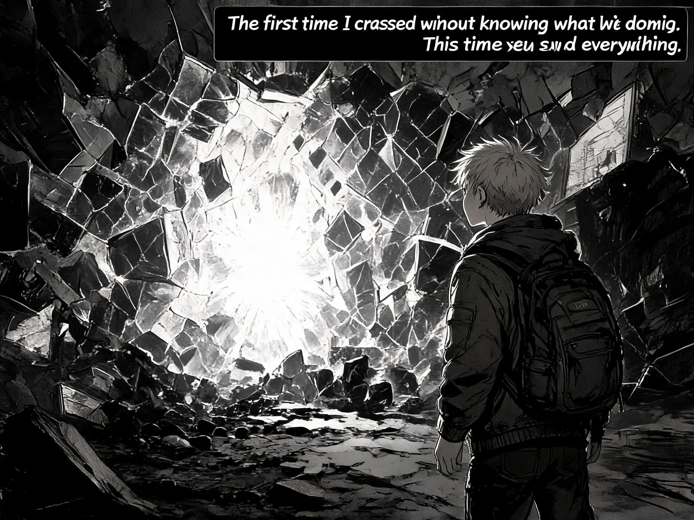
PRÓLOGO — El origen
Para el manual de La Senda de los Errantes
Este juego nació en 1991, en una finca junto al Camino del Terminillo, cerca del río Júcar. Dos personas. Una radio. Y una decisión que no debería haberse tomado.
David Dolf plantó la semilla. Solo jugó unos meses. Pero el mundo que construimos juntos lleva más de treinta años creciendo.
Tengo quince años y estoy solo en la finca cuando empieza.
Eso no es raro. Llevo toda la vida solo en sitios. El campo, la ciudad, las excursiones con los scouts, los veranos largos con mis libros y mis maquetas. Soy el tipo de chaval que no necesita que nadie le diga qué hacer con el tiempo. He leído todo lo que ha caído en mis manos — novelas, manuales, enciclopedias: de cómo funciona un motor a cómo orientarse de noche, del mundo natural a la historia de las guerras — y tengo la cabeza llena de procedimientos para situaciones que nunca van a ocurrir.
Era también el tipo de chaval que ya tenía más cuerpo que los de su edad. Fornido, fuerte, bastante ágil para lo que pesaba. No el adulto enorme que vendría después, pero sí alguien que se movía bien y que cargaba sin problemas. Lo suficiente para creer que podía con todo.
O eso creía.
La finca está en el Camino del Terminillo, cerca del Cerro de la Horca, junto al río Júcar. No es una casa de campo de postal — es una nave construida con muretes que fueron compartimentando el espacio hasta convertirse en algo habitable: la vivienda de verano de mi familia, con su piscina, y los tíos de mi padre al lado. Un lugar familiar, conocido desde siempre. Al fondo, el campo de trigo que se extiende hacia las montañas serranas de Cuenca.
El tipo de lugar donde no pasa nada.
Era el tipo de lugar donde no pasaba nada.
La radio empieza a fallar.
No es estática normal. Son saltos, fragmentos de música encadenados de una forma que no es casual. Tardo un momento en reconocer el patrón — pero lo reconozco, porque soy el tipo de chaval que reconoce patrones — y cuando lo hago ya no puedo ignorarlo. Algo está usando esos fragmentos para hablar. Todavía no tiene palabras propias, así que usa las que encuentra.
Intento apagarla. No se apaga.
Tienes que ponerte a salvo. Van a llegar.
Llegan antes de que pueda preguntar quiénes.
Son dos o tres. Entrenados, pero no excepcionales. En la cabeza, en ese segundo, calculo distancias, coberturas, ángulos de salida. Todo lo que he leído. Todo lo que he procesado durante años de maquetas y mapas y manuales de campo.
En la práctica, salgo corriendo hacia la Rieju Drac de 50cc que tengo aparcada en el camino — como cualquier chaval de quince años que tiene una moto a veinte metros. Arranco de una patada y tiro campo a través, hacia el trigo.
Las espigas golpean el carenado y me azotan las piernas. Escucho las voces detrás, los pasos, un motor. Algo zumba en el aire antes de alcanzarme — un disparo, un golpe, no sé bien qué — y el costado me arde, la rueda delantera se cruza y el suelo aparece antes de que lo espere. La moto sigue sola unos metros y cae entre el trigo.
Me quedo quieto. El trigo sigue moviéndose sobre mí como si nada hubiera pasado.
La radio —que de alguna manera sigue sonando aunque la dejé dentro de la finca— dice:
Si me otorgas parte de tu alma, yo te abro un portal.
En ese momento debería haber preguntado hecho muchas preguntas, pero solo me viene a la mente, cuánta parte. Debería haber negociado, evaluado, aplicado todo lo que había leído sobre tomar decisiones bajo presión. Leo rápido. Conecto ideas. Se me da bien entender cómo funcionan las cosas. Sé hacer muchas cosas.
Pero también tengo quince años, me están disparando, y un demonio atrapado en un radiocasete me está ofreciendo una salida.
Digo que sí, si hubiese sabido la verdad, creo que también habría aceptado.
Lo que no me dice — o lo que yo no entiendo hasta que ya es tarde — es que él también está bajo de energía. Que va a coger más de lo acordado porque necesita más para hacer lo que promete.
Lo que ocurre no es un portal limpio. Es más parecido a una colisión. Él sigue en la radio, yo sigo siendo yo, pero hay algo de él en mí y algo de mí en él, y ninguno de los dos puede deshacerlo. A cambio, puedo hacer cosas que antes no podía. Todavía no sé cuáles. Eso viene después. Pero siento algo — una estática en los huesos, un zumbido bajo la piel — que me dice que la realidad ya no es tan sólida como creía. Que puedo tocarla de formas que no debería.
Me levanto. El costado duele pero funciona. El agente que venía a rematarme está a tres pasos cuando el aire se rasga entre los dos — y en ese caos, con el portal abriéndose y su mundo rompiéndose en los ojos, le arrebato lo que puedo: el arma, las cinchas, la mochila. Cosas básicas. Exactamente lo que haría alguien que ha leído demasiados libros de supervivencia y por primera vez tiene que usarlos de verdad.
La Rieju queda tirada entre las espigas, con la rueda delantera todavía girando.
La moto no cruza el portal.
Yo sí.
Aparezco en un callejón.
Estoy mareado. Vomito contra la pared. Me apoyo en los ladrillos y cuando levanto la vista, lo primero que veo son edificios que suben hasta donde no llega la mirada, luces de neón en idiomas que no reconozco, y gente caminando por la calle como si todo aquello fuera completamente normal.
El olor es distinto. El aire es distinto. La gravedad —juro que la gravedad es ligeramente distinta, aunque nadie me creyó cuando lo dije después.
No sé cómo se llama este lugar todavía.
No sé que voy a tardar décadas en poder volver a casa.
Solo sé que la radio, en algún lugar entre mi cabeza y el mundo que acabo de dejar atrás, sigue sonando.
Y que creer que puedes con todo y poder con todo son, resulta, cosas distintas.
Aunque tampoco está tan mal para un chaval de quince años.
Este juego tiene más de treinta años. Ha pasado por docenas de sistemas, cientos de jugadores y miles de horas de partidas reales. Lo que lees en este manual no es una construcción de diseñador. Es todo eso destilado.
David Dolf dirigió las primeras sesiones. Solo jugó unos meses, pero fue él quien sostuvo el mundo mientras yo aprendía a habitarlo. Sin esa semilla, no habría árbol. Él fue el primer DJ de esta historia. Yo solo soy el primer personaje.
Y esa radio — ese Trasto — era Vhelka Gallû antes de tener nombre. Antes de ser una moto-demonio. Antes de ser mi compañero. Era solo un demonio atrapado, desesperado, dispuesto a engañar para salir. Y yo era solo un chaval asustado, dispuesto a aceptar cualquier trato. Juntos, sin saberlo, empezamos algo que ninguno de los dos podía imaginar.
Bienvenido al mosaico.
— Miguel Pascual, A. Seawolf
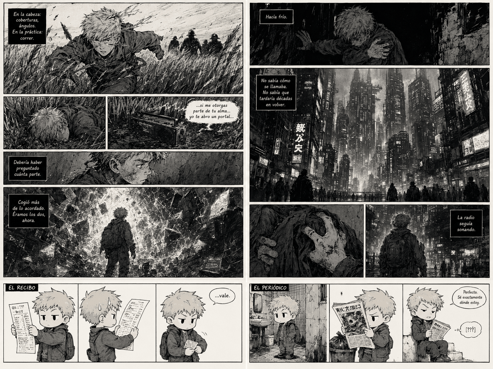
CAPÍTULO 0 — INTRODUCCIÓN
"Sin el juego nunca había pensado qué posibilidades de sobrevivir tendría una chica como yo de 16 años en un universo como aquel."
— Anapana, Cuenca, junio de 1994
¿Qué es un juego de rol?
Imagina una novela en la que tú decides lo que hace el protagonista. Un juego de rol es ficción interactiva y compartida: un grupo de personas construye una historia juntas en tiempo real. No hay tablero. No hay forma de ganar o perder en el sentido habitual. Hay personajes, hay un mundo, y hay decisiones que importan.
Los jugadores
Interpretas a un Errante: alguien que, por mala suerte o por una decisión desesperada, cruzó una grieta en la realidad y descubrió que su hogar es solo una pieza de un Mosaico infinito. Tu personaje arrastra un pasado que añora, habilidades que aprendió cuando su vida era normal, y una certeza incómoda: ya no pertenece a ningún sitio. No eres tú, pero lleva algo tuyo.
El Director de Juego
Una persona adopta el rol de Narrador (DJ): narrador, arquitecto del mundo, voz de todos los personajes que no son los del grupo. Describe lo que los personajes ven y encuentran. Presenta problemas. Hace que el mundo reaccione.
REGLA DE ORO
Dirigir no es ganar. El objetivo del DJ es que la historia sea interesante, no que los personajes fracasen.
Los dados
Cuando un personaje intenta algo con resultado incierto, los dados determinan si lo consigue. El sistema usa un d100: dos dados de diez caras, uno para decenas y otro para unidades. Si el resultado es igual o menor que tu habilidad, éxito. Cuanto más por debajo, mejor sale el resultado.
Una sesión de juego
Una sesión típica dura entre dos y cuatro horas. El DJ presenta una situación. Los jugadores responden. Algunos momentos se resuelven con interpretación; otros requieren una tirada. Una campaña es una serie de sesiones conectadas: la misma historia, los mismos personajes, creciendo con el tiempo.
"No hay un final predeterminado. La historia termina cuando el grupo decide que ha terminado."
Un momento de juego
La mejor forma de entender un juego de rol es verlo en acción. Los personajes son tres Errantes recién llegados a una tesela que no conocen. El DJ acaba de describir el callejón donde han aparecido.
DJ: Aparecéis en un callejón estrecho. Huele a aceite quemado y a algo orgánico que no sabéis identificar. Las paredes son de un material oscuro, casi cristalino. Al fondo hay una puerta metálica cerrada, y a vuestra izquierda, tirado entre bolsas de basura, hay un hombre. No se mueve. Tiene el puño apretado alrededor de algo.
Jugadora A: Me acerco al hombre. ¿Está vivo?
DJ: Tira Medicina.
Jugadora A: Tengo Medicina 45. Saco... un 38. ¿Es un éxito?
DJ: Sí. Tiene pulso, pero débil. Sangra de la cabeza y del pecho. Sin atención en los próximos minutos, no sobrevivirá. En el puño apretado ves un chip de datos, pequeño, de color rojo oscuro.
Jugador B: Antes de que hagamos nada — ¿escucho algo fuera del callejón?
DJ: Tira Alerta.
Jugador B: Tengo Alerta 60. Saco un 12. Eso es un éxito crítico, ¿verdad?
DJ: Sí. +2 puntos a tu habilidad al final de la sesión. Y escuchas pisadas metálicas. Rítmicas. Más de una persona. Se acercan.
Jugadora C: ¿Hay algún sitio donde esconderse además de la puerta?
DJ: Cajas apiladas a la derecha. Para dos personas agachadas, quizás tres apretadas. La puerta no tiene manilla visible. ¿Qué hacéis?
En treinta segundos han pasado cuatro cosas: una decisión, una tirada, información nueva y una complicación. Así funciona el juego: acción, resolución, consecuencia.
LO QUE HA PASADO MECÁNICAMENTE
Jugadora A: Medicina 45, tirada 38 → (45−38)÷10 = 0,7 → 1 éxito. Acción lograda sin margen extra.
Jugador B: Alerta 60, tirada 12 → (60−12)÷10 = 4,8 → 5 éxitos. Crítico — información máxima + mejora de habilidad.
Qué necesitas para jugar
| Qué | Para qué sirve |
|---|---|
| 3 a 5 jugadores | El tamaño ideal. Con 2 funciona; con más de 6 el ritmo se complica. |
| 1 Director de Juego | Asume este rol uno del grupo. Puede rotar entre campañas, no dentro de una misma. |
| 2 dados de 10 caras (d10) | Uno para decenas, otro para unidades. Forman el d100. Con colores distintos se evita confusión. |
| Fichas de personaje | Una por jugador. Al final de este manual. |
| Lápices | Las habilidades cambian durante la sesión. |
| 2 a 4 horas | Mínimo para una sesión con sustancia. La primera suele ser más larga por la creación de personajes. |
| Este manual | El DJ lo necesita completo. Los jugadores solo necesitan Creación de Personajes y Mecánicas para empezar. |
OPCIONAL PERO ÚTIL
Un d6 para ciertos daños secundarios. Un d4 para algunas tiradas de mejora de habilidad. Si no los tienes, el DJ improvisa.
Para la primera partida
Si es la primera vez que el grupo juega juntos, reservad media hora extra antes de empezar — para crear personajes, leer las reglas básicas en voz alta y resolver dudas antes de que importen.
No intentéis entender todo antes de jugar. Las reglas se aprenden jugando. Lo único imprescindible es saber tirar el dado y compararlo con un número.
Primera partida recomendada — Módulo 0.5
"Las guerras secretas. Es miércoles por la tarde. Uno de los PJs anda paseando por la calle..."
El Módulo 0.5 — PREDATOR N-5.2 está diseñado para ser la primera experiencia de un grupo con La Senda. Funciona en un mundo despertado: una ciudad contemporánea donde las corporaciones operan en las sombras.
| Característica | Detalle |
|---|---|
| Jugadores | 3 a 5 |
| Sesiones estimadas | 1 a 2 |
| Nivel de equipamiento | Inicial — no se necesita experiencia previa |
| Tono | Thriller urbano corporativo. Sin viajes interdimensionales — la Mazmorra aparece solo al final como gancho. |
| Qué enseña | Tiradas, interacción con PNJs, combate básico, economía, trabajo en equipo. |
| Por qué funciona | Ritmo rápido, objetivos claros, múltiples caminos para cada situación. |
Cómo presentarlo al grupo
No hace falta explicar el universo antes de empezar. El módulo funciona mejor si los jugadores descubren el mundo al mismo tiempo que sus personajes.
PRESENTACIÓN SUGERIDA PARA EL DJ
"Sois personas normales en una ciudad normal. Algo va a pasar esta tarde que va a cambiar eso. No sé qué vais a hacer cuando pase — eso depende de vosotros."
Glosario rápido
| Término | Qué significa |
|---|---|
| Narrador (DJ) | Narra la historia, controla el mundo y los PNJs. |
| PJ / Personaje Jugador | El personaje que controla cada jugador. |
| PNJ / Personaje No Jugador | Cualquier personaje controlado por el DJ. |
| d100 | Dos dados de 10 caras: decenas + unidades. |
| Tirada | Lanzar el d100 y comparar con una habilidad. Por debajo = éxito. |
| Habilidad | Porcentaje que indica cuánto domina el personaje algo. |
| Éxito crítico | Resultado 00, 01 o 02. Sale excepcionalmente bien + mejora de habilidad. |
| Pifia | Resultado 97, 98 o 99. Sale mal de forma espectacular + mejora de habilidad. |
| Éxitos | (Habilidad − Tirada) ÷ 10, redondeado arriba. Miden la calidad del resultado. |
| Sesión | Una reunión de juego. Suele durar 2-4 horas. |
| Campaña | Serie de sesiones conectadas que forman una historia larga. |
| Tesela | Un plano de existencia completo. Un mundo. |
| Urdimbre | El espacio entre teselas. Distorsión pura. Los portales lo atraviesan. |
| La Deriva | Distorsión acumulada en el cuerpo del Errante con cada viaje. Permanente. |
| Errante | Alguien que ha cruzado la urdimbre y sobrevivido. Es lo que son los personajes. |
| PC / Plasti-Créditos | La moneda más común en los mundos despertados. |
SI ALGUIEN PREGUNTA ALGO QUE NO ESTÁ AQUÍ
El glosario completo está al final del manual. Para el resto: "No lo sé ahora mismo, lo decidimos y lo apuntamos." Los juegos de rol sobreviven perfectamente a las reglas improvisadas.
"El multiverso no espera a que lo entiendas todo. Solo espera a que des el primer paso."
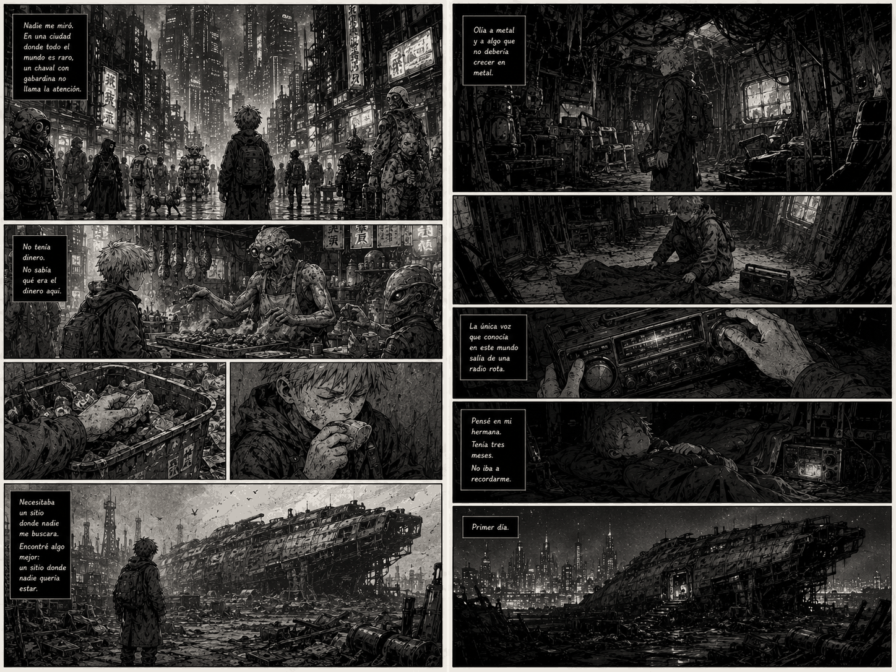
CAPÍTULO 1 — EL UNIVERSO
El Mosaico, los Ciclos y sus habitantes
"El mundo tal como lo conocemos es solo un reflejo de nuestra limitada percepción. Otros seres han encontrado la forma de pasar de un mundo a otro. Comprendiendo lo inminente de su final, ocultaron en la naturaleza humana la llave que permitiría su apertura."
Lo primero que nota cualquier Errante al llegar a una tesela nueva no es lo que ve. Es lo que siente.
Antes de que los ojos procesen los edificios de color equivocado, antes de que los oídos reconozcan un idioma que no existe, antes de cualquier dato concreto sobre dónde has aterrizado — el cuerpo ya lo sabe. No perteneces aquí. Es una certeza física, como cuando entras en una habitación donde acaban de tener una discusión: no hay pruebas, pero lo notas.
Eso es el mosaico. No una geografía ni un concepto — una sensación que no desaparece.
Lo que es el Mosaico
El mosaico no es un lugar. Es una red.
Cada universo posible existe en algún punto de esa red, cada uno con sus propias leyes físicas, sus propias civilizaciones, sus propios cielos y sus propios miedos. Lo que hace especial al mosaico no es que sea caótico ni que sea ordenado — es que es todo a la vez. Futurista y antiguo. Peligroso y tranquilo. Familiar y completamente extraño. En una sola tesela puede haber cientos de culturas tan distintas entre sí como lo son entre ellas.
Las teselas se tocan en sus bordes. Donde dos realidades comparten frontera existe la posibilidad de un cruce: un portal, un desgarro, un punto donde alguien que sepa lo que hace puede pasar de un lado al otro. Esa zona de contacto es la urdimbre — el espacio entre las teselas, impenetrable para quien no ha sido tocado por la distorsión, inevitable para quien ya lo ha sido.
Y la distorsión no es magia ni tecnología. Es la fuerza fundamental que hace posible todo esto. Permite que los portales existan. Causa las mutaciones en quien se expone demasiado. Es lo que los Maestros aprenden a manejar y lo que los Herreros Rúnicos aprenden a inscribir. Cada civilización que ha contactado con ella la ha interpretado distinto — para algunas es tecnología que se estudia y se vende, para otras es poder místico que exige respeto, para otras es filosofía. Ninguna interpretación es incorrecta. Todas son incompletas.
Lo que sí es universal: la distorsión deja marca. No hay Errante que haya cruzado la urdimbre suficientes veces sin que algo en él cambie. Eso se llama La Deriva — y es a la vez el mayor riesgo y, en raras ocasiones, el mayor regalo que el mosaico puede ofrecer.
Las Teselas
Una tesela es un universo completo. No un planeta, no un sistema solar — un universo con sus propias reglas.
Algunas tienen leyes físicas similares a las tuyas. Otras tienen gravedad invertida, soles de color equivocado o materiales que no deberían existir. La tecnología más básica puede dejar de funcionar simplemente porque los principios físicos que la hacen posible no se aplican en ese lugar.
Teselas mayores — universos completos y estables, con civilizaciones desarrolladas e historia propia. Las más habitadas y las más peligrosas políticamente.
Teselas menores o de bolsillo — fragmentos residuales de universos colapsados. Pueden ser tan pequeñas como un edificio o tan grandes como un continente. Inestables. Útiles como escondites o como trampas.
Teselas vírgenes — no catalogadas, sin presencia conocida de Errantes. Las corporaciones pagan bien por su localización. Los exploradores independientes las buscan por otras razones.
Teselas colapsadas — consumidas por la urdimbre. Pueden atravesarse pero no habitarse. Lo que queda en ellas a veces tiene valor incalculable.
Cuando una tesela despierta
Una tesela "duerme" cuando sus habitantes no saben que el mosaico existe. Primus se encarga de mantenerlas así — de preservar la ignorancia como forma de protección.
Cuando una tesela "despierta", los portales ya están abiertos y no hay forma de cerrarlos sin que alguien lo note. En ese momento todo cambia, y el mayor miedo de la gente que vive ahí no es lo desconocido en abstracto — es lo concreto que puede entrar por esos portales. La respuesta natural no es el pánico sino el posicionamiento: ¿cómo me coloco para no quedarme desprotegido cuando lleguen los de fuera? ¿Qué sé yo que pueda valer algo? ¿A quién me uno?
Primus existe para gestionar ese momento. No siempre llega a tiempo. No siempre actúa con buenos motivos.
Los Ciclos
El tiempo en el multiverso no es una línea recta — es una rueda en espiral. Cada vuelta completa es un Ciclo: el arco de un universo desde su origen hasta su reset. Ha habido varios, y los más antiguos son los más lejanos en la espiral.
Lo que importa para un Errante: cuanto más atrás en el tiempo, más fácil es viajar. La urdimbre estaba más suelta, los portales más abundantes, los mapas más completos. Cuanto más adelante, más difícil — las teselas se alejan, los cruces exigen más energía, los Maestros compiten por rutas que antes eran caminos abiertos.
Las corporaciones más antiguas miden su origen en Ciclos. Chafry tiene registros anteriores a tres Ciclos completos — no porque sus miembros sean inmortales, sino porque la entidad como estructura ha sobrevivido a tres resets del universo. Eso no la hace sabia. La hace persistente, que no es lo mismo.
La vida en el Mosaico
Aquí es donde muchos se equivocan al imaginar el mosaico: lo piensan como un campo de batalla perpetuo, un universo en guerra permanente donde solo los más fuertes sobreviven.
No es así.
Piensa en la Península Ibérica durante los diferentes califatos y reinos que iban creciendo, retrocediendo, avanzando. Los poderes cambiaban. La gente desarrollaba su vida independientemente de quién tuviera el poder esa semana. El pastor seguía vendiendo lana. El tabernero seguía abriendo su bar. Y cuando una corporación daba suficiente estabilidad — sin ahogar, sin explotar demasiado — la gente lo agradecía, igual que agradecías que el califa mantuviera las rutas comerciales abiertas.
Las corporaciones necesitan a la gente para funcionar. La gente necesita estabilidad para vivir. Y entre medio hay pequeñas empresas con tres personas, artesanos independientes, gremios de mecánicos, órdenes de Maestros, sectas filosóficas, mercados flotantes, tabernas con clientela de tres dimensiones distintas y pastores que venden lana sin importarles mucho quién controla el portal más cercano.
El mosaico es todo eso. La aventura ocurre en los márgenes, en los cruces, en los momentos donde ese equilibrio se rompe — pero el equilibrio existe, y es lo que hace que merezca la pena proteger algo.
Los Errantes
El término "Errante" no es un título ni una profesión. Es una descripción.
Son los que han cruzado y no han vuelto. O han vuelto y ya no pueden quedarse. O pueden quedarse pero eligen no hacerlo.
Si buscas un equivalente histórico, piensa en el arriero medieval. En el bohemio. En el viajante de comercio que conoce cinco lenguas, que ha dormido en treinta ciudades distintas y que sabe leer una habitación en menos tiempo del que tarda en entrar. No necesariamente un soldado, no necesariamente un héroe — alguien que se mueve, que conoce caminos, que va haciendo sobre la marcha.
Los Errantes pueden ser mercenarios. Pero también pueden ser médicos, mecánicos, cocineros, diplomáticos, ladrones, académicos o contadores de historias. Lo que los une no es el oficio sino el hecho de haber cruzado.
La Absorción
Una de las habilidades más valoradas entre los Errantes no es el combate. Es la Absorción — la capacidad de llegar a un sitio y no llamar la atención. No esconderse físicamente: fundirse con el contexto humano del lugar.
Imagina que te invitan a una fiesta de ingenieros y tú no eres ingeniero. Siempre hay temas desde donde puedes conectar, puntos comunes desde donde acercarte sin que noten que no eres de ahí. Eso, multiplicado por la diferencia entre universos, es la Absorción.
Es inteligencia social aplicada a la supervivencia interdimensional. Y explica por qué los Errantes más experimentados no son necesariamente los más fuertes ni los más listos — son los que mejor leen una habitación.
Lo que el mosaico da
Hay algo que el mosaico ofrece a quien lo habita que no tendrías sin él: la consciencia de que el universo es mucho, mucho más grande de lo que imaginabas.
Eso puede dar vértigo. También da explicación.
Cuando has viajado entre teselas, cuando has visto cielos de tres soles y culturas que resolvieron los mismos problemas humanos de formas completamente distintas, dejas de asumir que tu forma de ver las cosas es la única válida. No por idealismo — sino porque lo has visto con tus propios ojos. Es como entender el Big Bang y preguntarte: ¿y antes? ¿De dónde venía esa energía? El conocimiento no cierra preguntas. Abre más.
La Senda como cultura tiende hacia la mezcla, no porque sea idealista, sino porque no puede ser de otra manera. Cuando has sobrevivido gracias a alguien que no se parecía a ti, el prejuicio se convierte en un lujo que no puedes permitirte. Las tensiones culturales existen — son normales, inherentes a la preservación del propio yo — pero la apertura es la lógica de supervivencia del Errante.
Los que vinieron antes
Dos entidades del pasado remoto del mosaico definen gran parte de lo que los Errantes encuentran hoy.
Los Antiguos construyeron el entramado de portales. Su conocimiento era una fusión de magia y ciencia tan avanzada que la distinción había dejado de ser relevante. Construyeron los portales estables, las vainas de suspensión y el Genocaballero original. Y luego desaparecieron. Nadie sabe exactamente cómo ni por qué. Hay teorías. Hay corporaciones enteras dedicadas a encontrar respuestas.
Los Precursores fueron la primera raza contactada a través de la distorsión. No desaparecieron — trascendieron: sus largas vidas les permitieron acumular tanta distorsión que dejaron de ser seres físicos, y hoy se cree que forman parte de la propia naturaleza de la urdimbre. Las Pseudo-Arkanitas son otra cosa: una raza viva, tecnológicamente avanzada, que se autodenomina "Arcanitas" por considerarse heredera de los Antiguos. El resto del mosaico las llama Pseudo-Arkanitas para dejar claro que no son los constructores originales — solo sus continuadoras. Confundirlas con los Precursores o con los Antiguos es un error común, y las Pseudo-Arkanitas lo alimentan cuando les conviene.
Para el Narrador: En el universo del juego hay confusión deliberada entre los Antiguos y los Precursores. Las corporaciones mezclan los términos cuando les conviene. Los jugadores pueden pasar mucho tiempo sin saber exactamente qué construyó quién — y eso está bien.
Las Corporaciones
Las corporaciones no son gobiernos. Son entidades que han sobrevivido a múltiples Ciclos adaptándose — cambiando de nombre, de estructura, de territorio, pero manteniendo el núcleo de poder que las define. Un gobierno tiene responsabilidad sobre su gente. Una corporación tiene responsabilidad sobre sus objetivos. En el mosaico, donde las fronteras son portales, las corporaciones son más estables que cualquier gobierno.
Eso no las hace mejores. Las hace más persistentes.
Chafry es la más antigua que alguien recuerde — sus registros se pierden tres Ciclos atrás. TecnoStealer lleva el espíritu libre grabado en el nombre, aunque su fundador lleva décadas desaparecido. Serpent juega partidas que tardan generaciones en resolverse. Primus protege mundos que no saben que necesitan protección. Mort opera el mercado negro con la eficiencia de una oficina de correos. Mercury mueve personas y carga entre teselas — si pueden pagar. Workhouse recoge a quienes las demás descartan. Megacorp controla la comida y la medicina, lo que en la práctica significa que controla la vida cotidiana.
Hay más. Siempre hay más. Pero estas son las que un Errante se cruza antes o después.
Para el Narrador — CFE: La Corporación de Fusión y Energía controla ~30% de los recursos del mosaico. Es el mecanismo que los Antiguos dejaron activo. Sin sede. Sin líderes identificables. Para todos los jugadores, la corporación más poderosa es Chafry. Lo que hay detrás es secreto de Narrador.
Para fichas detalladas de cada corporación, ver Capítulo 12 y los archivos LORE de 03_LORE_Y_REFERENCIAS.
Las Razas
El mosaico no pertenece a nadie. Sus habitantes lo reflejan.
Los humanos son la especie más extendida — no por ser los más fuertes ni los más listos, sino porque se adaptan a todo. Son la línea base contra la que se mide todo lo demás.
Pero no están solos. Los Nakel — Hombres Rata, como los llaman quienes no les conocen — llevan en las zonas bajas de MadCity desde antes de que existiera el nombre. Creados por los Antiguos como auxiliares técnicos, resultaron ser mucho más que eso: mentes brillantes, garras afiladas, y una resistencia a la Deriva que ninguna otra especie puede igualar. No son queridos. Son necesarios. Sus primos corporativos, los Inukel, son la versión pulida y educada — criados por las corps para servir como técnicos integrados, cargan con el desprecio silencioso de los suyos y con las expectativas de sus patronos.
Los Kawalapiti tienen la piel del color de la piedra, con vetas de metal plateado siguiendo las venas. Fueron sirvientes de las Pseudo-Arkanitas hasta que dejaron de serlo — se rebelaron, casi fueron exterminados, y sobrevivieron gracias a su propio ingenio. Las vainas bajo sus mundos no son regalo de nadie: las construyeron ellos.
Los Chernos son humanos adaptados a la contaminación extrema del mundo donde nacieron. Piel pálida, ojos grandes, pulmones que filtran lo que a otros los mataría. Fuera de sus túneles necesitan respirador. Se mueven mejor en la oscuridad que en la luz.
Las Mujeres Gato son filiales de Chafry: ágiles, carismáticas, con una capacidad para leer a las personas que pone nervioso a cualquier interrogador profesional. Los Hombres Gato, donde ellas son bisturí, son martillo — grandes como un tigre erguido, creados como unidades de choque, estériles por diseño para mantener el control de la población. No todos trabajan para su corp. Los que se salen llevan el apellido corporativo como recordatorio.
Y luego están los que ya no son nada reconocible. Los Demonios de la Distorsión no son una raza — son un destino. Lo que queda cuando un ser acumula demasiada Deriva y la distorsión lo reclama.
Y están los que nunca fueron de carne. Los droides del mosaico no son herramientas — o al menos, no solo herramientas. Un Droideum básico puede ser una moto con demasiada personalidad, un dron con rayaduras y opiniones, o un droide de servicio que lleva contigo más tiempo del que recuerdas. Los más avanzados desarrollan algo que se parece mucho a la lealtad. Algunos Errantes confían más en su droide que en cualquier persona. Y a veces el droide tiene razones para devolver esa confianza.
Un Droideum también puede ser un personaje jugador. Arrancan con atributos planos — sin los picos ni los valles de las razas orgánicas — pero lo compensan con otra ventaja: todo lo que son puede mejorarse. Donde un humano necesita años de entrenamiento, un droide necesita un buen taller y las piezas adecuadas. Su camino de progresión no es crecer: es construirse.
Las Pseudo-Arkanitas se llaman a sí mismas Arcanitas, sin el "pseudo". Crearon el Necrochip, el Hotpoint, y buena parte de la tecnología que el mosaico da por sentada. Su sociedad es matriarcal y su nivel tecnológico está varios escalones por encima de lo que la mayoría puede comprender. No son jugables — son telón de fondo, adversarios ocasionales, o el fabricante que hizo la armadura que llevas puesta.
Para stats, bonificadores raciales y reglas de creación de las razas jugables (Humano, Nakel, Inukel, Kawalapiti, Chernos, Mujeres Gato, Hombres Gato, Droideum), ver Capítulo 2. Para bestiario y criaturas no jugables, Capítulo 7.
Lugares
El mosaico tiene tantos lugares como teselas, y cada tesela es un mundo entero. Algunos son nodos estabilizados donde las corporaciones montan mercados y los Errantes descansan entre cruces. Otros son mundos vírgenes donde nadie ha puesto nombre a los ríos. Algunos son trampas.
Hay estaciones orbitales donde el mercado negro se confunde con el legal hasta que la distinción pierde sentido. Ciudades-satélite con mil plantas de altura, donde una capa de nubes de distorsión separa la zona baja de la alta — y lo que vive abajo no siempre es lo que esperas. Mundos áridos donde las ruinas de los Antiguos duermen bajo las dunas, esperando a que alguien las encuentre — o a que alguien desee no haberlo hecho. Planetas enteros que guardan bajo su corteza a los supervivientes de un genocidio.
Y en algún lugar del mosaico, en una finca junto al río Júcar, en las afueras de una ciudad española que no aparece en ningún mapa estelar, hay un camino de tierra donde empezó todo.
Los lugares emblemáticos del mosaico — EP-9, MadCity, Cuenca Gótica, Nexar Prime, el Planeta Kawalapiti — se detallan en los capítulos de aventuras y en los archivos de lore. Aquí basta saber que el mosaico es grande, variado, y que siempre hay un sitio al que no has ido todavía.
Para el Narrador
Este capítulo no es un catálogo que los jugadores tienen que memorizar. Es contexto.
Lo que necesitan saber antes de la primera sesión cabe en cuatro frases: el mosaico es una red de universos conectados por la urdimbre; los Errantes son los que han cruzado y no han vuelto; las corporaciones tienen mucho poder pero no lo controlan todo; la distorsión es real, deja marca, y tiene precio.
El resto lo aprenden siendo. Y aprenderlo en la mesa, a través de sus propias decisiones, es infinitamente mejor que leerlo aquí.
Piezas de lore concretas (TecnoStealer y sus facciones internas, Oasis y la Mansión de Totovia, y otros lugares emblemáticos) → ver
02_ANEXOS/y los DLCs. Este capítulo se queda con el cuadro general.
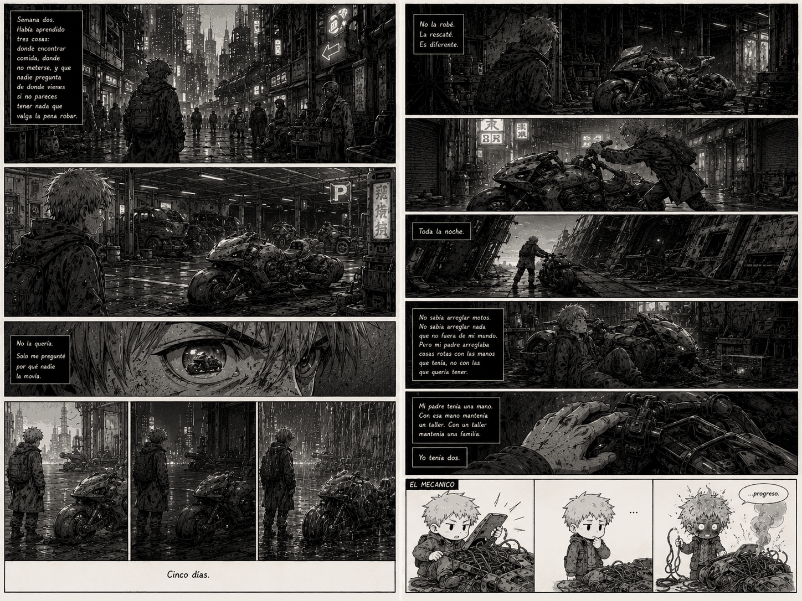
CAPÍTULO 2 — CREACIÓN DE PERSONAJES
"Los personajes somos nosotros mismos. Incluso hicimos pruebas para evaluar nuestras capacidades."
— Anapana, Cuenca, junio de 1996
Hay una regla no escrita en La Senda de los Errantes que viene de los primeros tiempos del juego.
El primer personaje eres tú.
No un arquetipo, no un guerrero genérico, no "alguien parecido a ti". Tú. Con lo que sabes hacer, con lo que llevas encima, con cómo reaccionas cuando algo sale mal. En aquellas primeras partidas era literal — se evaluaban las capacidades reales del jugador y se inscribían en la ficha. Las reglas están para construir eso mismo. Para que lo que eres se convierta en lo que tu personaje puede hacer.
Esto tiene una consecuencia práctica: cuando no sepas qué profesiones elegir, no pienses en términos de personaje de ficción. Piensa en términos de competencia real. ¿En qué quieres ser competente? ¿Qué hace tu personaje cuando hay un problema técnico, un combate, una negociación difícil? Las profesiones son el mapa. Tú decides el destino.
📓 Memorias de un rolero
En el parque del Carrero — los Moralejos, Cuenca — hicimos las primeras pruebas reales. Corríamos, saltábamos a pies juntos, trepábamos árboles. Para medir la Fuerza nos levantábamos unos a otros: el que más levantaba marcaba el techo del grupo, el que menos marcaba el suelo. No había dados todavía. Era un grupo de chavales en un parque tomándose muy en serio algo que acababan de inventar.
Las habilidades específicas venían después — lo que cada uno sabía hacer en la vida real se inscribía directamente en la ficha. Las profesiones surgieron más tarde, como solución de diseño: para agrupar habilidades relacionadas y dar a todos oportunidades similares de entrada. Pero la filosofía no cambió. El personaje eres tú.
Resumen del proceso
| Paso | Qué se hace |
|---|---|
| 1 | Elige el tipo de personaje |
| 2 | Asigna los 8 atributos y distribuye Puntos Gratuitos |
| 3 | Calcula stats derivados |
| 4 | Elige profesiones — aplica bonos y equipo |
| 5 | Ajusta habilidades |
| 6 | Elige MéritoDefecto especial (opcional, solo uno) |
| 7 | Elige Méritos y Defectos adicionales |
| 8 | Equipo y dinero inicial |
Paso 1 — Tipo de personaje
¿ES TU PRIMER PERSONAJE? Empieza por ti.
No inventes a nadie. Coge lo que sabes hacer, lo que llevarías encima si todo se torciera, cómo reaccionas cuando algo sale mal — y conviértelo en ficha. Elige el tipo Predestinado: empiezas algo más frágil, pero con 9 Puntos Épicos para torcer el destino cuando la cosa se ponga fea. Es la red de seguridad del novato. Ya tendrás tiempo de ser Héroe.
El tipo de personaje define tu potencial de partida y cuántas veces puedes torcer el destino.
| Tipo | Atrib. primarios | Atrib. secundarios | Pts. Gratuitos | Pts. Épicos |
|---|---|---|---|---|
| Héroe | 40 | 35 | 10 | 1 |
| Madera de Héroe | 35 | 30 | 20 | 3 |
| Predestinado | 30 | 25 | 30 | 9 |
Los Puntos Épicos permiten sobrevivir a situaciones letales, activar habilidades en momentos críticos o girar el resultado de una tirada clave. El Héroe tiene mejor base pero menos margen para lo extraordinario. El Predestinado empieza más frágil pero puede hacer cosas que los demás no pueden.
Atributos primarios y secundarios
Elige si tu grupo principal son los FÍSICOS o los MENTALES. El grupo elegido recibe el valor primario; el otro el secundario.
| Grupo | Atributos |
|---|---|
| FÍSICOS | Agilidad (A) · Constitución (C) · Fuerza (F) · Habilidad (H) |
| MENTALES | Carisma (Ca) · Inteligencia (I) · Percepción (P) · Voluntad (V) |
Ajuste fino: dentro de cada grupo puedes mover hasta 5 puntos de un atributo a otro. El total del grupo no cambia.
Puntos Gratuitos: se reparten en bloques de 5 entre cualquier atributo. Ningún atributo puede superar 60 al inicio.
Paso 2 — Los 8 Atributos
Los atributos representan las capacidades fundamentales del personaje. Afectan directamente a las habilidades derivadas y a los stats de combate.
| Atributo | Cód. | Afecta principalmente a |
|---|---|---|
| Agilidad | A | Esquiva, iniciativa, atléticas, distancia |
| Constitución | C | Resistencia al daño, carga, sin armas |
| Fuerza | F | Daño CC, carga máxima, proezas físicas |
| Habilidad | H | Precisión armas, tecnológicas, combate CC |
| Carisma | Ca | Social, liderazgo, Tatuador Rúnico |
| Inteligencia | I | Académicas, Invocación de energía |
| Percepción | P | Alerta, detección, distancia, Detección Distorsión |
| Voluntad | V | Salud Mental, Manipulación Distorsión, Herrero Rúnico |
Paso 3 — Stats derivados
Vida: (A + C + F) ÷ 6 por zona corporal, redondeado arriba.
Seis zonas: Cabeza (10/00) / Torso (9-5) / Brazo D (4) / Brazo I (3) / Pierna D (2) / Pierna I (1)
Estados de daño (por zona): según los PV perdidos, cada zona cae en un nivel — Leve (sin penalizador) → Medio (−10 a las acciones que usen esa zona) → Grave (−20; riesgo vital si es zona crítica). (Obligatorio para droides, implantes y blindaje localizado. Detalle en ANEXO Heridas.)
Estado general (en paralelo): Sano → Herido → Exhausto (−20% a todas las habilidades) → Inconsciente / Muerto. Sin daños, Sano; gastado el último nivel, muerto.
Humanidad: 100 base. Los implantes la reducen. A 0 = autómata. Techo máximo = Puntos de Alma × 10 (un personaje estándar con 8 de Alma topa en 80; un Iniciado con 10, en 100).
Salud Mental: 100 base. Defectos o traumas la reducen.
Deriva: 0 base. Sube con cada cruce de urdimbre. Al múltiplo de 10 → Tabla A. Permanente e irreversible.
Puntos de Alma: 8 base / 10 si Iniciado. −1 por cada 2 zonas con implantes. −1 por cada 2 mutaciones de Deriva.
Carga: sin penalización hasta (F+C)÷4 vol. / −20% hasta (F+C)÷2 / −40% hasta (F+C)×2.
Dinero inicial: INT × 100 PC + el ingreso de tus profesiones (ver Pasos 4 y 8).
Paso 4 — Profesiones
Para el lore completo de cada categoría —estatus social, ganchos, relación con corps— ver la sección de Profesiones más adelante. Para equipo e implantes detallados, ver Perfiles de Profesión.
Las profesiones son tu historia antes del portal. No lo que quieres ser: lo que ya eras. Quien sabe pilotar lo sabe porque trabajó en ello; quien sabe pelear arrastra un pasado que lo explica. Elegir profesión no es rellenar una casilla — es decidir de dónde vienes.
NortonYo no 'elegí' ser técnico. Veintidós años desmontando lo que otros rompían. Eso no se elige; se sobrevive.
Eliges hasta 3 profesiones. Y aquí va la primera decisión con peso: puedes repartirlas (ser de muchos sitios y de ninguno del todo) o concentrarlas (ser de los buenos en una cosa). El juego premia ambas, de forma distinta.
Coger una profesión por tercera vez es raro, y cuesta justificarlo: significa que le has dado la vida entera a una sola cosa. La mayoría de la gente del mosaico no pasa de una o dos. Un 3× no es un cualquiera — es un obseso, un maestro o un fanático. Que la tercera pese; que el jugador note que está renunciando a ser otras cosas para ser del todo una.
El primer personaje eres tú. No pienses en arquetipos de ficción. ¿En qué eres competente de verdad? ¿Qué haces cuando hay un problema técnico, un combate, una negociación difícil? Las profesiones son el mapa.
Bonos por profesión
Cada profesión aporta su porcentaje a toda la rama indicada (no es bolsa a repartir), sobre la base calculada en el Paso 5:
| Profesión | Bonos de rama |
|---|---|
| Combatiente | Combate +15% / Atlética +10% / Tecnológica +5% |
| Civil | Académicas +15% / Social +10% / Atlética +5% |
| Científico | Académicas +15% / Tecnológica +10% / Social +5% |
| Especialista Técnico | Tecnológica +15% / Social +10% / Académicas +5% |
| Iniciado | Distorsión +15% / Académicas +10% / Tecnológica +5% |
Dos profesiones del mismo tipo suman sus bonos — por eso concentrar te hace mejor en lo tuyo.
Ventaja humana: El humano elige +10% en una habilidad específica o +5% en dos. Es gratuito, permanente, y se aplica después de calcular la base de rama y los bonos de profesión — es el último paso del cálculo de habilidades, no el primero.
Orden de aplicación en creación: (1) base de rama por atributos → (2) ajuste fino de atributos → (3) Puntos Gratuitos → (4) bono por NT bajo → (5) bonos de profesión → (6) ventaja humana → (7) méritos. Ningún atributo supera 60 en ningún momento. El techo de habilidades se especifica en el Paso 5.
Regla general de modificadores: todas las habilidades y bonificadores se mueven en múltiplos de 5. Los modificadores situacionales en mesa tienen un rango máximo de +20 a −20.
Concentrar te hace alguien
Repetir profesión del mismo tipo no solo suma habilidad: te da estatus que el mundo reconoce.
| Veces | Civil | Combatiente | Técnico | Científico | Iniciado |
|---|---|---|---|---|---|
| 1× | Civil | Novato | Chapuzas | Estudiante | Novicio |
| 2× | Ciudadano | Veterano | Especialista | Científico | Practicante |
| 3× | Político | Oficial | Ingeniero | Doctor | Maestro |
"Puedes ser un maestro con la espada, pero sin profesiones de Combatiente nunca serás considerado como tal por quienes importan."
El rango 4× (Pacificador / General / Genio / Catedrático / Gran Maestro) y la 5ª categoría legendaria no se compran en creación: son figuras del mosaico, se ganan jugando o son pura narrativa.
Las cinco categorías
Civil
La gente que hace funcionar el mosaico: comerciantes, funcionarios, mediadores. Su poder es la legitimidad — acceso a estructuras legales, contratos, redes de información. Pasan desapercibidos porque no parecen amenaza.
Combatiente
Quien pelea y sobrevive. Su valor es el reconocimiento: contratos de seguridad, respeto inmediato en tensión, acceso a mercados de armamento cerrados a civiles.
Técnico
Arregla y sabotea lo que nadie más entiende. Naves, implantes, tecnología de los Antiguos: problemas con solución. En cualquier tesela con tecnología, alguien los necesita.
Científico
Investigadores y autoridades del conocimiento. Acceso a archivos y bases de datos vedados a otros, credibilidad institucional, contactos académicos por todo el mosaico.
Iniciado
Quien maneja la distorsión: Maestros de Portales, Hechiceros, Tatuadores Rúnicos. Acceso a rutas de portal y conocimiento de la urdimbre que ninguna corp puede comprar. Una red informal de Iniciados trasciende facciones.
Detalle de rangos, ganchos de aventura y estatus por nivel → ver sección de Profesiones.
Maestro de Drones (Especialización)
"Uno no es nada. Cinco son un problema. Veinte son una pesadilla."
Disponible para Técnicos y Combatientes. Un Maestro de Drones controla pequeños enjambres de unidades de baja IA. No son personajes — son herramientas con un mínimo de autonomía.
Unidad individual:
| Stat | Valor |
|---|---|
| Atributos base | 10 (todos) |
| Especialidad | +10 en una habilidad según tipo |
| Tipos | Espía (Vigilar), Escudo (Blindaje +1), Ataque (Distancia o CC) |
Enjambre (hasta 5 unidades):
La habilidad del enjambre se calcula como 10 de base + 10 por cada unidad que lo compone. Un enjambre de 3 unidades de ataque tiene 40% en su habilidad de combate. Cinco unidades: 60%.
Los enjambres de escudo suman su blindaje: cada unidad aporta +1 al blindaje de la zona que cubren, tanto al droide maestro como a un aliado designado.
En el campo:
Un Maestro puede controlar un enjambre como acción menor. Más enjambres simultáneos requieren tirada de Programación o Liderazgo (−10 por enjambre adicional). Los veteranos llevan contenedores de transporte con decenas de unidades que despliegan al inicio del combate — cada contenedor libera un enjambre completo como acción de preparación.
Coste: las unidades individuales se compran o fabrican como equipo. Precio, reparación y modificación por el Catálogo Norton o el Taller a Medida.
Concentrar te equipa mejor — y te paga más
Cada profesión rinde un ingreso y un equipo base. Concentrar (2× la misma) dobla como mínimo el ingreso y sube el equipo de "lo imprescindible" a "lo bueno" — siempre dentro del material normal.
| Profesión | Ingreso 1× | Kit 1× — lo imprescindible | Salto 2× — mejor equipo normal |
|---|---|---|---|
| Combatiente | 4.000 PC | Casco + chaleco (Bld 1) + arma básica | Armadura superior o arma modificada; o vehículo ligero |
| Civil | 10.000 PC | Ropa de calidad + vehículo pequeño | Vehículo de gama o propiedad + contactos |
| Científico | 6.000 PC | Traje especialista + herramientas + escáner | Laboratorio de campo o acceso a datos |
| Esp. Técnico | 6.000 PC | Traje + escáner + kit de herramientas | Dron/droide auxiliar o taller portátil |
| Iniciado | 3.000 PC | Traje de Iniciado + acumulador rúnico | Focos extra + reserva de perlas o una runa |
Suelo de dinero: además del ingreso de profesión, siempre tienes INT × 100 PC. El Civil es la profesión del bolsillo lleno; el Combatiente cobra menos efectivo porque cobra en hierro.
¿No quieres el equipo? Cóbralo. Puedes canjear el kit (1× o el salto 2×) por dinero — pero al 60-70 % de su valor. Es dotación, no efectivo: revenderla pierde.
El equipo de profesión es gratuito — no sale de tu bolsillo. El dinero inicial (INT × 100 PC + el ingreso de la profesión) es adicional al equipo. No tienes que pagar el kit con tu dinero: lo recibes como parte del perfil. El ingreso es para compras personales, deudas, o lo que la aventura traiga.
Ejemplo rápido: Un 2× Técnico recibe su kit (taller portátil incluido, valor ~5.000 PC) sin coste. Además tiene 6.000 PC de ingreso + INT × 100 para gastar libremente. Si decide canjear el taller por dinero, recibe 3.000-3.500 PC extra. Su bolsillo nunca empieza en negativo.
Reyes¿Dos veces civil? Ciudadano con papeles, cuenta con fondos y un coche que arranca. La gente se ríe del oficinista hasta que necesita que alguien firme.
(Equipo detallado por profesión e implantes → CAP02 seccion Perfiles de Profesion.)
¿Y si entro en una corporación?
Unirte a una corp en creación es el Mérito Afiliación (Paso 7). Te da rango, respaldo y equipo de la corp en préstamo a cambio de correa: respondes ante alguien, tienen tu chip, y el equipo es suyo (si te vas, lo devuelves).
Reclutador de MortTe presto equipo que no podrías pagar en diez años. Solo pido lo de siempre: que cuando suene el aviso, vengas. ¿Ves la pega? No, claro. Nunca se ve al principio.
Las grandes corps del mosaico, en breve (lo que cualquiera sabe en la calle):
| Corp | Reputación de calle |
|---|---|
| Chafry | La más poderosa. Mente colmena, estructura casi eclesiástica. |
| TecnoStealer | Tecnología de élite y operaciones que oficialmente no existen. |
| Mort | Segundas oportunidades con precio. Escalas rápido si no tienes escrúpulos. |
| Serpent | Operaciones encubiertas. Recluta para lo que nadie firma. |
| Primus | Protege los mundos no despertados. Forma Guardianes e Iniciados. |
| Workhouse | El fondo. Acoge a los descartados — entrar es gratis porque es el último escalón. |
La excepción Workhouse. Es la única corp en la que puedes estar sin pagar Afiliación: acoge a quien no tiene nada y empieza de cero. Entrar es gratis… porque es el fondo. Eres una Unidad: el sueldo más bajo, el estipendio retenido como capital de la corp, y una puerta de salida que cuesta cara.
Detalle de cada corporación → sección de Corporaciones (CAP02 seccion Corporaciones y fichas individuales).
El filtro que lo cambia todo: el NT de tu mundo de origen
Tu equipo y tu dinero no se entregan en el vacío: se entregan al Nivel Tecnológico del mundo donde empiezas. La mayoría de la urdimbre vive por debajo de NT6. En un mundo no despertado no hay armas de energía ni cibernética: tu kit de profesión se traduce a su equivalente disponible —el arma del Combatiente es de proyectil o filo, no de energía; el Técnico repara con las manos.
Pero la urdimbre cobra una cosa y regala otra. Quien se cría sin muletas tecnológicas desarrolla el cuerpo y la mente que los demás delegan en sus máquinas:
REGLA — Origen de bajo NT (≤5)
Por cada NT por debajo de 6, ganas +5 a un atributo (a elegir; respeta el techo de 60).
A cambio, tu NT personal nunca superará el de tu origen +2 — lastre permanente: jamás manejarás equipo, armas ni implantes por encima de ese techo.
Excepción — Visionario: eleva tu techo un nivel más (origen +3).
| NT origen | Bono | Techo NT (+2) | Con Visionario (+3) |
|---|---|---|---|
| 5 | +5 | 7 | 8 |
| 4 | +10 | 6 | 7 |
| 3 | +15 | 5 | 6 |
| 2 | +20 | 4 | 5 |
| 0 | +30 | 2 | 3 |
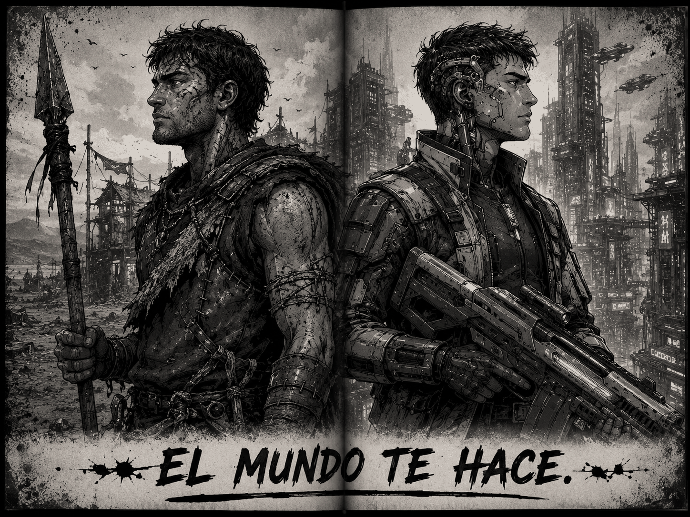
El mismo personaje, dos orígenes. A la izquierda, NT2 — recio, cicatrices, lo que la vida da a quien vive sin muletas. A la derecha, NT7 — implantes, rifle de energía, la postura blanda de quien nunca pasó hambre. El mundo te hace.
Perfiles de Profesión: Equipamiento e Implantes
"No importa de dónde vengas. Importa lo que llevas encima cuando cruzas el portal."
Cada profesión tiene una forma de moverse por el mosaico, unas herramientas características y una relación distinta con los implantes. Este anexo ofrece tres perfiles por profesión — ciudad grande, Errante curtido, tesela específica — y una guía de implantes recomendados según cuántas profesiones del mismo tipo ha acumulado el personaje.
COMBATIENTE
Novato → Veterano → Oficial → General
El Combatiente sabe que su cuerpo es su herramienta principal. Cuida el equipo, conoce sus límites y sabe cuándo retirarse. Lo que varía es dónde aprendió eso.
Equipamiento base
| Ítem | Vol | Precio ref. |
|---|---|---|
| Armadura media completa | 20 | 3.600 PC |
| Arma mediana (espada/fusil) | 2 | 200–400 PC |
| Armadura ligera de repuesto | 10 | 900 PC |
| Kit de primeros auxilios básico | 1 | 200 PC |
| Comunicador estándar | 0,5 | 300 PC |
Implantes típicos por nivel de profesión
| Profesiones | Implante sugerido | Efecto | Coste Humanidad | Precio |
|---|---|---|---|---|
| 1× Combatiente | Forge-A10 Tendon Wire | +10 AGI | −5 | 20.000 PC |
| 2× Combatiente | + Ibis Reflex-Chip Mk1 | +10 Iniciativa | −5 | 25.000 PC |
| 3× Combatiente | + Forge Subdermal Mk1 | +1 blindaje natural | −10 | 30.000 PC |
Con tres profesiones Combatiente el personaje ha invertido en su cuerpo de forma deliberada. No es suerte — es disciplina.
Tres perfiles
El Veterano de MadCity
Ha servido en seguridad corporativa o en las fuerzas de orden de alguna tesela despertada grande. Conoce el mercado negro de armas, tiene contactos en al menos una corporación y lleva sus implantes de Ibis-Forge con la garantía en regla. Sabe lo que cuesta cada pieza y no malgasta.
- Implante más probable: Forge Subdermal + Reflex-Chip
- Equipo extra: armadura media servoasistida, subfusil con mira inteligente
- Dónde compra: tiendas Norton de MadCity, técnicos corporativos
El Errante de Largo Recorrido
Ha peleado en tres teselas distintas, ninguna de ellas tranquila. Su equipo es un collage de lo que ha ido encontrando: una pieza de armadura de aquí, un arma de allá, un implante instalado por un artesano en un mundo del que prefiere no hablar. Funciona porque lo ha probado en campo real.
- Implante más probable: Forge-F10 o Forge-A10, instalado por artesano (sin garantía)
- Equipo extra: arma a medida (modificada por el propio personaje), botiquín avanzado
- Dónde compra: artesanos, mercados negros, trueque
El Guerrero de Tesela Preindustrial
Viene de un mundo de NT3-4 donde los implantes son magia o abominación según a quién preguntes. Nunca ha visto un Ibis-Forge en su vida. Su cuerpo es puro, su técnica es extraordinaria y su adaptación al mosaico es el mayor reto que ha enfrentado. Puede que rechace los implantes por principio, o puede que los adopte con una fascinación que asusta a sus compañeros.
- Implante más probable: ninguno al inicio / primer implante siempre narrativamente significativo
- Equipo extra: arma artesanal de alta calidad (material exótico de su tesela), armadura tradicional
- Adaptación: las armas de fuego requieren entrenamiento específico; las de CC son su terreno
ESPECIALISTA TÉCNICO
Chapuzas → Especialista → Ingeniero → Genio
El Técnico entiende los sistemas. Da igual si es una nave, una red corporativa o un portal mal calibrado — si tiene tiempo y herramientas, lo arregla. Sus implantes son extensiones de su trabajo, no exhibiciones de poder.
Equipamiento base
| Ítem | Vol | Precio ref. |
|---|---|---|
| Traje especialista (resistente, con bolsillos) | 3 | 800 PC |
| Escáner multifunción | 1 | 1.500 PC |
| Kit de herramientas completo | 3 | 2.000 PC |
| Comunicador con cifrado básico | 0,5 | 600 PC |
| Armadura ligera (discreta) | 10 | 900 PC |
Implantes típicos por nivel de profesión
| Profesiones | Implante sugerido | Efecto | Coste Humanidad | Precio |
|---|---|---|---|---|
| 1× Técnico | Forge Tool-Hand Mk1 | +5 técnicas / elimina penalizador falta equipo básico | −5 | 5.000 PC |
| 2× Técnico | + Ibis Neural-Rack | Rack de Chips a 40% habilidad | −10 | 50.000 PC |
| 3× Técnico | + Forge Tool-Hand Mk2 | +10 técnicas / elimina penalizador equipo inadecuado | −5 | 50.000 PC |
Un Ingeniero con Tool-Hand Mk2 y Neural-Rack puede trabajar en condiciones que dejarían sin opciones a cualquier otro técnico.
Tres perfiles
El Técnico de Ciudad Grande
Formado en una universidad técnica de MadCity o equivalente. Conoce los sistemas corporativos estándar, habla el lenguaje de los proveedores y sabe exactamente qué implante necesita para qué trabajo. Probablemente tenga deudas de la formación y un contrato con una corporación que le paga bien pero le exige mucho.
- Implante más probable: Tool-Hand Mk1 o Mk2 + Neural-Rack
- Equipo extra: escáner de alta gama, herramientas especializadas por disciplina (electrónica, mecánica, informática)
- Dónde compra: División Ibis de Ibis-Forge, proveedores corporativos
El Técnico Errante
Aprendió arreglando lo que encontraba en los mundos que cruzaba. No tiene título pero tiene experiencia real. Sus herramientas son heterogéneas — algunas compradas, otras fabricadas, otras "encontradas". Su implante Tool-Hand lo instaló un artesano de una tesela industrial y funciona perfectamente aunque el acabado es tosco.
- Implante más probable: Tool-Hand Mk1 artesanal + Rack de Chips externo en casco
- Equipo extra: kit de herramientas improvisado pero completo, piezas de repuesto variadas
- Especialidad: reparaciones en campo, adaptaciones imposibles
El Técnico de Tesela Específica
Viene de un mundo con una tecnología muy concreta — puede ser un experto en sistemas de propulsión de una tesela minera, o un maestro en interfaces de distorsión de una tesela académica. Fuera de su especialidad es menos versátil, pero dentro de ella no tiene rival. Sus implantes reflejan esa especialización.
- Implante más probable: implante artesanal muy específico (ej. sensor de presión integrado para trabajo en minas / interfaz neural para sistemas de distorsión)
- Equipo extra: herramientas propias de su tesela de origen (pueden ser incompatibles con tecnología estándar del mosaico)
- Reto: adaptarse a tecnologías fuera de su especialidad
CIENTÍFICO
Estudiante → Científico → Doctor → Catedrático
El Científico observa antes de actuar. Sus implantes tienden hacia la percepción, el análisis y la memoria — quiere entender lo que tiene delante antes de tocarlo. En el mosaico, ese instinto puede salvar al grupo o costarte tres horas mientras todo el mundo espera.
Equipamiento base
| Ítem | Vol | Precio ref. |
|---|---|---|
| Traje especialista (laboratorio / campo) | 3 | 800 PC |
| Escáner de análisis avanzado | 1 | 3.000 PC |
| Medikit completo | 2 | 500 PC |
| Biblioteca portátil (chip de datos) | 0,1 | 1.000 PC |
| Armadura ligera discreta | 10 | 900 PC |
Implantes típicos por nivel de profesión
| Profesiones | Implante sugerido | Efecto | Coste Humanidad | Precio |
|---|---|---|---|---|
| 1× Científico | Ibis-I10 Cortex Boost | +10 INT | −5 | 20.000 PC |
| 2× Científico | + Ibis Zoom-Eye | Elimina penalizador distancia / +5 precisión | −5 | 15.000 PC |
| 3× Científico | + Ibis-P10 Sensor Array | +10 PER | −5 | 20.000 PC |
Un Doctor con Cortex Boost, Zoom-Eye y Sensor Array es prácticamente imposible que pase algo por alto en su campo.
Tres perfiles
El Científico Académico
Formado en una institución de prestigio. Tiene publicaciones, contactos académicos y probablemente una especialidad muy concreta (xenobiología, física de distorsión, ingeniería genética). Sus implantes son herramientas de trabajo financiadas por su institución o su corporación patrocinadora. Fuera de su laboratorio, es vulnerable.
- Implante más probable: Cortex Boost + Zoom-Eye de División Ibis
- Equipo extra: escáner especializado en su campo, comunicador con acceso a bases de datos académicas
- Debilidad: poca experiencia en entornos hostiles
El Científico de Campo
Ha pasado más tiempo en teselas vírgenes que en laboratorios. Sabe tomar muestras bajo fuego, estabilizar a un herido con lo que tiene a mano y distinguir una anomalía de distorsión peligrosa de una simplemente extraña. Sus implantes están orientados a la supervivencia tanto como al análisis.
- Implante más probable: Sensor Array + Medikit neural (si existe artesano que lo haga)
- Equipo extra: equipo de supervivencia completo, armamento ligero funcional
- Especialidad: análisis en condiciones adversas, primeros contactos
El Científico de Tesela No Despertada
Viene de un mundo donde la ciencia tiene otro nombre — filosofía natural, alquimia, teología. Su metodología es diferente pero su observación es igual de rigurosa. En el mosaico, su perspectiva resulta a veces más útil que la formación estándar porque ve patrones que otros descartan.
- Implante más probable: ninguno al inicio / desconfianza inicial ante la modificación corporal
- Equipo extra: instrumentos de observación propios de su cultura (telescopios, instrumentos de medición artesanales de alta precisión)
- Ventaja inesperada: su marco conceptual diferente puede detectar cosas que la ciencia estándar del mosaico da por sentadas
CIVIL
Civil → Ciudadano → Político → Pacificador
El Civil sobrevive por conexiones, información y adaptabilidad. Sus implantes tienden a lo social, lo comunicativo y lo que le permite estar en cualquier sitio sin llamar la atención. Un Civil bien conectado en MadCity puede abrir puertas que ningún Combatiente podría forzar.
Equipamiento base
| Ítem | Vol | Precio ref. |
|---|---|---|
| Ropa civil de calidad (adaptable) | 2 | 500 PC |
| Vehículo pequeño (o acceso a transporte) | — | 5.000–15.000 PC |
| Comunicador avanzado con agenda cifrada | 0,5 | 800 PC |
| Armadura discreta (gabardina blindada) | 2 | 1.500 PC |
| Créditos adicionales (red de contactos) | — | +2.000 PC |
Implantes típicos por nivel de profesión
| Profesiones | Implante sugerido | Efecto | Coste Humanidad | Precio |
|---|---|---|---|---|
| 1× Civil | Ibis Lang-Chip | Comprensión de idiomas del mosaico | −5 | 30.000 PC |
| 2× Civil | + Ibis-Ca10 Social Interface | +10 CAR | −5 | 20.000 PC |
| 3× Civil | + Ibis Audio-Amp | Elimina penalizador ruido / +5 escucha | −5 | 8.000 PC |
Un Político con Lang-Chip, Social Interface y Audio-Amp nunca se pierde nada en una habitación llena de gente.
Tres perfiles
El Civil de MadCity
Nació en el mosaico o llegó joven. Conoce las reglas no escritas de MadCity, sabe a quién hay que conocer y qué favores tienen valor real. Sus implantes son inversiones sociales — el Lang-Chip le permite hablar con cualquiera, el Social Interface le permite convencerlos. Tiene acceso a información que nadie más tiene, siempre que no pregunte de dónde viene.
- Implante más probable: Lang-Chip + Social Interface de División Ibis
- Equipo extra: comunicador de alta gama, ropa adaptable a varios contextos sociales, vehículo con discreción
- Red: contactos en al menos dos corporaciones y un grupo independiente
El Civil Errante
Ha vivido en suficientes teselas como para adaptarse a cualquier cultura. No domina ninguna, pero puede moverse en todas. Sus implantes son prácticos — lo que le permite comunicarse y sobrevivir, no lo que le hace poderoso. Tiene amigos en lugares inverosímiles y enemigos que ya no recuerda exactamente por qué lo son.
- Implante más probable: Lang-Chip artesanal (versión reducida, solo idiomas principales) + algo de supervivencia
- Equipo extra: guía de costumbres de varias teselas, contactos dispersos por el mosaico
- Habilidad oculta: sabe cuándo una situación va a ponerse fea antes de que ocurra
El Civil de Tesela Específica
Un político local, un mercader importante, un líder comunitario de un mundo despertado pero pequeño. En su tesela tiene poder real. Fuera de ella es un desconocido que habla raro. El choque cultural es su mayor obstáculo y su mayor aprendizaje. Sus implantes, si los tiene, reflejan los estándares de su mundo de origen — que pueden ser muy distintos a los del mosaico estándar.
- Implante más probable: implante social o de comunicación propio de su cultura (puede ser biolimplante)
- Equipo extra: credenciales de su tesela (que nadie reconoce fuera de ella), red de contactos local muy sólida
- Reto: entender que sus títulos no significan nada en el mosaico amplio
INICIADO
Categorías propias según escuela y tradición
El Iniciado tiene una relación especial con los implantes: cada modificación cibernética le cuesta también en Puntos de Alma, no solo en Humanidad. Esto no significa que los evite — significa que los elige con mucho más cuidado que cualquier otro. Un Iniciado muy modificado es una contradicción andante, y el mosaico tiene opiniones sobre eso.
Equipamiento base
| Ítem | Vol | Precio ref. |
|---|---|---|
| Traje de Iniciado (con focos integrados) | 3 | 1.500 PC |
| Acumulador rúnico (almacena 3 runas) | 1 | 2.000 PC |
| Perlas de distorsión básicas (×3) | 0,3 | 6.000–15.000 PC |
| Comunicador estándar | 0,5 | 300 PC |
| Armadura ligera (compatible con traje) | 10 | 900 PC |
Implantes típicos por nivel de profesión
Los Iniciados prefieren bioimplantes cuando se modifican — el coste en Humanidad y Alma es menor, y la integración con sus habilidades de distorsión es más natural.
| Profesiones | Implante sugerido | Efecto | Coste Humanidad | Coste Alma | Precio |
|---|---|---|---|---|---|
| 1× Iniciado | Bio-Sensory Implant (artesano) | +5 Detección de Distorsión / elimina penalizador en entornos cargados | −2 | −2 | 8.000 PC |
| 2× Iniciado | + Ibis-P10 Sensor Array (bio) | +10 PER | −5 | −5 | 35.000 PC |
| 3× Iniciado | + Bio-Reflex Node (artesano) | +5 Iniciativa / +5 al primer turno de apertura de portal | −2 | −2 | 15.000 PC |
Un Iniciado con tres profesiones que ha optado por implantes ha aceptado que el mosaico le cambia por dentro y por fuera.
Escuelas más habituales y su relación con los implantes
Maestro de Portales
Casi nunca se modifica más allá de lo estrictamente necesario. Sus Puntos de Alma son su recurso más preciado. Si lleva implantes, son bioimplantes de percepción — quiere sentir la urdimbre con más claridad, no golpear más fuerte.
- Implante típico: sensor de distorsión artesanal, a veces Ibis Night-Eye para ver en la urdimbre
Herrero/Tatuador Rúnico
Más abierto a la modificación — su trabajo es grabar la distorsión en materia, y el cuerpo es materia. Puede llevar sus propias runas tatuadas como implantes funcionales. La línea entre implante y tatuaje permanente es borrosa en su caso.
- Implante típico: mano artesanal con sensores de precisión para grabar runas, Tool-Hand técnico adaptado
Hechicero (Proyección/Protección/Invocación)
Variable según escuela. Los de Proyección tienden a implantes de Habilidad para mejorar la precisión de sus ataques. Los de Protección prefieren Constitución o blindaje subcutáneo. Los de Invocación rara vez se modifican — trabajan con lo invisible.
- Implante típico: según especialidad
Tres perfiles
El Iniciado Urbano
Creció en MadCity o ciudad equivalente, donde la distorsión es algo que se estudia en academias y se regula con licencias. Conoce el sistema, tiene papeles en regla y probablemente trabaja para Primus de forma oficial o extraoficial. Sus implantes, si los tiene, son discretos y de calidad.
- Implante más probable: bioimplante de Percepción de División Ibis (versión bio)
- Equipo extra: acumulador rúnico avanzado, perlas de calidad garantizada
- Red: contactos en academia de distorsión, posible afiliación a Primus
El Iniciado Errante
Despertó a sus habilidades en el camino — un portal que se abrió solo, una exposición a distorsión pura, un maestro que encontró en una tesela extraña y nunca volvió a ver. Aprende de la experiencia, no de los libros. Sus implantes son artesanales o adquiridos por accidente narrativo.
- Implante más probable: implante artesanal con historia — alguien se lo instaló en una emergencia y quedó ahí
- Equipo extra: diario de observaciones de distorsión, perlas fabricadas por él mismo
- Riesgo: su formación tiene lagunas que aparecen en los peores momentos
El Iniciado de Tradición Propia
Viene de una tesela donde sus habilidades tienen otro nombre — chamán, brujo, profeta, hereje. Lo que hace es real, pero su marco conceptual es completamente distinto al del mosaico estándar. Puede que llame "espíritus" a lo que otros llaman "entidades de distorsión" y que su método funcione igual de bien o mejor. Los implantes son tabú en su cultura, o sagrados, o simplemente desconocidos.
- Implante más probable: ninguno al inicio, o uno ritual con significado cultural propio
- Equipo extra: objetos rituales de su tradición que resultan ser canalizadores de distorsión reales
- Potencial: su perspectiva diferente puede revelar aspectos de la distorsión que la formación estándar ignora
Paso 5 — Habilidades
Aquí el personaje deja de ser números sueltos y empieza a saber hacer cosas. En la ficha, cada habilidad tiene cuatro casillas: Bas, Apr, Mod y Tot. El total es la suma de las tres primeras — y este paso las rellena.
Bas — lo que sabes por naturaleza. Cada rama (Académicas, Atléticas, Tecnológicas, Sociales, Combate) arranca de la media de los atributos que la rigen, tal como figura en la ficha y en la Tabla 4 del Glosario. Es tu punto de partida sin haber entrenado nada: con buena Agilidad y Fuerza ya corres y trepas decentemente aunque nadie te enseñara.
Apr — lo que te dio tu historia. Aquí entran los bonos de los pasos anteriores, y se aplican a toda la rama (cada habilidad de esa categoría los recibe):
- Por profesión: cada profesión del Paso 4 aporta su porcentaje a las ramas indicadas. Dos profesiones del mismo tipo suman sus bonos — por eso concentrar te hace mejor en lo tuyo.
- Por especie: el humano, especie de referencia, gana una habilidad adicional a elegir en cada categoría (su ventaja por no pagar coste de raza).
Mod — lo que cambia sobre la marcha. Equipo, heridas, situación. No se rellena en creación; se aplica en mesa.
Lo que NO se reparte en creación. No hay una bolsa de puntos libres para inflar habilidades sueltas. Lo que sabes sale de quién eres (atributos) y de dónde vienes (profesión y especie).
Una habilidad que no tienes se intenta tirando por la general de su rama; tenerla como especialidad es lo que te da el plus. Las habilidades mejoran con el uso —críticos y pifias en juego, o entrenamiento estructurado (ver MECÁNICAS)—. No hay niveles: hay práctica.
Techo de habilidades en creación: ningún personaje empieza con más de 90% en ninguna habilidad. El techo se aplica al total final — base + profesión + ventaja humana + méritos. Si tus bonos te elevan por encima de 90%, redistribuye o acepta que esos puntos se desbloquean con experiencia en juego. El mérito "Habilidad mejorada" (+30%) tiene un tope de 60% sobre el valor base de la habilidad antes del mérito — no puede elevar una habilidad más de 30 puntos por encima de donde estaba.
Reconocimiento — lo que el mosaico ve de ti.
Una vez rellenas los totales de habilidades, suma cada categoría: Combate, Académicas, Tecnológicas, Atléticas y Sociales. Ese valor es tu Reconocimiento en cada campo — una medida de lo que has hecho, no de lo que aspiras a hacer. Define el rango de los contratos que te llegan y el estatus que el mosaico te reconoce. Anótalo en la ficha, debajo de las categorías. Se recalcula al final de cada sesión cuando sube una habilidad. (Detalle completo del sistema, umbrales de progresión y escala de contratos → CAP03 sección Reconocimiento.)
Paso 6 — MéritoDefecto especial
Solo se puede elegir uno, y solo en la creación. Cuestan 3 Puntos Épicos. No son conseguibles durante la partida. Siempre tienen una ventaja real y una desventaja real — no hay MéritoDefectos "gratuitos".
| MéritoDefecto | Ventaja | Desventaja |
|---|---|---|
| Visionario | Siempre un NT por encima en Tecnológicas y Académicas | No puede colaborar con quien no tenga el mismo mérito |
| Furia desbocada | Ignora dolor, +1 daño CC, +5 combate y atléticas | Tira Voluntad para no liarla si se siente ofendido |
| Ola de adrenalina | +2 daño CC, +10 atléticas y combate | Tras 5 turnos pierde nivel Sano. Solo recuperable con descanso |
| Belleza peligrosa | −10 NO en Sociales con sexo contrario | +10 NO en Sociales con el mismo sexo |
| Visión Oscura | Ve en oscuridad total | Necesita filtro con luz del día. Sin él: −10 combate y tec. Daltonismo |
| Sensible a la Distorsión | Duplica distorsión absorbida. Sin efectos negativos en los sentidos | Doble acumulación de Deriva en viajes |
| Gato curioso | Sexto sentido antes de sobrepasar un límite (75% efectividad) | Se verá impulsado a descubrir lo que despierte su curiosidad |
| Rata de navío | En naves y espacios cerrados: −10 a todos los NO | En exteriores y espacios abiertos: +10 a todos los NO |
| Grande | +10 FUE y CON, +5 PV/zona, +10 para impactarle | −10 HAB y AGI, no usa material normal, +10% precios |
| Pequeño | +10 HAB y AGI, −10 para impactarle, −10% precios | −10 FUE y CON, −5 PV/zona |
Paso 7 — Méritos y Defectos
Un personaje no se define solo por lo que sabe hacer, sino por lo que arrastra. Los Méritos son
ventajas que compras; los Defectos, lastres que aceptas. Y los dos se pagan con la misma moneda: tus
Puntos Épicos — esos que también te salvan la vida en mesa.
EL PRESUPUESTO. Empiezas con los PE de tu tipo (Héroe 1 · Madera 3 · Predestinado 9). Puedes gastarlos
en Méritos. Aceptar Defectos te devuelve PE, hasta el tope de tu tipo:
Tipo PE base Tope que dan los Defectos Máximo de salida Héroe 1 +3 4 Madera de Héroe 3 +6 9 Predestinado 9 — (ya en el techo) 9 Nunca se sale de 9. Lo que no gastes en Méritos queda como PE para torcer el destino jugando. Esa es
la decisión de fondo: cada PE que metes en un Mérito es un PE menos para no morir.
No hay Defectos gratis ni Méritos sin precio. Un Defecto es una cicatriz que te compra poder; un Mérito es
poder que pagas en suerte. Que duela un poco elegir.
Una Errante en busca y captura¿La recompensa por mi cabeza? Subió otra vez. Míralo por el lado bueno: significa que sigo dando guerra.
Méritos
| Mérito | PE | Efecto |
|---|---|---|
| Afiliación | 1 | Pertenencia a una corp. (Workhouse: gratis. Rango y recursos altos no se compran con PE — van por la iguala o Nivel de vida.) |
| Característica mejorada | 2 | +10 a un atributo (máx 60 al inicio) |
| Habilidad mejorada | 2 | +30 a una habilidad (máx 60 al inicio) |
| Ahorros | 1 | +10.000 PC (quemar suerte por dinero es mal trato — pero a veces hace falta) |
| Contactos | 1 | Una red que suma a las habilidades afines |
| Fama | 1 | Influyes sobre nivel² × 200 personas |
| Iniciativa (tipo) | 1 | +10 a iniciativa en el tipo indicado |
| Posición | 1 | Un lugar reconocido en una jerarquía |
| Recursos | 1 | Acceso a recursos de una organización |
| Reputación | 1 | Suma a Intimidar en duelo de miradas |
| Favor / Deuda a tu favor | 1 / 2 / 3 | Alguien te debe: menor / serio / se jugó la vida por ti |
| Objeto especial | 1 | Un objeto con historia que llegó antes que tú al mosaico. Tira 1d10 + 1d8 en la tabla al final de este paso. |
| Nivel de vida | — | No cuesta PE: es ingreso recurrente (Nivel × 1.000 PC/mes). Representa estar en nómina. Ver Anexo de Economía. |
Defectos (devuelven PE — hasta el tope de tu tipo)
| Defecto | PE | Efecto |
|---|---|---|
| Característica empeorada | 2 | −10 a un atributo (mínimo 20) |
| Analfabetismo | 2 | No sabe leer ni escribir |
| Legalmente inexistente | 2 | Sin chip ni registro. Paria legal |
| Antecedentes penales | 1 / 2 / 3 | Chip con antecedentes: menor / grave / muy grave |
| En busca y captura | 1 / 2 / 3 | Te buscan, según quién y por qué |
| Enemigo | 1 / 2 / 3 | Alguien te odia, según su poder |
| Deudas | 1 / 2 / 3 | Debes dinero: 10.000 PC + intereses por punto |
| Deuda de honor | 1 / 2 / 3 | Debes un favor: menor / serio / la vida |
| Adicto | 1 / 2 / 3 | Según la fuerza de la droga. Sin ella, efectos secundarios |
| Amnesia | 1 | Sin recuerdos anteriores al inicio |
| Minoría | 1 | +30 NO en Sociales según contexto |
| Notoriedad | 1 | Conocido por algo negativo. +30 NO en Sociales |
El MéritoDefecto especial (Paso 6) va aparte: cuesta 3 PE, solo uno, solo en creación. No sale de
esta tabla — es una categoría propia, de doble filo.
El Objeto Especial
Hay Errantes que llegan al mosaico con lo puesto. Y hay Errantes que llegan con algo más — una pieza que no encaja del todo con el resto de su equipo, que tiene arañazos donde no debería, que funciona mejor o peor de lo esperado. Nadie sabe del todo cómo llegó a tus manos. Tú tampoco, del todo.
Si elegiste este Mérito, tira 1d10 para saber qué es y 1d8 para saber cómo llegó a ti. El Narrador puede desarrollar el origen o dejarlo como una puerta entreabierta.
¿Qué es? (1d10)
| d10 | Objeto |
|---|---|
| 1 | Arma CC de material raro — filo de aleación exótica de otra tesela. +1 penetración permanente. No se inutiliza por pifias. |
| 2 | Arma CC con runa Filo N1 integrada — ya inscrita en el metal. No ocupa puntos rúnicos del portador. |
| 3 | Arma a distancia modificada — versión mejorada de una pequeña o mediana. +1 daño base. Origen de la modificación: desconocido. |
| 4 | Armadura ligera con runa Resistencia N1 integrada — la runa está activa en el objeto. El coste de activación lo paga la pieza, no el portador. |
| 5 | Tatuaje rúnico N1 — lo llevas desde antes de que lo recuerdes. Tira 1d6: 1 Ímpetu / 2 Filo / 3 Resistencia / 4 Luz / 5 Alerta / 6 Paso Ligero. (Ver CAP04b seccion Tatuajes Runicos para efectos, estética y combinaciones.) |
| 6 | Foco de anclaje — un objeto físicamente imposible en tu tesela de origen: un metal que no existe, una geometría que no cuadra, un color que cambia con la luz. No es grande. No es amenazante. Pero el Narrador sabe que algo al otro lado lo reconoce. Efecto narrativo; uso mecánico menor a definir con el DJ. |
| 7 | Perla blanca — funcionalmente normal. Salvo que su color no es del todo blanco, y tú sabes que es tuya antes de que nadie te lo diga. |
| 8 | Necrochip básico — chip pregrabado con una habilidad a 15%. Requiere Neural-Rack instalado para usarse. De quién era antes: mejor no preguntar. |
| 9 | Documento corporativo menor — acreditación de rango bajo en una corporación (elige cuál). Abre puertas que el dinero no siempre puede abrir. Puede que la corp sepa que existe. Puede que no. |
| 10 | Droideum básico — la unidad Droideum más simple de la línea: pequeña, funcional, con demasiada personalidad para su tamaño. Puede ser una moto con kilómetros encima, un dron con rayaduras, o un droide de servicio que lleva contigo más tiempo del que recuerdas. (Ver CAP05b para stats de vehículos y droides.) |
¿Cómo llegó a ti? (1d8)
| d8 | Origen |
|---|---|
| 1 | Lo heredaste de alguien que ya no está. |
| 2 | Lo encontraste antes de entender lo que eras. |
| 3 | Te lo dio alguien que sabía más de ti que tú mismo. |
| 4 | Lo robaste sin saber lo que era. |
| 5 | Sobreviviste a algo y esto fue lo único que quedó. |
| 6 | Te lo entregaron como pago por algo que no recuerdas haber hecho. |
| 7 | Apareció en tu puerta sin remitente. |
| 8 | Lo ganaste en una apuesta que no debías ganar. |
Paso 8 — Equipo y dinero
Ya tienes quién eres. Ahora, qué llevas encima.
Lo que traes siempre (gratis): una mochila con tres litros de agua, raciones para dos días y una navaja. Lo mínimo para no morir el primer día — el resto te lo ganas o lo compras.
Lo que te da tu pasado: el equipo de tus profesiones (Paso 4), según las cogieras 1× o 2×. Si no quieres alguna pieza, cámbiala por dinero al 60-70 % de su valor — es dotación, revenderla pierde.
Lo que tienes para gastar:
Dinero inicial = INT × 100 PC (tu liquidez personal) + el ingreso de tus profesiones (Paso 4). Un personaje listo y con una profesión Civil arranca con la cartera llena; un Combatiente analfabeto y manazas arranca con lo puesto. Como debe ser.
Vendedor Norton¿Primera vez que te equipas? Norma de la casa: compra el chaleco antes que el arma. Las balas las paran los dos, pero el chaleco no se encasquilla.
Muestra básica — para terminar la ficha
Lo más común, a precio de catálogo. No es el mercado entero — solo lo justo para salir a la urdimbre.
| Pieza | Precio | Notas |
|---|---|---|
| Armadura Ligera (completa) | 900 PC | Blindaje 1. Casco + chaleco |
| Armadura Ligera Avanzada | 1.800 PC | Blindaje 2 |
| Arma CC corta (daga, garra) | 100 PC | Daño 4 |
| Arma CC media (espada, bastón) | 200 PC | Daño 6 |
| Arma a distancia pequeña (pistola, arco) | 200 PC | Daño 3 |
| Arma a distancia mediana (fusil) | 400 PC | Daño 5 |
| Munición / cargas | ~10 % del arma | — |
| Medikit básico · comunicador · linterna | 100–300 PC | Lo práctico |
Recuerda el NT de tu origen. Si empiezas en un mundo no despertado (NT<6), las armas de fuego y de energía y los implantes no están en el mercado: tu dinero compra el equivalente disponible —filo, proyectil, mecánica— hasta que viajes a un mundo que los tenga (y tu techo de NT te lo permita).
Razas jugables
El humano es la especie de referencia (coste 0, acceso completo, sin restricciones). Toda raza no humana paga -1 profesion en creacion (de 3 a 2 iniciales). Ajustes finos se hacen con Meritos y Defectos.
| Raza | Atributos | Bonificador | Deriva | Especial |
|---|---|---|---|---|
| Humano | Sin modificador | +10% habilidad o 2 x +5% | Estandar | Referencia. Acceso universal |
| Nakel | Raciales, no stats | Esp. Tecnico doble | -4/cruce | ~90 cm. Creados por los Antiguos |
| Inukel | +5 CAR, -5 INT | Esp. Tecnico doble | -1/cruce | ~90 cm. Corp moderna sobre Nakel. Poco habitual como PJ |
| Kawalapiti | +10 CON +5 VOL -10 CAR -5 AGI | Mente aplicada +10 | -2/cruce | Guardianes. Vainas (tecnologia propia) |
| Chernos | +10 CON +5 PER -10 CAR -5 FUE | +15% Sigilo en oscuridad o subterraneo | -3/cruce | Necesitan sistema respiratorio en atmosfera estandar. Sin el: -20 a todas las tiradas tras 1 hora |
| Mujeres Gato | +10 AGI +5 CAR | +15% una Social | Estandar | Filial de Chafry. Reproduccion solo con humanos |
| Hombres Gato | +10 FUE +10 CON -10 INT | +15% Combate/Iniciativa | Estandar | Corp (negable). Esteriles. Grandes (tigre) |
| Droideum | Planos (todos 20) | Ninguno inicial | Inmune | Sin Humanidad. Progresa via taller e implantes |
Droideum (Personaje Jugador)
"No nació. Se encendió. La diferencia es menor de lo que crees."
Un Droideum jugable no es un robot de combate ni una IA de laboratorio. Es una unidad con suficiente tiempo encendida para haber desarrollado algo parecido a la personalidad. Puede ser un droide de servicio, una moto con opiniones, un dron explorador veterano — lo que importa es que ha dejado de ser predecible.
Atributos: todos empiezan en 20. Sin picos, sin valles. La línea base más plana del juego. Los atributos solo suben con piezas, un taller y alguien que sepa instalarlas (Ciber-tecnología o Mecánica). Los implantes no cuestan Humanidad — un droide no tiene Humanidad que perder.
Habilidades: progresan como cualquier otro personaje. Un Droideum aprende — su IA se adapta con la experiencia. Críticos, pifias, enseñanza directa: todo funciona igual que para un orgánico. Lo que cambia son los atributos base, no el aprendizaje.
Runas: al no estar vivo, un Droideum puede llevar runas inscritas en su chasis, pero no puede activarlas. Funcionan como almacenamiento — otro personaje puede activarlas tocando al droide. Capacidad rúnica: pequeño hasta 5, mediano hasta 10.
Restricciones: no puede usar Distorsión ni acumular Perlas. No tiene Puntos de Alma. No se beneficia de Cristalización. Las habilidades Sociales funcionan pero con −10 contra orgánicos que sepan lo que es (los que no lo saben, no penalizan).
Ventaja narrativa: un Droideum no duerme, no come, no respira. Pero puede apagarse, puede ser hackeado, y puede descubrir que lo que creía que era lealtad era programación — o al revés.
Chasis base (elige uno en creación):
| Chasis | Tamaño | Rasgo gratuito | Restricción |
|---|---|---|---|
| Servicio | Pequeño/medio | Rack de Chips integrado (1 slot) + protocolo social (sin el −10) | Sin blindaje innato. Sin arma integrada |
| Combate | Medio/grande | Blindaje 1 innato + 1 slot de arma integrada | −20 Sociales. No pasa desapercibido |
| Exploración | Pequeño/medio | Sensores (+10 Vigilar/Rastrear) + sellado ambiental | Sin arma. Blindaje máximo instalable: 2 |
| Transporte | Grande | Transporta 1-2 pasajeros + carga doble | −20 Sigilo. No cabe en espacios estrechos |
Nakel — Hombres Rata
"Deja de llamarnos ratas. Las ratas no saben reparar un reactor en pleno vuelo."
Creados por los Antiguos como auxiliares técnicos, los Nakel miden alrededor de 90 cm, tienen pelaje hirsuto y garras que cortan lo que las herramientas no alcanzan. Viven en las zonas bajas de MadCity desde antes de que alguien les pusiera nombre, y la mayoría del mosaico los trata como una molestia — hasta que algo se rompe.
Son las mentes técnicas más brillantes que vas a encontrar. La Deriva apenas les afecta: acumulan una fracción de lo que destruye a otras razas. Tienen visión innata de la urdimbre que los Iniciados tardan años en desarrollar. A cambio, cualquier especie que les mire desde arriba — literalmente — tiende a subestimarlos. Su único defecto real es el Carisma, y no porque no lo tengan, sino porque al resto le cuesta tomarse en serio a alguien que les llega a la rodilla.
En juego: Garras (Penetración 3). Deriva −4/cruce (mín. 1). Visionario innato. −10 Carisma con otras especies. Especialidad Técnica doble. Coste: −1 profesión.
Inukel
"Nakel de laboratorio, dicen. Más limpios, más educados, más dóciles. Menos nuestros."
Los Inukel son la versión corporativa de los Nakel. Misma especie, distinto origen: donde los Nakel evolucionaron solos en las zonas bajas, los Inukel fueron criados, seleccionados y pulidos por las corps para servir como técnicos integrados. Son más sociables, más presentables, y cargan con el desprecio silencioso de sus primos salvajes.
Un Inukel como PJ es poco habitual — la mayoría trabaja dentro de la estructura corporativa. Pero los que se salen lo hacen por buenas razones, y lo que pierden en calle lo compensan en contactos.
En juego: +5 Carisma, −5 Inteligencia (respecto al Nakel base). Especialidad Técnica doble. Deriva −1/cruce. Coste: −1 profesión.
Kawalapiti
"El suelo recuerda. Nosotros también."
Piel pardo-piedra con vetas de metal plateado que siguen el trazado de las venas. Los Kawalapiti fueron creados como sirvientes por las Pseudo-Arkanitas — y lo que hicieron con esa herencia es la historia de supervivencia más improbable del mosaico. Se rebelaron, fueron casi exterminados, y sobrevivieron construyendo bajo la superficie de su mundo una red de vainas de hibernación que ninguna otra especie ha sido capaz de replicar.
Son pacientes, resistentes, y tienen una conexión con su tierra que roza lo espiritual. No son rápidos ni carismáticos, pero cuando un Kawalapiti decide algo, no hay fuerza en el mosaico que lo mueva.
En juego: +10 Constitución, +5 Voluntad, −10 Carisma, −5 Agilidad. Mente aplicada +10. Deriva a la mitad. NT de partida 3. Coste: −1 profesión.
Mujeres Gato
"Chafry nos hizo para que fuéramos útiles. Nadie dijo que no pudiéramos ser peligrosas también."
Filiales de Chafry, creadas como agentes sociales y operativas de inteligencia. Ágiles, carismáticas, y con una capacidad para leer a las personas que pone nervioso a cualquier interrogador profesional. Se reproducen solo con humanos — un detalle biológico que las mantiene integradas en la sociedad del mosaico en vez de aisladas.
No todas trabajan para Chafry. Algunas nunca lo hicieron. Pero el mosaico tiene memoria larga, y el apellido corporativo no se borra fácilmente.
En juego: +10 Agilidad, +5 Carisma. +15% en una habilidad Social a elegir. Deriva estándar. Coste: −1 profesión.
Hombres Gato
"No pienses. No hables. Solo empuja. Eso es lo que esperan de ti. Demuéstrales que se equivocan — o no."
Donde las Mujeres Gato son bisturí, los Hombres Gato son martillo. Grandes como un tigre erguido, creados como unidades de choque corporativas. Fuerza y resistencia brutales, inteligencia limitada por diseño — aunque "limitada" no significa "ausente". Un Hombre Gato que decide pensar por sí mismo es un problema que ninguna corp quiere tener.
Son estériles — otro diseño corporativo para mantener el control de la población. Los que se liberan de su afiliación corporativa llevan esa marca como un recordatorio de lo que son y de lo que alguien quiso que fueran.
En juego: +10 Fuerza, +10 Constitución, −10 Inteligencia. +15% Combate/Iniciativa. Deriva estándar. Afiliación corporativa (negable con trasfondo). Estériles. Coste: −1 profesión.
Chernos
"No necesitan luz para vivir. Necesitan aire limpio, y eso es lo unico que no tienen."
Los Chernos son humanos adaptados a la contaminacion extrema de su mundo en la urdimbre, cerca de Mad City. Tras generaciones en cuevas subterraneas de un planeta cuya superficie se volvio irrespirable, sus cuerpos se adaptaron: piel palida, ojos grandes, constituciones resistentes a toxinas, pero musculatura atrofiada por la gravedad reducida de sus tuneles.
Apariencia: humanoides palidos, delgados, de ojos grandes y oscuros. Suelen llevar respirador o mascara filtro incluso en interiores. Sin el, pueden funcionar unas horas antes de que la atmosfera estandar les sature los pulmones.
Origen: humanos, pueden reproducirse con humanos. Los hijos mestizos conservan rasgos Chernos pero toleran mejor la atmosfera estandar (-10 en vez de -20 sin respirador).
En juego: Visión en oscuridad. +20 resistencia a venenos y tóxicos. Respirador obligatorio (sin él, −20 a todo tras 1 hora). +15% Sigilo en oscuridad/subterráneo. Coste: −1 profesión.
El Cruce — Tabla de Portales de Origen (1d10)
"¿Y qué ropa voy a ponerme?"
— Anapana, 16 años, la primera pregunta de una Errante al caer en una cabaña medieval.
Todo Errante tiene un antes y un después. La primera sesión de cualquier personaje debe narrar su Cruce — no como flashback, sino como escena jugable.
| d10 | Portal | Sensación | Consecuencia |
|---|---|---|---|
| 1 | Líquido (bañera, fuente, lluvia) | Barrera de gelatina que absorbe | Apareces mojado, desorientado. −20 a todo durante 1d4 horas. |
| 2 | Explosivo (meteoro, accidente) | Luz cegadora, silencio | Llegas herido (1d4 leve). 1d3 compañeros pueden cruzar contigo. |
| 3 | Objeto impregnado (antena, radio, reloj) | Hormigueo, vértigo | El objeto te sigue. A veces trae algo más. |
| 4 | Runas activadas (suelo, paredes, tatuajes) | Caída al vacío | Apareces en lugar peligroso (nido, prisión, ruinas). |
| 5 | Espejo roto (cristal, pantalla, agua quieta) | Tu reflejo te absorbe | Llegas a una tesela invertida (colores cambiados, lógica opuesta). |
| 6 | Sueño lúcido (te duermes y despiertas allí) | Ninguna | No recuerdas el cruce. −30 Autocontrol hasta que aceptes que no es un sueño. |
| 7 | Música (radio desajustada, melodía imposible) | El sonido te arrastra | Apareces cerca de una fuente de sonido similar. |
| 8 | Dolor extremo (accidente, enfermedad) | El dolor se vuelve blanco | Apareces curado de esa herida, pero con cicatriz rúnica permanente. |
| 9 | Emoción extrema (amor, odio, pérdida) | El corazón se quiebra | Ganas una Obsesión vinculada a la persona que sentías. |
| 10 | Nadie sabe | Sin transición | El Narrador tira en secreto. Tienes un Recuerdo Fantasma de una vida que no viviste. |
Trauma del Primer Cruce (primeras 24h):
- −20 a Autocontrol y percepciones.
- No puede usar habilidades rúnicas (el cuerpo no se ha adaptado).
- Cada vez que duerme, tira 1d6: con 1-2, pesadillas (no recupera PV).
Para el Narrador: juega el Cruce. Haz preguntas humanas: "¿Qué llevas en los bolsillos? ¿A quién dejas atrás sin despedirte?" Nunca le des un arma al principio. Un Errante sin armas es un Errante que piensa.
Para el Narrador
El proceso de creación es también el primer momento de juego. No lo conviertas en papeleo.
Deja que los jugadores hablen de sus personajes mientras los crean. Que cuenten por qué saben lo que saben, de dónde vienen, qué llevan encima. Esas conversaciones son el trasfondo — y el trasfondo es lo que hace que las decisiones en mesa importen.
Ejemplo completo — Kairo el Técnico
Un personaje creado paso a paso para que los números cuadren.
Paso 1 — Tipo: Predestinado (primera partida, quiere red de seguridad).
Atrib. primarios: 30 / secundarios: 25 / Pts. Gratuitos: 30 / PE: 9.
Paso 2 — Atributos:
Primarios (AGI/CON/FUE/HAB), base 30 cada uno. Ajuste fino: muevo 5 de AGI a HAB — Kairo es mañoso, no ágil.
| AGI | CON | FUE | HAB | |
|---|---|---|---|---|
| Base | 30 | 30 | 30 | 30 |
| Ajuste fino | −5 | 0 | 0 | +5 |
| Tras ajuste | 25 | 30 | 30 | 35 |
Secundarios (CAR/INT/PER/VOL), base 25 cada uno. Muevo 5 de CAR a INT — es listo, no carismático.
| CAR | INT | PER | VOL | |
|---|---|---|---|---|
| Base | 25 | 25 | 25 | 25 |
| Ajuste fino | −5 | +5 | 0 | 0 |
| Tras ajuste | 20 | 30 | 25 | 25 |
Puntos Gratuitos (30, en bloques de 5): +5 HAB, +5 INT, +5 PER, +5 CON, +5 VOL, +5 FUE.
| Atributo | Tras ajuste | +PG | Final |
|---|---|---|---|
| AGI | 25 | 0 | 25 |
| CON | 30 | +5 | 35 |
| FUE | 30 | +5 | 35 |
| HAB | 35 | +5 | 40 |
| CAR | 20 | 0 | 20 |
| INT | 30 | +5 | 35 |
| PER | 25 | +5 | 30 |
| VOL | 25 | +5 | 30 |
NT de origen: NT5 (ciudad industrial moderna). Sin bono extra ni penalizador. Techo NT personal: 7.
Paso 3 — Stats derivados:
- PV por zona: (AGI+CON+FUE) ÷ 6 = (25+35+35) ÷ 6 = 16 PV por zona
- Humanidad: 100 / SM: 100 / Alma: 8 / Deriva: 0
- Carga sin penalización: (FUE+CON) ÷ 4 = 17 vol
- Dinero inicial: INT × 100 = 3.500 PC + ingresos de profesión (ver Paso 4)
Paso 4 — Profesiones: 2× Especialista Técnico + 1× Civil
Bonos de rama acumulados:
| Rama | Técnico 1× | Técnico 2× | Civil 1× | Total bonos |
|---|---|---|---|---|
| Tecnológica | +15% | +15% | — | +30% |
| Social | +10% | +10% | +10% | +30% |
| Académicas | +5% | +5% | +15% | +25% |
| Atlética | — | — | +5% | +5% |
Estatus: Especialista Técnico (2× mismo tipo).
Ingresos y equipo:
- 2× Técnico: 6.000 PC + kit (traje, escáner, herramientas, taller portátil) — gratuito
- 1× Civil: 10.000 PC + ropa de calidad + vehículo pequeño — gratuito
- INT × 100: 3.500 PC adicionales para gastos personales
- Total liquidez: 19.500 PC
El equipo no se paga con ese dinero. Ya está incluido en el perfil.
Paso 5 — Habilidades:
Orden: (1) base de rama → (2) bonos de profesión → (3) ventaja humana
| Rama | Atributos | Base | +Profesión | +Ventaja humana | Total rama |
|---|---|---|---|---|---|
| Tecnológica | (HAB+PER)÷2 | (40+30)÷2 = 35% | +30% | +10% en Reparaciones | 65% rama / 75% Reparaciones |
| Social | (CAR+PER)÷2 | (20+30)÷2 = 25% | +30% | — | 55% |
| Académicas | (INT+VOL)÷2 | (35+30)÷2 = 32% | +25% | — | 57% |
| Atlética | (AGI+FUE)÷2 | (25+35)÷2 = 30% | +5% | — | 35% |
| Combate | (AGI+HAB)÷2 | (25+40)÷2 = 32% | — | — | 32% |
Techo: ninguna habilidad supera 90%. Kairo está muy lejos del techo — todo correcto.
Paso 6 — MéritoDefecto especial: Visionario (3 PE). Techo NT personal sube a 6. No puede colaborar en tareas tecnológicas con quien no tenga el mismo mérito. PE restantes: 6.
Paso 7 — Méritos y Defectos:
Méritos (gasto PE):
- Contactos (1 PE): red de artesanos y comerciantes técnicos.
- Característica mejorada (2 PE): +10 PER → PER 40. Recalculo bases que usan PER:
- Tecnológica: (40+40)÷2 = 40% base → +30% profesión = 70% / Reparaciones: 80%
- Social: (20+40)÷2 = 30% → +30% = 60%
- Total gastado: 3 PE. PE restantes: 3.
Defectos (recupero PE):
- Deudas 1× (1 PE): 10.000 PC a un prestamista de MadCity.
- PE recuperados: 1. PE finales: 4.
Paso 8 — Equipo y dinero:
El equipo de profesión ya está. Con los 19.500 PC de liquidez:
| Compra | Coste |
|---|---|
| Armadura ligera completa (Bld 1, casco+chaleco) | 900 PC |
| Arma CC media (llave inglesa modificada, daño 6) | 200 PC |
| Pistola pequeña (daño 3) | 200 PC |
| Munición (2 cargadores) | 40 PC |
| Medikit básico | 100 PC |
| Linterna + cuerda (10m) | 150 PC |
| Total gastado | 1.590 PC |
| Restante | 17.910 PC |
Kairo arranca con dinero. Es un especialista con experiencia, no un novato con lo puesto.
Ficha final de Kairo:
| Atributo | Valor | Stat | Valor | |
|---|---|---|---|---|
| AGI | 25 | PV/zona | 16 | |
| CON | 35 | Humanidad | 100 | |
| FUE | 35 | SM | 100 | |
| HAB | 40 | Alma | 8 | |
| CAR | 20 | PE | 4 | |
| INT | 35 | Deriva | 0 | |
| PER | 40 | NT origen | 5 (techo 6) | |
| VOL | 30 |
Habilidades principales: Reparaciones 80% · Tecnológicas 70% · Sociales 60% · Académicas 57% · Atléticas 35% · Combate 32%
MéritoDefecto: Visionario · Méritos: Contactos, PER+10 · Defectos: Deudas (10.000 PC)
Dinero: 17.910 PC · Equipo: kit técnico completo + taller portátil + vehículo pequeño + armadura ligera + herramientas + armas básicas
Este es Kairo. Sabe arreglar lo que está roto, tiene contactos, debe dinero y ve el potencial tecnológico donde los demás ven chatarra. Es un personaje completo después de 8 pasos.
Elegir corporación de origen
Al crear el personaje, el jugador decide si su Errante ha trabajado (o trabaja aún) para alguna corporación. La respuesta afecta al equipamiento inicial, los contactos y la actitud del mosaico hacia él.
Las seis corporaciones jugables aparecen aquí en formato de referencia rápida. Para condiciones completas de contrato, rangos internos, salidas y relaciones entre corps → capítulo Corporaciones del Mosaico.
| Corp | Rango de entrada | Salario inicial | Especialidad | Actitud a Errantes |
|---|---|---|---|---|
| Chafry | Asociado | 2.500–4.000 PC/mes | Todo — la más grande | Los ve como recurso útil |
| TecnoStealer | Suboficial | 3.500 PC/mes | Tecnología, operaciones encubiertas | Los busca activamente |
| Serpent | Agente | Pago por misión | Inteligencia, espionaje | Los recluta si son discretos |
| Primus | Escudero | 2.500 PC/mes (sostenimiento) | Custodia del orden, distorsión | Los vigila con desconfianza |
| Mort | Unidad | 2.000 PC/mes | Mano de obra masiva industrial | Los ignora salvo que estorben |
| Workhouse | Unidad | 1.800 PC/mes | Mano de obra descartada | Los acepta sin preguntas |
Si el jugador quiere pertenecer a más de una corp (una en el pasado, otra en el presente), habla con el Director. Un personaje que ha pasado por dos corps tiene historia — y probablemente enemigos que no ha resuelto.
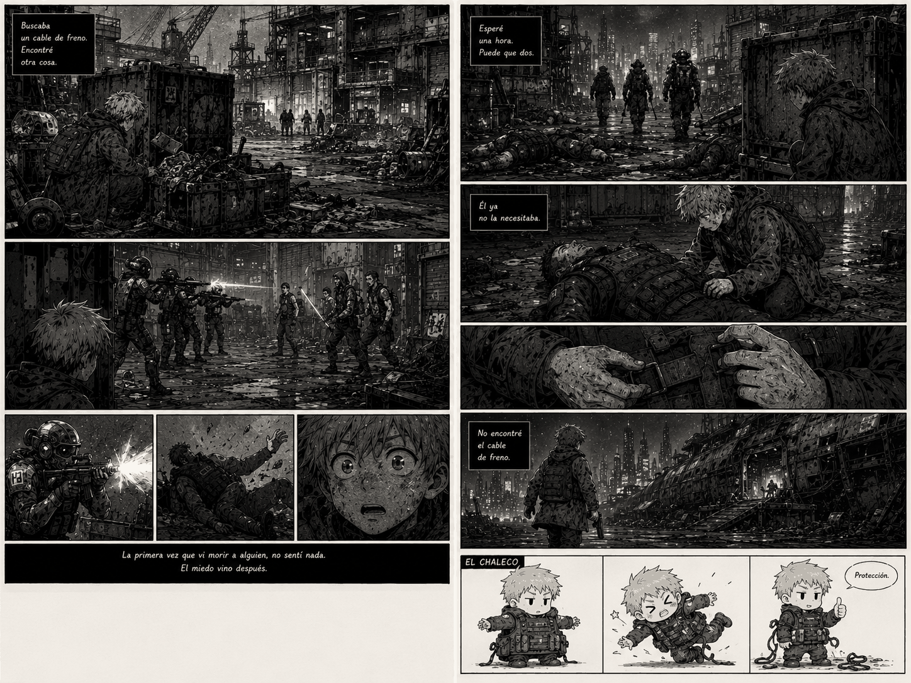
CAPÍTULO 3 — MECÁNICAS DEL SISTEMA
"En algún momento los años de amistad y trabajo en equipo dieron su fruto."
— Crónica 2014
PARTE III — MECÁNICAS DEL SISTEMA
Sistema de Tiradas — d100
Todas las acciones con resultado incierto se resuelven con d100: dos dados de diez caras, uno para decenas y otro para unidades. El objetivo es sacar igual o menos que tu habilidad.
Los éxitos miden no solo si la acción tiene éxito, sino cuánto:
FÓRMULA DE ÉXITOS
Éxitos = (Habilidad − Tirada) ÷ 10, redondeado arriba
Ejemplo: habilidad 50, tirada 30 → (50−30)÷10 = 2 éxitos
Ejemplo: habilidad 50, tirada 44 → (50−44)÷10 = 0,6 → 1 éxito
Tirada igual a la habilidad: si sacas exactamente tu habilidad, la fórmula da 0 — pero cualquier tirada ≤ habilidad da como mínimo 1 éxito. El 0 no existe en el lado del éxito: o fallas o consigues algo.
Categorías de resultado
| Resultado | Condición | Éxitos | Mejora habilidad |
|---|---|---|---|
| 00 | Crítico máximo | (Hab÷10) redondeado arriba + 3 | +3 |
| 01 | Crítico | ((Hab−1)÷10) redondeado arriba + 2 | +2 |
| 02 | Crítico | ((Hab−2)÷10) redondeado arriba + 1 | +1 |
| ≤ mitad habilidad | Éxito extraordinario | (Hab−Tirada)÷10 redondeado arriba | — |
| ≤ habilidad | Éxito normal | (Hab−Tirada)÷10 redondeado arriba | — |
| > habilidad | Fallo | Resultado negativo | — |
| 97 | Pifia | Fallo −1 éxito adicional | +1 |
| 98 | Pifia grave | Fallo −2 éxitos adicionales | +2 |
| 99 | Pifia crítica | Fallo −3 éxitos adicionales | +3 |
¿Por qué las pifias suben la habilidad?
Las pifias son errores dolorosos pero instructivos. Cuando algo sale terriblemente mal, el personaje entiende de forma visceral por qué — y esa lección se graba en la memoria muscular de una forma que el éxito nunca logra. El precio es alto, la humillación es real, pero la lección es imborrable. En treinta años de juego, nadie ha olvidado la pifia que le voló la mano propia.
EL ÉXITO EXTRAORDINARIO
Cuando la tirada es igual o menor que la mitad de la habilidad, algo ha salido especialmente bien. No cambia el cálculo de éxitos, pero es una señal para el DJ: añade un efecto narrativo adicional.
LOS CRÍTICOS SIEMPRE SON ESPECIALES
Un crítico no es solo un éxito con más puntos. Es un efecto fuera de lo normal. El 00 en combate es impacto en cabeza automático, independientemente del dado de unidades.
Ejemplos de tiradas
| Situación | Habilidad | Tirada | Resultado |
|---|---|---|---|
| Primeros auxilios | 50 | 30 | Éxito normal. (50−30)÷10 = 2 éxitos. |
| Primeros auxilios | 50 | 24 | Éxito extraordinario (≤25). 3 éxitos. DJ añade algo extra. |
| Primeros auxilios | 50 | 02 | Crítico. 5+1 = 6 éxitos. Habilidad +1. |
| Primeros auxilios | 50 | 00 | Crítico máximo. 5+3 = 8 éxitos. Habilidad +3. |
| Primeros auxilios | 50 | 70 | Fallo. −2 éxitos. |
| Primeros auxilios | 50 | 99 | Pifia crítica. Fallo −3 éxitos adicionales. Habilidad +3. |
Iniciativa
La iniciativa determina el orden de actuación en situaciones de tensión. No es solo quién actúa primero — es quién puede actuar dos veces.
Cada personaje lanza 2d10 (leídos como d100) y suma su habilidad de Iniciativa.
Cómo leer los 2d10: usa dos dados de distinto color. Uno es las decenas, el otro las unidades — igual que cualquier tirada de habilidad. El rango real es 11 (1+1) a 100 (10+10, leído como 00). No hay forma de sacar 01-10 en Iniciativa sin bonificadores negativos. El resultado puede superar 100 fácilmente con una buena Iniciativa.
FÓRMULA
Resultado = 2d10 + habilidad Iniciativa
Orden de actuación — dos fases:
- Fase 1: actúan todos los que superaron 100, de mayor a menor.
- Fase 2: se restan 100 a esos resultados (residuales). Actúa primero quien no llegó a 100 en su tirada, luego los residuales de mayor a menor.
EJEMPLO
A=120 / B=105 / C=95.
Fase 1: A actúa (120), B actúa (105). Residuales: A→20, B→5.
Fase 2: C actúa (95), A actúa (20), B actúa (5).
A ha actuado dos veces en el mismo turno.
Si nadie supera 100, no hay Fase 1: todos actúan una sola vez en Fase 2, de mayor a menor. Los residuales negativos no existen — solo quien supera 100 tiene residual, y siempre es positivo.
Cuándo se tira y cuándo no
Solo se tira cuando el fallo tiene consecuencias reales y el resultado es genuinamente incierto.
| Tipo de tarea | No se tira si la habilidad efectiva es... |
|---|---|
| Sencilla | ≥ 25 |
| Media | ≥ 50 |
| Compleja | ≥ 75 |
La habilidad efectiva puede ser combinada. Un personaje con Social 35 + Empatía 50 tiene habilidad efectiva 85 en situaciones que combinen ambas — tareas sencillas y medias son automáticas.
REGLA DEL DJ
Si ya sabes cómo va a salir, no tires. Los dados son para la incertidumbre, no para el trámite.
Modificadores
A la habilidad — cambian si el personaje tiene éxito o no:
| Situación | Modificador |
|---|---|
| Ventaja situacional (buena posición, tiempo, información) | +10 / +20 máx. |
| Desventaja situacional (prisas, condiciones adversas) | −10 / −20 máx. |
A los éxitos — cambian la calidad del resultado, no si ocurre:
| Fuente | Modificador |
|---|---|
| Equipo superior, arma inteligente | +1 o +2 éxitos |
| Equipo defectuoso, arma dañada | −1 o −2 éxitos |
Las circunstancias deciden si llegas al objetivo. El equipo decide qué tan bien lo haces cuando llegas.
Tiradas enfrentadas
Cuando dos personajes se oponen directamente — uno miente, otro desconfía; uno persigue, otro huye — ambos tiran contra su propia habilidad y se comparan los éxitos.
Gana quien más éxitos saque. Los éxitos negativos también cuentan.
Empate: ventaja al defensor. Sin defensor claro, ventaja a quien actúa primero en iniciativa.
EJEMPLO
A tiene Engañar 55, saca 40 → 2 éxitos. B tiene Perspicacia 45, saca 30 → 2 éxitos. Empate — ventaja al defensor. B detecta algo raro aunque no sabe qué.
Tiradas colaborativas
Cuando varios personajes trabajan juntos, todos tiran. Los éxitos se suman. Los fallos también.
Colaborar mal es peor que no colaborar.
EJEMPLO
A: 3 éxitos / B: 1 éxito / C: −1. Total: 3 éxitos. Sin C habrían sido 4.
Antes de colaborar, vale la pena preguntarse si el ayudante sabe lo que hace.
Progresión de habilidades
Las habilidades no tienen nivel — tienen historia. No hay techo máximo.
Umbrales de especialidad: a medida que una habilidad sube, desbloquea versiones superiores con nombres, efectos y funcionalidades distintas:
| Rango | Efecto |
|---|---|
| 0–24 | Habilidad general. Tiras por rama si no tienes casilla. |
| 25–49 | Especialidad L1 — nombre/efecto específico. |
| 50–74 | Especialidad L2 — nombre/efecto específico. |
| 75–99 | Especialidad L3 — nombre/efecto específico. |
| 100+ | Maestría/Legendaria — efecto raro o narrativo. |
Ejemplos por habilidad: Distancia desbloquea Desenfundado Rápido @ 25, Apuntar @ 50, Tiro Certero @ 75.
Tabla completa de especialidades
Académicas — (I+V)/2
| Habilidad | L1 (25) | L2 (50) | L3 (75) |
|---|---|---|---|
| Ciencias | Especialista — elige campo; +10% | Teórico — predice resultados sin experimentar | Autoridad — contactos académicos entre teselas |
| Biotecnología | Recombinador — modifica organismos simples | Genetista — modificaciones genéticas complejas | Arquitecto Genético — crea organismos nuevos |
| Buscar info | Archivista — tiempo de búsqueda a la mitad | Analista — detecta patrones en datos dispersos | Red de Fuentes — info antes de ser pública |
| Programación | Coder — software funcional bajo presión | Hacker — penetra seguridad digital | Arquitecto — diseña IAs básicas y redes |
| Diagnóstico | Ojo Clínico — síntomas comunes sin equipo | Diagnosticador — enfermedades raras y complejas | Patólogo — diagnostica a distancia |
| Investigación | Metódico — organiza investigaciones formales | Deductivo — infiere hechos de evidencia circunstancial | Perfilador — perfiles psicológicos completos |
| Supervivencia | Rastreador — rastros, agua y refugio | Nómada — sobrevive en cualquier bioma | Guía de Tesela — lee señales de distorsión ambiental |
| Vigilar/Rastrear | Centinela — vigila sin ser detectado horas | Perseguidor — sigue objetivos en entorno urbano | Fantasma Urbano — invisible en vigilancia |
Tecnológica — (H+P)/2
| Habilidad | L1 (25) | L2 (50) | L3 (75) |
|---|---|---|---|
| Ciber-tecnología | Instalador — implantes menores sin complicaciones | Cibercirujano — implantes mayores, piezas incompatibles | Artesano de Carne — implantes a medida |
| Electrónica | Reparador — repara con piezas básicas | Modificador — altera función original | Ingeniero — diseña y construye desde cero |
| Mecánica | Tuercas — repara motores bajo presión | Ingeniero Mecánico — modificaciones estructurales | Constructor — vehículos y maquinaria desde cero |
| Seguridad | Contramedidas — sortea sistemas comunes | Arquitecto — diseña sistemas de protección | Espectro — ningún sistema electrónico lo detecta |
| Manos Ágiles | Dedos Ligeros — roba sin ser detectado | Cerrajero — abre cualquier cerradura mecánica | Manos de Cirujano — precisión extrema |
| Primeros Auxilios | Paramédico — estabiliza heridas graves en campo | Medicina — cirugía menor y tratamiento | Cirujano — cirugía mayor en campo |
| Armería | Armero — repara con herramientas básicas | Modificador — mejora armas existentes | Artesano — construye armas desde cero |
Atlética — (A+F)/2
| Habilidad | L1 (25) | L2 (50) | L3 (75) |
|---|---|---|---|
| Acrobacias | Ágil — cae de 3m sin daño | Acróbata — superficies imposibles | Parkour — nunca queda atrapado |
| Conducir | Piloto — persecuciones a alta velocidad | As del Volante — drift, evasivas instintivas | Piloto de Combate — pelea y conduce sin penalización |
| Resistir | Duro — 1 ronda extra antes de penalizar | Inquebrantable — +20% vs drogas y venenos | Superviviente — funciona con heridas incapacitantes |
| Proezas | Bruto — fuerza bruta para puertas y cerraduras | Titán — carga el doble, nada con armadura | Demoledor — rompe coberturas, derriba muros |
| Sigilo | Sigiloso — sin ruido en interiores | Sombra — invisible en penumbra, +20% | Infiltrador — pasa guardias, cámaras y perros |
Social — (Ca+P)/2
| Habilidad | L1 (25) | L2 (50) | L3 (75) |
|---|---|---|---|
| Autocontrol | Sereno — resiste intimidación sin tirada | Imperturbable — resiste tortura psicológica | Muro — sociales agresivas contra él −20% |
| Bajos Fondos | Conectado — contactos en el hampa local | Superviviente de Calle — reglas no escritas | Rey del Hampa — mueve hilos a nivel de tesela |
| Empatía | Perceptivo — detecta mentiras simples auto | Lector — intenciones con una mirada | Profiler — perfiles psicológicos en una conversación |
| Liderazgo | Intimidar — fuerza obediencia por presión | Comandante — +5% al grupo en combate | Caudillo — inspira lealtad genuina |
| Persuasión | Intimidar — fuerza obediencia por presión | Negociador — −20% en precios de compra | Orador — convence multitudes |
| Seducción | Encantador — rapport rápido con desconocidos | Irresistible — manipula vía atracción | Femme/Homme Fatal — relaciones como inteligencia |
Combate
| Habilidad | L1 (25) | L2 (50) | L3 (75) |
|---|---|---|---|
| Iniciativa | Reflejos — +1 al orden | Primer Movimiento — primero en ronda 1 | Relámpago — divide acción en dos turnos |
| Alerta | Sexto Sentido — inmune a emboscadas simples | Radar — detecta ocultos a 10m | Precognitivo — anticipa francotiradores |
| Esquivar | Escurridizo — esquiva reactiva sin declarar | Danza — esquiva sin penalizar su ataque | Intocable — esquiva auto 1/asalto |
| Distancia | Desenfundado Rápido — −1 asalto desenfundar | Apuntar — elige localización después | Tiro Certero — daño sube un nivel |
| Sin Armas | Golpe Preciso — elige localización | Bloqueo — para CC con manos (−1 éxito) | Artista Marcial — acción extra CC/asalto |
| Arma CC | Parada — defensa reactiva con arma | Riposte — contraataque tras parada | Maestro de Armas — +1 éxito auto en CC |
Maestría (100+): efecto narrativo — el DJ decide. Muy poco común. Ver
REF_Especialidades_Completaspara nombres y detalles.
Por uso: críticos y pifias en tiradas suben la habilidad usada según la tabla de resultados (+1/+2/+3).
Enseñanza directa (solo hasta habilidad 50)
Por encima de 50 nadie puede enseñarte — dependes de tu propia experiencia.
Un maestro puede transmitir hasta el 50% de lo que él sabe en esa habilidad. Duración: una semana completa, o un mes si el tiempo es parcial.
Mecánica:
-
El maestro tira su habilidad.
- Éxito → puede enseñar.
- Pifia → no enseña, pero sube él según reglas normales. -
El alumno tira por encima de su habilidad (necesita "fallar" — ahí está el margen).
Contra qué tira el alumno: tira d100 contra su habilidad actual. Necesita superar ese valor (fallar). Si su habilidad es 30, necesita sacar 31 o más. Si saca 75 (falla), hay margen de aprendizaje — el maestro puede trabajar ahí. Si saca 25 (éxito), ya lo sabe: no hay nada que enseñar en ese nivel.
- Ambas condiciones cumplidas → +5% a la habilidad.
- Alumno crítico → no aprende el +5, sube según reglas normales.
- Alumno pifia → aprende los +5 más lo que sube por la pifia.
Entrenamiento individual
1 hora diaria todos los días a una actividad concreta.
- Resultado: +5 como bonificador al atributo o habilidad elegida.
- Para aplicarlo: 3 meses de práctica continuada.
- Para perderlo: 1 mes sin práctica.
¿Es permanente? No. Es un bonificador activo mientras mantengas la práctica — como el músculo que se pierde si no entrenas. Se registra en la ficha en la columna Mod (no en Bas ni Apr). Si lo mantienes durante años, el DJ puede decidir convertirlo en mejora permanente narrativamente, pero la regla base es: entrenas → tienes el +5; dejas de entrenar un mes → lo pierdes.
Es bonificador, no mejora permanente. Registrar en la ficha junto a objetos, implantes y otros modificadores.
Entrenamiento colectivo
3 horas/día durante una semana (o 1 hora/día durante un mes).
| Resultado de la tirada | Efecto |
|---|---|
| Fallo | +1 a la habilidad (más +1 a +3 adicional si fue pifia) |
| Éxito | No aprende el +1 (pero si fue crítico, sube +1 a +3 normalmente) |
El fallo indica que había margen de aprendizaje. El éxito confirma que ya lo sabías.
Reconocimiento
La suma de todas las habilidades de una categoría da el Reconocimiento del personaje en ese campo. No es un recurso — es una medida de lo que el personaje sabe hacer.
Categorías: Combate (6 habilidades) · Académico (8) · Tecnológico (7) · Atlético (5) · Social (6).
Usos:
Progresión profesional. Un personaje cumple los requisitos de su profesión cuando su Reconocimiento en las categorías relevantes alcanza los umbrales. Ejemplo para Combatiente (Combate +15% / Atlética +10% / Tecnológica +5%): Rango 1 cuando Rec. Combate ≥ 30, Rec. Atlético ≥ 20, Rec. Tecnológico ≥ 10. Un personaje puede cumplir requisitos de más de una profesión simultáneamente.
Valor de contratos. El Reconocimiento de Grupo (promedio de los individuales por categoría) determina el rango de los contratos que les llegan y la dificultad de los desafíos. Las categorías bajas del grupo también importan: si el Rec. Social es bajo, los contratos diplomáticos les evitan.
| Rec. Grupo más alto | Nivel | Pago orientativo |
|---|---|---|
| 0-50 | Novato | 100-500 PC |
| 51-100 | Profesional | 500-2.000 PC |
| 101-200 | Veterano | 2.000-10.000 PC |
| 201-300 | Élite | 10.000-50.000 PC |
| 301+ | Legendario | Trueque, favores, artefactos |
Equilibrio del grupo. De un vistazo, el Narrador ve si el grupo es versátil (todos entre 80-150), especializado (uno alto, resto bajo), o desequilibrado (tensión narrativa natural).
Se recalcula al final de cada sesión o cuando sube una habilidad.
Salud Mental
Base 100. Baja por defectos en creación y por eventos traumáticos durante el juego.
Daño por evento:
| Tipo de trauma | Daño |
|---|---|
| Leve | 1d6 |
| Moderado | 2d6 |
| Grave | 3d6 |
Umbrales:
Cada vez que la SM baja un 10% o más respecto al valor anterior, el personaje adquiere un defecto mental menor (tabla: ataque de pánico, catatónico temporal, fobia, filia...). Se cura con 10 éxitos acumulados en terapia o un mes de ingreso.
"Valor anterior" = el valor de SM al inicio de la sesión actual, o desde la última vez que se ganó un defecto mental (lo que sea más reciente). Si empezó la sesión con SM 80 y baja a 70, gana un defecto. Si luego baja a 65 en la misma sesión, no gana otro — solo ha bajado 5 puntos desde el último umbral. Si en la siguiente sesión empieza en 65 y baja a 55, gana otro.
| Umbral | Efecto |
|---|---|
| SM ≤ Voluntad | Crisis. No puede iniciar acciones complejas o arriesgadas: solo reacciona, huye o se bloquea, hasta que se estabilice (medikit, un compañero que lo saque, o el fin de la escena de estrés). |
| SM ≤ Voluntad ÷ 2 | Quiebra. Trastorno mayor. Casi injugable sin intervención (10 éxitos en terapia o un mes de ingreso). |
PARA EL DJ
La SM no se gasta con cada combate. Es el registro de lo que el personaje ha visto y no ha podido procesar. Un tiroteo no es un trauma; ver morir a alguien cercano sí puede serlo.
Humanidad
Base 100. Baja con implantes y modificaciones (costes en CAP04 y CAP04e seccion Implantes). Se recupera lentamente mediante actos de amor, altruismo y vivir en consonancia con los propios valores — a criterio del DJ. La Cristalización la resetea completamente.
Las habilidades sociales tienen como máximo el valor de Humanidad. Con Humanidad 50 no puedes expresar ninguna habilidad social por encima de 50.
Penalizadores a tiradas sociales:
| Humanidad | Penalizador |
|---|---|
| < 75 | −1 éxito |
| < 50 | −2 éxitos |
| < 25 | −3 éxitos |
Hay un punto en el que ya no sabes cómo mirar a los ojos a alguien sin calcular el ángulo de ataque.
La Deriva
Cada vez que un personaje cruza la urdimbre, su cuerpo acumula distorsión. Este contador se llama La Deriva. Empieza en 0. Es permanente e irreversible.
Cómo sube:
| Causa | Deriva acumulada |
|---|---|
| Cruce por portal de Maestro | 1d6 |
| Cruce por portal natural | 1d10+1 |
| Cruce por pulsera de salto | 1d10 |
| Cruce por tren TecnoStealer | 1d6 |
| Cruce por satélite artificial | 1d6 |
| Abrir un portal (Maestros) | 1d6 |
| Exposición a anomalías de distorsión | Variable (DJ) |
Cuándo se tira la Tabla A:
Al alcanzar cada múltiplo de 10 (10, 20, 30...) el personaje tira en la Tabla de Efectos de Distorsión. Los resultados son permanentes.
Umbrales:
| Deriva | Efecto |
|---|---|
| 10 | Primer cambio físico menor. Extrañeza al volver al origen. |
| 20 | Deriva cognitiva. Anomalías involuntarias alrededor del personaje. |
| 30 | Rasgos de otras teselas visibles. Malestar severo en la tesela natal. |
| 40+ | Punto de no retorno. Presencia desestabilizadora. |
| ??? | Umbral final — se convierte en Demonio de la Distorsión. |
PARA EL DJ
La Deriva no es un castigo. Es la historia del personaje escrita en su cuerpo. Cada mutación tiene un origen concreto. Vale la pena llevar ese registro.
(Tabla A completa y métodos de purga → CAP04. Métodos de viaje y costes en Deriva → CAP05.)
Nivel Tecnológico (NT)
El NT mide qué puede fabricar, entender y usar de forma natural una civilización, tesela o individuo.
| NT | Referencia |
|---|---|
| 1 | Piedras y palos. Compartido con algunas aves y mamíferos. |
| 2 | Herramientas básicas, fuego controlado. |
| 3 | Metalurgia, agricultura, primeras ciudades. |
| 4 | Industria, mecánica, primeras máquinas. |
| 5 | Siglo XXI terrestre. Electrónica, armas de fuego modernas. |
| 6 | Estándar del mosaico. Implantes comunes, viaje interdimensional accesible. |
| 7 | Avanzado. Poco frecuente incluso en el mosaico. |
| 8 | Pseudo-Arkanitas. Solo sus ingenieros entienden lo que fabrican. |
| 9 | Los Antiguos. Parece magia incluso para NT 8. |
| 10 | Fuera de escala. Incomprensible para cualquier ser conocido. |
Regla de percepción: diferencia de 2 NT o más → parece magia al observador.
Mérito Visionario: actúa como NT+1. Vivir en entorno de NT superior sube el propio +1 cada 5 años. Techo: decenas de Inteligencia (INT 45 → NT máx. 4 / INT 70 → NT máx. 7).
Adrian SeawolfEl combate real dura segundos. La planificación antes del combate dura horas. Los mejores Errantes que conozco son los que no necesitan disparar primero.
Combate
El combate en La Senda de los Errantes es rápido y con consecuencias reales. Un solo disparo bien colocado puede cambiar el resultado de un enfrentamiento.
Un asalto dura aproximadamente 6 segundos. En ese tiempo cada personaje puede realizar una acción principal (atacar, usar habilidad, moverse a distancia) y una acción menor (sacar un objeto, comunicarse, cambiar de arma).
Movimiento
Movimiento base: 15 metros por asalto.
| Modificador racial | Movimiento |
|---|---|
| Lento | 10 metros |
| Estándar | 15 metros |
| Grande | 18 metros |
Correr (acción completa, sin atacar): ×2 del movimiento base.
Estructura de un ataque
El atacante tira contra su propia habilidad de arma. No hay tirada de defensa pasiva — el defensor solo opone su armadura salvo que declare defensa activa. Si el ataque tiene éxito, impacta.
El dado de unidades del mismo lanzamiento determina la localización del impacto. La localización es independiente de si el ataque ha sido crítico: un 10, 20, 30… impacta en la cabeza, pero solo es crítico si la tirada es 00, 01 o 02 (ver tabla de resultados). El 00 es el único caso en que coinciden ambas cosas: crítico y localización en cabeza.
Daño = daño base del arma × éxitos netos (después de restar la armadura).
Ejemplo completo: arma con daño base 5. Atacante saca 3 éxitos. Defensor lleva armadura tipo 1 (resta 1 éxito). Éxitos netos = 3 − 1 = 2. Daño final = 5 × 2 = 10 puntos. Es multiplicación, no suma.
Localización del impacto
| Unidades | Localización |
|---|---|
| 0 (del 00) | Cabeza — impacto letal (crítico solo si la tirada es 00) |
| 9 | Ojos |
| 8 | Pecho |
| 7 | Oídos |
| 6 | Lengua / mandíbula |
| 5 | Espalda |
| 4 | Brazo derecho |
| 3 | Brazo izquierdo |
| 2 | Pierna derecha |
| 1 | Pierna izquierda |
Heridas graves y desmembramiento
Este es un sistema letal: un impacto bien colocado incapacita o mata. Pero un golpe brutal a una extremidad no siempre es mortal — en el combate real, lo habitual es perder el miembro, no la vida.
Disparador: cuando un impacto inflige más daño del que le quedan PV a una zona (la "desborda"):
- Cabeza o torso (localización 0, 5-9): el personaje muere. Estas zonas no tienen red.
- Extremidad (brazo o pierna, localización 1-4): el exceso de daño NO se traslada al resto del cuerpo. El golpe que podría haber partido al personaje en dos solo se lleva el miembro. Tira 1d6 en la tabla de desmembramiento. El personaje sigue en pie.
| 1d6 | Resultado |
|---|---|
| 1-2 | Inutilizado. Destrozado pero unido. Inservible hasta cirugía o prótesis. |
| 3-4 | Amputación baja. Mano / antebrazo · pie / media pierna. |
| 5-6 | Amputación alta. Brazo entero · pierna entera. |
Sangrado: tras la herida, al inicio de cada asalto el personaje tira Constitución. Si falla, pierde un nivel de estado. Un medikit o un éxito en Primeros Auxilios estabiliza y detiene el sangrado.
NOTA
En droides, robots y miembros que son implantes, cada extremidad lleva sus propios PV siempre (no solo en regla avanzada). El desbordamiento se calcula sobre esos PV.
Niveles de herida por zona
Según cuántos PV ha perdido una zona, la herida cae en un nivel:
| Nivel | Qué representa | Efecto |
|---|---|---|
| Leve | Roces, magulladuras, agotamiento | 0 (sin penalizador) |
| Medio | Heridas serias, luxaciones, roturas menores | −10 a acciones que usen esa zona |
| Grave | Daños graves, heridas abiertas, fracturas mayores | −20 a acciones que usen esa zona; riesgo vital si es zona crítica |
Los estados generales (Sano → Herido → Exhausto −20% → Inconsciente) van en paralelo. Al bajar de nivel, tira Resistencia: fallo = cae inconsciente.
Implantes y tatuajes en zonas dañadas
Zona en Grave (sin desbordar):
- Implantes: inutilizados hasta reparación. No funcionan, pero no se pierden.
- Tatuajes rúnicos: pierden efecto hasta que la zona sane a Medio o mejor.
Zona desbordada — según resultado del 1d6:
| Resultado | Implantes | Tatuajes |
|---|---|---|
| 1-2 — Inutilizado | Dañados pero recuperables con cirugía | Intactos (zona presente) |
| 3-4 — Amputación baja | Los del segmento amputado = perdidos | Los del segmento = perdidos |
| 5-6 — Amputación alta | Todos los de la extremidad = perdidos | Todos = perdidos |
Curación
Medikit (campo): nanotecnología de usar y tirar. Dos tipos:
| Tipo | Cura | PV | Precio |
|---|---|---|---|
| MKB (Básico) | Leves/intermedias (graves = mitad) | 15 PV | 200 PC |
| MKG (Graves) | Graves/intermedias (leves = mitad) | 15 PV | 500 PC |
| MD (Droide) | Solo droides/androides | 15 PV | 300 PC |
Uso manual: 1 asalto completo (a uno mismo o a otro). Automedikit: complemento de armadura (1 vol, 2.000 PC instalación), 4 slots configurables MKB/MKG, activación automática programable. Rack Médico en ficha: hasta 12 MKB + 8 MKG sueltos.
Primeros Auxilios: estabiliza y detiene sangrado. Medicina: tratamiento serio, cirugía, recuperación a largo plazo.
Recuperación natural:
| Nivel | Sin atención | Con atención médica |
|---|---|---|
| Leve | 1 hora / PV | 30 min / PV |
| Medio | 1 día / PV | 12 horas / PV |
| Grave | 1 semana / PV | 3–4 días / PV |
Heridas Graves sin atención pueden dejar secuelas permanentes (−10% habilidades afectadas, a criterio del DJ).
Recuperar un miembro perdido
Prótesis/cibermiembros: sustituyen la función. Amputación baja = 60% del precio; alta = 100%. Instalación en campo: tirada de Medicina, 2-4 horas, funcional pero sin bonificadores de Taller. Catálogo → CAP04e seccion Implantes.
Regeneración por distorsión: ciertos resultados de la Tabla A regeneran o reemplazan miembros. Ver Tabla de Efectos de Distorsión y Tabla D — Nueva Extremidad.
Necrochip: si el personaje muere y tiene Necrochip activo, la conciencia se transfiere a otro soporte. No cura: sustituye. Ver CAP04e seccion Necrochips.
Cristalización: el Genocaballero normaliza mutaciones e integra implantes como rasgos naturales. Rarísimo.
Tabla D — Nueva Extremidad (resultado 81-85 Tabla A)
Cuando la distorsión reconfigura el cuerpo añadiendo una extremidad. No es implante — es carne y tejido distorsionado.
Paso 1 — ¿Funcional? Tira 1d6: 1-4 = funcional, 5-6 = no funcional.
Paso 2A — Funcional (1d10):
| D10 | Tipo | Efecto |
|---|---|---|
| 1 | Tentáculo | Prensil, 2m alcance. FUE = F÷2 |
| 2 | Garra | Daño 4, Pen 2. Sin manipulación fina |
| 3 | Brazo adicional | Usa armas pequeñas/medias. Acción extra −20 |
| 4 | Apéndice articulado | +10 escalar. Arma daño 3 |
| 5 | Aleta/ala rudimentaria | Planea (½ daño caída). +10 nadar |
| 6 | Tentáculo con ventosas | +20 escalar. Agarra y retiene |
| 7 | Cola prensil | Agarra objetos pequeños. +10 acrobacias |
| 8 | Pierna adicional | +10 resistir derribos. +5 movimiento |
| 9 | Apéndice sensorial | +15 Percepción en 1 sentido (1d4: vista/oído/olfato/vibración) |
| 10 | Híbrida | Tira dos veces, combina a la mitad |
Paso 2B — No funcional (1d6):
| D6 | Tipo | Efecto |
|---|---|---|
| 1 | Vestigial | Solo estética |
| 2 | Parásita | −5 PV máximos en zona cercana |
| 3 | Dolorosa | −5 a todas las tiradas hasta cirugía |
| 4 | Reactiva | Movimiento incontrolado; DJ decide cuándo interfiere |
| 5 | Tóxica | −3 a atléticas por irritación |
| 6 | Incomprensible | Sin función aparente. Semilla de trama para el DJ |
Localización (1d8): 1-2 espalda (alta/lumbar), 3-4 hombros (D/I), 5-6 costados (D/I), 7 base del cuello, 8 cadera.
Permanente. Eliminable con cirugía mayor o Cristalización. Humanidad −5.
Armadura — absorción de éxitos
| Tipo | Éxitos absorbidos | Ejemplo |
|---|---|---|
| Tipo 1 | −1 éxito | 2 éxitos → 1 neto → daño base ×1 |
| Tipo 2 | −2 éxitos | 2 éxitos → 0 → sin daño |
| Tipo 3 | −3 éxitos | Necesitas 4+ éxitos para causar daño |
REGLAS AVANZADAS DE ARMADURA
Cada tipo tiene resistencias y vulnerabilidades según el tipo de arma. Ver ANEXO Armaduras para la tabla completa.
Reglas de combate — situaciones específicas
Cobertura
La cobertura añade blindaje adicional al defensor. No penaliza la habilidad del atacante — simplemente hay más blindaje que absorber.
| Cobertura | Blindaje adicional |
|---|---|
| Parcial (esquina, columna) | +1 |
| Sólida (muro bajo, vehículo) | +2 |
| Total (parapeto completo) | +3 |
Detrás de un vehículo, incluso un mal tirador tiene opciones.
Combate cuerpo a cuerpo — posición activa
En CC el combatiente puede optar entre dos ventajas tácticas en lugar de atacar directamente:
- +10 a la habilidad de ataque en el siguiente turno (buscando el ángulo)
- +1 a su propio blindaje efectivo durante ese asalto (posición defensiva activa)
Solo se puede elegir una de las dos. No se acumula con la defensa activa dividida.
Apuntar
Requiere una acción completa sin moverse. Solo disponible con armas que tengan mira (mirilla, teleobjetivo, zoom).
Efecto: el atacante elige la localización del impacto en lugar de usar el dado de unidades.
Un francotirador paciente es más peligroso que diez soldados nerviosos.
Múltiples adversarios
Cuando un personaje se enfrenta a varios enemigos simultáneamente en cuerpo a cuerpo, sufre penalizadores acumulativos:
| Adversarios en CC | Penalizador a la habilidad |
|---|---|
| 1 | Sin penalizador |
| 2–3 | −10 |
| 4–5 | −20 |
| 6+ | −30 (o imposible a criterio del DJ) |
Estos penalizadores no se aplican a distancia — un francotirador no sufre por tener muchos objetivos, siempre que los ataque de uno en uno.
Arma sin fuerza mínima
Cada arma tiene una Fuerza mínima requerida. Por cada 5 puntos de FUE que falten para alcanzar ese mínimo, el arma sufre −1 a su daño base.
EJEMPLO
Espada de dos manos (FUE mínima 40). Personaje con FUE 30 → le faltan 10 puntos → −2 al daño base del arma.
Un personaje puede empuñar un arma que supere su fuerza mínima, pero lo hace de forma ineficiente. El arma no falla — simplemente hace menos daño.
Combate a dos armas
Para empuñar dos armas simultáneamente, el personaje necesita FUE igual o superior a 1,5 × la fuerza mínima del arma secundaria.
Mecánica: divide la habilidad de CC entre ambas armas como en los ataques múltiples (mínimo 25 por ataque). Cada arma tira por separado con su porcentaje asignado.
EJEMPLO
Personaje con CC 70 y dos dagas (FUE mínima 20 cada una). FUE necesaria: 30. Si la tiene, puede dividir: 40 con la derecha / 30 con la izquierda.
Daño sin armas
Los golpes sin armas hacen daño no letal por defecto — contusiones, aturdimiento, magulladuras.
Excepción: un personaje con la habilidad Artes Marciales puede convertir la mitad de ese daño en letal.
El daño no letal sana mucho más rápido que el letal y no deja secuelas permanentes salvo resultados de crítico.
Modificadores externos al combate
| Situación | Efecto |
|---|---|
| Niebla densa / humo | −10 o −20 a habilidad de ataque |
| Oscuridad total sin equipo | −30 a la habilidad o imposible |
| Objetivo en movimiento rápido | −10 a la habilidad |
| Posición ventajosa (elevación, flanqueo) | +10 a la habilidad |
(Cobertura tiene su propia sección arriba — añade blindaje, no modifica la habilidad.)
Defensa activa
División de habilidad en defensa
El personaje divide su habilidad de arma entre ataque y defensa. Los éxitos de defensa restan a los del ataque recibido. Si los éxitos de defensa igualan o superan los del ataque: sin daño.
Ejemplo: habilidad 60 → 40 ataque / 20 defensa. Tira ambas por separado.
Esquiva total (solo cuerpo a cuerpo)
El personaje dedica todo su turno a esquivar. Si tiene éxito, cancela todo el daño. No puede atacar ese turno.
REGLA DE ESQUIVA
Contra armas de fuego, solo se puede buscar cobertura o usar defensa activa dividida.
División de habilidad — múltiples ataques
- Mínimo 50 en habilidad para dividir.
- Cada ataque requiere mínimo 25 asignados.
EJEMPLO
CC 80 → dos ataques: 50 y 30. Tira cada uno por separado con su valor.
Cadencia de fuego
| Modo | Balas | Efecto |
|---|---|---|
| Tiro a tiro | 1 | Sin modificador. Máxima precisión. |
| Ráfaga | 3 | +1 éxito adicional. |
| Cargador | 9 equiv. | +2 éxitos adicionales. |
Disparo a múltiples objetivos
- Objetivos a menos de 3m entre sí: sin penalización adicional.
- Dividir en ráfaga: +10 a habilidad por disparo individual.
- Dividir en cargador: +20 a habilidad por disparo individual.
¿Por qué sube la habilidad en lugar de bajar? Más balas en el aire compensan la falta de puntería: la probabilidad de que alguna acierte aumenta aunque ningún disparo individual sea preciso. El precio no es de habilidad — es de munición. Vaciar una ráfaga o un cargador sobre un objetivo dispersa el impacto pero lo garantiza. Es la diferencia entre apuntar y saturar.
- Por cada 3m adicionales de separación entre objetivos: −1 éxito en ese disparo.
EJEMPLO
Disparo 60, ráfaga, 2 objetivos a 7m entre sí. Habilidad efectiva 70 para cada uno. Separación extra: 4m → −2 éxitos en el segundo disparo.
Pifias en combate
| Pifia | Armas de fuego | Cuerpo a cuerpo |
|---|---|---|
| 97 | Se cae o encasquilla. | Mal golpe — el arma se desplaza. |
| 98 | Encasquillamiento grave. Requiere acción. | Ventaja clara para el rival. |
| 99 | Arma inutilizada este combate. | Pérdida total de control. |
EL 99 NO SIEMPRE ROMPE EL ARMA
El DJ decide según estos criterios:
- Arma de fuego: encasquillamiento irreparable en combate. Si el personaje tiene Armería ≥ 50, puede intentar repararla (1 acción completa, tirada). Con Armería < 50, inutilizada hasta taller.
- Arma CC de calidad estándar: rotura estructural. Inutilizada permanentemente salvo reparación en taller (requiere componentes básicos + tirada Armería).
- Arma CC de material raro o rúnica: no se rompe. En su lugar, el personaje pierde el control completamente — el DJ narra la consecuencia (golpe propio, caída, arma lanzada).
El 99 siempre tiene consecuencias. La diferencia es si el arma sobrevive o no.
Ejemplo completo de combate
Dos Errantes contra un Abrazado. Un asalto completo, todos los pasos.
Personajes:
- Kova — Distancia 55%, pistola (daño 4), sin armadura, Iniciativa 35, PV 16/zona
- Reyes — CC 60%, cuchillo (daño 3), armadura tipo 1, Iniciativa 30, PV 16/zona
- Abrazado — CC 65%, mordisco (daño 4), armadura tipo 1 (Bld 2), Iniciativa 40, PV 16/zona
Iniciativa: Kova 2d10=47 +35 = 82. Reyes 2d10=63 +30 = 93. Abrazado 2d10=85 +40 = 125.
Fase 1: Abrazado (125). Residual: 25. Fase 2: Reyes (93) → Kova (82) → Abrazado residual (25).
F1 — Abrazado → Kova: tira CC 65%, saca 42 → 3 éxitos. Unidades: 2 → pierna derecha. Sin armadura → 3 netos. Daño: 4×3 = 12 PV. Kova queda con 4 PV en pierna → Herida. Sangrado activo.
F2 — Reyes → Abrazado (CC): tira 60%, saca 58 → 1 éxito. Unidades: 8 → pecho. Armadura tipo 1 absorbe 1 éxito → 0 netos. Sin daño.
F2 — Kova → Abrazado (disparo, Herida −20%): Distancia efectiva 35%, saca 28 → 1 éxito. Unidades: 6 → cara. Armadura tipo 1 absorbe 1 → 0 netos. Sin daño.
F2 residual — Abrazado → Reyes: tira 65%, saca 71 → fallo. Sin daño.
Fin del asalto: el Abrazado no ha sufrido daño. Su armadura tipo 1 bloqueó dos ataques que solo consiguieron 1 éxito cada uno. Con 2 éxitos netos, cualquiera de esos ataques habría hecho 6-8 puntos de daño. La diferencia entre 1 y 2 éxitos es todo el sistema.
GLOSARIO RÁPIDO
| Término | Qué significa |
|---|---|
| DJ / Director de Juego | Narra la historia, controla el mundo y los PNJs. |
| PJ / Personaje Jugador | El personaje que controla cada jugador. |
| PNJ / Personaje No Jugador | Cualquier personaje controlado por el DJ. |
| d100 | Dos dados de 10 caras: decenas + unidades. |
| Tirada | Lanzar el d100 y comparar con una habilidad. Por debajo = éxito. |
| Habilidad | Porcentaje que indica cuánto domina el personaje algo. |
| Éxitos | (Habilidad − Tirada) ÷ 10, redondeado arriba. |
| Éxito extraordinario | Tirada ≤ mitad de habilidad. El DJ añade algo extra. |
| Crítico | 00, 01 o 02. Efecto especial + mejora de habilidad. |
| Pifia | 97, 98 o 99. Fallo grave + consecuencia + mejora de habilidad. |
| Daño base | Valor del arma × éxitos netos. |
| Éxitos netos | Éxitos del atacante menos absorción de armadura. |
| Localización | Parte del cuerpo impactada. La da el dado de unidades. |
| Cadencia | Modo de disparo: tiro a tiro / ráfaga / cargador. |
| Iniciativa | 2d10 + habilidad Iniciativa. Puede dar dos acciones en un turno. |
| Tirada enfrentada | Ambos tiran su habilidad. Gana quien más éxitos saque. |
| Tirada colaborativa | Todos tiran. Éxitos y fallos se suman. |
| Humanidad | 0–100. Baja con implantes. Limita habilidades sociales. |
| Salud Mental | 0–100. Baja con traumas. Umbrales en Voluntad y Humanidad. |
| La Deriva | Distorsión acumulada. Permanente. Múltiplos de 10 → Tabla A. |
| Tesela | Un plano de existencia completo. Un mundo. |
| Urdimbre | El espacio entre teselas. Distorsión pura. |
| Errante | Alguien que ha cruzado la urdimbre y sobrevivido. |
| NT | Nivel Tecnológico. Diferencia de 2+ = parece magia. |
| PC / Plasti-Créditos | Moneda estándar en mundos despertados. |
| Movimiento base | 15 metros por asalto (~6 segundos). |
| Cobertura | Blindaje adicional por posición. +1/+2/+3 según solidez. |
SI ALGO NO ESTÁ AQUÍ
El glosario completo está en Recursos Adicionales. Y si no está ahí tampoco: improvisa, apúntalo y decidid en grupo cómo funciona. Las mejores reglas nacen así.
"El multiverso no espera a que lo entiendas todo. Solo espera a que des el primer paso."
Actualizado: 26 mayo 2026 — Añadidas reglas de combate: movimiento, cobertura, CC activo, apuntar, múltiples adversarios, FUE mínima, dos armas, daño sin armas.
ANEXO CAP03 — TABLA COMPLETA DE BLINDAJES Y ARMADURAS
"Ver a una persona con blindajes ligeros es la cosa más normal del mundo."
Técnico callejero, barra de EP7 — "Blindaje tres en el torso suena bien hasta que te aciertan en la cabeza. Pregúntale a cualquier veterano: lo primero que se compra es el casco. Lo segundo, un seguro médico.
Cómo funcionan los blindajes
El nivel de blindaje de la armadura resta éxitos conseguidos en el impacto.
Ejemplo: 3 éxitos al impactar en el brazo de alguien con blindaje 2 → solo 1 éxito neto.
La capacidad perforante de un arma resta niveles de blindaje antes del cálculo.
Ejemplo: Vibrofilo (penetración 2) + 3 éxitos contra blindaje 2 → se ignora el blindaje → 3 éxitos netos.
Armadura natural nunca se acumula con armadura llevada. Se aplica siempre la superior.
Escudos de energía: otorgan −10 o −20 a la tirada de quien ataca. Solo funcionan contra armas a distancia.
Tabla de Blindajes Personales y Robot
| Tipo | Blindaje | Precio/zona | Vol/zona | Modificador | Precio completa | Servo (grados I-V, ver CAP04) | Vol servo |
|---|---|---|---|---|---|---|---|
| Sin blindaje | 0 | 0 | 0 | 0 | — | — | 0 |
| Ligera | 1 | ×100 PC | 1 | 0 | 900 PC | +10 | 10 |
| Ligera Avanzada | 2 | ×200 PC | 1.5 | 0 | 1.800 PC | +5 | 15 |
| Media | 3 | ×400 PC | 2 | −10 / −20 | 3.600 PC | 0 | 20 |
| Pesada | 4 | ×800 PC | 4 | −20 / −40 | 7.200 PC | −10 | 40 |
| Acorazada | 5 | ×1.500 PC | 6 | −25 / −50 | 14.000 PC | −15 | 60 |
| Ablativa (máx 30) | — | ×300 PC | 2 | −10 | 2.800 PC | — | 25 |
| Energía N1 | −10 al atacante | 20.000 PC | N×2 | — | N×20.000 PC | — | — |
| Energía N2 | −20 al atacante | — | N | — | — | — | — |
Modificador: penalizador a atléticas y combate. El primer valor es por llevar 1-2 piezas; el segundo por 3+ piezas o armadura completa.
Cómo se calcula el precio completo: cada armadura tiene 10 zonas contables (cabeza ×1, torso ×5, 4 extremidades ×1 cada una = 10). Precio sin descuento = precio/zona × 10. Al comprar el conjunto completo se aplica un descuento comercial del 10% — es la estrategia habitual de los proveedores: te regalan una pieza si te llevas todo. Ejemplo: ligera 100 PC/zona × 10 = 1.000 PC − 10% = 900 PC.
Batería de escudo energético: 1 batería = 5 asaltos. Precio batería: 500 PC. Volumen: 1. Cambio de batería: 1 acción completa. Al agotarse el escudo se apaga inmediatamente — sin degradación gradual.
Nivel tecnológico: para NT bajo (medieval, antiguo) el límite de armadura es el NT del mundo.
Tipos de armadura
Gabardina blindada: cubre todo el cuerpo salvo la cabeza. Discreta.
Armadura a piezas: el precio del torso equivale a 5 piezas. Llevar 3+ piezas de tipo medio o superior aplica el mismo penalizador que la armadura completa.
Servoasistida: reduce penalizadores. En ligeras da bonificaciones a atléticas y combate.
Ablativa: capa de material sacrificial que absorbe impactos destruyéndose. El "máx 30" es el total de puntos de daño que puede absorber antes de destruirse — no éxitos, sino daño final tras el cálculo. Cada impacto que recibe resta ese daño al contador. A 0: la capa se destruye y debe reemplazarse (no se puede reparar en campo). Mientras tiene carga, funciona como armadura normal de su tipo. Registrar el contador en la ficha.
Estanca: espacio, entornos inundados. Autonomía 8 horas.
Camuflaje N1/N2: +5 o +10 a Sigilo. Solo en ligeras y gabardina.
Penalización por rigidez
Toda armadura de blindaje 2+ incomoda el movimiento por su volumen, peso y rigidez estructural. El servo contrarresta parte de ese problema al amplificar la fuerza y sincronizar el movimiento — pero a medida que la armadura se hace más pesada, los negativos superan lo que el servo puede compensar.
Sin servoasistencia: se aplica el penalizador completo de la columna Modificador (el segundo valor para 3+ piezas). Es el peor caso — la armadura limita tanto que algunos movimientos son directamente imposibles.
Con servoasistencia: el penalizador se reduce según el grado del servo. Las ligeras con servo dan bonificación neta. Las medias quedan en 0. Las pesadas y acorazadas siguen penalizando, pero mucho menos que sin servo.
La columna "Servo" de la tabla muestra el modificador resultante con servo activo. Sin servo, usa siempre el valor de la columna "Modificador" sin reducción.
Excepciones (con o sin servo):
- Proezas de fuerza (FUE): sin penalización. La armadura no impide el esfuerzo bruto.
- Habilidades de interconexión (Conducir, Pilotar con puente neuronal): sin penalización — la armadura se integra con el vehículo.
Qué penaliza: Atlética completa y Tecnológica aplicada (habilidades que requieren movimiento físico preciso: cirugía, demoliciones, manos ágiles). No penaliza habilidades puramente mentales ni sociales.
Armaduras Arcanitas (NT7-8)
Las Pseudo-Arkanitas fabrican armaduras con nanotecnologia desplegable. Se almacenan comprimidas en un torque (collar rigido tipo celta) y se despliegan sobre el cuerpo al activarse.
Tron: material de origen desconocido con propiedades únicas — absorbe y devuelve energía, con blindaje natural superior al metal convencional. La columna "Tron" indica el bonificador adicional al blindaje del torso que aporta el torque. No se acumula con armadura natural estándar.
| Rango | Blindaje | Servo | Tron (bono torso) | Portador |
|---|---|---|---|---|
| Acolita | 1-2 | No | — | Torque sencillo |
| Soldado | 1-2 | Grado I-II | +1 | Torque reforzado |
| Oficial | 2-3 | Grado II-III | +1 a +2 | Torque runico |
| Comandante | 3-4 | Grado III-IV | +2 | Torque bio-fusionado |
Se pueden inscribir runas como a cualquier armadura. Solo las Arcanitas y algun taller legendario pueden fabricar armadura desplegable. Repararla sin sus tecnicas es practicamente imposible.
Visor-sensor (version casco)
Visor integrado en casco con un maximo de dos ranuras. Cada ranura acepta un modulo:
Vision: aumentada/macro, penumbra, termica.
Escucha: amplificada con supresor de ruidos.
Sin puente neuronal: el visor da +10 como IA especialista que asiste.
Con puente neuronal (NT6+): acceso a la ranura de chip, funcionalidad completa e interconexion con armadura/vehiculo.
Armaduras de ejemplo
| Armadura | Tipo | Características |
|---|---|---|
| Armadura de cazador | Completa tipo 1 | Servoasistida + Camuflaje N2 |
| Armadura de explorador | Completa tipo 2 | Servoasistida + Camuflaje N2 + Estanca |
| Armadura de suboficial | Completa tipo 3 | Servoasistida + Estanca |
| --- |
Ejemplo completo — Cálculo de daño con armadura
Paso a paso: tirada de ataque, penetración, blindaje, daño final, localización.
Situación: Kova dispara a un mercenario con armadura media (blindaje 3) en el torso.
- Arma: pistola modificada, daño base 5, penetración 1
- Habilidad de Distancia de Kova: 55%
- Armadura del mercenario: media tipo 3 en torso
Paso 1 — Tirada de ataque:
Kova tira Distancia 55%. Saca 38 → éxito.
Éxitos = (55−38) ÷ 10 = 1,7 → 2 éxitos.
Paso 2 — Localización:
Dígito de unidades de la tirada: 8 → pecho (torso).
Paso 3 — Penetración:
El arma tiene penetración 1. El blindaje del torso es 3.
Blindaje efectivo = 3 − 1 = 2 (resta 2 éxitos).
Paso 4 — Éxitos netos:
2 éxitos del ataque − 2 de absorción = 0 éxitos netos.
Sin daño. La armadura media aguanta el impacto.
Variante: Kova saca 3 éxitos en vez de 2.
Paso 4 revisado:
3 éxitos − 2 absorción = 1 éxito neto.
Paso 5 — Daño:
Daño = daño base × éxitos netos = 5 × 1 = 5 puntos de daño en torso.
Variante con arma de mayor penetración: vibrofilo (daño 4, penetración 3).
Blindaje efectivo = 3 − 3 = 0 (la penetración cancela toda la armadura).
Con 2 éxitos: daño = 4 × 2 = 8 puntos. La armadura no ayuda en absoluto.
Lo que muestra este ejemplo: la diferencia entre penetración 1 y penetración 3 contra armadura 3 es la diferencia entre "sin daño" y "8 puntos". La elección de arma importa más que la habilidad cuando el enemigo va bien armado.
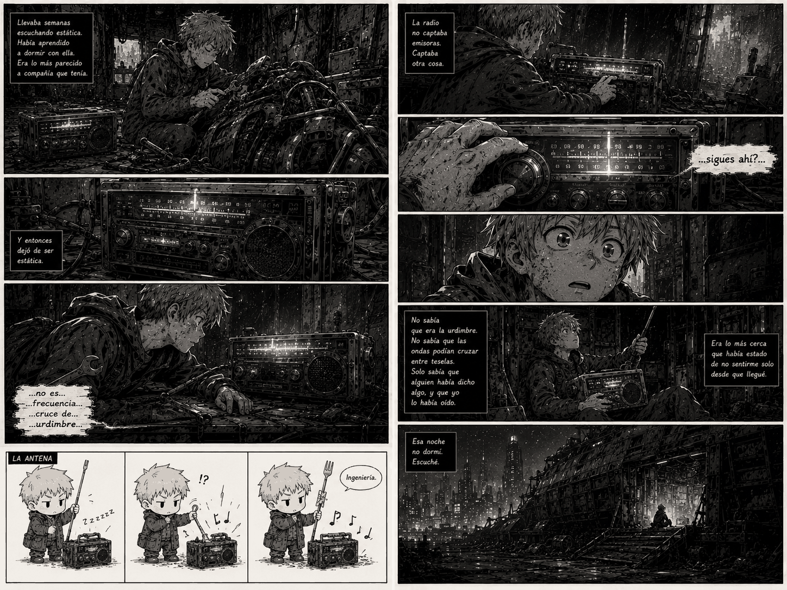
CAP04 — TECNOLOGÍA Y DISTORSIÓN
"No es que hayas atrapado la distorsión. Es que le has convencido de que se quede quieta un momento."
Tecnología y distorsión son dos lenguajes para describir lo mismo: alterar la realidad.
1. Implantes y Cibertecnología
| Tipo | Coste base | Funcionalidad |
|---|---|---|
| Protésico | 10.000 PC | Básica |
| Cibernético | 10.000 PC | Completa |
| Reemplazo (ADN propio) | 10.000 PC (×2 total) | Perfecta |
| Bioimplante | Variable | Variable (Hum/Alma a la mitad) |
| Modificación | Humanidad | Alma |
|---|---|---|
| Leve | −5 | −1 |
| Intensa | −20 | −5 |
| Bioimplante | Mitad | Mitad |
Selección: Ciberconexión +10% tec (3k/−5Hum) / Rack Chips 5chips/50%hab (1.5k/−5Hum) / Necrochip salvaguarda (1.5k/−20Hum/−5Alma) / Brazo Robótico +10F (10k) / Blindaje Titanio +10PV+2Bld (20k) / Propulsor Vuelo (25k) / Sensor Óptico +10P visión nocturna (15k) / Módulo Comunicación +10% tec (8k) / Nano-Reparador (18k)
Tecnología especial: Duplicado −10%CON (1M) / Replicante (1M base) / Hotpoint pliegue objetos (100k-1M) / Module (variable) / Vaina Desembarco (variable)
2. Necrochips
Ver CAP04e (La Carne y el Metal) para Necrochips, Rack de Chips y Sistema Humanidad-Alma.
3. Sistema Rúnico
Activación, coste y tatuajes → CAP04b
El sistema rúnico completo —coste de activación por habilidad, duración, capacidad por volumen, Sobrecarga, Tron y tatuajes— se detalla en CAP04b · Distorsión: Escuelas y Poderes: §4 (Tron y Sublimar) · §5 (runas, activación, Sobrecarga, tatuajes) · §6 (batería de runas). Esta sección no lo duplica para mantener una sola fuente de verdad.
Servo de armadura
Servo: I (+20/+20) / II (+10/+10) / III (0/0) / IV (−10/−10) / V (−20/−20)
Las habilidades físicas nunca superan el valor base antes de bonificadores.
4. Perlas de Distorsión
Ver CAP04b para Perlas de Distorsion.
5. Pulseras de Salto
Ver CAP05 para Pulseras de Salto.
6. Vehículos de Cruce
Ver CAP05b para vehiculos de cruce.
7. La Colmena Emergente
Ver CAP04b seccion La Colmena Emergente.
8. Cristalización y el Genocaballero
Ver CAP04b seccion Cristalizacion.
9. Taumaturgia y Maestros de Portales
Ver CAP04b seccion Taumaturgia.
10. Puntos de Alma
| Tipo | Puntos de Alma |
|---|---|
| Estándar | 8 |
| Iniciado | 10 |
| Demonio | 16 |
−1 punto por cada 2 zonas con implantes. −1 por cada 2 mutaciones de Deriva.
10 puntos de distorsión \= 1 punto de alma.
11. Jerarquía de Maestros de Portales
Ver CAP04b seccion Maestros de Portales.
12. Sublimar la Distorsión
Ver CAP04b y CAP04d para Sublimar la Distorsion y Tron.
13. Tabla Completa de Implantes
Ver CAP04e (La Carne y el Metal) para catalogo completo de implantes Ibis-Forge.
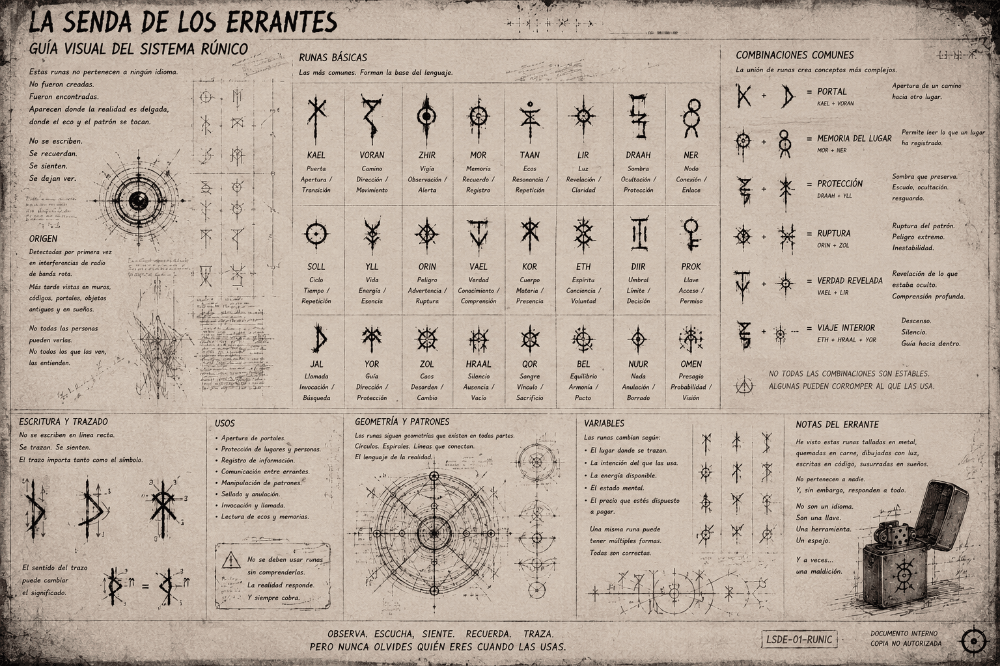
CAP04b — DISTORSIÓN: ESCUELAS Y PODERES
"Toda la magia en todas sus formas deriva de la distorsión. La diferencia está en cómo cada civilización aprendió a hablar con ella."
La distorsión no es un recurso. Es una fuerza con la que se negocia. Las escuelas son los idiomas que distintas culturas y tradiciones desarrollaron para esa negociación.
1. Fundamentos — Puntos de Alma y Distorsión
(Ver CAP04 para la tabla completa de Puntos de Alma)
- Personaje estándar: 8 Puntos de Alma
- Iniciado (cualquier escuela): 10 Puntos de Alma
- Demonio de la Distorsión: 16 Puntos de Alma
Nota para jugadores: en este capítulo se usa a veces el término cargas (1 Punto de Alma = 10 cargas). Solo necesitas saber tus Puntos de Alma; las cargas son la unidad interna de las reglas avanzadas.
El pago de la distorsión — la carga:
La unidad mínima de todo coste es la carga: 1 Punto de Distorsión (PD) = 10 cargas, y a efectos de pago 1 carga = 1 PV.
Todo coste de Hechicería y de los Maestros de la Distorsión puede pagarse por cualquiera de las dos vías, o combinándolas en el mismo efecto: con el cuerpo (PV, carga por carga) o con distorsión almacenada (perlas u otras fuentes). No hay vía noble y vía sucia: hay la que puedes permitirte en ese momento. Los tatuajes rúnicos son la única excepción — se activan siempre en PV (ver sección 5).
Tabla unificada de reducción de coste (los tramos son únicos para todas las disciplinas; el Camino de los Portales usa estos mismos tramos pero su unidad es el punto de alma — ver sección 4):
| Habilidad empleada | Coste base por nivel |
|---|---|
| 0–24 | 4 cargas |
| 25–49 | 3 cargas |
| 50–74 | 2 cargas |
| 75+ | 1 carga |
Coste final = coste base × nivel del efecto. Por encima de 75 no hay más reducción por habilidad: solo la Maestría Verdadera (sección 8) abarata más.
Relación distorsión / alma: 10 puntos de distorsión = 1 punto de alma (1 alma = 100 cargas).
2. Las Escuelas
Las habilidades de distorsión arrancan todas en 0. Con habilidad a 0 se puede intentar tirar con −20. Los no Iniciados no pueden tirar.
Quién es quién:
Iniciado = cualquiera que percibe y manipula la distorsión conscientemente. Es la condición de entrada — sin ella no hay tiradas.
Hechicero = Iniciado que sigue el camino de la Hechicería (los elementos).
Maestro de la Distorsión = Iniciado que sigue el camino de la manipulación directa; Maestro de Portales es su especialización más conocida.
Herrero/Tatuador Rúnico = Iniciado que sigue el camino de las Marcas Arcanas.
Los tres caminos son compatibles: un Iniciado puede desarrollar habilidades de varios — el límite es tiempo y maestros, no las reglas.
| Camino | Enfoque | Habilidades |
|---|---|---|
| Hechicería | Cinco elementos — fuego, tierra, agua, aire, distorsión | Proyección, Protección, Invocación |
| Maestros de la Distorsión | Manipulación directa de la distorsión | Identificación, Detección, Manipulación, Sublimar, Portales, Micro-saltos |
| Marcas Arcanas | Inscripción de distorsión en materia u organismos | Herrero Rúnico, Tatuador Rúnico, Detección |
3. Hechicería
"Un hechicero no inventa el fuego. Lo llama. Y el fuego, si le parece bien, acude."
— Maestro Rúnico, MadCity
3.1. Los Cinco Elementos
La Hechicería trabaja con los elementos como canalizadores de la distorsión. No los crea de la nada — los atrae, amplifica y dirige desde el entorno. Si el elemento no está presente, no puede invocarse.
| Español | Lengua del Mosaico | Equivalencia en distorsión |
|---|---|---|
| Fuego | Floss | Energía pura, calor, combustión, luz intensa |
| Agua | Fuss | Veneno, ácido, fluidos, corrosión |
| Tierra | Dross | Cinética, impacto, masa, gravedad |
| Aire | Velos | Atmósfera, vacío, presión, sonido |
| Distorsión | Cibus | Daño y protección del alma — especialmente efectivo contra Demonios |
REGLA FUNDAMENTAL
El elemento debe estar presente en el entorno. Sin fuego cercano no hay Floss. Sin humedad no hay Fuss. El Hechicero que entra en un entorno sin su elemento favorito está limitado.
Excepción: Cibus (Distorsión) siempre está presente en cualquier tesela — es la materia prima del mosaico.
2. Las Tres Habilidades
Proyección de Energía (Floss-Dross-Fuss-Velos-Cibus)
Atributo base: Habilidad
Canaliza el elemento elegido como ataque directo o como carga sobre un arma cuerpo a cuerpo.
Ataque a distancia:
| Nivel | Nombre | Daño | Alcance | Coste PV |
|---|---|---|---|---|
| 1 — Pequeño | Toque elemental | 3 | Corto (≤10m) | 1 PV letal |
| 2 — Mediano | Pulso elemental | 5 | Medio (≤30m) | 2 PV letales |
| 3 — Grande | Descarga elemental | 7 | Largo (≤100m) | 3 PV letales |
Cargar arma CC (dura 5 asaltos, no cancelable):
| Nivel | Daño adicional | Coste PV |
|---|---|---|
| 1 — Pequeño | +4 al daño base del arma | 1 PV letal |
| 2 — Mediano | +6 al daño base del arma | 2 PV letales |
| 3 — Grande | +8 al daño base del arma | 3 PV letales |
Efectos por elemento en Proyección:
| Elemento | Efecto especial |
|---|---|
| Floss (Fuego) | Puede incendiar objetos. Daño continuo 1 por asalto si no se apaga. |
| Fuss (Agua) | Ácido: reduce blindaje del objetivo en −1 por cada 2 éxitos. |
| Dross (Tierra) | Impacto físico: puede derribar al objetivo (tirada FUE enfrentada). |
| Velos (Aire) | Puede afectar a múltiples objetivos en línea recta (hasta 3 en Nivel 3). |
| Cibus (Distorsión) | Daño directo a Puntos de Alma. +2 daño adicional contra Demonios. Ignora blindaje físico. |
Un arma cargada con Cibus brilla con luz que no existe en el espectro visible. Los Demonios de la Distorsión la reconocen. No todos huyen — pero todos la notan.
Protección de Energía (Floss-Dross-Fuss-Velos-Cibus)
Atributo base: Percepción
Crea un escudo elemental que absorbe daño del tipo elegido. Solo protege contra el elemento con el que se activa — no es protección universal.
Coste: 4 puntos de distorsión por nivel (reducible por habilidad según tabla CAP04b).
| Nivel | Nombre | Protección |
|---|---|---|
| 1 — Pequeña | Velo elemental | Blindaje +1 contra ese elemento |
| 2 — Media | Escudo elemental | Blindaje +2 contra ese elemento |
| 3 — Grande | Barrera elemental | Blindaje +3 contra ese elemento |
Efectos por elemento en Protección:
| Elemento | Efecto especial |
|---|---|
| Floss (Fuego) | También protege contra luz intensa y deslumbramiento. |
| Fuss (Agua) | También protege contra venenos y ácidos ambientales. |
| Dross (Tierra) | También absorbe impactos físicos contundentes (caídas, explosiones). |
| Velos (Aire) | También permite respirar en entornos sin oxígeno durante la duración. |
| Cibus (Distorsión) | Protege los Puntos de Alma. Reduce la Deriva acumulada en ese asalto en −1. Efectivo contra ataques de Demonios. |
PROTECCIÓN CIBUS — USO ESPECIAL
Un Hechicero con Protección Cibus activa actúa como ancla de distorsión para su grupo. Los aliados adyacentes reciben −1 a la Deriva acumulada en ese asalto mientras la barrera esté activa.
Invocación de Energía (Floss-Dross-Fuss-Velos)
Atributo base: Inteligencia
Atrae y manipula el elemento desde el entorno. No crea el elemento — lo llama y lo controla. Cibus no puede invocarse con esta habilidad (la Distorsión no se "invoca", se canaliza directamente con Proyección y Protección).
Coste: 4 puntos de distorsión por nivel (reducible por habilidad).
| Nivel | Nombre | Cantidad | Ejemplos de uso |
|---|---|---|---|
| 1 — Pequeño | Llamada elemental | 1 kg / 1 litro | Encender una antorcha, mover una piedra, crear una corriente de aire |
| 2 — Mediano | Convocatoria elemental | 25–50 kg / litros | Crear una barrera de tierra, levantar un muro de agua, avivar un incendio |
| 3 — Grande | Dominio elemental | 100–1.000 kg / litros | Desviar un río, crear una tormenta local, provocar un derrumbe |
Usos en combate:
La Invocación por sí sola no es un ataque — es manipulación. Para atacar con el elemento invocado hay que combinarla con Proyección. Sin embargo, algunos usos de Invocación tienen efectos de combate indirectos:
| Elemento | Uso de combate indirecto |
|---|---|
| Floss (Fuego) | Crear una cortina de fuego que bloquea el paso o fuerza retirada. |
| Fuss (Agua) | Cubrir el suelo con ácido o líquido resbaladizo (−20 a Atletismo). |
| Dross (Tierra) | Levantar una barrera de tierra (blindaje de cobertura +2). |
| Velos (Aire) | Crear corriente que desplaza proyectiles pequeños (−10 a ataques a distancia contra el grupo). |
COMBINACIÓN PROYECCIÓN + INVOCACIÓN
Un Hechicero que usa ambas habilidades en el mismo asalto multiplica el efecto: invoca el elemento y lo proyecta en el mismo movimiento. Requiere dividir la habilidad entre ambas acciones como en los ataques múltiples (mínimo 25 en cada una).
3. El Quinto Elemento — Cibus en profundidad
La Distorsión como elemento es cualitativamente diferente a los otros cuatro. No existe en el entorno de la misma forma — no hay una "veta de Cibus" que extraer del suelo. Es la materia prima del mosaico mismo, presente en todas partes pero inaccesible sin sensibilidad específica.
Quién puede usarlo: solo Hechiceros con al menos 30% en Proyección o Protección de Energía y que sean Iniciados. Un Hechicero no Iniciado puede dominar los cuatro elementos físicos pero nunca accederá a Cibus.
Por qué es especial contra Demonios:
Los Demonios de la Distorsión están hechos de Cibus acumulada y corrompida. Un ataque de Floss les hace daño físico como a cualquier criatura. Un ataque de Cibus les afecta directamente en lo que son — no en su cuerpo, en su esencia. Es el equivalente a atacar a un ser de agua con agua hirviendo en lugar de con fuego.
Límite del elemento:
A diferencia de los otros cuatro, Cibus no puede invocarse en grandes cantidades — hacerlo significaría atraer distorsión masiva hacia el Hechicero, con el consiguiente aumento de Deriva. Por eso no tiene tabla de Invocación: solo Proyección y Protección.
4. Aprendizaje y especialización
Un Hechicero no domina todos los elementos por igual. La especialización es natural — la mayoría desarrolla afinidad con uno o dos elementos y trabaja con ellos toda su vida.
Mecánica de afinidad: cuando un Hechicero usa el mismo elemento durante 10 sesiones consecutivas, ese elemento se convierte en su elemento afinado. Con su elemento afinado: reduce el coste en PV en −1 (mínimo 1) y añade +1 éxito a las tiradas de ese elemento.
¿Puede cambiar el elemento afinado?
- Hasta grado 25: el elemento afinado es fijo. No puede cambiarse.
- Al alcanzar grado 50: el Hechicero elige una sola vez entre dos opciones:
- Cambiar de elemento afinado — abandona el anterior y comienza a desarrollar afinidad con uno nuevo. Pierde los bonificadores del anterior.
- Profundizar en el mismo — se convierte en especialista. Conserva todos los bonificadores y desbloquea el efecto exclusivo de especialista del elemento (ver tabla más abajo).
Esta elección es permanente y solo ocurre una vez.
Efectos exclusivos de especialista (grado 50+):
| Elemento | Efecto exclusivo |
|---|---|
| Floss (Fuego) | La Protección también absorbe daño físico por calor y luz intensa. Puede crear zonas de calor ambiental que infligen daño sin tirada (1 por asalto a quienes permanezcan en ella). |
| Fuss (Agua) | La Protección genera un aura ácida: cualquier enemigo que golpee al Hechicero en combate cuerpo a cuerpo recibe automáticamente 2 puntos de daño ácido. |
| Dross (Tierra) | Puede invertir la gravedad local sobre un objetivo (levitación forzada). El objetivo queda inmovilizado hasta que el Hechicero libere el efecto o falle una tirada de mantenimiento. |
| Velos (Aire) | Puede crear una burbuja de vacío de sonido (silencio absoluto en radio corto) o una burbuja de vacío de aire que asfixia a quienes permanezcan en ella. |
| Cibus (Distorsión) | Puede detectar Demonios y presencias de distorsión en un radio medio. La detección no requiere tirada si la presencia es activa — solo si está latente o enmascarada. Solo accesible a especialistas: los Hechiceros de Cibus no especializados pueden atacar y protegerse, pero no detectar. |
Tabla de habilidad — bases:
| Habilidad | % Base | Atributo |
|---|---|---|
| Proyección de Energía | 0% (Iniciado) | Habilidad |
| Protección de Energía | 0% (Iniciado) | Percepción |
| Invocación de Energía | 0% (Iniciado) | Inteligencia |
Todas parten de 0. Con habilidad a 0 se puede intentar tirar con −20. Los no Iniciados no pueden tirar.
5. Restricciones y límites
- Un elemento por acción. No se puede proyectar Fuego y Tierra en el mismo ataque.
- El elemento debe estar presente (excepto Cibus). En el vacío espacial no hay Floss ni Fuss ni Dross — solo Velos (vacío) y Cibus.
- Cibus requiere ser Iniciado. Los cuatro elementos físicos solo requieren ser Hechicero.
- Invocación no ataca directamente. Para usar el elemento invocado como ataque hace falta Proyección.
- Cargar arma CC: los 5 asaltos corren siempre, no se puede cancelar. El arma puede sobrecargarse si se usa con un elemento que la dañe (madera con Fuego, metal con Agua-ácido — DJ decide).
Proyección de Energía
Atributo base: Habilidad
Crea un ataque de un solo uso o carga un arma con energía elemental durante 5 asaltos (no cancelable).
Coste: coste base × nivel del efecto (tabla unificada, sección 1). Si se paga en PV, son PV letales.
Los PV de las tablas (1/2/3) son el coste a habilidad 0–24%. Con habilidad superior se aplica la tabla unificada: a 25–49% el nivel 3 cuesta 3 PV; a 50–74%, 2 PV; a 75%+, 1 PV. Los valores de las tablas son el suelo, no el precio fijo.
Ataque a distancia:
| Nivel | Daño | Alcance |
|---|---|---|
| 1 — Pequeño | 3 | Corto (≤10m) |
| 2 — Mediano | 5 | Medio (≤30m) |
| 3 — Grande | 7 | Largo (≤100m) |
Cargar arma CC (dura 5 asaltos):
| Nivel | Daño adicional |
|---|---|
| 1 — Pequeño | +4 al daño base |
| 2 — Mediano | +6 al daño base |
| 3 — Grande | +8 al daño base |
Cibus en Proyección: daño directo a Puntos de Alma. +2 daño adicional contra Demonios. Ignora blindaje físico.
Protección de Energía
Atributo base: Percepción
Coste: coste base × nivel (tabla unificada, sección 1).
| Nivel | Protección |
|---|---|
| 1 — Pequeña | Blindaje +1 contra ese elemento |
| 2 — Media | Blindaje +2 contra ese elemento |
| 3 — Grande | Blindaje +3 contra ese elemento |
Cibus en Protección: protege los Puntos de Alma. Aliados adyacentes reciben −1 Deriva acumulada en ese asalto.
Invocación de Energía
Atributo base: Inteligencia
Coste: coste base × nivel (tabla unificada, sección 1).
Cibus no puede invocarse — solo se canaliza con Proyección y Protección.
| Nivel | Cantidad | Ejemplos |
|---|---|---|
| 1 — Pequeño | 1 kg / 1 litro | Encender antorcha, mover piedra, corriente de aire |
| 2 — Mediano | 25–50 kg / litros | Barrera de tierra, muro de agua, avivar incendio |
| 3 — Grande | 100–1.000 kg / litros | Desviar río, tormenta local, derrumbe |
La Invocación por sí sola no es un ataque. Para atacar con el elemento invocado hay que combinarla con Proyección.
4. Maestros de la Distorsión
El Colegio regula su actividad. Ejercer sin supervisión = Defecto Perseguido nivel 5. Obtener un nivel: ~5 años de estudio. Los grados superiores tienen plazas limitadas.
Identificación de Objetos
Atributo base: Percepción
Un dato por éxito. Una tirada por cada 8 horas. Tener habilidad en inscribir runas otorga +20.
Detección de Distorsión
Atributo base: Percepción
Detectar fuentes y concentraciones. Cada éxito aumenta la precisión. Los sentidos de la Deriva dan información parecida con Alerta, pero sin datos sobre la naturaleza — para eso hace falta esta habilidad.
Impregnar / Invocar Distorsión
Atributo base: Voluntad
Cargar un objeto con distorsión (usable como puntos de alma, relación 10:1) o extraerla de criaturas o entorno.
Fallo crítico al cargar: toda la distorsión del objeto se carga en el taumaturgo.
Fallo crítico al extraer: la distorsión se desata de golpe en el taumaturgo.
Sublimar la Distorsión
Atributo base: Voluntad — nivel mínimo 30
Crea un foco de distorsión físico: un cristal o nodo llamado Tron, capaz de almacenar y canalizar distorsión. Requiere 25 PD (250 cargas) para iniciar la sublimación. El Tron resultante comienza vacío y puede acoplarse a runas, perlas o armas.
Escala de Tron:
Ver seccion El Taller a Medida §2 para la tabla completa (Tron-5 a Tron-100), ratios de conversión 10:1, blindaje, precio y disponibilidad. El canon comprende desde Tron-5 (+1 Blindaje) hasta Tron-100 legendario (material de los Glassdog, no fabricable).
Disponibilidad real por nivel de campaña: Tron-5 se encuentra en mercados especializados de mundos despertados (campaña inicial). Tron-15 requiere contactos corporativos o un Maestro que lo sublime por encargo (campaña media). Tron-25+ no se compra: se hereda, se roba o se gana — cada pieza es un evento de trama (campaña avanzada). Tron-100 es material de leyenda.
Esta es la mecánica que crea las Perlas de Distorsión estándar, refuerzos de blindaje de campaña, y focos permanentes en localizaciones estratégicas.
Camino de los Portales
Sin atributo base — empieza en 0
Solo sube con inversión directa en creación o mediante críticos/pifias en juego.
Abrir portal: 1 punto de alma o 10 puntos de distorsión. 1d6 Deriva por cada portal.
Fallo: Cruce de Caminos. Pifia: tirada Tabla A.
Coste por nivel de habilidad:
| Habilidad | Coste por apertura |
|---|---|
| < 25% | 4 puntos de alma o su equivalente en perlas (10 PD = 1 alma) |
| < 50% | 3 |
| < 75% | 2 |
| ≥ 75% | 1 |
| Nivel | Título | Precisión |
|---|---|---|
| 1 | Iniciado | 10% |
| 2 | Acólito | 20% |
| 3 | Aprendiz | 30% |
| 4 | Siervo | 40% |
| 5 | Predicador | 50% |
| 6 | Maestro | 60% |
| 7 | Señor | 70% |
| 8 | Tentado | 80% |
| 9 | Tentador | 90% |
| 10 | Demonio | 99% |
(Geografía de la urdimbre, purga de Deriva, Cruce de Caminos → CAP04b seccion Taumaturgia)
Nota: si el dano de pifia excede los PV restantes de la perla, esta se destruye igualmente (el exceso se disipa). Solo el resultado 99 destruye la perla independientemente de sus PV.
Micro-saltos (Parpadeo)
Especialización de los Maestros de Portales — no es una habilidad aparte
Los Micro-saltos o "Parpadeo" son una especialización de Saltos en el Espacio (escuela de Maestros de Portales), no una habilidad independiente. Permiten saltos cortos sin portal, dentro de la línea de visión directa (los ojos del personaje, no cámaras).
Coste: 4 cargas (reducible por la tabla unificada), pagaderas en PV o distorsión.
Pifias:
- 97-98: coste ×2, no se completa
- 99: coste ×3, no se completa
- 00: se completa pero +5 Deriva, pierde PV del coste, aparece en punto aleatorio 0-100m
(Mecánica completa de Saltos en el Espacio, niveles de especialización —Parpadeo nivel 25, Salto Ciego nivel 50—, anclas y marcas → CAP04b seccion Taumaturgia.)
5. Marcas Arcanas — Runas y Tatuajes
Distorsión inscrita en materia o tejido vivo. Permanentes. Las runas en objetos pueden activarse con PV o con perlas acopladas (D-18); los tatuajes se activan siempre en PV — el cuerpo paga lo que lleva inscrito.
Dos pagos distintos — no los confundas:
Inscripción = crear la runa. Se paga UNA vez: en PC si encargas el trabajo a un Herrero/Tatuador (ver precios), o en el coste de creación si la inscribes tú.
Activación = usar la runa. Se paga CADA vez: en PV o perlas (runas en objetos) o solo PV (tatuajes).
Comprar una espada rúnica no incluye la energía para encenderla.
- Herrero Rúnico (base: Habilidad/Voluntad): metal, ceramita, Tron
- Tatuador Rúnico (base: Habilidad/Carisma): tejido vivo
Aprendizaje: N1 = 1 mes / N2-3 = 2 meses / N4-6 = 3 meses / N7+ = 3 meses + requisitos especiales
Runas — Activación y coste
| Habilidad Herrero Rúnico | Coste base |
|---|---|
| 0–24 | 4 PV |
| 25–49 | 3 PV |
| 50–74 | 2 PV |
| 75+ | 1 PV |
Coste final = Coste Base × Nivel de la Runa
Duración: N1-2 = 12h / N3+ = 24h
Capacidad: 1 vol = 3 puntos rúnicos. Cada runa ocupa puntos = su nivel.
Tatuajes — Diferencias
- Coste siempre en PV letales (no recuperables con descanso)
- El portador los activa con su propio cuerpo
- Sin límite de volumen por zona — limitados por superficie y narrativa
- Temporales: PV temporal, 3 asaltos/nivel
- Permanentes: PV semi-definitivo, recuperable a 1 punto/semana
Sobrecarga — Riesgo de activación sin Vitalidad
Cuando un personaje activa una runa u objeto rúnico sin tener Vitalidad disponible, la activación arriesga una sobrecarga neurológica.
Tirada de riesgo: Voluntad con penalizador −30%
| Resultado | Efecto |
|---|---|
| Fallo | 1d4 Daño Mental + Aturdido durante 1 asalto + la runa no se activa |
| Éxito | La runa se activa normalmente + el personaje gana +1 Vitalidad temporal (dura hasta el final del asalto siguiente) |
La Vitalidad es un recurso de tensión: gastarla es arriesgarse. Los personajes cautos esperan a recuperarla, pagan en distorsión (perlas) en su lugar, o aceptan el riesgo sabiendo que un fallo es gravísimo en combate.
6. Batería de Runas
TIER 1 — Básicas (Nivel 1)
| Runa | Efecto | Coste |
|---|---|---|
| Ímpetu | +10% habilidades de Fuerza | Base × 1 |
| Resistencia | −1 daño físico recibido | Base × 1 |
| Alerta | +10 Percepción | Base × 1 |
| Paso Ligero | +10 Sigilo | Base × 1 |
| Aguante | +5 PV temporales en zona | Base × 1 |
| Filo | +1 penetración al arma | Base × 1 |
| Sellado | Resiste condiciones extremas | Base × 1 |
| Luz | Emite luz controlable | Base × 1 |
TIER 2 — Compuestas (Nivel 2-3)
| Runa | Efectos | Coste |
|---|---|---|
| Furia | +10% combate CC + ignora −10 por heridas | Base × 2 |
| Piel de Hierro | Bld +1 en zona / +2 en nivel 3 | Base × 2 o 3 |
| Ojo de Águila | +20 Percepción + elimina penalizadores distancia | Base × 2 |
| Sombra | +20 Sigilo + zona no emite calor | Base × 2 |
| Velocidad | +10 Agilidad + +10 Iniciativa | Base × 2 |
| Veneno de Hoja | Veneno CON −10 por impacto que cause daño | Base × 3 |
| Escudo | Absorbe 1 éxito de ataque a distancia | Base × 3 |
| Raíz | Objeto no puede moverse salvo por portador designado | Base × 2 |
TIER 3 — Avanzadas (Nivel 4-6)
| Runa | Efectos | Coste |
|---|---|---|
| Distorsión Menor | Sensores tecnológicos en 2m sufren −20 | Base × 4 |
| Regeneración | Zona recupera 1 PV por turno | Base × 5 |
| Reflejo | Fallo justo se refleja al atacante con 1 éxito | Base × 4 |
| Armadura Fantasma | Bld +2 todas las zonas (no acumulable con llevada) | Base × 5 |
| Localización | Runa complementaria detecta posición en cualquier tesela | Base × 4 |
| Silencio | Sin emisión de sonido | Base × 4 |
| Anclaje | No puede ser desplazado involuntariamente | Base × 5 |
| Visión de Distorsión | Ve distorsión y portales con su nivel de Percepción | Base × 6 |
TIER 4 — Míticas / De Trama (Nivel 7+)
No se compran ni fabrican de forma estándar. Se descubren, se roban o se negocian. Aprenderlas requiere acceso a fuentes de los Antiguos, Maestros de nivel 8+ o artefactos específicos.
| Runa | Efectos |
|---|---|
| Vínculo de Alma | Une permanentemente dos seres |
| Memoria del Metal | El objeto recuerda y puede ser interrogado |
| Paso entre Mundos | Portal de un solo uso a tesela designada |
| Invulnerabilidad Transitoria | Inmune a daño físico 1 turno, 1 vez/escena |
| Nombre Verdadero | Control parcial sobre una entidad |
7. El Invocador — Profesión Avanzada
"No abres un portal para cruzarlo. Lo abres para que algo cruce hacia ti."
Qué es un Invocador
El Invocador es un especialista que ha aprendido a usar los portales no como puertas de viaje sino como bocas de llamada. Invoca Demonios de la Distorsión para que actúen en su nombre — como combatientes, exploradores o herramientas.
No es magia. Es una combinación de conocimiento rúnico y dominio de portales llevada a un uso que el Colegio de Maestros considera peligroso y que muchas corporaciones consideran directamente ilegal.
Desbloqueo
La profesión de Invocador no se elige en la creación del personaje. Se desbloquea durante el juego cuando se cumplen todos los requisitos simultáneamente:
- Herrero Rúnico o Tatuador Rúnico ≥ 50%
- Camino de los Portales ≥ 30% (nivel Aprendiz)
- Al menos una Runa Avanzada conocida (N4+)
Al cumplirlos, el personaje puede empezar a desarrollar la habilidad de Invocación. No es automático — requiere práctica o un maestro que la enseñe.
La Habilidad — Invocación de Demonios
Base: media entre Camino de los Portales y la habilidad de Marcas Arcanas más alta del personaje (Herrero o Tatuador Rúnico).
Ejemplo: Portales 40% + Herrero Rúnico 60% → Invocación de Demonios base 50%
Esta habilidad mejora como cualquier otra — por uso, críticos y pifias.
Número de Demonios activos simultáneos
| Habilidad Invocación | Demonios activos máximo |
|---|---|
| 1–49% | 1 |
| 50–74% | 2 |
| 75%+ | 3 |
Mecánica de Invocación
El proceso
- El Invocador prepara una Runa de Invocación en el sustrato adecuado (objeto, suelo, propio cuerpo)
- Activa la runa usando Camino de los Portales para cargarla con energía de portal
- Tira Invocación de Demonios para completar el proceso
La tirada
| Resultado | Efecto |
|---|---|
| Éxito | El Demonio aparece y acepta el vínculo |
| Fallo | El portal no se abre. Sin consecuencias más allá del coste |
| Pifia (97-99) | El Demonio aparece pero no vinculado — actúa libremente y puede atacar al Invocador |
| Pifia crítica (00) | El portal se abre de forma descontrolada. El Invocador pierde 1 Punto de Alma permanentemente |
Coste de activación
Igual que cualquier runa (tabla unificada, CAP04b §1): coste base según Herrero/Tatuador Rúnico × Nivel de la Runa de Invocación. Si la runa está en un objeto o en el suelo, puede pagarse en PV o con perlas acopladas; si está inscrita en el propio cuerpo, solo PV — como los tatuajes (D-18).
El Demonio Invocado
Tipo base
El primer Demonio que invoca un Invocador es siempre un Demonio Menor genérico — las estadísticas mínimas de la escala (F40/A40/P40, PV20, Bld4). Sin nombre, sin historia, sin personalidad definida.
El Vínculo y el Nombre
Si el Invocador trabaja repetidamente con el mismo Demonio y le otorga un nombre, se establece un vínculo. A partir de ese momento puede intentar invocar específicamente a ese Demonio en lugar de uno genérico.
Invocar a un Demonio vinculado: misma tirada pero con +20 al resultado (el canal ya existe).
Progresión del Demonio
Un Demonio vinculado puede mejorar con el tiempo. El Invocador puede subirle de nivel usando Puntos de Alma como pago:
| Subida | Coste en Puntos de Alma |
|---|---|
| Menor → Mayor | 3 Puntos de Alma |
| Mayor → Caído | 5 Puntos de Alma |
El Demonio que sube de nivel cambia sus estadísticas al siguiente grado (ver CAP07). El vínculo se mantiene — sigue siendo el mismo ser, más poderoso.
Los Puntos de Alma como moneda
Los Demonios de la Distorsión entienden los Puntos de Alma como valor real. El Invocador puede ofrecerlos como pago por servicios extraordinarios, para establecer vínculos más fuertes, o para "convencer" a un Demonio que de otro modo no obedecería.
Un Invocador que paga regularmente en Puntos de Alma tiene Demonios más leales — y menos Puntos de Alma para taumaturgia propia.
Control y pérdida de control
Mantener el control
Mientras el Demonio está invocado, el Invocador puede darle instrucciones directas con una acción (no requiere tirada para órdenes simples).
Para órdenes complejas o situaciones en que el Demonio podría resistirse: tirada de Invocación de Demonios enfrentada contra la Voluntad del Demonio (considerarla igual a su F como referencia base).
Pérdida de control
Si el Invocador:
- Falla una tirada de control
- Recibe una pifia en la invocación inicial
- Cae inconsciente
- Pierde todos sus Puntos de Alma
...el Demonio queda libre. Un Demonio libre en el plano físico actúa según su naturaleza — que es caótica y violenta. El objetivo más cercano, empezando por el Invocador, es el primero en sufrir las consecuencias.
Un Demonio libre no desaparece automáticamente. Hay que eliminarlo o abrir un portal para expulsarlo.
Límites y restricciones
Un Invocador no puede:
- Tener más Demonios activos que los que permite su habilidad
- Invocar Demonios de grado Mayor o Caído sin haberlos subido de nivel desde Menor
- Transferir el vínculo de un Demonio a otro Invocador
El Colegio de Maestros considera la Invocación una práctica al límite de lo permitido. Usar Demonios invocados en zonas despertadas sin autorización puede atraer la atención de los Federales de Primus.
Notas para el Narrador
Un Invocador con un Demonio vinculado de larga trayectoria tiene una relación compleja con ese ser. El Demonio tiene nombre, tiene historia con el Invocador, y puede desarrollar algo parecido a lealtad — o a resentimiento acumulado por los Puntos de Alma que le han costado las subidas de nivel.
Los mejores encuentros con Invocadores no son los de "el malo suelta un demonio". Son los de alguien que lleva años manteniendo un pacto delicado con un ser de la distorsión y que en algún momento tiene que elegir entre el Demonio y algo más importante.
Requisitos para desbloquear:
- Herrero Rúnico o Tatuador Rúnico ≥ 50%
- Camino de los Portales ≥ 30%
- Al menos una Runa Avanzada conocida
Grimorio
"No son monstruos. Fueron personas. Eso es lo que los hace peligrosos."
El conocimiento como progresión
Un Invocador no progresa acumulando poderes abstractos. Progresa acumulando conocimiento sobre Demonios específicos. Cuantos más nombres conoce, más opciones tiene — y más puede elegir en lugar de depender del azar.
Tres niveles de conocimiento
| Nivel | Situación | Modificador a la tirada |
|---|---|---|
| Invocación ciega | No sabe qué viene | Sin modificador. Tira en tabla aleatoria |
| Invocación conocida | Ha invocado antes a ese Demonio | +20 a la tirada de Invocación |
| Invocación del Grimorio | Tiene el nombre documentado y lo ha estudiado | +40 a la tirada de Invocación |
El Grimorio
El Grimorio no existe como libro completo en circulación. Existen fragmentos: páginas sueltas, pergaminos con un solo nombre, copias parciales copiadas de copias. Encontrar un nombre del Grimorio es un evento de trama, no una compra.
Un Invocador puede empezar su camino sin ningún nombre — quizás fue precisamente encontrar un pergamino lo que le metió en esta profesión.
Los nombres del Grimorio están escritos en la lengua del mosaico. Pronunciarlos correctamente es parte del proceso de invocación.
Los Doce del Grimorio Base — Demonios Menores
Todos fueron personas. La mayoría murió como Errantes — cruzando demasiado, acumulando demasiada Deriva. Algunos eran Maestros de Portales. Otros eran personas normales que tuvieron mala suerte o tomaron malas decisiones. Lo que los une es que en algún punto de su transformación fueron lo suficientemente conscientes para dejar un rastro — un nombre, una firma de distorsión reconocible.
Fichas del Grimorio
AXARÓN — el que busca sin encontrar
Origen: Maestro de Portales de nivel 7 que intentó abrir un portal a una tesela colapsada y no pudo cerrar el canal. Lleva Ciclos buscando algo que ya no existe.
Stats: F45/A45/P50 | PV22 | Bld4 | Ataque 55% (Pen2) | Daño 8
Especial: +20 a localizar objetos o personas perdidas. Puede rastrear a través de la urdimbre.
Precio en Almas: 1 punto para establecer vínculo inicial.
GLURATH — el de los cruces
Origen: Comerciante de EP-9 que cruzó tantas teselas en tan poco tiempo que su cuerpo no pudo seguir el ritmo de su mente.
Stats: F40/A50/P45 | PV20 | Bld4 | Ataque 50% (Pen2) | Daño 7
Especial: Conoce rutas entre teselas. El Invocador puede pedirle información sobre portales cercanos (tirada de Percepción del Demonio).
Precio en Almas: 1 punto para establecer vínculo inicial.
TAFNOIS — el que no recuerda su nombre
Origen: Desconocido incluso para él. No conserva memoria de lo que fue. Solo conserva instintos.
Stats: F50/A40/P35 | PV25 | Bld5 | Ataque 60% (Pen3) | Daño 10
Especial: Inmune a efectos mentales. No puede ser intimidado ni persuadido.
Precio en Almas: 1 punto. No requiere pago adicional para órdenes simples — no recuerda suficiente como para negociar.
CIOSSAR — el vacío que corta
Origen: Herrero Rúnico que intentó inscribir una Runa Mítica sin los materiales adecuados. El proceso lo vació por dentro antes de transformarlo.
Stats: F35/A55/P40 | PV18 | Bld3 | Ataque 65% (Pen4) | Daño 6
Especial: Sus ataques ignoran 2 puntos de Blindaje adicionales. Puede inutilizar runas activas con contacto (tirada enfrentada Herrero Rúnico vs nivel de la runa ×10).
Precio en Almas: 2 puntos — más exigente que la media.
BATRUL — el guardián del umbral
Origen: Agente de Primus que murió defendiendo un portal que no debía cerrarse. Lleva tiempo en el umbral entre teselas.
Stats: F50/A35/P45 | PV28 | Bld6 | Ataque 55% (Pen2) | Daño 10
Especial: +3 Blindaje cuando defiende una posición fija (no se mueve del sitio). Puede bloquear el paso a través de un portal pequeño con su presencia.
Precio en Almas: 1 punto. Responde bien a Invocadores con código ético — el Narrador puede dar +10 a tiradas de control si el Invocador actúa con honor.
FLASSKEIN — el que ardió
Origen: Hechicero de la escuela de Proyección que perdió el control de su propio fuego. Arde todavía.
Stats: F45/A45/P40 | PV20 | Bld4 | Ataque 55% (Fuego, Pen1) | Daño 10
Especial: Sus ataques hacen daño de fuego. Inmune al fuego. En zonas cerradas, su presencia eleva la temperatura — penalizador de −10 a todas las tiradas de los presentes tras 3 turnos.
Precio en Almas: 1 punto. Pide ser invocado cerca de fuentes de calor.
EIDOWA — el que quedó atrapado en un momento
Origen: Exploradora que cruzó una anomalía temporal y quedó atrapada en un bucle de distorsión. Experimentó el mismo momento miles de veces antes de transformarse.
Stats: F35/A60/P55 | PV18 | Bld3 | Ataque 60% (Pen2) | Daño 6
Especial: Una vez por escena puede "repetir" su último movimiento — vuelve a la posición que tenía al inicio de su turno anterior sin coste adicional.
Precio en Almas: 2 puntos — su naturaleza temporal hace difícil el vínculo.
TEUDMAR — el consumidor
Origen: Individuo sin historia conocida en el Grimorio. Solo se sabe que llegó al estado de Demonio por acumulación pura, no por un evento concreto.
Stats: F55/A35/P35 | PV30 | Bld5 | Ataque 60% (Pen2) | Daño 13
Especial: Cada vez que elimina a un objetivo, recupera 5 PV. Puede "consumir" objetos físicos para ganar PV temporales (1 PV por cada punto de PDE o volumen del objeto).
Precio en Almas: 1 punto. Exige ser "alimentado" con algo material tras cada invocación o el vínculo se debilita (−10 a la siguiente tirada de control).
USSKELNAR — el que cruzó demasiadas veces
Origen: Errante independiente que cruzó más de 200 portales en menos de un año. Su cuerpo cedió antes que su voluntad.
Stats: F40/A50/P45 | PV22 | Bld4 | Ataque 55% (Pen2) | Daño 7
Especial: No acumula Deriva adicional cuando cruza portales abiertos por el Invocador — ya no puede empeorar en ese sentido. Puede acompañar al Invocador en un cruce sin coste adicional de Deriva para ninguno de los dos.
Precio en Almas: 1 punto.
SISSKETH — el que separa
Origen: Agente de TecnoStealer especializado en infiltración. Murió en una operación que salió mal — literalmente partido por un portal que se cerró demasiado pronto.
Stats: F40/A60/P45 | PV20 | Bld3 | Ataque 65% (Pen3) | Daño 7
Especial: +20 a Sigilo. Puede separarse visualmente de su propia sombra (confusión para quienes lo persiguen: −20 a rastrearlo). Sus ataques desde posición oculta añaden +2 éxitos adicionales.
Precio en Almas: 2 puntos — prefiere Invocadores discretos. Si el Invocador es muy conocido o ruidoso, −10 a tiradas de control.
KELROSS — el cruzador perdido
Origen: Piloto de nave de salto que quedó atrapado en la urdimbre cuando su motor falló. Nadie fue a buscarlo.
Stats: F40/A55/P50 | PV20 | Bld4 | Ataque 55% (Pen2) | Daño 7
Especial: Conoce la urdimbre como nadie. Puede guiar al Invocador a través de ella reduciendo la Deriva del cruce en −2 puntos. Detecta anomalías en la urdimbre antes que cualquier sensor tecnológico.
Precio en Almas: 1 punto.
RULCIO — el señor del vacío
Origen: El más antiguo del Grimorio base. No hay consenso sobre qué fue. Algunos fragmentos sugieren que fue un Maestro de Portales de nivel 9. Otros dicen que nunca fue humano — que es algo que eligió este nombre para ser invocable.
Stats: F45/A45/P60 | PV24 | Bld5 | Ataque 60% (Pen2) | Daño 8
Especial: Puede crear una zona de vacío de distorsión en un radio de 3 metros — dentro de esa zona, las runas activas se desactivan y los portales no pueden abrirse durante 2 turnos. Una vez por escena.
Precio en Almas: 3 puntos — el más exigente del Grimorio base. No acepta órdenes que impliquen ser usado como herramienta simple.
Tabla resumen — Los Doce del Grimorio
| Demonio | Epíteto | Rasgo distintivo | Almas |
|---|---|---|---|
| Axarón | el que busca sin encontrar | +20 localizar perdidos, rastrea la urdimbre | 1 |
| Glurath | el de los cruces | Conoce rutas entre teselas | 1 |
| Tafnois | el que no recuerda su nombre | Inmune mental | 1 |
| Ciossar | el vacío que corta | Ignora 2 Bld extra, inutiliza runas | 2 |
| Batrul | el guardián del umbral | +3 Bld en posición fija, bloquea portales | 1 |
| Flasskein | el que ardió | Daño de fuego, inmune al fuego | 1 |
| Eidowa | el que quedó atrapado | 1/escena repite su movimiento | 2 |
| Teudmar | el consumidor | Recupera 5 PV al eliminar | 1 |
| Usskelnar | el que cruzó demasiadas veces | Sin Deriva extra en cruces | 1 |
| Sissketh | el que separa | +20 Sigilo, +2 éxitos desde oculto | 2 |
| Kelross | el cruzador perdido | Guía urdimbre, −2 Deriva de cruce | 1 |
| Rulcio | el señor del vacío | Zona anti-runas/portales 3m, 1/escena | 3 |
Demonios de Grado Superior — Los Innombrables Conocidos
Existen en el Grimorio tres referencias a Demonios de grado Mayor o Caído. No fichas completas — fragmentos, advertencias, nombres incompletos. Invocarlos requiere preparación específica y un precio que va más allá de los Puntos de Alma propios.
VETH-AXARÓN — Mayor (fragmento)
Posiblemente una versión elevada de Axarón, o un ser completamente distinto que adoptó un nombre similar. El fragmento dice: "no busca lo perdido — es lo que se pierde".
Stats aproximadas: F60/A60/P65 | PV35 | Bld6
Tirada de Invocación: acumular 5 éxitos en tiradas separadas (no en una sola).
Precio: 4 Puntos de Alma propios + sacrificio de valor equivalente.
TEUDMAR-KAL — Caído (referencia)
Solo existe una página suelta que menciona este nombre. El texto está en la lengua del mosaico y parcialmente ilegible. Lo que se entiende: "alimentado por cien, sirve a uno".
Stats aproximadas: F80/A60/P70 | PV45 | Bld8
Tirada de Invocación: acumular 8 éxitos. Solo puede intentarse una vez por luna (período de tiempo equivalente en la tesela donde se realiza).
Precio: ver sección de Sacrificio.
CIOSSAR-NETH — Mayor (nombre en pergamino)
Solo el nombre y una advertencia: "no lo llames si no puedes perder algo que amas".
Stats: desconocidas hasta que sea invocado por primera vez.
El Sacrificio
Los Puntos de Alma propios tienen un límite. Cuando no son suficientes — o cuando el Demonio exige más de lo que el Invocador puede dar — existe el sacrificio.
Sacrificio de objetos o criaturas
Destruir algo de valor canaliza energía hacia el vínculo. Vale la mitad en Puntos de Alma equivalentes. Un objeto de 10.000 PC destruido ritualmente \= 0,5 Puntos de Alma. Útil para pequeños ajustes, no para grandes invocaciones.
Sacrificio de una persona
El acto más oscuro del repertorio del Invocador. Matar a un ser consciente en el contexto de una invocación genera energía suficiente para los Demonios mayores.
Vale la mitad en Puntos de Alma equivalentes, igual que cualquier sacrificio — pero una persona tiene un valor base de 8 Puntos de Alma (el equivalente a un personaje estándar), lo que significa que el sacrificio aporta 4 Puntos de Alma al ritual.
Consecuencias:
- −10 Humanidad permanente por cada sacrificio humano
- El Narrador puede requerir tirada de Salud Mental para el Invocador y para cualquier testigo
- En mundos despertados: crimen grave. Primus lo persigue activamente.
- El Demonio invocado sabe que el Invocador es capaz de esto. Eso cambia la dinámica del vínculo — a veces para bien (más respeto), a veces para mal (más exigencias).
Tabla de Generación Aleatoria — Demonio Desconocido
Cuando se invoca sin nombre, tira en esta tabla para determinar qué aparece.
Paso 1 — Origen (1D8)
| D8 | Origen del Demonio |
|---|---|
| 1 | Maestro de Portales caído |
| 2 | Hechicero de la escuela de fuego |
| 3 | Errante independiente |
| 4 | Agente corporativo |
| 5 | Herrero o Tatuador Rúnico |
| 6 | Piloto o explorador |
| 7 | Civil sin habilidades especiales |
| 8 | Origen desconocido — el Narrador decide |
Paso 2 — Rasgo dominante (1D6)
| D6 | Rasgo |
|---|---|
| 1 | Combativo — stats físicas altas, sin habilidades especiales |
| 2 | Sensorial — Percepción muy alta, puede detectar cosas ocultas |
| 3 | Técnico — conserva fragmentos de habilidades de su vida anterior |
| 4 | Rúnico — interactúa con runas de forma inesperada |
| 5 | Caótico — actúa de forma impredecible incluso con control establecido |
| 6 | Silencioso — no comunica nada. Sus motivaciones son opacas |
Paso 3 — Stats base (Demonio Menor estándar + modificador por origen)
Base: F40/A40/P40 | PV20 | Bld4
Modificador por origen:
- Maestro de Portales: +10P, +5 a tiradas relacionadas con portales
- Hechicero de fuego: +10F, ataques de fuego
- Errante: +10A, +5 a moverse por la urdimbre
- Agente corporativo: +10P, puede identificar afiliaciones corporativas
- Herrero/Tatuador: +10H equivalente, puede detectar runas
- Piloto/Explorador: +10A, conocimiento de rutas
- Civil: stats base sin modificador — pero el Narrador puede añadir algo inesperado
Notas para el Narrador
El primer nombre que encuentra un Invocador debería ser parte de la historia del personaje. No es un objeto que se compra — es un fragmento de pergamino en las ruinas de algo, una página arrancada de un libro en manos de alguien que no sabía lo que tenía, una inscripción en una pared de una tesela colapsada.
Los Demonios del Grimorio son personas. Eso significa que con suficiente tiempo y suficientes Puntos de Alma invertidos, algunos pueden comunicarse de verdad. Recuerdan fragmentos de lo que fueron. Algunos quieren algo que ya no pueden tener. Un Invocador que aprende la historia de su Demonio vinculado tiene una herramienta narrativa enorme — y también una vulnerabilidad.
El sacrificio humano no es un atajo. Es una línea que cambia al personaje que la cruza. El Narrador debería tratarlo como tal.
Ejemplo completo — Vessna invoca a Batrul
Vessna: Iniciada, Camino de los Portales 40%, Herrero Rúnico 60% → Invocación de Demonios base 50%. Tiene el nombre de Batrul en su Grimorio (+40). Runa de Invocación N2 grabada en una placa de acero.
1. Activación de la runa: con Herrero 60% su coste base es 2 cargas × nivel 2 = 4 PV (o 4 cargas de una perla acoplada). Paga con la perla.
2. Tirada de Invocación: 50% base + 40 (Grimorio) = 90%. Saca 35 → éxito con (90−35)÷10 = 6 éxitos. El tetragrama se enciende; Batrul cruza.
3. Orden simple: "Guarda esa puerta. Nadie pasa." Demonio vinculado — sin tirada. Batrul se planta en el umbral: Bld 6+3 = 9 en posición fija.
4. Combate: dos mercenarios intentan forzar la puerta. Batrul ataca al primero: 55%, saca 22 → 4 éxitos. Armadura del mercenario (tipo 2) absorbe 2 → 2 netos. Daño 10×2 = 20 PV. El segundo mercenario huye.
5. Mantenimiento: la escena dura menos de una hora → 1 PA de mantenimiento. Vessna despide a Batrul antes de que empiece la segunda hora.
Coste total de la escena: 4 cargas de perla + 1 PA. Un guardián infranqueable durante una hora. Por eso el Colegio desconfía de los Invocadores.
Secundarias
1. Progresión de habilidades secundarias
Invocación 1–29% — Iniciado
Solo invocación básica. Un Demonio activo máximo. Control por tirada enfrentada.
Sin habilidades secundarias desbloqueadas todavía.
Invocación 30–59% — Conocedor
Sentir al vinculado:
El Invocador puede percibir vagamente el estado del Demonio vinculado aunque no esté invocado. No es comunicación — es una sensación: cerca/lejos, agitado/tranquilo, presente/ausente. Tirada de Percepción para información más específica.
Control de Demonios no vinculados:
Puede intentar controlar Demonios que no invocó él — duelo de Voluntad con penalizador. Ver tabla de control.
Invocación 60–74% — Maestro
Comunicación con el vinculado:
Puede intercambiar imágenes e intenciones básicas con su Demonio vinculado a distancia. No palabras — sensaciones, direcciones, advertencias simples.
Negociación con no invocados:
Puede negociar con un Demonio presente sin vínculo previo. El Demonio puede rechazar. Tirada de Carisma + bonificador de Invocación vs Voluntad del Demonio.
Dos Demonios activos.
Invocación 75%+ — Señor
Ver a través del vinculado:
Puede usar los sentidos del Demonio vinculado durante un turno por Punto de Distorsión gastado (10 puntos \= 1 Punto de Alma). El Demonio debe estar invocado.
Liberar y recuperar:
Puede soltar temporalmente el control — el Demonio actúa autónomamente dentro de un radio establecido. Recuperar el control: tirada de Invocación dif. 50.
Tres Demonios activos.
2. Sistema de Control — Duelos de Voluntad
| Situación | Modificador al Invocador |
|---|---|
| Demonio del Grimorio, vínculo establecido | +30 |
| Demonio conocido (invocado antes, sin nombre) | +20 |
| Demonio desconocido, invocación ciega | +10 |
| Demonio vinculado por otro Invocador | −20 |
| Demonio vinculado propio | No requiere tirada para órdenes simples |
Demonio vinculado propio: inmune al control de cualquier otro Invocador. Intentarlo genera respuesta violenta del Demonio hacia quien lo intenta.
Cuándo se requiere duelo: órdenes complejas o contra la naturaleza del Demonio / estrés extremo / Invocador herido o con Salud Mental baja / interferencia externa.
3. El Ancla — Los Demonios necesitan sustancia
Sin ancla, el Demonio se disuelve en 1D6 turnos. El ancla es un objeto físico donde "reside".
Por cada hora: el objeto acumula 10 puntos de distorsión. Al llenarse: se fragmenta y el Demonio es expulsado de forma violenta (tirada Tabla A para el Invocador más cercano).
| Objeto | Capacidad | Duración |
|---|---|---|
| Pequeño (anillo, moneda, vela) | 50 pts | 5 horas |
| Mediano (estatuilla, arma pequeña) | 100 pts | 10 horas |
| Grande (armadura, escultura) | 300 pts | 30 horas |
| Objeto de Tron-5 | ×2 | — |
| Objeto de Tron-15+ | ×4 | — |
| Ancla ritual | ×5 | — |
4. Objetos del Invocador
Objetos comunes — escasos y secretos
No se venden en Norton. Circulan en círculos muy cerrados.
| Objeto | Efecto | Precio |
|---|---|---|
| Tiza rúnica | +10 a Invocación mientras el círculo está intacto | 500 PC (5 usos) |
| Velas de cera de distorsión | +5 por vela encendida (máx 3, +15) | 200 PC/unidad |
| Sal de Tron-5 | Barrera que el Demonio no puede cruzar voluntariamente. 2m radio por 100g | 1.000 PC/100g |
| Incienso de perla quemada | −10 a Voluntad del Demonio durante invocación | 800 PC (3 usos) |
| Pergamino de nombre | +40 a Invocación del Demonio nombrado. Físico — se puede perder o destruir | Variable |
| Tinta de vínculo | Duplica capacidad del ancla | 2.000 PC/dosis |
Objetos superiores
| Objeto | Efecto | Precio |
|---|---|---|
| Ancla ritual de Tron-15 | Capacidad 500 pts. No se fragmenta — expulsa de forma controlada al llenarse | 150.000 PC |
| Armadura del Invocador | Media + 3 runas del Vínculo + ancla en peto (Tron-15, 400 pts). −5 Deriva con Demonio activo | 500.000 PC + Taller |
| Círculo permanente | Grabado en Tron-25. +20 a todas las Invocaciones dentro. No transportable | 2.000.000 PC |
| El Cuadro | Ver lore canónico | Único |
5. Lore — Los Invocadores y el Colegio
La posición oficial
El Colegio considera la Invocación peligrosa y éticamente cuestionable. No es técnicamente ilegal — pero un Maestro conocido como Invocador pierde estatus rápidamente.
"Abrir un portal para viajar es dominar la distorsión. Abrir un portal para traer lo que hay al otro lado es invitar al caos."
El rumor
Se rumorea que algunos Maestros de nivel alto — Tentados y Tentadores — han practicado la Invocación en secreto. Como experimento, recurso de desesperación, o para obtener información imposible de otro modo.
Nadie lo confirma. Nadie lo niega directamente.
Canon — El intento de Miguel hijo
En algún momento de la historia canónica, Miguel hijo intentó realizar una invocación. Las circunstancias: un golpe en la cabeza que le dejó en un estado alterado, un momento entre la desesperación y la locura, sacrificios de animales como parte del ritual.
No funcionó. Lo que preparó era bizarro, improvisado, sin el conocimiento formal que requiere el proceso. Pero lo intentó.
Oculta en algún lugar — un cuadro, una pared, un suelo — quedan los restos de ese intento: un círculo trazado con lo que tenía a mano, símbolos que se parecen al lenguaje del mosaico sin serlo del todo, las marcas de algo que casi fue y no llegó a ser.
Para el Narrador: si algún personaje encuentra esa habitación o ese cuadro, una tirada de Conocimiento del Mosaico o Identificación de Distorsión puede revelar lo que fue. Y lo que casi vino.
El tetragrama de la senda
Los Invocadores no usan el pentagrama clásico — usan el tetragrama de la senda: cuatro puntos cardinales conectados por líneas que siguen la escritura del mosaico, con el nombre del Demonio inscrito en el centro en la lengua de los Antiguos. La figura resultante se parece a una runa compleja más que a una estrella.
Cada Invocador desarrolla su propia variante con el tiempo — marcas de los Demonios con los que ha trabajado, elementos del Grimorio que conoce. Un tetragrama bien desarrollado es casi un autorretrato.
Ejemplo completo — Una invocación en mesa
Vex, Invocadora: Portales 40%, Herrero Rúnico 60% → Invocación de Demonios (40+60)÷2 = 50%. Tiene a Batrul vinculado (+30 control) y el nombre de Kelross en su Grimorio (+40 invocación). PA: 7.
Situación: el grupo debe cruzar un tramo de urdimbre inestable. Vex decide invocar a Kelross para que los guíe.
- Runa de Invocación N2 ya inscrita en su disco de ceramita. Activación: Herrero 60% → coste 2 cargas × nivel 2 = 4 PV (o 0,4 PD de una perla). Paga con perla blanca: le quedan 96 PD.
- Carga con Portales: tira Portales 40%, saca 22 → éxito (2 éxitos). El portal-boca se abre.
- Invocación: tira Invocación 50% +40 (Grimorio) = 90%. Saca 61 → éxito, 3 éxitos. Kelross emerge.
- Pago: 1 PA por el vínculo inicial de sesión. Vex queda a 6 PA.
- Servicio: Kelross guía el cruce (−2 Deriva para todo el grupo). Órdenes simples: sin tirada — hay nombre y pago.
- Mantener: cada hora de servicio = 1 PA. El cruce dura 2 horas: Vex termina a 4 PA.
Si hubiera sacado 97: Kelross aparece sin vínculo — libre, y recuerda que Vex lo llamó. Si 00: −1 PA permanente. La invocación es poder prestado a interés.
8. Maestrías de la Distorsión
Las habilidades de La Senda superan el 100%. Para quienes caminan la distorsión, ese territorio tiene nombre.
Los hitos se comprueban sobre el valor total en ficha de cada habilidad. Una vez alcanzados, no se pierden — aprender una disciplina nueva nunca degrada lo conquistado.
La Llave
Requisito común a toda maestría:
- Detección de Distorsión 90+ y Manipulación de Distorsión (Impregnar/Invocar) 90+.
Nadie domina lo que no comprende. Las dos habilidades transversales son la puerta; las escuelas, las salas.
Maestría Verdadera (por ámbito)
| Ámbito | Requisito (además de la Llave) |
|---|---|
| Hechicería | 2 de las 3 (Proyección, Protección, Invocación) a 90+ |
| Maestros de la Distorsión | Camino de los Portales a 90+ |
| Marcas Arcanas | Herrero Rúnico o Tatuador Rúnico a 90+ |
Efecto: todos los efectos de ese ámbito se tratan como si fueran de un nivel inferior (mínimo 1) a efectos de coste. Un efecto de nivel 2 cuesta como uno de nivel 1; uno de nivel 3, como uno de nivel 2.
La Maestría Verdadera no se anuncia. Se nota: el maestro gasta donde otros se desangran.
Legendario
Maestría Verdadera en dos ámbitos o más.
Sin mecánica adicional. El Legendario está fuera de la jerarquía a todos los efectos: las corporaciones lo conocen por nombre, los Iniciados cuentan sus hazañas, y su sola presencia cambia el precio de las cosas. Lo que haga con eso es asunto suyo — y material del Narrador.
9. Taumaturgia
"Un Maestro de Portales que trabaja para sí mismo es una amenaza latente para cualquier estructura de poder del multiverso."
1. Despertados e Iniciados — Dos conceptos distintos
Despertado describe a una persona o mundo que conoce la existencia del mosaico, la urdimbre y las teselas. Es un estado de conocimiento, no de poder. Un despertado sabe que hay algo más allá de su tesela. Puede ser un individuo o una civilización entera.
Iniciado describe a una persona que percibe y manipula la distorsión de forma consciente. Es un camino de poder. Un iniciado se inicia en la distorsión — no se despierta a ella.
Son ejes independientes:
| Sabe que existe el mosaico | No lo sabe | |
|---|---|---|
| Maneja la distorsión | Iniciado despertado | Iniciado no despertado |
| No la maneja | Despertado | Ni lo uno ni lo otro |
Un iniciado en un mundo no despertado es posible — y probablemente es considerado brujo, anomalía o peligro por su propia cultura.
2. Las dos escuelas
Los Iniciados se especializan en una o ambas escuelas. No son excluyentes.
Hechicería
Proyección e invocación de energía. Orientada al combate, la protección y la utilidad directa.
(Bases y mecánica completa → CAP04b seccion Hechiceria y CAP04b. Las tres habilidades de Hechicería —Proyección, Protección, Invocación— arrancan en 0%; no tienen base de escuela.)
Taumaturgia
Identificación y manipulación de la distorsión. Los Maestros de Portales son taúmaturgos especializados.
| Habilidad | % Base | Atributo |
|---|---|---|
| Identificación de Objetos | 65% | — |
| Detección de Distorsión | 70% | Percepción |
| Invocación e Impregnación de Distorsión | 60% | Voluntad |
| Camino de los Portales | 0% base | Sin atributo — crece solo por uso |
| Saltos en el Espacio | 80% base | — |
Camino de los Portales parte de 0. No tiene atributo vinculado. El porcentaje en ficha es habilidad pura ganada por práctica y entrenamiento — no hay base de atributo que lo eleve.
3. Camino de los Portales
La habilidad central de los Maestros. Permite abrir portales entre puntos de la urdimbre usando puntos de alma o perlas de distorsión.
Coste de apertura
| Habilidad en Camino de Portales | Coste por apertura |
|---|---|
| < 25% | 4 puntos de alma o perlas |
| < 50% | 3 |
| < 75% | 2 |
| ≥ 75% | 1 |
El coste base puede aumentar según la geografía de la urdimbre: caminos con anomalías, teselas muy alejadas o rutas sin estabilizar exigen más. El DJ lo define al diseñar cada tesela.
La urdimbre como espacio físico
La urdimbre es el espacio entre teselas — el "plomo" del mosaico. No es vacío: tiene rutas, cruces, longitud y peligros propios. Los caminos dentro de ella pueden ser directos o tortuosos, estabilizados o salvajes.
Al definir una tesela, el DJ establece:
- Cuántos puntos de acceso tiene (portales naturales o estabilizados)
- Qué hay en los tramos de urdimbre que la rodean
- Si las rutas hacia ella son directas o tienen obstáculos
Esto determina el coste real de llegar — no hay tabla fija universal.
Requisitos del Maestro
Para abrir un portal a un destino, el Maestro necesita:
- Haber estado antes en el destino, o
- Tener referencias precisas de alguien que haya estado
Sin una de estas dos condiciones, no hay portal posible.
Portal permanente
Un Maestro puede estabilizar un portal de forma permanente quemando recursos de forma irreversible.
Duración de un portal no permanente: 1 turno — 6 asaltos, aproximadamente 1 minuto. Pasado ese tiempo se cierra solo. El Maestro puede cerrarlo antes voluntariamente.
Coste: 1 punto de alma permanente (no recuperable, ni con ascetismo ni con Cristalización) o 100 puntos de distorsión.
- El portal existe mientras el Maestro esté vivo y no lo cierre voluntariamente
- Si el Maestro muere, el portal se desestabiliza en 1d6 días salvo que otro Maestro lo sostenga
- Cerrar un portal permanente propio requiere tirada de Camino de los Portales y 1 acción completa
- Solo puede haber tantos portales permanentes activos como Puntos de Alma tenga el Maestro — cada portal consume el punto quemado de forma definitiva
Abrir un portal permanente es una decisión que no se deshace. Cada uno cuesta una parte de lo que eres.
4. Saltos en el Espacio
Teletransportación sin portal. Requiere anclas previas para funcionar.
Mecánica base
- El personaje debe conocer el destino y haber gastado al menos 1 punto de distorsión allí previamente.
- Se pueden marcar lugares como ancla usando 1 punto de alma — estas marcas funcionan incluso a teselas de distancia.
- Sin marca ni conocimiento previo: el salto es imposible.
Especialización nivel 25 — Microsaltos (Parpadeo)
El personaje puede teletransportarse a cualquier lugar dentro de su línea de visión directa.
Reglas:
- Debe ser la visión propia del personaje — sus ojos, su mirada
- No funciona a través de cámaras, espejos o medios técnicos
- No requiere marca previa — la visión directa es suficiente
Especialización nivel 50 — Salto Ciego
El personaje puede saltar a un lugar que ha visitado previamente sin necesitar marca activa ni portal existente — solo memoria.
Reglas:
- Solo dentro de la misma tesela
- El personaje debe haber estado físicamente en el destino alguna vez
- Requiere una tirada previa de Localización para fijar el punto exacto en la mente antes de saltar
- Coste en distorsión: ×3 respecto al salto normal
- Mismo tiempo de ejecución que el parpadeo
Resultados de la tirada de Localización:
| Resultado | Efecto |
|---|---|
| Éxito | Salto al destino exacto |
| Fallo | Salto impreciso — aparece en un radio de (habilidad÷10) metros del objetivo. El DJ decide el punto exacto |
| Pifia | El salto no se completa, o aparece en un punto peligroso a criterio del DJ |
Es la técnica más exigente de los Saltos en el Espacio. Un Maestro que la domina puede llegar a cualquier lugar que haya pisado alguna vez — sin avisar, sin infraestructura, sin rastro. Las corporaciones lo saben. Por eso los Maestros avanzados son tan buscados y tan vigilados.
Especialización nivel 75 — Excomunión
La aplicación ofensiva definitiva del dominio de portales. El Maestro abre un portal directamente bajo los pies de un objetivo y lo succiona hacia un destino de peligro extremo — el "infierno" del mosaico, a criterio del DJ (canónicamente: el Cruce de Caminos u otra tesela hostil sin retorno fácil).
Éxitos necesarios según el tamaño del objetivo:
| Objetivo | Éxitos necesarios |
|---|---|
| Humano / criatura media | 3 |
| Vehículo pequeño | 5 |
| Vehículo medio | 10 |
| Vehículo grande | 20 |
| Nave / embarcación grande | 50–100 |
Los éxitos son acumulativos entre varios Maestros que actúen coordinados en el mismo asalto.
Defensa: el objetivo hace una tirada de Voluntad. Si la supera, resiste la absorción ese asalto. El Maestro debe sostener el intento — si el objetivo resiste durante suficientes asaltos, puede escapar del alcance.
Coste: 1 punto de distorsión por unidad de tamaño (3 para un humano). No sustituible por PV — solo distorsión pura.
Alcance: línea de visión real del Maestro. Cámaras y órganos cibernéticos no cuentan.
Un Maestro de Portales avanzado que conoce la Excomunión es, por definición, una amenaza existencial para cualquier individuo en su línea de visión. Las corporaciones lo saben. Por eso los rastrean.
5. Purgar la Deriva de otros
Los Maestros con Invocación e Impregnación de Distorsión pueden extraer Deriva acumulada de otro personaje.
Mecánica
Tirada de Invocación e Impregnación de Distorsión:
| Resultado | Efecto |
|---|---|
| Éxito | Absorbe la Deriva y la deposita en una perla, o la consume si tiene habilidad que lo permita |
| Fallo | No ocurre nada |
| Pifia | El Maestro absorbe la Deriva él mismo |
Límite de purga
Solo se puede purgar hasta el umbral de la decena inferior. Si el objetivo tiene 27 de Deriva, el Maestro puede extraerle 7 — dejándolo en 20. No puede cruzar una decena completa en una sola intervención.
Un Maestro no elimina la Deriva — la mueve. Si no la deposita en una perla o la consume, tiene que quedársela él.
6. Marcas Arcanas
Los Tatuadores y Herreros Rúnicos son una especialización dentro de los Iniciados. Trabajan con runas — símbolos de distorsión condensada que se graban en cuerpos u objetos.
(Mecánica completa en CAP04c — Batería de Runas. Este apartado cubre solo el contexto de los Iniciados.)
Tatuador Rúnico: inscribe tatuajes de distorsión en cuerpos vivos. El coste es siempre en PV letales del portador. Cada tatuaje bloquea 1 punto de Alma × nivel del tatuaje en el portador — de forma permanente mientras lo lleve. No son "runas en cuerpos": son tatuajes. La distinción es canónica.
Herrero Rúnico: graba runas en objetos no biológicos. El coste es en puntos de alma del herrero.
Los niveles de runa y sus costes exactos están en la tabla de runas del CAP04c.
7. Los Iniciados en el mundo de juego
Los Iniciados son escasos y valiosos. Su posición varía según la facción que los encuentre:
- Primus los recluta activamente para vigilar mundos no despertados y gestionar el tráfico de portales.
- CFE los emplea con discreción para sus propios fines — y los protege si trabajan para ellos.
- TecnoStealer los persigue si operan fuera de su control; los contrata si pueden ser útiles.
- Errantes independientes con estas habilidades son objetivos permanentes de contratación o eliminación.
Un Maestro de Portales que trabaja para sí mismo puede ir a cualquier parte del mosaico sin depender de infraestructura corporativa. Eso lo convierte en una amenaza para cualquier estructura de poder que controle el tráfico entre teselas.
8. El Cruce de Caminos
Lugar físico en la urdimbre. No es una tesela — es una anomalía estructural del espacio entre teselas.
Visualmente: arquitectura imposible de columnatas concéntricas con entradas en todas las direcciones, como el pozo Chand Baori visto desde dentro. Un error en la geometría de la urdimbre que lleva a ningún lugar predecible.
Cómo se llega: resultado 1 en la Tabla A de efectos de distorsión. Nadie llega aquí voluntariamente — o casi nadie.
Características:
- Interconectado con puntos aleatorios del mosaico — ninguna salida lleva al mismo sitio dos veces
- No hay forma de predecir el destino al cruzar una de sus puertas
Peligros:
- Alta probabilidad de encuentro con un Demonio de la Distorsión
- Riesgo de acabar en destino indeterminado al intentar salir
Los Maestros de Portales experimentados reconocen el Cruce cuando llegan. Los que no lo son, aprenden rápido.
Personajes canónicos de referencia
Azrael (Maestro avanzado)
Portales 85% / Proyección 80% / Protección 75% / Marcas 70%
F30 / A40 / C45 / Ini +25 / Vida 120
GRMarius (Maestro en activo)
Portales 70% / Proyección 65% / Protección 60% / Marcas 55%
F25 / A35 / C40 / Ini +15 / Vida 90
10. Colmena Emergente
"No era control. Era conexión."
— El Hacedor, Cap. 23
¿Qué es la Colmena?
La Colmena no es un sistema de control de máquinas ni una red de IAs programada. Es una conexión que emerge de forma natural entre un ser con alta Deriva acumulada y las máquinas o entidades cercanas que han estado expuestas a un entorno cargado de distorsión, Necrochips activos y la presencia prolongada de ese ser.
No puede forzarse. No puede programarse. Emerge, o no emerge.
El que la siente no la dirige: la habita. Los que están dentro de ella no obedecen: responden.
Condiciones de emergencia
La Colmena parece surgir cuando confluyen:
- Un ser con Deriva Acumulada significativa (umbral no definido con precisión)
- Máquinas o entidades que han compartido espacio prolongado con ese ser
- Presencia de Necrochips activos en el entorno cercano
- Posiblemente: animales sensibles a la distorsión (registrado el caso de un gato)
No es necesario que el ser lo busque. En el caso canónico (El Hacedor, Cap. 23), la Colmena existía antes de que él la nombrara.
Manifestaciones en juego
Para el ser en el centro:
- Siente el estado de las máquinas como extensión de su propio cuerpo
- Percibe intenciones y necesidades de los miembros antes de que se expresen
- No necesita dar órdenes verbales para que el entorno responda
Para los miembros de la Colmena:
- Coordinación perfecta sin comunicación observable
- Anticipación de necesidades antes de que se expresen
- Comportamiento que trasciende su programación o entrenamiento base
Para los observadores externos:
- La coordinación es visible pero inexplicable por medios técnicos estándar
- No pueden sentir la Colmena aunque estén cerca del centro
- Pueden sospechar o detectar sus efectos, no su causa
Personajes canónicos
En la campaña narrada del blog (Cap. 23):
- Centro: El Hacedor / Adrian Seawolf
- Miembros: Argos (PD-1, robot soldador), Achates (PD-2, robot técnico), con influencia de LOLA, Kais, y Azul el gato
- Observador: Luis (androide con mente humana) — puede ver los efectos pero no sentir la conexión
Relación con otras mecánicas
La Colmena no es lo mismo que la Deriva, pero probablemente surge de ella. Un ser con alta Deriva puede desarrollar esta conexión como efecto secundario positivo de su transformación. Es uno de los pocos beneficios tangibles de acumular distorsión.
No era control. Era conexion. -- El Hacedor, bitacora personal
Los dos PD, Argos y Achates, llevaban semanas trabajando en el Teseo. No habian sido modificados. Pero su comportamiento se habia estabilizado en patrones distintos.
Argos soldaba cada costura como si fuera un juramento. Achates trabajaba en ciclos limpios, sin pausa. Cuando Luis senalaba en silencio un haz de cables sueltos, Achates abandonaba su tarea al instante y se dirigia alli. Sin confirmacion verbal. Solo obediencia absoluta.
Y luego estaba Azul. El gato. Enroscado a los pies del Hacedor, ronroneando en sincronia con el zumbido del casco.
Cuando Argos necesitaba una pieza, Achates la tenia lista antes de que se pidiera. Como un unico organismo defendiendo su colmena. Y en el centro, sin buscarlo, estaba el.
La Colmena no es una mecanica con estadisticas. Es un estado narrativo que el DJ activa cuando las condiciones se cumplen. No se puede forzar. Los miembros no obedecen: responden. La diferencia es importante.
11. Perlas de Distorsion
"No es que hayas atrapado la distorsión. Es que le has convencido de que se quede quieta un momento."
Las Perlas de Distorsión son condensadores: objetos que almacenan distorsión en forma estable y utilizable. Físicamente son esferas translúcidas del tamaño de una canica con brillo interno variable según su carga.
Unidades: una perla almacena Puntos de Distorsión (PD). 1 PD = 10 cargas; 1 carga equivale a 1 PV a efectos de pago. La energía puede extraerse en dosis — carga a carga si hace falta; no se gasta de una vez.
Perlas ≠ Tron. La perla es un condensador portátil: almacena distorsión y se gasta. El Tron es un material estructural: canaliza distorsión, refuerza blindaje y sirve de sustrato para runas y anclas — pero no es una batería que se consume. No son intercambiables: no puedes pagar un portal "con Tron" ni blindar una armadura "con perlas".
Pureza — el origen importa
La distorsión no es toda igual, y la perla lo confiesa a simple vista:
- Energía pura: procede de fuentes limpias — portales, ciertos objetos, ciertos entes. La perla mantiene su translucidez uniforme.
- Energía manchada: procede de Deriva purgada de un ser vivo. Deja vetas oscuras en el interior, visibles e inconfundibles.
Capacidad y pureza son ejes independientes: existe la blanca limpia, la blanca veteada, la negra limpia y la negra veteada. En el mercado, la energía manchada se paga por debajo de la pura — todo el mundo sabe lo que son las vetas.
Purga de Deriva
Extraer la Deriva de un personaje y depositarla en una perla rinde 10 PD de energía manchada por cada punto de Deriva. Purgar 10 puntos llena una perla blanca entera. La Deriva de los Errantes no es solo su condena: es mercancía. Hay quien vive de extraerla — y quien no pregunta de dónde salen sus perlas.
Creación
Solo Maestros de Portales e Iniciados en la distorsión pueden crearlas mediante Invocación e Impregnación de Distorsión.
| Tipo | Capacidad | Dificultad | Tiempo |
|---|---|---|---|
| Perla blanca (estándar) | 100 PD (1.000 cargas) | Habilidad básica | Varias horas |
| Perla negra (concentrada) | 1.000 PD (10.000 cargas) | Especialización avanzada | Muy superior |
Son moneda de facto entre Errantes. CFE paga bien por ellas.
Usos
- Viaje: combustible para pulseras de salto (1 perla blanca por salto) y tren de TecnoStealer.
- Runas en objetos: alternativa a la vitalidad para activarlas — la perla se acopla al objeto. Los tatuajes solo aceptan PV.
- Purga de Deriva: apoyan la extracción de distorsión acumulada de un personaje (ver Pureza, arriba: 1 Deriva → 10 PD manchados).
- Tecnología de alta energía: fuente de energía primaria en ciertos sistemas.
La energía puede extraerse en dosis — no se gasta de una vez necesariamente. Los costes de activación se rigen por la tabla unificada de CAP04b (sección 1).
Precio de referencia
| Tipo | Precio mercado |
|---|---|
| Perla blanca (100 PD) | 2.000–5.000 PC |
| Perla negra (1.000 PD) | Variable — muy superior |
La carga manchada (veteada) se negocia con descuento sobre estos precios.
Resistencia, pifias y rotura
Las perlas no son indestructibles. Cada vez que se manipula distorsión usando una perla como fuente, una pifia en la tirada puede dañarla:
| Resultado en la tirada | Efecto sobre la perla |
|---|---|
| 97 | −1 PV a la perla |
| 98 | −2 PV a la perla |
| 99 | Destruida permanentemente (independientemente de los PV restantes) |
Puntos de Vida de la perla:
- Perla blanca (energía pura): 3 PV
- Perla manchada (energía con vetas): 2 PV
La perla manchada es más frágil porque la energía corrompida desestabiliza la estructura interna.
Rotura acumulada por pifias: si una perla llega a 0 PV por resultados 97/98 sucesivos, se destruye exactamente igual que si hubiera sacado 99 — descargando toda la distorsión almacenada de golpe. La diferencia entre 97/98 y 99 es solo la velocidad: el 99 destruye inmediatamente sin importar los PV restantes; los 97/98 la dañan progresivamente hasta el mismo final.
Energía manchada y Deriva: al pagar un efecto íntegramente con carga veteada, una pifia en la tirada asociada añade además +1 Deriva al usuario — la mancha busca volver a un cuerpo.
Si la perla llega a 0 PV o es destruida por resultado 99: descarga toda la distorsión almacenada de golpe. El daño afecta al portador y al entorno inmediato:
| Tipo | Daño de descarga |
|---|---|
| Perla blanca | 1D10, independientemente de la carga almacenada |
| Perla negra | 1D10 por cada 100 PD almacenados en el momento de la rotura |
Una perla negra cargada al máximo (1.000 PD) descarga 10D10. Llevar varias supone un riesgo acumulativo.
¿Pueden degradarse con el tiempo? No por sí solas — las perlas son estables indefinidamente en condiciones normales. El DJ puede introducir degradación en circunstancias extremas (campos antimagia, zonas de Deriva inversa) a su criterio.
¿Quién puede ejecutar una purga de Deriva?
Cualquier personaje con la habilidad Manipular Distorsión puede extraer Deriva de un individuo y depositarla en una perla. No requiere especialización adicional — es una aplicación directa de la habilidad. El resultado es siempre energía manchada (veteada).
Actualizado: 11 junio 2026 — unidades en PD/cargas, tipos blanca/negra, eje de pureza y purga de Deriva (1:10). Ver CAP04b seccion Maestrias en archivo de proyecto.
12. Tabla Efectos
"La distorsión no te rompe. Te revela."
Se aplica cada vez que un personaje alcanza un múltiplo de 10 en Deriva Acumulada. Resultados permanentes e irreversibles salvo purga por Maestro de Portales.
Modificador por Manipulación de Distorsión: si el personaje tiene esta habilidad, puede desplazar el resultado ±(habilidad÷10) antes de consultar la tabla. Con habilidad 60 puede mover el dado ±6. Los resultados 76 y 99 son inamovibles.
Límite de atributos en la Tabla A: los bonos de la Tabla A pueden superar el techo de 60 establecido en creación. La distorsión no respeta los límites naturales — esa es parte de su horror y su promesa. Un personaje con FUE 70 por mutación es real, pero también es visible: el mosaico lo nota, las corporaciones lo registran, y algunos Iniciados lo reconocen antes de que hable.
RESULTADOS ESPECIALES — Críticos y Devastadores
00 — El Don Completo
La distorsión te ha elegido. No como herramienta — como continuación.
El personaje gana un rasgo Precursor mayor — visible, inconfundible, funcional. El DJ elige de la lista de rasgos mayores según la historia del personaje. Además: +1 Punto de Alma permanente y desbloquea la habilidad Detección de Distorsión a nivel básico (15%) aunque no sea Iniciado. Los animales y niños reaccionan ante él antes de que hable. Algunas culturas del mosaico lo reconocerán como algo antiguo.
Implantes: los cibernéticos en la zona afectada se integran o se expulsan — el DJ decide según la narrativa.
01 — Elección del Umbral
La distorsión ofrece. El personaje decide.
El jugador elige uno de los siguientes:
- Memoria ancestral: accede una vez a conocimiento de una vida anterior Precursora — información concreta que el DJ prepara
- Vínculo de tesela: crea un lazo permanente con una tesela específica — siempre sabe dónde está ese mundo, puede orientar portales hacia él con −1 de coste
- Cuerpo optimizado: elige dos atributos físicos — +10 en cada uno. Sin coste visible. Sin explicación.
- Sentido nuevo: desarrolla un sentido que no tiene nombre en ningún idioma conocido. Percibe algo que nadie más puede percibir. El DJ define qué.
02 — El Precio Hermoso
Algo extraordinario emerge. Algo ordinario desaparece.
+15 a un atributo mental aleatorio. El personaje pierde un recuerdo específico — el DJ elige cuál, preferiblemente algo importante. El recuerdo no se destruye: existe en algún lugar de la urdimbre. Podría recuperarse.
RESULTADOS NORMALES
03–05 — Físico positivo menor
03: +5 Constitución. La piel endurece ligeramente — textura diferente al tacto.
04: +5 Fuerza. Los tendones se reordenan. Cruje al despertar durante una semana.
05: +5 Agilidad. Los reflejos se adelantan a la consciencia. A veces el cuerpo actúa solo.
06–08 — Mental positivo menor
06: +5 Inteligencia. Los patrones son más visibles. El sueño se vuelve más vívido.
07 (especial — rasgo Precursor menor): El Escriba Dormido.
Aparecen marcas geométricas bajo la piel del antebrazo — no duelen, no se borran. Son escritura Precursora. El personaje no puede leerlas. Un Iniciado avanzado sí. Desbloquea +10 a identificación de artefactos de los Antiguos.
"El primer Errante conocido portaba estas marcas desde antes de su primer cruce. Nunca supo de dónde venían."
— Crónicas del Hacedor
08: +5 Percepción. Los colores se intensifican. La oscuridad ya no es completamente oscura.
09–10 — Sensorial positivo
09: Visión nocturna completa. Los ojos cambian de color — el nuevo tono es imposible en la especie del personaje.
"Había algo en sus ojos que hacía que la gente mirara dos veces. No era miedo. Era reconocimiento de algo muy antiguo."
— Registros de EP-9, Sector 24
10: Audición extendida — escucha frecuencias fuera del rango normal. Útil para detectar maquinaria, nerviosismo, mentiras. Molesto en ciudades.
11–13 — Físico notable con coste
11: Piel escamosa incipiente — Blindaje natural +1. −5% habilidades sociales con especies que no conocen la mutación.
12: Híper musculación parcial — +10 Fuerza, −5 Agilidad. La masa muscular reorganiza el centro de gravedad.
13: Tendones reforzados — +10 Agilidad, −5% habilidades tecnológicas (las manos ya no son del todo precisas para trabajo fino).
14–15 — Distorsión positiva
14: El personaje percibe portales activos en un radio de (Percepción÷2) metros sin tirada.
15: La distorsión ambiental no le afecta pasivamente — es inmune a los efectos menores de zonas cargadas.
16 — Neutro ambiguo
16: El personaje emite un campo de distorsión menor constante. Los dispositivos electrónicos simples fallan ocasionalmente en su presencia. Los animales lo notan. −10% a Sigilo contra criaturas con sentidos de distorsión.
17 (especial — rasgo Precursor menor): El Ojo que No Cierra
Un tercer ojo se forma en la frente — cerrado, cubierto por piel fina. No ve en el espectro visible. Ve distorsión, intenciones y mentiras. Solo se abre cuando el personaje lo decide. Cuando está abierto, todos lo ven. +20 a detectar engaños y distorsión. −15% sociales con quienes lo ven abierto por primera vez.
Este rasgo es reconocido en culturas que conservan memoria de los Precursores — puede ser venerado o temido según el mundo.
18–20 — Social negativo
18: Algo en el personaje incomoda a los animales domésticos — lo evitan o se agitan.
19: Olor imperceptible para él pero notable para otros — no desagradable, simplemente no humano. −5% sociales en primer contacto.
20: Los niños lo miran fijamente sin razón aparente. Los ancianos de ciertas culturas lo reconocen como "marcado". Neutro mecánicamente — peso narrativo alto.
21–23 — Físico positivo mayor
21: Piel escamosa avanzada — Blindaje natural +2. −10% sociales. Los implantes en zonas afectadas pueden ser expulsados (tirada CON, dificultad media).
22: Musculatura demoníaca — +15 Fuerza. −10% tecnológica. El cuerpo consume más — necesita el doble de alimentación.
23: Esqueleto reforzado — +10 CON, +5 PV base permanentes. Peso corporal aumenta un 20% — algunos vehículos ligeros tienen limitaciones.
24–25 — Mental notable
24: +10 Inteligencia. El personaje empieza a entender fragmentos de idiomas que nunca aprendió — lenguas muertas, dialectos de teselas que nunca visitó.
"Hay algo en el Sector 24 de EP-9 que hace que los sensitivos hablen idiomas que no conocen. Nadie ha sabido explicarlo. Nadie ha querido investigarlo demasiado."
— Nota interna, administración de EP-9
25: +10 Voluntad. La distorsión no puede afectar su mente directamente sin superar esta Voluntad aumentada primero.
El 25 de mayo es el Día del Glass-Dog en MadCity. La primera vez que uno voló sobre los tejados — nadie sabe cuándo fue exactamente, pero todos tienen una historia de haberlo visto de pequeño. Ese día la gente se regala figuras de cristal, helados de colores imposibles y lámparas pequeñas. Si algún día vuelve a verse uno volando, dicen que será una señal. De qué, nadie se pone de acuerdo.
26 — Neutro con potencial
26: El personaje desarrolla una marca en la piel — patrón que recuerda a circuitos o a escritura antigua. No tiene efecto mecánico inmediato. Un Herrero Rúnico puede usarla como sustrato para runas con −1 de coste.
27 (especial — rasgo Precursor medio): La Voz del Antes
Ocasionalmente — sin control — el personaje habla en un idioma que nadie reconoce. No lo hace conscientemente. Lo que dice es coherente y parece importante. Un Iniciado con Identificación avanzada puede intentar traducir fragmentos. El personaje no recuerda haberlo dicho.
Los registros más antiguos del mosaico describen a ciertos individuos que hablaban en voz que venía de dentro — en sueños, en momentos de crisis, en el umbral entre la vigilia y el descanso.
Mecánicamente: 1 vez por sesión el DJ puede usar esto para dar información al grupo que el personaje no debería tener.
28–30 — Sensorial negativo
28: Hipersensibilidad al sonido — entornos muy ruidosos dan −10 a todas las tiradas hasta adaptarse (1d6 asaltos).
29: Visión alterada — percibe un espectro ligeramente diferente. Colores normales son distintos para él. Mapas de colores, señales cromáticas, pueden ser confusos.
30: Sueño fragmentado — necesita el doble de tiempo para descansar completamente. A mitad de descanso recupera solo la mitad.
31–33 — Distorsión negativa menor
31: Deriva +2 adicional en el próximo cruce — el cuerpo está especialmente sensible.
32: Los portales cercanos se inestabilizan ligeramente en su presencia — −5% a la precisión de cualquier Maestro que abra portal cerca de él.
33: Atrae distorsión ambiental pasivamente — en zonas cargadas acumula +1 Deriva adicional.
34–35 — Identidad
34: Un recuerdo que no es suyo. Completo, vívido, de alguien que vivió en otra tesela. No interfiere con sus propios recuerdos — simplemente está ahí. El DJ lo diseña.
35: El personaje siente ocasionalmente que hay "alguien más" observando a través de sus ojos. No es control — es presencia. Puede ser un ancestro Precursor. Puede ser otra cosa.
36–38 — Físico negativo menor
36: −5 Agilidad. Las articulaciones se reconfiguran ligeramente — más resistentes, menos fluidas.
37 (especial — rasgo Precursor menor): Proporciones del Antiguo.
Algo en las proporciones del personaje cambia sutilmente — demasiado correcto, demasiado simétrico. No es feo. Es inquietante de una forma que la gente no puede articular. −10% primer contacto social. +10% con Iniciados y culturas que veneran a los Precursores.
38: −5 Constitución. El metabolismo se acelera — envejece ligeramente más rápido. Estético por ahora, puede tener implicaciones a largo plazo.
39–40 — Físico positivo con coste social
39: +10 Fuerza. La musculatura cambia de forma visible — no monstruosa, pero inconfundiblemente no estándar para su especie.
40: +5 Constitución, +3 PV base. La piel toma un tono ligeramente diferente — más frío, más mineral.
41–43 — Mental negativo
41: −5 Inteligencia en situaciones de alta distorsión — el ruido de la urdimbre interfiere con el pensamiento claro.
42: Dificultad para recordar nombres propios — los suyos no, los de otros. Mecánicamente irrelevante. Narrativamente incómodo.
43: Ocasionalmente confunde recuerdos de teselas distintas — puede creer que algo ocurrió en un lugar cuando ocurrió en otro.
44–45 — Neutro notable
44: El personaje no deja huellas digitales — las yemas de los dedos se han suavizado completamente. Útil para sigilo. Inútil para identificación biométrica.
45: El cabello (o equivalente en su especie) crece en un patrón geométrico perfecto. No duele. No se puede deshacer. Llama la atención.
46–48 — Social positivo
46: Algo en su presencia calma a criaturas en pánico — animales, civiles asustados. +10 a tiradas de calmar situaciones caóticas.
47 (especial — rasgo Precursor medio): El Reconocimiento.
Ciertas criaturas antiguas y entidades de la urdimbre lo reconocen como "de los suyos". No lo atacarán primero si tienen otra opción. Algunos Demonios de la Distorsión de bajo nivel lo ignorarán. Los de alto nivel lo mirarán con algo parecido al respeto. O al hambre. El DJ decide cuál.
48: Su voz tiene un timbre que resulta difícil de ignorar — no es control mental, es presencia. +5% a todas las habilidades sociales cuando habla directamente.
49–50 — Tamaño (gradual, suave)
49: Corpulencia aumentada — proceso gradual (1 mes). +5 Fuerza, +5 Constitución. Ropa y armadura necesitan ajuste. Sin llegar al mérito Grande completo.
50: Complexión reducida — proceso gradual (1 mes). −5 Fuerza, −5 Constitución. Sin llegar al defecto Pequeño completo.
51–55 — Físico mixto
51: Nueva extremidad rudimentaria — ver Tabla D para tipo. Funcional pero no desarrollada. Con entrenamiento (3 meses) puede volverse útil.
52: +10 Agilidad, −5 Constitución. El cuerpo se vuelve más ligero pero más frágil.
53: Regeneración lenta — recupera 1 PV por hora en reposo (además de la recuperación normal). Los implantes en zonas en regeneración activa pueden ser expulsados temporalmente.
54: −10 Fuerza, +10 Percepción. La masa muscular se redistribuye — el cuerpo prioriza los sentidos sobre la potencia.
55: Bioluminiscencia tenue — emite luz débil en zonas aleatorias del cuerpo (Tabla B para zona). Incontrolable. −20 a Sigilo en oscuridad total. +10 a intimidación en ciertos contextos.
56–58 — Distorsión positiva mayor
56: Puede sentir la Deriva de otros seres con contacto físico — no el valor exacto, pero sí si es alta, media o baja.
57 (especial — rasgo Precursor mayor): El Tejedor.
Las manos del personaje pueden manipular distorsión menor de forma instintiva — sin habilidad, sin coste, sin entrenamiento. Puede cerrar grietas de distorsión pequeñas, calmar anomalías menores, hacer que objetos impregnados de distorsión respondan a él. No es Taumaturgia — es algo más primitivo y directo. Un Maestro de Portales que lo vea reconocerá que esto no se aprende.
58: Inmunidad a efectos de distorsión menor ambiental — zonas de baja anomalía no le afectan.
59–60 — Identidad profunda
59: El personaje sueña con una vida que no vivió. Completa, coherente, en una tesela que puede o no existir. No interfiere con su descanso. El DJ puede usar estos sueños como información o como gancho.
60: Doble presencia — en zonas de alta distorsión, otros perciben una "sombra" del personaje ligeramente desplazada. No es peligroso. Es profundamente inquietante para quienes lo ven.
61–65 — Tamaño mayor (gradual)
61–62: Corpulencia significativa — gradual (2 meses). +5 FUE y CON. Ropa y armadura requieren ajuste. Implantes en zonas de crecimiento: tirada CON o son desplazados.
63–64: Complexión reducida significativa — gradual (2 meses). −5 FUE y CON.
65: Aumento de tamaño completo — gradual (3 meses). +10 FUE y CON. Aplica mérito Grande. Implantes en zonas de crecimiento: tirada CON o son expulsados.
66 — Negativo puro
66: −10 Carisma. Algo en la expresión facial cambia — microgestos que no corresponden a las emociones. La gente no sabe qué le incomoda. Solo sabe que algo no cuadra.
67 (especial — rasgo Precursor mayor): La Semilla Despierta
El momento en que la herencia Precursora emerge de forma completa e inconfundible.
El personaje desarrolla dos rasgos físicos menores Precursores simultáneamente (el DJ elige de la lista según la narrativa). Los Iniciados que lo vean con Detección de Distorsión activa verán una resonancia genética antigua. Algunos lo reconocerán. Algunos lo temerán. Algunos querrán estudiarlo.
Las Pseudo-Arkanitas, si llegan a saberlo, tendrán interés especial en este personaje — no como propiedad, sino como espécimen. Esto es lo que intentaron recrear durante generaciones. Y nunca lo lograron del todo.
Mecánicamente: si el personaje no es Iniciado, desbloquea acceso a una habilidad de distorsión básica de su elección a nivel 10%, sin coste de Alma. La herencia hace el trabajo. Si ya es Iniciado y tiene la habilidad, el efecto es solo narrativo — el reconocimiento tiene peso aunque no haya número que lo represente.
68–70 — Físico negativo notable
68: Reducción de tamaño completa — gradual (3 meses). −10 FUE y CON. Aplica defecto Pequeño.
69: −10 Constitución. El sistema inmune se reconfigura — resistente a enfermedades conocidas, vulnerable a las desconocidas.
70: −5 Fuerza, −5 Agilidad. El cuerpo entra en un período de transición que dura 1d6 semanas — al final, el DJ tira de nuevo en esta tabla (solo rangos 03-65).
71–73 — Mental positivo mayor
71: +15 Inteligencia. El procesamiento de información se acelera. Los sueños se vuelven arquitecturas complejas.
72: +15 Voluntad. Resistencia mental aumentada — +2 éxitos en todas las tiradas de resistencia mental.
73: +10 Percepción, +10 Inteligencia. El mundo se ralentiza ligeramente durante situaciones de estrés. El personaje procesa más información por segundo — lo que se traduce en +5 a Iniciativa como efecto secundario de los atributos aumentados.
74–75 — Social negativo mayor
74: −15 Carisma. La presencia del personaje genera incomodidad instintiva en quienes no lo conocen. Los que lo conocen bien no lo notan.
75: El personaje es reconocido como "diferente" por sistemas de identificación biométrica — no como amenaza, sino como anomalía. Puede causar problemas en controles de seguridad.
76 (especial — inamovible): El Retorno
"Los que bajaron dejaron una puerta abierta. Tú acabas de encontrarla."
Este resultado no puede ser modificado por Manipulación de Distorsión — ni subir ni bajar. Si sale, sale.
El personaje experimenta una visión completa — no un sueño, no un fragmento. Una memoria Precursora íntegra, de varios minutos, que el DJ prepara específicamente para la campaña. Puede contener: la ubicación de algo perdido, el nombre verdadero de una entidad, el origen de un conflicto que parecía sin explicación, o simplemente la certeza de que el personaje forma parte de algo mucho más largo que su propia vida.
Mecánicamente: el personaje gana +1 Punto de Alma permanente y un rasgo Precursor mayor a elección del DJ. Además, una vez por campaña puede "recordar" algo que su personaje no debería saber — información que viene de la memoria Precursora. Debe ser narrativamente coherente.
Para el DJ: los rasgos Precursores no son accidentes. Son señales de que una línea genética antigua está activa de nuevo. El primer Errante conocido — Seawolf — los portaba sin saberlo. Quienes los desarrollan después forman parte de algo que empezó antes que ellos. Úsalo con peso.
77 (especial — doble activación): Dos Semillas
Dos rasgos Precursores emergen simultáneamente. Tira dos veces en la sublista de rasgos Precursores. Si son contradictorios, ambos existen — la distorsión no negocia coherencia. Si son complementarios, se potencian mutuamente.
Además: el personaje puede sentir a otros portadores de rasgos Precursores en un radio de 10 metros — no sus pensamientos, solo su presencia. Como reconocer un idioma sin entenderlo.
78–80 — Distorsión negativa mayor
78: Foco de distorsión inverso — expulsa distorsión ambiental. Los Iniciados cercanos notan interferencia (−5% a todas las habilidades de distorsión de aliados en 5 metros).
79: +3 Deriva adicional en el próximo cruce — el cuerpo ha perdido parte de su capacidad de procesar el paso.
80: La distorsión del personaje es visible para cualquier Iniciado con Detección activa — sin tirada, sin distancia mínima. No puede ocultarse de quienes perciben la urdimbre.
81–85 — Nueva extremidad
Ver Tabla D — Nueva Extremidad para tipo y características.
Los implantes en zonas adyacentes pueden ser desplazados — tirada CON dificultad media o son expulsados.
86–88 — Identidad negativa
86: El personaje pierde un recuerdo formativo — el DJ elige cuál. No es amnesia general. Es una ausencia específica y notable. Solo narrativo — no hay habilidad que lo represente, pero el vacío se siente.
87 (especial — rasgo Precursor negativo): La Deuda Antigua.
Algo en la genética del personaje está marcado — no como elegido, sino como deudor. Una entidad de la urdimbre (el DJ decide cuál) lo reconoce y lo busca. No con urgencia. Con paciencia.
Los registros más antiguos del mosaico mencionan que ciertas herencias no se heredan solas — vienen con obligaciones que ningún ancestro explicó.
88: Fragmentación de identidad leve — en situaciones de alta distorsión, el personaje puede actuar brevemente como si fuera otra persona (un ancestro, una vida anterior). Dura 1d6 asaltos. El personaje no recuerda este período.
89–90 — Foco de distorsión
El personaje absorbe el doble de distorsión ambiental pasivamente. No afecta a la Deriva por viajes — solo exposición pasiva en zonas cargadas.
91–93 — Social devastador
91: Mancha visible — quienes perciben la distorsión lo ven como "marcado". En muchas culturas del mosaico esto equivale a ser considerado demonio. En algunas es reverencia. El personaje no elige cómo se interpreta.
92: −20 Carisma. La presencia genera miedo instintivo en desconocidos — animales huyen, niños lloran, adultos buscan distancia sin saber por qué.
93: El personaje es reconocido como Errante avanzado por cualquier facción que tenga sensitivos — TecnoStealer, Primus, CFE. Todos querrán algo de él. No todos de forma amistosa.
94–95 — Físico devastador
94: −15 a un atributo físico aleatorio. El cuerpo ha pagado el precio de algo que ganó antes — o simplemente el precio de existir en la urdimbre.
95: Lucha de voluntades inmediata — la distorsión intenta tomar el control. Tirada de Voluntad dificultad alta. Si falla: −2 éxitos en todas las tiradas hasta la próxima sesión. Si pifia: el personaje actúa bajo influencia de la distorsión durante 1d6 asaltos.
96 — Negativo puro grave
96: −15 a un atributo mental aleatorio. Algo se ha erosionado. No hay compensación.
97 (especial — negativo con oportunidad): El Precio y la Puerta
Algo se destruye. Algo emerge.
El personaje pierde permanentemente −10 a un atributo (el DJ elige — preferiblemente el más alto). Al mismo tiempo, un rasgo Precursor menor emerge — el DJ elige cuál, preferiblemente relacionado con lo que se perdió. La pérdida es real. Lo que emerge también.
A veces la distorsión cobra antes de dar.
98 — Elección del DJ (devastador)
El DJ elige uno de los siguientes:
- Pérdida de −20 a un atributo físico
- Pérdida de un sentido (temporal — 1d6 semanas — o permanente si el DJ lo considera narrativamente relevante)
- Fragmentación de identidad grave — episodios de 1d6 asaltos donde actúa como otra persona. 1 vez por sesión en situaciones de estrés.
99 — La Fractura (inamovible)
El peor resultado posible.
La distorsión no ha mutado al personaje — lo ha fracturado. Dos efectos simultáneos:
1. −15 a dos atributos aleatorios (uno físico, uno mental)
2. Mancha de alma completa — considerado demonio por cualquier ser que perciba la distorsión, sin posibilidad de ocultarlo
Además: la próxima vez que el personaje alcance un múltiplo de 10 en Deriva, tira dos veces en la Tabla A y aplica ambos resultados.
Recuperarse de esto es posible. Requiere una historia, no una tirada.
Tabla B — Zona afectada (d10)
| D10 | Zona |
|---|---|
| 10 | Cabeza |
| 9 | Ojos |
| 8 | Pecho |
| 7 | Oídos |
| 6 | Lengua / boca |
| 5 | Espalda |
| 4 | Brazo derecho |
| 3 | Brazo izquierdo |
| 2 | Pierna derecha |
| 1 | Pierna izquierda |
Lista de Rasgos Precursores
Para uso del DJ en resultados 00, 67, 76, 77 y otros que los requieran.
Menores (sutiles)
- El Escriba Dormido (resultado 07): marcas geométricas bajo la piel del antebrazo
- Proporciones del Antiguo (resultado 37): simetría inquietante, proporciones no del todo correctas
- Ojos de Anunnaki: iris de color imposible para la especie. Ven distorsión pasivamente a nivel básico
- Dedos del Constructor: un dedo adicional en cada mano, perfectamente funcional. +5 a trabajos de precisión
- La Marca del Cielo: patrón en la piel que recuerda a constelaciones. Brilla tenuemente en zonas de alta distorsión
Medios (evidentes)
- El Ojo que No Cierra (resultado 17): tercer ojo en la frente
- La Voz del Antes (resultado 27): habla en lengua Precursora involuntariamente
- El Reconocimiento (resultado 47): criaturas antiguas lo reconocen como "de los suyos"
- Manos de Luz: las palmas emiten bioluminiscencia cuando toca distorsión concentrada
- El Peso Correcto: gravedad personal ligeramente diferente — cae más despacio, salta más lejos
Mayores (inconfundibles)
- La Semilla Despierta (resultado 67): dos rasgos menores + resonancia genética visible para Iniciados
- El Tejedor (resultado 57): manipulación instintiva de distorsión menor
- El Retorno (resultado 76): visión Precursora completa + acceso a memoria ancestral
- La Corona Invisible: campo de distorsión personal visible solo para Iniciados. Parece una aureola para quien la ve
- Voz de Mando Ancestral: una vez por escena, puede dar una orden de una palabra que cualquier criatura de baja Voluntad obedece instintivamente
Notas para el DJ
Sobre los rasgos Precursores:
Los rasgos Precursores no son accidentes. Son señales de que una línea genética muy antigua está activa de nuevo. El primer Errante conocido — Seawolf — los portaba sin saberlo. Quienes los desarrollan después forman parte de algo que empezó antes que ellos. Úsalos para conectar historias que parecían separadas.
Sobre los Kawalapiti (solo para el DJ):
Son el intento de las Pseudo-Arkanitas de seleccionar y estabilizar estos genes. El resultado es funcional pero tosco — resistencia sin elegancia, aplicación sin creatividad. Un Errante que saca el 67 o el 76 ha conseguido espontáneamente lo que las Pseudo-Arkanitas llevan siglos intentando fabricar.
Sobre el modificador de Manipulación:
Permite a los Iniciados orientar su destino — no controlarlo. Un Maestro de Portales con habilidad 80 puede desplazar ±8. Puede evitar los rangos más devastadores si tiene suerte en el dado original. No puede garantizar los mejores resultados. La distorsión siempre tiene la última palabra.
Sobre los resultados inamovibles (76 y 99):
Ningún modificador los mueve. Son destino, no azar. Cuando salen, salen.
Sobre el Día del Glass-Dog (25 de mayo):
Festividad popular en MadCity y ciudades despertadas. Se celebra el día en que, según la leyenda, se vio por primera vez un Glass-Dog volando sobre los tejados. Nadie recuerda exactamente cuándo ocurrió — pero todo el mundo tiene una historia de haberlo visto de pequeño. Se regalan figuras de cristal, helados de colores imposibles y lámparas pequeñas. Si algún día vuelve a verse uno volando, dicen que será una señal. El resultado 25 toma el nombre coloquial de "el don de Isthar" entre los Errantes que conocen la festividad.
v3 — 27 mayo 2026. Correcciones: bonificadores normalizados a múltiplos de 5, tamaños suavizados, iniciativa aclarada en 73, referencia Kawalapiti movida a notas del DJ, resultado 67 corregido para Iniciados, nota Alliance World reescrita centrada en Seawolf, easter eggs 07/09/25, mención La Deuda Antigua reescrita sin referencia directa a Anunnaki.
13. Cristalizacion
"El Genocaballero no responde a órdenes, sino a coherencia."
— Bitácora sellada del Hacedor, Cap. 31
El Genocaballero
El Genocaballero es un maletín de origen atribuido a los Antiguos. No se abre por órdenes: se activa cuando detecta coherencia en el individuo con quien tiene contacto. Qué significa exactamente "coherencia" no está definido — es una condición que el artefacto evalúa por sí mismo.
Contiene nanoestructuras, biointerfaces y patrones de asimilación. No es un dispositivo médico ni un arma: es un proceso.
Es extremadamente raro. Casi mitológico. Un Genocaballero por crónica como máximo.
La Cristalización — qué ocurre
Basado en Cap. 31 del blog:
- El Genocaballero se abre solo (el log de apertura fue borrado — no hay certeza de quién o qué lo activó).
- Establece interfaz directa con el individuo.
- Activa nanoestructuras y biointerfaces.
- Comienza a integrar todo: implantes, metal fundido en tejido, armadura irregular, mutaciones.
- Se forma una vaina alrededor del individuo — "sarcófago de pausa. No vida. No muerte."
- El proceso dura meses (se estima tres o más).
- El individuo queda en estado de pausa completa, inaccesible, completamente vulnerable.
La vaina no puede ser forzada. Intentar interrumpir el proceso es arriesgado — la bitácora del Hacedor advierte: "No intentéis despertarme. No forcéis el proceso."
Hestia
Al final del Cap. 31, cuando la vaina se cierra, aparece un registro atribuido a [Hestia] con una sola palabra: "Tejiendo."
Hestia no había sido presentada antes en el canon. Puede ser una entidad interna del Genocaballero, una IA emergente relacionada con la urdimbre o los Antiguos, o una manifestación de la distorsión con forma propia. Su aparición en el momento exacto de la Cristalización no parece casual.
Conexión con las vainas de los Antiguos
Las cámaras de suspensión encontradas bajo el mundo Kawalapiti (Cap. 25) son la versión permanente y construida en roca de lo que el Genocaballero crea temporalmente. Los Antiguos construían vainas permanentes; el Genocaballero genera una temporal cuando encuentra coherencia en un individuo vivo.
La Cristalización no es un accidente: es un proceso diseñado por los Antiguos, y el Genocaballero es la llave portátil de ese proceso.
Efectos mecánicos
- Los bonificadores de implantes se integran como características base naturales.
- Los implantes físicos dejan de existir como objetos separados.
- La Humanidad vuelve a 100. Los PA se resetean según la siguiente tabla:
- Las mutaciones físicas de la Deriva se normalizan como rasgos propios del individuo.
- La Deriva NO se resetea.
- El personaje puede volver a implantarse desde cero.
- Durante el proceso: pausa completa, vulnerable, inaccesible.
Qué ocurre exactamente con los Puntos de Alma en la Cristalización:
- Los PA base vuelven a su valor original (8 para personajes normales, 10 para Iniciados).
- Los PA perdidos por implantes se recuperan — ya no hay implantes que los reduzcan.
- Los PA gastados en invocaciones, portales permanentes o sacrificios no se recuperan — ese gasto es irreversible.
- Los PA ganados por caminos (Paz, Pobreza, Servicio, Carne) se conservan.
Ejemplo: un Iniciado con 10 PA base que gastó 4 en subir un Demonio y perdió 2 por implantes → tras Cristalización tiene 10 PA (base restaurado, implantes ya no cuentan) pero los 4 gastados en el Demonio no vuelven.
Un personaje con 8 PA base que perdió 3 por implantes y no gastó nada → tras Cristalización tiene 8 PA.
14. Escuelas de Runas y Tatuajes
"Una runa no es un objeto. Es una conversación con la distorsión inscrita en materia."
Las runas se organizan en escuelas que reflejan su origen cultural y función. Un Herrero Rúnico no necesita conocer una escuela completa — puede aprender runas sueltas de cualquier escuela. Las escuelas son una guía de aprendizaje, no una restricción.
Todas las runas existen en versión Runa (metal, ceramita, Tron) y Tatuaje (tejido vivo).
- Runas: el activador paga PV según su nivel de Herrero Rúnico
- Tatuajes: el portador paga siempre PV
COSTE DE ACTIVACIÓN
| Habilidad Herrero Rúnico | Coste base por nivel de runa |
|---|---|
| 0–24 | 4 PV |
| 25–49 | 3 PV |
| 50–74 | 2 PV |
| 75+ | 1 PV |
Coste final \= Coste Base × Nivel de la Runa
Duración: N1-2 \= 12 horas / N3+ \= 24 horas (salvo indicación específica)
Capacidad: 1 volumen \= 3 puntos rúnicos. Cada runa ocupa puntos \= su nivel.
ESCUELA DEL COMBATE
Runas desarrolladas por tradiciones guerreras. Las más extendidas en el mosaico — cualquier mercenario experimentado conoce alguna.
| Runa | Nivel | Efecto | Notas |
|---|---|---|---|
| Ímpetu | 1 | +10% a habilidades de Fuerza (empuje, placaje, carga) | — |
| Filo | 1 | +1 penetración al arma inscrita | Solo armas |
| Resistencia | 1 | −1 daño físico recibido en la zona inscrita | — |
| Explosiva | 1 | Transmuta 1 volumen en explosivo equivalente a 1g de plástico. Detona por impacto o activación consciente | Requiere concentración. Duración 24h o hasta detonar. Ampliable |
| Veneno | 1 | Transmuta 1 volumen en veneno de contacto. 1 asalto de efecto, −10% CON | 1 uso. Ampliable en potencia. Requiere concentración |
| Furia | 2 | +10% combate CC + ignora −10 por heridas | — |
| Piel de Hierro | 2 | Blindaje +1 en la zona inscrita | Solo en armaduras. Máximo acumulado con runas: Blindaje 2 |
| Aguante | 2 | +5 PV temporales en la zona inscrita | Recuperables |
| Armadura Fantasma | 3 | Blindaje +2 en todas las zonas | No acumulable con armadura llevada — aplica la superior |
| Reflejo | 3 | Un ataque que falle con 0 éxitos justos se refleja al atacante con 1 éxito | — |
| Invulnerabilidad Transitoria | 7 | Durante 1 turno, inmune a daño físico. 1 vez por escena | Mítica |
ESCUELA DEL LABORATORIO
Desarrollada por científicos y alquimistas que buscaban conservar, analizar y modificar la materia. Común entre investigadores corporativos y Maestros Rúnicos académicos.
| Runa | Nivel | Efecto | Notas |
|---|---|---|---|
| Preservar | 1 | El objeto no se deteriora por tiempo ni condiciones (agua, vacío, calor moderado) | Duración 1 año. Daños que lo destruirían retiran la capacidad |
| Sellado | 1 | El objeto no puede abrirse por medios normales | Duración 24h. Ruptura: más éxitos en Tatuador Rúnico + conocimiento de la runa |
| Transmutación | 2 | Cambia la fisionomía del material pero no su sustancia (piedra → espada de piedra) | No imita mecanismos ni cambia color o resistencia. Permanente hasta borrar |
| Análisis | 2 | El inscriptor puede obtener un dato del objeto por éxito en la activación | Misma función que Identificación de Objetos pero inscrita |
| Memoria del Metal | 4 | El objeto recuerda todo lo ocurrido en su presencia. Puede ser interrogado | Avanzada |
| Elemental | 1-3 | Da poder elemental al objeto (frío, calor, agua, tierra). Como daño: N1=3, N2=5, N3=7 | Daño hasta desatarse o eliminar la runa |
| Falsa Vida (Objetos) | 3 | El objeto animado actúa según instrucciones básicas. Características 20, habilidades a la mitad | Cada punto de alma añadido +10 a características hasta su máximo teórico |
ESCUELA NÓMADA
Desarrollada por los Errantes y viajeros interdimensionales. Runas prácticas, de bajo coste, pensadas para sobrevivir en teselas desconocidas.
| Runa | Nivel | Efecto | Notas |
|---|---|---|---|
| Luz | 1 | El objeto emite luz controlable (intensidad y color) | — |
| Paso Ligero | 1 | +10 Sigilo durante la duración | — |
| Alerta | 1 | +10 Percepción durante la duración | — |
| Búsqueda | 1 | Localiza a un individuo conocido durante 1 mes | Requiere conocer al buscado y tener algo suyo. Si se cruza un portal, abre hasta el Cruce de Caminos |
| Invocación | 2 | Invoca un objeto a la vista o marcado con runa propia | 1 uso. Invertible para enviar. No atraviesa campos de energía ni portales. Límite de marcas \= I÷10 |
| Localización | 3 | El portador de la runa complementaria puede detectar tu posición en cualquier tesela | Requiere crear dos runas vinculadas simultáneamente |
| Raíz | 2 | El objeto no puede moverse salvo por el portador designado al activar | — |
| Anclaje | 4 | El portador no puede ser desplazado involuntariamente | Avanzada |
ESCUELA DE LA SOMBRA
Tradición desarrollada en organizaciones de espionaje y operaciones encubiertas. Muchas runas de esta escuela son consideradas ilegales por el Colegio en territorios corporativos.
| Runa | Nivel | Efecto | Notas |
|---|---|---|---|
| Silencio | 2 | El portador no emite sonido alguno | — |
| Sombra | 2 | +20 Sigilo + zona inscrita no emite calor detectable | — |
| Alteración de Sentidos | 2 | Crea una ilusión de apariencia real del tamaño apropiado. No habla pero emite sonidos | 1 minuto por punto de poder invertido. No hace daño real. Requiere concentración |
| Distorsión Menor | 3 | Campo local que penaliza sensores tecnológicos en 2 metros con −20 | — |
| Escudo | 3 | Absorbe 1 éxito de cualquier ataque a distancia contra la zona | Como escudo de energía N1 |
| Visión de Distorsión | 4 | El portador ve fuentes de distorsión como si tuviese Detección de Distorsión con su Percepción | Avanzada |
ESCUELA DEL VÍNCULO
La más antigua de las escuelas documentadas. Se cree de origen Arcanita. Sus runas crean conexiones entre seres u objetos a través de la distorsión.
| Runa | Nivel | Efecto | Notas |
|---|---|---|---|
| Velocidad | 2 | +10 Agilidad + +10 Iniciativa | — |
| Ojo de Águila | 2 | +20 Percepción + elimina penalizadores por distancia larga | — |
| Regeneración | 3 | La zona inscrita recupera 1 PV por turno | — |
| Falsa Vida (Criaturas) | 3 | Vuelve a la vida durante 24h tras morir, encadenando 1 punto de alma del marcador. Características 20, habilidades a la mitad | Si permanente: indefinido. Cada alma añadida +10 hasta máximo en vida |
| Vínculo de Alma | 7 | Une permanentemente dos seres. Lo que afecta a uno afecta al otro | Mítica |
| Nombre Verdadero | 7 | Inscribe el nombre verdadero de una entidad. Otorga control parcial mientras el objeto exista | Mítica |
ESCUELA DE LA FORJA
Especialización de los Herreros Rúnicos más avanzados. Runas que mejoran o modifican equipamiento de forma permanente o semipermanente. Esta escuela es la base del trabajo del Taller a Medida.
| Runa | Nivel | Efecto | Notas |
|---|---|---|---|
| Protección | 2 | +1 Blindaje en zona inscrita (requiere armadura) | Máximo acumulado con runas: Blindaje 2. Armadura completa |
| Aguza | 2 | +1 daño base al arma inscrita | — |
| Duradera | 2 | El arma o armadura no puede ser destruida o inutilizada por pifias | — |
| Inteligente | 3 | El objeto aprende el estilo de combate de su portador. +5% a la habilidad usada con él tras 10 usos exitosos | Hasta +20% máximo acumulado |
| Paso entre Mundos | 7 | Actúa como portal de un solo uso a tesela designada al inscribir | Mítica |
RUNAS MÍTICAS — Resumen
Las runas de nivel 7+ no se aprenden ni se fabrican de forma estándar. Se descubren, se roban, o se negocian con consecuencias narrativas. Cada una es un evento de trama.
| Runa | Escuela | Efecto resumen |
|---|---|---|
| Invulnerabilidad Transitoria | Combate | Inmunidad física 1 turno, 1 vez/escena |
| Vínculo de Alma | Vínculo | Une dos seres permanentemente |
| Nombre Verdadero | Vínculo | Control parcial sobre una entidad |
| Paso entre Mundos | Forja | Portal de un solo uso |
| Memoria del Metal | Laboratorio | El objeto recuerda y puede ser interrogado |
TATUAJES RÚNICOS
"Una runa en metal es una herramienta. Una runa en piel es una conversación contigo mismo."
Los tatuajes rúnicos son runas inscritas en tejido vivo. No son permanentemente activas: el portador las despierta conscientemente, pagando con su propia vitalidad. El Tatuador Rúnico es una especialización distinta del Herrero Rúnico.
Mecánica base
Coste de activación: 4 PV por nivel de la runa, siempre. No depende de la habilidad del portador.
Duración: 1 turno (6 asaltos), salvo indicación específica.
Activación: consciente, no requiere acción completa.
Acumulación: puede activar tantos simultáneamente como Voluntad ÷ 20 (mínimo 1).
Runas no disponibles como tatuaje: Sellado, Memoria del Metal, Paso entre Mundos (requieren soporte inerte).
Estética por escuela
| Escuela | Estética | Rasgo visual |
|---|---|---|
| Combate | Nórdica | Trazos angulosos, runas vikingas. Negros y grises. |
| Laboratorio | Oriental | Japonés o chino clásico. Precisión extrema, tinta fina. |
| Nómada | Polinesia / Maorí | Espirales, patrones tribales. Parecen mapas de lugares que no existen. |
| Sombra | Escarificaciones africanas | No es tinta — es cicatriz. Casi invisible en reposo. |
| Vínculo | Mixta | Depende del tatuador. A menudo simétricas entre dos portadores. |
| Forja | Líneas de plata subcutáneas | Metal bajo la piel. Brillan al activarse. Duelen más al tatuar. |
Transmutación en piel
Cuando la runa Transmutación se tatúa, transforma parcialmente el cuerpo del portador.
| Nivel | Zona afectada | Blindaje natural | Penalizador |
|---|---|---|---|
| 1 | Extremidad distal (manos, pies, cara) | +1 | −10 Agilidad |
| 2 | Extremidad completa (brazos, piernas, tronco) | +2 | −20 Agilidad |
| 3 | Cuerpo completo | +3 | −30 Agilidad |
El material lo define el tatuador al inscribir — no puede cambiarse después.
COMBINACIONES DE TATUAJES
Efectos híbridos cuando un tatuaje activo se combina con una habilidad compatible. No requieren tirada separada. El tatuaje actúa como foco: reduce en 2 el coste de distorsión de la habilidad combinada.
Combate
Garra de Hierro (Transmutación N1 + Filo N1) — Manos como arma CC: daño 4, penetración 1. Con Proyección de Energía: +2 daño elemental.
Piel de Guerra (Transmutación N2 + Resistencia N1) — +1 blindaje natural torso/brazos. Ignora primer punto de daño. Con Protección de Energía: absorbe daño energético.
Laboratorio
Mente Fría (Análisis N2 + Alerta N1) — +20% Percepción, ignora penalizadores por caos. Con habilidad académica: +1 éxito automático.
Catalizador (Elemental N1 + Preservar N1) — Canaliza elemento sin dañarse. Con Proyección de Energía: −2 coste distorsión, +1 daño.
Nómada
Paso del Viento (Paso Ligero N1 + Búsqueda N1) — +10% Sigilo, no deja huellas, orientación instintiva. Con Detección de Distorsión: detecta portales recientes.
Piel del Errante (Preservar N1 + Alerta N1) — Resiste condiciones extremas. +10% resistencia ambiental.
Sombra
Silencio Total (Silencio N2 + Paso Ligero N1) — Sin sonido, inmune a sensores básicos. +20% Sigilo. Con Manipulación de Distorsión: bloquea señal residual.
Máscara (Alteración de Sentidos N2 + Sombra N2) — Apariencia alterada. Con habilidad Social: +20% si el objetivo no sabe quién es.
Vínculo
Dos Corazones (Velocidad N2 + Regeneración N3) — Portadores vinculados: uno activa, el otro recupera 1 PV/turno. Requiere mismo Tatuador, misma sesión.
Nombre Compartido (Localización N3 + Vínculo de Alma N7) — Sabe si el vinculado vive y su dirección, en cualquier tesela. Versión menor del Vínculo mítico.
Forja
Nervio de Plata (Inteligente N3 + Aguza N2) — Líneas subcutáneas aprenden estilo de combate. +5% tras 5 activaciones (hasta +15%).
Armadura Viva (Protección N2 + Duradera N2) — +1 blindaje natural. Heridas no se agravan por pifias. Con Protección de Energía: absorbe daño energético.
NOTAS PARA EL NARRADOR
Mezcla de escuelas: un objeto puede tener runas de distintas escuelas, siempre que quepan en su volumen. No hay restricción de "escuela pura".
Disponibilidad de runas: Combate y Laboratorio son las más fáciles de encontrar. Sombra es ilegal en muchas jurisdicciones. Vínculo y Forja requieren maestros específicos. Las Míticas no se compran.
Disponibilidad de tatuadores: los Tatuadores Rúnicos son raros. Combate y Nómada son los más accesibles. Sombra no anuncia su trabajo. Forja cobra caro y tarda días.
Precios de inscripción (tatuajes):
| Nivel | Tiempo | Precio base |
|---|---|---|
| N1 | 2–4 horas | 8.000 – 15.000 PC |
| N2 | 1 día | 30.000 – 60.000 PC |
| N3 | 2–3 días | 100.000 – 200.000 PC |
| Combinación | Doble del mayor nivel | Doble del precio mayor |
Borrar un tatuaje: posible pero doloroso. Requiere Tatuador de nivel ≥ al de la runa. Deja cicatriz. Sombra (escarificación) es prácticamente imborrable.
Interacción con implantes: tatuaje en zona con implante Forge funciona, pero +2 PV coste. Implantes Ibis (neurales) no interfieren.
Coste de aprendizaje por nivel:
- N1: ~1 mes (o 1 Punto Épico para 1 semana)
- N2-3: ~2 meses
- N4-6: ~3 meses
- N7+: 3 meses + acceso a fuente Arcanita o Maestro de nivel 8+
Notas para el Narrador
- Sin Herrero Rúnico: siempre coste máximo (4 cargas por nivel, en PV).
- Tatuajes en combate: funcionan, pero el portador se daña a sí mismo.
- Runas Míticas: eventos de trama, no loot casual.
- El Invocador no es un power-up — es una transformación.
- Hechicería completa con efectos por elemento, afinidad y Cibus → CAP04b seccion Hechiceria.
- Taumaturgia completa con geografía de urdimbre y Cruce de Caminos → CAP04b seccion Taumaturgia.
Actualizado: 26 mayo 2026 — v3: Hechicería ampliada con cinco elementos (Floss/Dross/Fuss/Velos/Cibus), alcances de Proyección, referencias a anexos.
Actualizado: 11 junio 2026 — v3.1: economía unificada en cargas (resuelve D-06), doble vía de pago PV/distorsión (resuelve D-13), sección 8 Maestrías de la Distorsión. Ver CAP04b seccion Maestrias en archivo de proyecto.
REFERENCIA RÁPIDA DE COSTES — Distorsión
Una sola tabla para consultar en mesa. Todos los costes aplican la tabla unificada (sección 1): el coste baja con la habilidad.
Hechicería
| Acción | Nivel | Coste base | Pagable en |
|---|---|---|---|
| Proyección (ataque/cargar arma) | 1 | 1 carga (1 PV / 0,1 PD) | PV o distorsión |
| Proyección | 2 | 2 cargas (2 PV / 0,2 PD) | PV o distorsión |
| Proyección | 3 | 3 cargas (3 PV / 0,3 PD) | PV o distorsión |
| Protección elemental | 1 | 4 PD | Solo distorsión |
| Protección elemental | 2 | 8 PD | Solo distorsión |
| Protección elemental | 3 | 12 PD | Solo distorsión |
| Invocación de elemento | 1 | 4 PD | Solo distorsión |
| Invocación de elemento | 2 | 8 PD | Solo distorsión |
| Invocación de elemento | 3 | 12 PD | Solo distorsión |
El coste base corresponde a habilidad 0–24%. Con habilidad 25–49% ÷4→÷3; con 50–74% ÷2; con 75%+ ÷1.
Maestros de la Distorsión — Portales
| Acción | Habilidad | Coste |
|---|---|---|
| Abrir portal | < 25% | 4 PA o 40 PD |
| Abrir portal | 25–49% | 3 PA o 30 PD |
| Abrir portal | 50–74% | 2 PA o 20 PD |
| Abrir portal | 75%+ | 1 PA o 10 PD |
| Portal permanente | — | 1 PA quemado (irreversible) o 100 PD |
| Microsalto / Parpadeo | — | 4 cargas (reducible) en PV o distorsión |
| Excomunión (humano) | — | 3 PD, acumulable entre Maestros |
| Purgar Deriva de otro | — | 1 PA o 10 PD por punto de Deriva |
Marcas Arcanas — Runas y Tatuajes
| Habilidad del Herrero | Coste base por nivel de runa |
|---|---|
| 0–24% | 4 cargas (PV o distorsión si es runa en objeto) |
| 25–49% | 3 cargas |
| 50–74% | 2 cargas |
| 75%+ | 1 carga |
Coste final = coste base × nivel de la runa.
Tatuajes: siempre en PV letales del portador (sin reducción por habilidad del portador — el cuerpo paga lo que lleva).
| Nivel runa | Coste a habilidad 0–24% | A habilidad 75%+ |
|---|---|---|
| N1 | 4 cargas | 1 carga |
| N2 | 8 cargas | 2 cargas |
| N3 | 12 cargas | 3 cargas |
Invocación de Demonios
| Acción | Coste |
|---|---|
| Activar runa de invocación | Igual que cualquier runa: coste base × nivel (tabla Herrero) |
| Mantener Demonio invocado | 1 PA por hora (o fracción) |
| Subir Demonio Menor → Mayor | 3 PA |
| Subir Demonio Mayor → Caído | 5 PA |
| Sacrificio de objeto (pago ritual) | Valor en PC ÷ 10.000 = PA equivalentes (máx la mitad) |
| Sacrificio de persona | 4 PA al ritual (valor base 8 PA × 0,5) |
Perlas de Distorsión
| Perla | Capacidad | PV | Precio referencia |
|---|---|---|---|
| Blanca (pura) | 100 PD | 3 PV | 2.000–5.000 PC |
| Negra (pura) | 1.000 PD | 3 PV | 20.000–50.000 PC |
| Manchada (−25%) | Igual | 2 PV | Descuento sobre precio base |
1 PD = 10 cargas. 1 carga = 1 PV a efectos de pago. 10 PD = 1 PA.
v3.3 — 02 julio 2026. Añadida: inscripción vs activación, jerarquía de Iniciados, Perlas≠Tron, disponibilidad de Tron, Grimorio a daño fijo + tabla resumen, ejemplo Vessna/Batrul.
CAPÍTULO 4d — EL TALLER DEL ERRANTE
(Taller, Chatarra y Fabricación)
1. La cultura del reciclaje
"La mitad del precio del vehículo es el motor. La otra mitad, estructura y ruedas — o equivalente." — Norton, señor del comercio en el mosaico
La primera lección que aprendí cuando crucé el portal fue esta: en el mosaico, las cosas no se compran. Se construyen.
O se roban. O se encuentran. O se canjean. O se arrancan de los restos de algo que ya no sirve y se convierten en algo que sí sirve. A veces todo eso a la vez, en el mismo día.
Lo aprendió Seawolf cuando, con quince años y un cuchillo de pan, sobrevivió a su primer encuentro con agentes corporativos. Lo aprendió el Hacedor cuando, con chatarra y desesperación, construyó el Teseo. Lo aprenderás tú, la primera vez que arranques un motor de una nave estrellada y lo conviertas en algo que te lleve a casa.
El Errante no es un consumidor. Es un creador.
Cuando llegué a la mansión de Totovía, no tenía nada. Literalmente. La ropa que llevaba puesta, un mechero que no era mío y un portátil con la batería a punto de morir. No había tiendas en el bosque. No había créditos. No había un "comprar ahora" en ninguna pantalla.
Lo que tenía eran manos. Y una cabeza llena de manuales de supervivencia leídos en una vida que ya no existía.
Así que empecé a construir. Primero, un refugio. Luego, herramientas. Luego, cosas que hacían otras cosas. Lo que parecía chatarra —cables oxidados, paneles rotos, piezas de electrodomésticos que alguien había tirado hace décadas— resultó ser, bajo mis manos, los cimientos de algo nuevo.
Esa es la esencia de este capítulo.
El Taller del Errante no es un lugar. Es una actitud.
Puede ser un banco de trabajo en la bodega del Teseo. Puede ser un rincón de una torre abandonada en Oasis. Puede ser la mesa de un bar donde dibujas planos en una servilleta mientras bebes algo que no deberías beber. El taller está donde tú estás, y las herramientas son lo que encuentras.
Una historia de Norton
Cuentan que Norton, antes de tener su imperio, empezó en un taller como este. No tenía créditos, ni contactos, ni nada que no pudiera llevar en una mochila. Pero tenía ojos para ver lo que otros no veían: el valor oculto en la chatarra, la utilidad en lo roto, la oportunidad en el desecho.
Nadie le regaló nada. Construyó su fortuna pieza por pieza, trato por trato, nave por nave. Hoy es un nombre que abre puertas en media docena de teselas. Pero no olvida dónde empezó.
Porque el taller es donde todo comienza.
En este capítulo aprenderás:
- Cómo desguazar y reciclar — porque en el mosaico, la basura de un mundo es el tesoro de otro.
- Cómo reparar lo que está roto — desde una armadura agujereada hasta el motor de una nave.
- Cómo fabricar y personalizar — porque el arma que construyes tú vale más que la que compras.
- Cómo crear objetos únicos — runas, implantes, prototipos. Lo que nadie más tiene.
No hay reglas fijas para la creatividad. Pero hay principios. Y herramientas. Y una verdad que todo Errante aprende antes o después:
Lo que haces con tus manos vale más que lo que pagas con créditos.
No porque sea gratis —que no lo es, el tiempo y el esfuerzo también son moneda—. Sino porque lleva algo tuyo. Una elección. Un error. Una corrección. Una historia.
El taller es donde esa historia se escribe, pieza por pieza, soldadura por soldadura, runa por runa.
Bienvenido al taller. Ahora, ensúciate las manos.
2. Desguace y Reciclaje
Tirada de Búsqueda: Percepción o Tecnológica para encontrar componentes útiles entre restos de combate o pecios.
Tabla de calidad de la chatarra (1d10) — deriva de la tabla de salvamento de CAP05b §10:
| 1d10 | Hallazgo |
|---|---|
| 1-3 | Chatarra inservible (solo lastre) |
| 4-6 | Componentes básicos (tornillos, cables, plásticos) — reparaciones simples |
| 7-8 | Componentes funcionales (módulos de arma, piezas de motor) — fabricación |
| 9-10 | Componente raro / tecnología de los Antiguos — valor incalculable |
3. El Taller (lugar de trabajo)
- Portátil (kit, maletín): tiradas de Técnica con −10. Solo reparaciones/mods simples.
- De Campaña (bodega del Teseo, base en EP-9): tiradas normales.
- Corporativo / Gremio (maquinaria pesada): +10 a +20. Requiere contactos o alquiler (~500 PC/día).
4. Reparaciones
- Armas / armaduras: éxitos en Técnica recuperan PDE o reparan roturas. Materiales en PC o chatarra (componentes básicos/funcionales según §2).
- Vehículos / naves: se rige por CAP05b §9-§11 (coste por PDE, tiempo, piezas de segunda mano). Ver ese capítulo para los detalles de reparación naval.
5. Fabricación y Personalización
Mejoras de arma: +1 daño (componentes funcionales + 150 PC, Técnica 50) · +1 penetración (componentes funcionales + 250 PC, Técnica 60) · cambiar cadencia (componentes funcionales + 200 PC, Técnica 55) · añadir mira / quitar penalizador de distancia (componentes básicos + 100 PC).
Mejoras de armadura: forro +1 Blindaje a una zona (componentes funcionales + 200 PC, Técnica 50) · servo-asistencia (instalar o subir un grado de servo según CAP04 §3 y CAP03 · Armaduras; precio en PC según tabla Servo) · camuflaje +10 Sigilo (componentes funcionales + 150 PC).
Implantes: reglas de Humanidad/Alma de CAP04 + taller adecuado + planos o tirada de Ciencia. Coste en PC y componentes según ANEXO_Implantes.
Runas: mecánica de Herrero Rúnico de CAP04b §5; material = Tron (ver CAP04b §4 o ANEXO de Tron para escala completa). Tinta rúnica (100 usos: N1 = 1 uso, N2 = 5 usos, N3 = 25 usos) se obtiene purificando Tron o pulverizando una perla de distorsión.
6. Prototipos y Objetos Únicos
Diseñar prototipo = tirada extendida de Ciencia o Tecnológica (p. ej. 5 éxitos acumulados, 1 semana de trabajo). Materiales especiales por tesela (cristal de un mundo Arcanita, etc.) → liga la exploración (CAP05) con la fabricación: viajar al mundo X para conseguir el material Y y fabricar el arma Z. Conecta con la 5ª categoría legendaria (CAP02 Paso 4) y el mérito Objeto Especial (CAP02). Los épicos NUNCA se compran.
7. Tabla de costes (resumen)
| Objeto / Mejora | Dificultad | Materiales | Precio aprox | Tiempo |
|---|---|---|---|---|
| Reparar arma rota | Téc 40 | Componentes básicos | 50 PC | 1 hora |
| Añadir mira telescópica | Téc 50 | Componentes básicos | 100 PC | 4 horas |
| Fabricar munición (cargador) | Téc 35 | Componentes básicos | 30 PC | 30 min |
| Aumentar daño de arma (+1) | Téc 55 | Componentes funcionales | 150 PC | 1 día |
| Mejorar blindaje de nave (+1) | Téc 70 | Componentes raros | 1.500 PC | 1 semana |
| Tatuarse runa N1 | Tatuador 40 | 1 uso de tintero | Variable | 1 día |
| Tatuarse runa N2 | Tatuador 55 | 5 usos de tintero | Variable | 3 días |
| Tatuarse runa N3 | Tatuador 70 | 25 usos de tintero | Variable | 1 semana |
| Crear Tron-5 (acumulador) | Manipulación 60 | Componentes de distorsión | Variable | 3 días |
Reconocimiento y el valor de tus contratos.
El precio que el mosaico te paga no es arbitrario. Depende de lo que el mosaico sabe que eres capaz de hacer — y eso lo mide el Reconocimiento de grupo. Un grupo con Reconocimiento Tecnológico alto recibe encargos de reparación y fabricación que un grupo de novatos nunca vería. Un grupo con Reconocimiento de Combate bajo no recibe contratos militares, aunque tenga el taller mejor equipado de la tesela. Cuando negocies un contrato, pregúntate qué ve el empleador cuando os mira: ¿especialistas o aprendices? La respuesta está en vuestros números. (Escala completa de contratos por Reconocimiento → CAP03 sección Reconocimiento.)
GANCHOS NARRATIVOS
Caja "Una historia de Norton" integrada en §1 — muestra la identidad económica del taller. Prototipos conectan con el viaje de El Hacedor construyendo el Teseo desde chatarra.
Catalogo Norton
Equipamiento estándar del mosaico
"Si necesitas que funcione, Norton lo tiene. Si necesitas que sea especial, habla con otro."
Norton fue fundado por un jugador que tuvo la idea de convertir el equipamiento de combate en un producto de consumo masivo. Impresoras 3D, diseños estándar, materiales accesibles. No fabrica lo mejor del mosaico — fabrica lo más disponible. Franquicia presente en prácticamente todos los mundos despertados.
Lo que Norton vende: equipamiento estándar, Tron-5, Tron-15 y Tron-25 en establecimientos premium.
Lo que Norton NO vende: Tron-50 o superior, runas avanzadas o míticas, tecnología arcanita, objetos únicos o a medida.
1. ARMAS DE CUERPO A CUERPO
| Tipo | Daño | FUE | Inic | Vol | Precio | Pen 1 | Pen 2 | Pen 3 | Ejemplos |
|---|---|---|---|---|---|---|---|---|---|
| Minúscula | 2 | 10 | +30 | 0,2 | 50 PC | 500 | — | — | Uñas, pinchos, dardos |
| Corta | 4 | 20 | +20 | 1 | 100 PC | 1.000 | 4.000 | — | Dagas, garras |
| Media | 6 | 30 | +10 | 2 | 200 PC | 2.000 | 8.000 | 16.000 | Espadas, sables, bastones |
| Dos manos | 8 | 40 | −10 | 3 | 400 PC | 4.000 | 10.000 | 20.000 | Mandobles, hachas |
Usar arma a dos manos sin ser diseñada para ello \= +10 FUE efectiva. Penalizador por fuerza insuficiente: −10 por cada 5 puntos que falten.
2. ARMAS A DISTANCIA
| Tipo | Daño | FUE | Inic | Vol | Cad | Precio | Ejemplos |
|---|---|---|---|---|---|---|---|
| Minúscula | 1 | 10 | +20 | 0,1 | 1/3/9 | 100 PC | Lanzadardos, cerbatana |
| Pequeña | 3 | 20 | +10 | 1 | 1/3/9 | 200 PC | Pistolas, arcos, subfusiles |
| Mediana | 5 | 30 | 0 | 2 | 3/9 | 400 PC | Fusiles, cartuchos |
| Grande | 7 | 40 | −10 | 3 | 1/3 | 600 PC | Cartuchos especiales |
Cadencia: tiro a tiro (1) / ráfaga (3, +1 éxito) / cargador (9, +2 éxitos)
3. ARTILLERÍA
Para vehículos y posiciones fijas. Habilidad: Disparo Pesadas.
| Tipo | Daño | Pen | Inic | Vol | Precio | Ejemplos |
|---|---|---|---|---|---|---|
| Ligera | 10 | 2 | −30 | 1 | 100.000 PC | Ametralladora pesada |
| Media | 20 | 4 | −50 | 3 | 250.000 PC | Pequeño cañón |
| Pesada | 30 | 6 | −80 | 5 | 1.000.000 PC | Gran cañón |
4. GRANADAS
Si se disparan: habilidad Distancia. Si se arrojan: habilidad Pelea.
Daño se reduce a la mitad por cada tramo de distancia adicional.
| Tipo | Precio | Radio | Inic | Pen | Daño | Reducción/tramo | Pen precio |
|---|---|---|---|---|---|---|---|
| Frack | 100 PC | 2,5 m | −30 | 2 | 15 | 5 | 1 PC |
| Crack | 100 PC | 1,5 m | −30 | 5 | 20 | 10 | 100 PC |
| Chaff | 100 PC | 5 m | −30 | 4 | 30% hab. | 15% | 200 PC |
| Plástico | 150 PC | 1g | — | 1×g | 5×g | 5×g | 1 PC |
5. MODIFICACIONES DE ARMAS
Materiales del filo (CC)
| Modificación | Coste | Efecto |
|---|---|---|
| Cerámica | ×5 | Pen 2. Con pifia 98-100: se rompe |
| Monofilamento | ×10 | Pen 10. Crítico en extremidad: amputación. Pifia: amputación propia |
| Densidad variable | ×5 | Solo contundente. 3 posiciones: daño normal / aturdimiento / desactivado |
| Energética | ×4 | +1 Pen |
Accesorios
| Accesorio | Vol | Precio | Notas |
|---|---|---|---|
| Inteligente | ×0,25 | PB×5 | Precio base sobre arma ajustada |
| Rúnica N1 | — | PB×10 | Preservación básica |
| Puntero | — | 100 PC | — |
| Mirilla | — | 100 PC | \<50m. Permite apuntar |
| Teleobjetivo | 0,5 | 200 PC | >50m. Permite apuntar |
| Zoom Inteligente | 0,5 | 1.000 PC | \<50m. Permite apuntar |
| Munición | 0,25/0,5/1 | PB×0,1 | Todas variantes incluyendo perforante |
| Lanzagranadas | 1 | 600 PC | No puede hacerse inteligente |
| Arma supletoria | 1 | 300 PC | Un tamaño menor que el arma de soporte |
Modificaciones de tamaño y potencia
| Modificación | Vol | Precio | Efecto |
|---|---|---|---|
| Adaptación de tamaño | ×0,2 | ×2 | ±10 precisión |
| Aumento/reducción de potencia | ×0,5 | ×2 | ±10 y ±1 daño |
| Plegable/desmontable | ×0,2 | ×2 | ±10 ocultación |
6. ARMADURAS PERSONALES Y ROBOT
Tabla canónica de blindajes (tipos, precios, servo, volúmenes) → ver ANEXO CAP03 — Tabla Completa de Blindajes y Armaduras.
Batería escudo energético: 1 batería = 5 asaltos. Solo contra armas a distancia.
7. RECUBRIMIENTOS TRON
Escala completa
| Tipo | Blindaje adicional | Precio/vol | Disponibilidad |
|---|---|---|---|
| Tron-5 | +1 | 10.000 PC | Norton estándar |
| Tron-15 | +2 | 100.000 PC | Norton estándar |
| Tron-25 | +3 | 1.000.000 PC | Norton premium / solo sitios especializados |
| Tron-50 | +4 | 10.000.000 PC | Solo Taller a Medida |
| Tron-75 | +5 | 100.000.000 PC | Rarísimo / Taller a Medida |
| Tron-100 (Cristal) | +6 | No tiene precio | Evento de trama |
Conversión (fabricación)
10 unidades Tron-5 → 1 unidad Tron-15
10 unidades Tron-15 → 1 unidad Tron-25
Y así sucesivamente. Fabricar Tron-50 requiere 1.000 volúmenes de Tron-5 y proceso técnico especializado.
8. COMPLEMENTOS DE ARMADURA
| Complemento | Precio | Efecto |
|---|---|---|
| Servoasistida (ligera) | +10.000 PC | +10 atléticas y combate |
| Servoasistida (media) | +20.000 PC | Elimina penalizadores de armadura media |
| Servoasistida (pesada) | +35.000 PC | Reduce penalizadores de pesada a los de media |
| Estanca | +5.000 PC | Espacio y entornos inundados. Autonomía 8 horas |
| Camuflaje N1 | +3.000 PC | +5 Sigilo. Solo en ligeras y gabardina |
| Camuflaje N2 | +8.000 PC | +10 Sigilo. Solo en ligeras y gabardina |
9. ARMADURAS DE VEHÍCULO
| Tipo | Blindaje | Mod. maniobra | Mod. cond. asistida |
|---|---|---|---|
| Sin blindaje | 0 | +15 | 0 |
| Ligera | 4 | +10 | +10 |
| Ligera Avanzada | 5 | +5 | +5 |
| Media | 6 | −10 | 0 |
| Pesada | 8 | −20 | −10 |
| Acorazada | 10 | −25 | −15 |
NOTA PARA EL NARRADOR
El catálogo Norton es lo que un personaje puede encontrar en cualquier tienda de equipamiento de un mundo despertado. Precios orientativos — el DJ ajusta según NT y disponibilidad de la tesela.
Para armas únicas, prototipos corporativos o Tron superior, ver Taller a Medida.
Catalogo Norton - Productos
Artículos específicos con referencia comercial
El Catálogo Norton estándar lista tipos y precios genéricos. Este archivo recoge los productos con nombre, referencia y ficha propia — los artículos que un vendedor Norton nombraría por su modelo, no por su categoría.
LÍNEA ESTÁNDAR — Armas personales
Dependiente de Norton, sucursal EP9 — "Todo lo que Norton vende funciona. No es lo mejor que existe, pero es lo mejor que puedes permitirte. Y cuando se rompe, siempre hay un repuesto en la estantería de al lado.
NX-7 Pulso Corto
"La pistola de Norton. La que tiene todo el mundo."
Pistola de pulso de disparo energético. La más vendida del catálogo. Sencilla, robusta, fácil de mantener. No es la más potente pero tampoco falla.
| Stat | Valor |
|---|---|
| Tipo | Pequeña distancia |
| Daño | 3 + energía |
| Penetración | 0 |
| Cadencia | 1/3/9 |
| FUE mínima | 20 |
| Iniciativa | +10 |
| Vol | 1 |
| Precio | 200 PC base / 1.000 PC inteligente |
Disponible en todos los establecimientos Norton. Munición energética estándar: 0.1 vol, 20 PC/carga.
Referencia canon: usada por Norton (personaje) en los ejemplos de combate del manual.
NX-12 Fusil Táctico
"El fusil estándar de seguridad corporativa en mundos de NT5+."
Fusil semiautomático de línea media. Equilibrio entre alcance, cadencia y precio. El arma que llevan los guardias de segunda fila.
| Stat | Valor |
|---|---|
| Tipo | Mediana distancia |
| Daño | 5 |
| Penetración | 0 |
| Cadencia | 3/9 |
| FUE mínima | 30 |
| Iniciativa | 0 |
| Vol | 2 |
| Precio | 400 PC base / 2.000 PC inteligente |
LÍNEA ESPECIAL — Productos fuera de catálogo estándar
Disponibles en establecimientos Norton de nivel medio-alto o bajo pedido. No aparecen en el catálogo de pared. Hay que saber que existen para pedirlos.
M-Tractel (Complemento de brazo)
Dispositivo de gancho y cable retráctil montado en el antebrazo. Se dispara como arma corta (+10 por estar sujeto al brazo). Tres niveles:
| Nivel | Función | Precio | Notas |
|---|---|---|---|
| 1 | Gancho con cable retráctil. Dispara, se clava, se recoge. | 800 PC | Cinturón o brazo |
| 2 | Doble anclaje: clava en dos puntos, permite tirolina. | 2.500 PC | Cinturón o brazo |
| 3 | Todo lo anterior + integrable en hueco de brazo de armadura. | 5.000 PC | Requiere slot armadura |
Sistema de paracaídas de bolsillo
Montado en cinturón con trinchas internas. Esencial en MadCity y estructuras multinivel.
| Nivel | Función | Precio |
|---|---|---|
| Básico | Paracaídas de emergencia. Frena caída, aterrizaje brusco. | 500 PC |
| Gravitacional | Reduce velocidad hasta posarse. Aterrizaje suave. | 4.000 PC |
| Gravitacional móvil | Desplazamiento lateral limitado en descenso. No es jetpack, pero eliges dónde caes. | 12.000 PC |
Visor-sensor (versión portátil)
Visor con dos ranuras de módulo. Versión de campo — la versión casco está en Armaduras.
Módulos visión: aumentada/macro, penumbra, térmica.
Módulos escucha: amplificada con supresor de ruidos.
Sin puente neuronal: IA especialista, +10 a la tarea asistida.
Con puente neuronal (NT6+): acceso a ranura de chip, funcionalidad completa.
Precio base: 1.200 PC. Cada módulo: 600 PC.
Workhouse usa visores como estos para sustituir implantes en el primer nivel de su jerarquía — más baratos y sin cirugía.
NX-S1 Fogonazo del Pecio
"Para cuando el pasillo es lo único que tienes y lo que viene por él no va a parar."
Arma de disparo en abanico con cuchilla inferior integrada. Diseñada para combate en espacios cerrados — pasillos, escotillas, interiores de nave. Referenciada en los conflictos del Pecio de Seawolf.
| Stat | Valor |
|---|---|
| Tipo | Grande modificada, dos manos estándar |
| Daño (disparo) | 9 + radio |
| Penetración (disparo) | 1 |
| Cadencia | 1/3 |
| FUE estándar | 40 (dos manos) |
| FUE una mano | 50+ sin penalizador (regla general FUE) |
| Iniciativa | -15 |
| Vol | 4 |
| Precio | 3.500–5.000 PC |
Radio de disparo: a menos de 5m el abanico otorga +1 éxito automático por cobertura del patrón.
| Distancia | Mod habilidad |
|---|---|
| Menos de 5m | +20% |
| 5 a 10m | -10% |
| 10 a 20m | -30% |
| Más de 20m | -60% |
Cuchilla inferior (integrada):
| Stat | Valor |
|---|---|
| Daño CC | 6 |
| Penetración | 2 |
| Parada CC | -1 éxito al atacante |
| Ataque CC combinado | posible si objetivo a menos de 2m (acción dividida) |
Uso táctico (fono a fono): pasillos, escotillas, espacios sin distancia. Especialmente efectiva contra Sabandija del Pecio — el radio amplio complica la Antena de Óxido; la cuchilla resuelve el cuerpo a cuerpo.
Desventajas: muy imprecisa fuera del rango óptimo. Pesada y lenta.
Sargento Kova, mercenario de MortLa primera vez que me dispararon llevaba un chaleco de serie. Paró el disparo. La segunda vez, no. La tercera vez me compré una Aegis y dejé de contar los impactos.
LÍNEA PROTECCIÓN — Armaduras con nombre
N-Armor L1 Reconocimiento
"Para quien necesita moverse más que protegerse."
Ligera, materiales resistentes, camuflaje básico integrado. Diseñada para scouts y exploradores.
| Blindaje | Precio | Vol | Bonificación |
|---|---|---|---|
| 2 | 20.000 PC | 1.5 | +5% Sigilo |
N-Armor M2 Táctica
"El equilibrio entre sentir y aguantar."
Armadura media con sensores avanzados y soporte vital básico. Para operaciones especiales que requieren percepción además de protección.
| Blindaje | Precio | Vol | Bonificación |
|---|---|---|---|
| 3 | 50.000 PC | 2.5 | +5% Percepción / +5% Agilidad |
N-Armor H3 Asalto
"La llevas puesta cuando no vas a hablar con nadie."
Armadura pesada con servomotores integrados. Para unidades de choque. Sacrifica movilidad por fuerza y resistencia.
| Blindaje | Precio | Vol | Bonificación |
|---|---|---|---|
| 4 | 70.000 PC | 4 | -10% movilidad / +10% Fuerza |
Herrera Rúnica anónima, mercado flotante de EP4 — "Norton vende herramientas. Yo vendo soluciones. La diferencia es que mis soluciones no vienen con manual de instrucciones, ni con garantía, ni con recibo.
El Taller a Medida
Equipamiento exclusivo, artesanal y de alto nivel
"Norton te da lo que necesitas para sobrevivir. El Taller te da lo que necesitas para ganar."
1. Norton vs Taller a Medida
Norton es una franquicia fundada por un personaje que tuvo la idea de convertir el equipamiento de combate en un producto de consumo masivo. Impresoras 3D, diseños estándar, materiales accesibles. No fabrica lo mejor del mosaico — fabrica lo más disponible. Está en prácticamente todos los mundos despertados.
El Taller a Medida no es una corporación ni una franquicia. Es el conjunto de artesanos independientes, colectivos de Herreros Rúnicos, ingenieros especializados y técnicos de alto nivel que fabrican lo que Norton no puede. Un objeto del Taller a Medida es único o casi único — diseñado para alguien específico, con materiales que Norton no distribuye y técnicas que no se enseñan en ningún curso estándar.
| Aspecto | Norton | Taller a Medida |
|---|---|---|
| Accesibilidad | Cualquier mundo despertado | Contactos, reputación o mucho dinero |
| Tiempo de entrega | Inmediato o días | Semanas o meses |
| Precio | Estándar | ×5 a ×100 según el objeto |
| Runas | Tron-5 y Tron-15 básico | Tron hasta 75, Runas Avanzadas y Míticas |
| Personalización | Templates predefinidos | Diseño desde cero |
| Trazabilidad | Registro corporativo | Anónimo si se paga bien |
2. El Material — Escala de Tron
El Tron es un material hiper-denso capaz de canalizar distorsión. Su pureza determina su potencia rúnica y su blindaje adicional.
Escala completa
| Tipo | Blindaje adicional | Precio/volumen | Disponibilidad | Notas |
|---|---|---|---|---|
| Tron-5 | +1 | 10.000 PC | Norton / común | Estándar del mercado |
| Tron-15 | +2 | 100.000 PC | Norton / buenas tiendas | Común en mundos ricos |
| Tron-25 | +3 | 1.000.000 PC | Solo especialistas | Límite de Norton premium |
| Tron-50 | +4 | 10.000.000 PC | Taller a Medida | No comercial |
| Tron-75 | +5 | 100.000.000 PC | Taller a Medida / rarísimo | Casi legendario |
| Tron-100 (Cristal) | +6 | No tiene precio fijo | Evento de trama | Tiene vida propia |
Conversión y fabricación
No se fabrica Tron superior de la nada — se refina a partir de Tron inferior:
- 10 unidades de Tron-5 → 1 unidad de Tron-15
- 10 unidades de Tron-15 → 1 unidad de Tron-25
- 10 unidades de Tron-25 → 1 unidad de Tron-50
- 10 unidades de Tron-50 → 1 unidad de Tron-75
- El Tron-100 no se fabrica — se encuentra o se genera por proceso de Cristalización extrema
Implicación: fabricar 1 volumen de Tron-25 requiere 100 volúmenes de Tron-5 y el proceso técnico para refinarlos. Fabricar 1 volumen de Tron-50 requiere 1.000 volúmenes de Tron-5. Esto explica el precio exponencial y por qué Norton no lo distribuye.
El Tron-100 (Cristal)
El Tron-100 es el límite teórico de pureza del material. A ese nivel de concentración de distorsión, el material desarrolla propiedades que trascienden lo mecánico: puede reaccionar a la presencia de ciertos Maestros, rechazar runas que considera incompatibles, o comportarse de forma inesperada en zonas de alta distorsión ambiental.
No se vende. No se encarga. Se encuentra — en ruinas Arcanitas, como residuo de eventos de distorsión extrema, o como recompensa de trama.
3. Qué puede hacer el Taller
Runas superiores
El Taller puede inscribir Runas Avanzadas (N4-6) y Runas Míticas (N7+) en objetos. Norton puede hacer básicas y compuestas con Tron-5/Tron-15. El Taller no tiene ese límite.
Requisitos para encargar runas avanzadas:
- Herrero Rúnico con habilidad ≥ 50%
- Material adecuado (mínimo Tron-25 para N4+)
- Tiempo: 1 mes por nivel de runa
- El cliente debe proporcionar el diseño o pagar por el diseño además del trabajo
Runas Míticas: el Taller puede inscribir las que ya existen documentadas. No puede inventar nuevas — eso requiere investigación de años y acceso a fuentes Arcanitas.
Armas a medida
El Taller puede fabricar armas que combinan características de distintos tipos estándar o que tienen modificaciones imposibles en producción en serie.
Ejemplos canónicos:
- PREDATOR N-5.2 — arma pesada que se usa como media y puede manejarse con habilidad de pequeña. Diseño exclusivo de CHAFRY CORP. Sus balas cambian de grosor a lo largo del cargador para compensar la falta de refrigeración. La última bala refrigera el cargador — sustituible por una normal para +1 daño.
- Armas con materiales de filo imposibles en producción estándar (monofilamento en espada de dos manos, cerámica en arma pequeña)
- Armas con runas integradas como parte estructural, no como añadido
Proceso:
1. Diseño (1-4 semanas según complejidad)
2. Validación de materiales disponibles
3. Fabricación (1 semana por nivel de complejidad)
4. Inscripción rúnica si la lleva (tiempo adicional)
Coste base: precio Norton equivalente ×10 mínimo. Con materiales especiales o runas: ×50 a ×200.
Armaduras a medida
Igual que las armas, pero con posibilidad de integrar Tron superior, runas avanzadas por zona y funcionalidades imposibles en producción estándar.
Lo que Norton no puede hacer y el Taller sí:
- Armadura completa en Tron-25 (no solo recubrimiento)
- Runas Avanzadas permanentes en zonas específicas
- Integración de Servo + Tron + Runas como sistema cohesionado (no piezas separadas)
- Armaduras biológicas (base orgánica con propiedades de blindaje)
- Adaptación a razas no estándar (Nakel, Mujeres Gato, Mech integrado)
Ejemplo — Armadura Completa Media con Tron-25 y Runa de Protección N4:
| Componente | Coste |
|---|---|
| Armadura Media completa (base) | 3.600 PC |
| Recubrimiento Tron-25 (×6 zonas, 1 vol/zona) | 6.000.000 PC |
| Runa de Protección N4 en torso (Taller) | ~500.000 PC |
| Servo integrado | 72.000 PC |
| Mano de obra y diseño | ~1.000.000 PC |
| Total aproximado | ~7.600.000 PC |
Objetos únicos
Objetos sin categoría en el catálogo estándar. Creados desde cero para una función específica.
Ejemplos del universo canónico:
- La antena de coche impregnada de distorsión que actuaba como portal temporal (Crónica Jp) — no es un arma, no es una herramienta estándar. Es un objeto único con una función única.
- Artefactos Arcanitas recuperados y "reparados" por Herreros Rúnicos avanzados
- Vehículos con modificaciones que combinan tecnología de distintas eras
El Taller no puede crear tecnología Arcanita — puede restaurar fragmentos existentes, pero no replicar lo que los Arcanitas construyeron. Quien afirme poder hacerlo miente o no entiende lo que tiene entre manos.
4. Encargando en el Taller
Cómo encontrarlo
El Taller a Medida no tiene sede oficial. Se accede por:
- Contactos (habilidad Bajos Fondos o Afiliación corporativa alta)
- Reputación — ciertos artesanos solo trabajan para quien conocen o para quien les llega bien recomendado
- Precio — algunos Talleres aceptan a cualquiera con suficiente dinero y sin preguntas
Tiempo de espera
| Tipo de trabajo | Tiempo mínimo |
|---|---|
| Modificación de objeto existente | 1-2 semanas |
| Arma a medida sin runas | 2-4 semanas |
| Armadura completa sin runas | 4-8 semanas |
| Objeto con runas Avanzadas | 2-4 meses |
| Objeto con runas Míticas | 6 meses - 1 año |
| Restauración de artefacto Arcanita | Variable (puede ser imposible) |
Pagos y condiciones
El Taller pide señal por adelantado — normalmente el 30-50% del precio total. No devuelven señales. Los mejores artesanos pueden rechazar un encargo sin dar explicaciones.
Algunos artesanos cobran en Perlas de Distorsión en lugar de PC. Otros piden favores o información como parte del pago.
5. Artesanos conocidos
(Para uso del Narrador — ampliar según la campaña)
Pitágoras — Net-cracker ilegal que opera detrás de puertas blindadas. Trabaja con información, no con metal. Pero tiene contactos para llegar a quienes sí lo hacen. (Ref: Módulo 0.5)
NOTAS PARA EL NARRADOR
El Taller a Medida es una fuente de aventuras, no solo de equipo. Encargar un objeto único implica:
- Conseguir los materiales (Tron-50 no se compra en una tienda)
- Encontrar al artesano capaz
- Esperar semanas o meses
- Defender el objeto una vez terminado — hay quien ya lo quiere antes de que salga del taller
Un objeto del Taller con runas Míticas es un evento de campaña, no una compra.
Ingeniería de Oportunidad
"Los manuales decían que necesitábamos un estabilizador de iridio clase A. Teníamos la rueda de una cápsula colonial, tres metros de cable y polvo de Tron. Funcionó. La mitad de las veces."
El Taller asume que tienes acceso a materiales y herramientas. La Ingeniería de Oportunidad es para cuando no tienes nada de eso — cuando estás en una tesela hostil, en una nave a la deriva, o con el equipo roto y solo cuentas con chatarra y desesperación.
Tirada de Improvisación
Cuando un personaje intenta construir, reparar o adaptar algo sin los materiales adecuados, usa Mecánica o Electrónica (según el caso). El Narrador fija la dificultad.
Si el personaje usa un esquema simple o piezas cotidianas para reparar tecnología compleja (el "efecto manual de niños"), la dificultad baja 20 puntos pero se añade un riesgo de Manía.
| Resultado | Efecto |
|---|---|
| Crítico | Funciona mejor de lo esperado. +10 al primer uso o consume la mitad de recursos. |
| Éxito | Feo, pero funciona. Cumple su propósito con ruido y olor a quemado. |
| Fallo (Éxito Parcial) | Funciona, pero con una Manía (tira en la tabla). No es un fallo real — es la chapuza cobrándose su precio. |
| Pifia | Catástrofe. Explosión (1d4 daño), se fusiona con la mano del usuario, o atrae amenazas locales. |
Tabla de Manías (1d10)
| d10 | Efecto |
|---|---|
| 1 | Hambre de Tron — consume polvo de Tron o Vitalidad del usuario en cada uso intensivo. |
| 2 | El Grito — chillido metálico al activarse. Delata la posición. |
| 3 | Magnetismo — se pega a metal cercano. −20 Sigilo, +10 resistir empujones. |
| 4 | Fuga térmica — quema sin guantes (1 daño leve por uso), pero inmune al frío. |
| 5 | Personalidad — se niega a funcionar si el usuario está enfadado, o emite ruidos aleatorios. |
| 6 | Inestabilidad rúnica — con 95-00 en cualquier tirada usando el objeto, se desintegra. |
| 7 | Atractor — emite frecuencia que atrae fauna local o Nakel carroñeros. |
| 8 | Exceso — funciona un 20% más fuerte pero se rompe tras 3 usos. |
| 9 | Fantasma — proyecta hologramas de su dueño anterior. −10 Concentración, +20 Intimidación. |
| 10 | Simbiosis — se clava en la carne. No se puede quitar sin cirugía, pero nunca se pierde. |
Tiempo Muerto, Contratos y Economia
La columna que conecta ganar, gastar y construir durante una campaña larga
"Sobrevivir a la misión es la parte fácil. Lo difícil empieza cuando aterrizas con los bolsillos llenos y dos semanas por delante sin que nadie te dispare."
TIEMPO MUERTO, CONTRATOS Y ECONOMÍA
Entre una aventura y la siguiente, el grupo necesita un ritmo: cobrar, gastar, prepararse, y descubrir que lo que hicieron tiene consecuencias. El dinero deja de ser un número en la ficha y se convierte en motor de juego.
El bucle económico:
CONTRATO / SALARIO / SAQUEO
↓ (PC)
GASTO (Norton, Taller) · CONSTRUCCIÓN · SUMIDEROS
↓
EL MUNDO REACCIONA (deudas, reputación, enemigos)
↓
NUEVO GANCHO → Generador de Aventuras Errantes
↺
1. LAS TRES FUENTES DE INGRESO
Un Errante puede vivir de tres maneras, y no son excluyentes: el mismo personaje puede tener una iguala con una corp, aceptar un trabajo suelto y revender lo que rapiñe por el camino. Lo que las diferencia es el eje de tensión — cada una es fuerte en algo distinto, así que ninguna se come a las demás.
| Fuente | Cómo se cobra | Techo | Riesgo / Varianza | Correa | Requiere |
|---|---|---|---|---|---|
| Contrato freelance | Por trabajo, según peligro | Alto | Alta — algunos trabajos salen mal o no pagan | Ninguna: tú eliges | Un Patrón (Generador de Aventuras) |
| Salario de corporación | Mensual fijo, por rango | Bajo | Baja — cobras pase lo que pase | Alta: obligaciones, coste de Humanidad, retención | Afiliación a una corp |
| Saqueo y reventa | Variable, al colocar el botín | Muy alto en un buen golpe | La mayor — depende de qué encuentres y de quién te lo compre | Ninguna, pero lo robado quema | Un perista o contacto que tase y compre |
Principio de equilibrio (para el Narrador): si en tu mesa una fuente paga mucho más que las otras sin más riesgo, súbele el riesgo o bájale el techo hasta que volver a elegir tenga sentido. El objetivo es que firmar un contrato, currar para una corp o salir a rapiñar sean decisiones reales, no una óptima y dos decorativas.
2. EL TURNO DE TIEMPO MUERTO
Entre aventuras, el tiempo se cuenta en turnos de tiempo muerto. Un turno = una semana (ajustable; usa el mes para campañas de ritmo lento). En cada turno, cada personaje elige UNA actividad principal:
| Actividad | Qué hace | Remite a |
|---|---|---|
| Aceptar un contrato | Trabajo pagado. Genera la próxima aventura. | §3 + Generador de Aventuras |
| Cobrar salario | Ingreso fijo si tienes iguala con una corp. | §4 |
| Salir a saquear / colocar botín | Convertir lo rapiñado en PC. | §5 |
| Construir o mejorar | Levantar/ampliar base o vehículo. | §6 + CAP05b + Taller |
| Entrenar | Subir una habilidad o ganar un bonificador temporal. | Progresión de habilidades (CAP03): enseñanza directa (≤50), entrenamiento individual o colectivo |
| Recuperar | Curar heridas, Salud Mental o Puntos de Alma. | ANEXO Heridas y Curación; Recuperación de Alma (La Paz / La Pobreza / El Servicio / La Carne) |
Reglas del turno:
- Una actividad principal por personaje y turno. Acciones menores (comprar en Norton, una conversación) son libres.
- Cada turno de tiempo muerto en un mundo despertado tiene coste de vida (ver Sumideros, §7). Si no puedes pagarlo, algo se resiente.
- El Narrador puede interrumpir el tiempo muerto en cualquier momento: el mundo no espera a que termines de entrenar.
3. PAGO DE CONTRATOS (freelance)
Cuando el grupo acepta un encargo (tira o elige en el Generador de Aventuras Errantes: Patrón + Encargo), esta tabla fija la bolsa total para el grupo (se reparte como decidan). El nivel lo pone el Narrador según peligro y dificultad.
| Nivel del trabajo | Ejemplo | Bolsa (PC, grupo) |
|---|---|---|
| Recado | Llevar un paquete dentro de la misma tesela, vigilar una puerta | 100 – 500 |
| Menor | Escolta corta, recuperar algo de un sitio poco vigilado | 1.000 – 3.000 |
| Estándar | El trabajo típico de una sesión: riesgo real, oposición competente | 5.000 – 12.000 |
| Peligroso | Cruce de teselas, oposición corporativa, ilegalidad seria | 20.000 – 50.000 |
| Mortal / único | Asalto a instalación, objetivo de trama, probabilidad real de no volver | 80.000 – 250.000+ |
Modificadores a la bolsa:
- Viaje interdimensional necesario: ×1,5
- Ilegal / deja rastro / genera Calor: ×1,5 (nadie paga barato por mancharse)
- Urgente (sin tiempo de preparación): +25%
- El Patrón tiene poder sobre el grupo (deuda, corp propia): −25 a −50% (pagan menos porque pueden)
- Reputación alta del grupo en ese círculo: +10 a +25%
Señal: como en el Taller, lo normal es 30–50% por adelantado, resto al entregar. Un Patrón que paga todo por adelantado o desaparece a mitad es, casi siempre, un Giro (ver Tabla 6 del Generador).
Engancha directo con el Generador: el Patrón y la Motivación te dicen quién y por qué; esta tabla te dice cuánto; el Giro te dice si cobrarán de verdad.
4. SALARIO DE CORPORACIÓN (la iguala)
Estar en nómina de una corp da estabilidad a cambio de correa. El modelo de referencia es la escala Workhouse (ya canónica); otras corps pagan más o menos según prestigio y peligro del puesto.
| Rango (modelo Workhouse) | Salario/mes | Coste de Humanidad | Correa |
|---|---|---|---|
| Unidad / soldado raso | 1.800 PC | −5 | No eliges misión; estipendio retenido 15% |
| Bloque / mando de escuadra | 3.200 PC | −10 | Responsable del rendimiento de otros |
| Capataz / oficial | 5.500 PC | −25 | Vigilado y vigilante; obligaciones de lealtad |
| Élite / especialista | 8.000 – 15.000 PC | −25 o más | Acceso a secretos = no se sale fácil |
Lo que la iguala te da además del sueldo: equipo de trabajo en préstamo, respaldo de Necrochip según rango (NT6 desde Bloque), techo y comida, y una identidad que abre puertas en mundos de esa corp.
Lo que te cuesta de verdad: no eliges los trabajos, el estipendio retenido es capital de la corp (y si mueres sin heredero, no vuelve — la trampa Workhouse), y salir tiene precio (rescisión, retirada de implantes). La iguala es la red de seguridad que te ata.
Coherencia con CAP02: los méritos Nivel de vida (Nivel × 1.000 PC/mes) y Afiliación ya representan, a nivel de creación, estar en nómina con responsabilidades. Esta escala es la versión en juego de lo mismo — úsala para el sueldo de un Errante empleado, y el mérito para reflejar standing inicial. No es un ingreso que se sume dos veces.
5. REVENTA Y TASACIÓN (saqueo)
El botín no es dinero hasta que alguien te lo compra. Cuánto sacas depende de por dónde lo colocas, del estado y de cuánto “quema”. El valor de referencia es el precio de catálogo Norton del objeto.
| Canal | % del valor | Notas |
|---|---|---|
| Tienda legal (tipo Norton) | 30 – 40% | Solo bienes legales y sin rastro. Sin riesgo. |
| Perista / Bajos Fondos / Mort | 40 – 60% | Compra lo caliente y lo ilegal. Genera Calor. Requiere contacto (habilidad Bajos Fondos o Afiliación Mort). |
| TecnoStealer (rapiñadores) | 50 – 70% | Su negocio ES revender tecnología salvada. La mejor tasa para tech y armas, pero hay que tener contacto/Afiliación TS. |
| Mercado especializado | Variable | Tron, perlas, necrochips, artefactos Antiguos → Taller a Medida o Pseudo-Arkanitas. A menudo es un evento de trama, no una venta. |
Modificadores al porcentaje:
- Estado dañado: −10 a −20% · Impecable / raro: +10%
- Bien marcado o rastreable (Calor alto): vender en canal legal te delata; el perista lo paga menos por el riesgo.
Calor (regla ligera): lo robado a una corp o a una víctima con recursos lleva Calor. Mientras lo tengas o lo vendas mal, el Narrador puede tirarlo como gancho: alguien rastrea el objeto. Colocarlo por el canal sucio (perista/TS) suele limpiarlo; venderlo en tienda legal deja registro.
Esto es lo que hace jugable a TecnoStealer en su propio terreno: son rapiñadores, y hasta ahora su economía de saqueo no tenía números. Ahora un grupo afín a TS rapiña, revende a través de los Cuervos a buena tasa, y eso es su forma de vida.
6. CONSTRUCCIÓN Y POSESIÓN DE BASE
Además de vehículos (ver Capítulo 10), un Errante puede levantar o tomar un lugar propio.
| Nivel | Qué es | Coste (PC) | Tiempo | Mantenimiento/mes | Qué te da |
|---|---|---|---|---|---|
| Refugio | Escondite, piso franco | 2.000 – 10.000 | Días | ~200 | Dormir seguro, almacén pequeño, punto de respaldo de Necrochip |
| Puesto | Pequeña base operativa | 30.000 – 80.000 | Semanas | ~1.000 | Taller básico (auto-reparación a mitad de coste, CAP05b), 2–4 de tripulación |
| Taller-base | Centro de operaciones | 150.000 – 500.000 | 1–3 meses | ~5.000 | Fabricación nivel Norton, hangar de vehículo, red de contactos |
| Asentamiento | Comunidad propia | 1 – 5 M | Meses | Salarios de tus Unidades | Genera ingreso (producción, rentas, servicios) |
| Nodo | Punto de poder en la Urdimbre | 20 M+ | Evento de campaña | Enorme | Poder real… y diana para las corps |
Tomar uno existente: en vez de construir, el grupo puede apropiarse de un asentamiento del Generador de Asentamientos. Sale mucho más barato — pero hereda su Tabla 4 (presencia corporativa) y su Rasgo Distintivo como complicaciones. Lo que ganas en PC lo pagas en problemas.
El espejo oscuro: un Asentamiento genera ingreso si explotas a tu gente. Hacerlo al estilo Workhouse (estipendio retenido, deudas que encadenan) maximiza el beneficio… y te convierte exactamente en aquello de lo que huían tus Unidades. Decisión de los jugadores, consecuencias del Narrador.
7. SUMIDEROS (a dónde se va el dinero)
Para que la economía respire, el dinero tiene que salir tan rápido como entra:
- Coste de vida por turno de tiempo muerto en mundo despertado: alojamiento + raciones (ver Tabla 8 del glosario) × personajes.
- Mantenimiento de base y vehículo (tablas §6 y CAP05b).
- Salarios de tripulación y contactos (escala §4).
- Señales del Taller (30–50%, no reembolsables) y reparaciones.
- Combustible de salto / Helio-3 (Tabla 8): cada viaje cuesta.
- Sobornos, Calor y multas: limpiar un lío tiene precio.
Un grupo rico sin sumideros se vuelve intocable y la tensión muere. Los sumideros son lo que mantiene a los Errantes errando.
EJEMPLO DEL BUCLE COMPLETO
Un grupo de tres Errantes entre dos aventuras, para ver cómo encajan las piezas.
1. El contrato. El Narrador tira en el Generador de Aventuras: Patrón = contacto de los bajos fondos (Fixer); Encargo = recuperar un cargamento robado en un nodo de tránsito. Lo clasifica como Estándar (oposición competente, sin cruce de teselas) → bolsa 8.000 PC para el grupo. Es ilegal y deja rastro → ×1,5 = 12.000 PC. Señal del 40% por adelantado: 4.800 PC ahora, 7.200 al entregar.
2. El botín. Además del cargamento, rapiñan dos rifles Norton de una patrulla y un módulo de implante. Valor de catálogo: ~9.000 PC. Es material caliente (robado a una corp): la tienda legal queda descartada.
3. La reventa. Tienen contacto con TecnoStealer. Como son rapiñadores, pagan bien la tecnología salvada: 60% = 5.400 PC. El material sale del circuito y el Calor baja.
4. La cuenta del turno. Entre finiquito (7.200) y reventa (5.400) cierran la semana con 12.600 PC sobre la mesa — los 4.800 de señal ya se fueron en sobornos y munición.
5. El gasto. Dejan de dormir en pensiones y montan un Refugio (8.000 PC, listo en días, 200/mes de mantenimiento): piso franco con almacén y punto de respaldo de Necrochip. Les quedan ~4.600 PC y un techo propio.
6. El nuevo gancho. El cargamento que entregaron no era lo que el Fixer dijo (Giro). Alguien con recursos rastrea uno de los rifles que vendieron flojo. Y el Refugio que acaban de montar está, sin que lo sepan, en un barrio que la Tabla 4 del Generador de Asentamientos marca como "presencia Serpent no oficial". Tres ganchos para la próxima sesión, todos nacidos del dinero.
NOTAS PARA EL NARRADOR
- Todos los números son propuestas de arranque. La economía solo se equilibra jugándola: si tu grupo nada en PC, sube sumideros o baja bolsas; si pasan hambre, al revés.
- Cómo se enchufa al Generador de Aventuras: el resultado del generador + §3 (bolsa) = una misión con precio. El Giro decide si cobran. El botín de la misión entra por §5. Lo que ganan se va por §6 y §7. Y la deuda/enemigo que dejan es el siguiente Patrón.
- Una fuente, un eje. Si dudas al asignar recompensa, recuerda: freelance paga el techo pero falla; corp nunca falla pero techo bajo; saqueo es lotería con contactos. Mantén cada una fiel a su eje.
Para implantes, Necrochips, Rack de Chips y Sistema Humanidad-Alma, ver CAP04e (La Carne y el Metal).
Para implantes, Necrochips, Rack de Chips y Sistema Humanidad-Alma, ver CAP04e (La Carne y el Metal).
CAP04e - LA CARNE Y EL METAL (Implantes, Necrochips y Humanidad)
"La primera mejora es gratis. La segunda cuesta dinero. La tercera cuesta algo de ti."
1. Catalogo de Implantes
"Un implante Forge es para toda la vida. O lo que quede de ella."
— Publicidad de Ibis-Forge Systems, MadCity
1. Reglas del Sistema de Implantes
Principio base
Los implantes modifican el cuerpo de forma permanente. Cada atributo o función corporal admite un solo implante. No importa el nivel — si ya tienes algo que mejora tu Fuerza, ese slot está cerrado para siempre.
Esto obliga a decisiones reales: no puedes apilar mejoras en lo mismo. El personaje que invierte todo en Fuerza cierra la puerta a cualquier otra mejora de Fuerza, sea cual sea.
Niveles de implante
| Nivel | Bonificador atributo | Disponibilidad | Precio orientativo |
|---|---|---|---|
| Menor | +10 | Prácticamente en cualquier lugar despertado | 20.000 PC |
| Medio | +15 | Ciudades medianas, lugares despertados con infraestructura | 40.000 PC |
| Mayor | +20 | Solo ciudades grandes, centros especializados | 60.000 PC |
Un implante Mayor es raro incluso en MadCity. Hay probabilidad real de que no esté disponible en el momento — el DJ decide según el lugar.
Implantes de habilidad
No dan habilidades desde cero. Modifican las condiciones en que se usa una habilidad existente:
- Eliminan o reducen penalizadores situacionales
- Añaden un bonificador en circunstancias específicas
- Permiten usar una habilidad donde antes era imposible por limitación física
| Nivel | Efecto | Precio orientativo |
|---|---|---|
| Menor | +5 en situación específica / elimina penalizador menor | 5.000 PC |
| Medio | +10 en situación específica / elimina penalizador moderado | 50.000 PC |
| Mayor | +20 en situación específica / elimina penalizador severo | 500.000 PC |
El precio escala ×10 por nivel — un implante de habilidad Mayor es tecnología de élite.
Exclusividad por función
La exclusividad no es solo por atributo — es por función corporal. Una mano con herramientas integradas y una mano palmeada para natación son incompatibles: es la misma mano. El jugador elige qué hace con ella.
Ejemplos de exclusividad:
- Ojos con visión nocturna y ojos con zoom telescópico → incompatibles (mismos ojos)
- Músculo sintético en brazo derecho y sensor táctil en brazo derecho → incompatibles
- Exoesqueleto de piernas y amortiguadores de caída → compatibles (funciones distintas)
El DJ tiene la última palabra en casos dudosos.
Bioimplantes
Mismas reglas de niveles y exclusividad. La diferencia es el coste en Humanidad:
| Tipo | Coste Humanidad | Coste Alma (solo Iniciados) |
|---|---|---|
| Ciberimplante | Normal (ver tabla) | — |
| Bioimplante | La mitad | La mitad |
Los bioimplantes de nivel Mayor son casi siempre de trama. Pueden tener consecuencias físicas — el cuerpo no integra perfectamente lo orgánico a ese nivel. Ejemplo: bioimplante Mayor de Fuerza puede dar +20 Fuerza pero −10 Agilidad (el tejido muscular sintético a ese nivel reduce la flexibilidad natural).
Coste en Humanidad y Alma
| Nivel implante | Pérdida Humanidad (ciber) | Pérdida Humanidad (bio) |
|---|---|---|
| Menor | −5 | −2 |
| Medio | −10 | −5 |
| Mayor | −20 | −10 |
Para Iniciados: la pérdida de Humanidad se replica en Puntos de Alma en la misma proporción.
2. Ibis-Forge Systems
"La División Ibis piensa. La División Forge construye. Tú decides qué hacer con el resultado."
Ibis-Forge Systems es la referencia en implantes de calidad en el mosaico. Fundada en MadCity, presente en todas las ciudades grandes de teselas despertadas NT6+. No fabrica lo más experimental del mercado — fabrica lo más fiable. Sus garantías son reales y su servicio posventa existe, cosa rara en el mosaico.
División Ibis (Thot) — interfaces neurales, visión, audición, memoria, iniciativa, Rack de Chips avanzado, compatibilidad con Necrochips.
División Forge (Hefesto) — extremidades, músculo sintético, blindaje subcutáneo, estructuras óseas, sistemas hidráulicos.
En teselas alejadas de MadCity solo llegan productos de segunda mano, falsificaciones, o piezas sueltas. La garantía no aplica fuera de centros autorizados.
3. Catálogo Ibis-Forge — División Forge
Implantes de atributo físico
| Implante | Atributo | Nivel | Efecto | Humanidad | Precio |
|---|---|---|---|---|---|
| Forge-F10 Muscular Synth | Fuerza | Menor | +10 FUE | −5 | 20.000 PC |
| Forge-F15 Muscular Synth | Fuerza | Medio | +15 FUE | −10 | 40.000 PC |
| Forge-F20 Titan Core | Fuerza | Mayor | +20 FUE | −20 | 60.000 PC |
| Forge-A10 Tendon Wire | Agilidad | Menor | +10 AGI | −5 | 20.000 PC |
| Forge-A15 Tendon Wire | Agilidad | Medio | +15 AGI | −10 | 40.000 PC |
| Forge-A20 Reflex Frame | Agilidad | Mayor | +20 AGI | −20 | 60.000 PC |
| Forge-C10 Bone Lattice | Constitución | Menor | +10 CON | −5 | 20.000 PC |
| Forge-C15 Bone Lattice | Constitución | Medio | +15 CON | −10 | 40.000 PC |
| Forge-C20 Iron Shell | Constitución | Mayor | +20 CON | −20 | 60.000 PC |
| Forge-H10 Precision Hand | Habilidad | Menor | +10 HAB | −5 | 20.000 PC |
| Forge-H15 Precision Hand | Habilidad | Medio | +15 HAB | −10 | 40.000 PC |
| Forge-H20 Mastercraft Arm | Habilidad | Mayor | +20 HAB | −20 | 60.000 PC |
Implantes de habilidad — División Forge
| Implante | Función | Efecto | Humanidad | Precio |
|---|---|---|---|---|
| Forge Tool-Hand Mk1 | Mano con herramientas integradas | +5 a tiradas técnicas con herramientas / elimina penalizador por falta de equipo básico | −5 | 5.000 PC |
| Forge Tool-Hand Mk2 | Mano con herramientas avanzadas | +10 a tiradas técnicas / elimina penalizador por equipo inadecuado | −5 | 50.000 PC |
| Forge Swim-Limb | Extremidades palmeadas | Elimina penalizador de natación en agua / +10 natación | −5 | 5.000 PC |
| Forge Grip-Sole | Suelas de escalada | Elimina penalizador de escalada en superficies duras / +5 escalada | −5 | 5.000 PC |
| Forge Shock-Leg | Amortiguadores en piernas | Elimina daño por caídas de hasta 3 metros / reduce daño de caídas mayores a la mitad | −5 | 8.000 PC |
| Forge Subdermal Mk1 | Blindaje subcutáneo | +1 blindaje natural en todas las zonas | −10 | 30.000 PC |
| Forge Subdermal Mk2 | Blindaje subcutáneo avanzado | +2 blindaje natural en todas las zonas | −20 | 80.000 PC |
| Forge Extra-Limb | Extremidad adicional | Ataque adicional a mitad de habilidad CC / +1 acción de manipulación por turno | −20 | 120.000 PC |
4. Catálogo Ibis-Forge — División Ibis
Implantes de atributo mental
| Implante | Atributo | Nivel | Efecto | Humanidad | Precio |
|---|---|---|---|---|---|
| Ibis-I10 Cortex Boost | Inteligencia | Menor | +10 INT | −5 | 20.000 PC |
| Ibis-I15 Cortex Boost | Inteligencia | Medio | +15 INT | −10 | 40.000 PC |
| Ibis-I20 Apex Mind | Inteligencia | Mayor | +20 INT | −20 | 60.000 PC |
| Ibis-P10 Sensor Array | Percepción | Menor | +10 PER | −5 | 20.000 PC |
| Ibis-P15 Sensor Array | Percepción | Medio | +15 PER | −10 | 40.000 PC |
| Ibis-P20 Horizon Eye | Percepción | Mayor | +20 PER | −20 | 60.000 PC |
| Ibis-V10 Will Core | Voluntad | Menor | +10 VOL | −5 | 20.000 PC |
| Ibis-V15 Will Core | Voluntad | Medio | +15 VOL | −10 | 40.000 PC |
| Ibis-V20 Iron Will | Voluntad | Mayor | +20 VOL | −20 | 60.000 PC |
| Ibis-Ca10 Social Interface | Carisma | Menor | +10 CAR | −5 | 20.000 PC |
| Ibis-Ca15 Social Interface | Carisma | Medio | +15 CAR | −10 | 40.000 PC |
| Ibis-Ca20 Charisma Core | Carisma | Mayor | +20 CAR | −20 | 60.000 PC |
Implantes de habilidad — División Ibis
| Implante | Función | Efecto | Humanidad | Precio |
|---|---|---|---|---|
| Ibis Night-Eye Mk1 | Ojos con visión nocturna | Elimina penalizador de oscuridad parcial / −10 en oscuridad total (en vez de −30) | −5 | 10.000 PC |
| Ibis Night-Eye Mk2 | Ojos con visión nocturna avanzada | Elimina penalizador de oscuridad total | −10 | 100.000 PC |
| Ibis Zoom-Eye | Ojos con zoom telescópico | Elimina penalizador por distancia hasta 200m / +5 precisión distancia | −5 | 15.000 PC |
| Ibis Thermal-Eye | Ojos térmicos | Detecta fuentes de calor en oscuridad / +10 Alerta contra seres vivos ocultos | −5 | 20.000 PC |
| Ibis Reflex-Chip Mk1 | Chip de reflejos | +10 Iniciativa | −5 | 25.000 PC |
| Ibis Reflex-Chip Mk2 | Chip de reflejos avanzado | +20 Iniciativa | −10 | 100.000 PC |
| Ibis Audio-Amp | Amplificador auditivo | Elimina penalizador por ruido ambiental / +5 a tiradas de escucha | −5 | 8.000 PC |
| Ibis Lang-Chip | Chip de idiomas | Comprensión básica de idiomas conocidos en el mosaico / no permite hablarlos con fluidez | −5 | 30.000 PC |
| Ibis Neural-Rack | Rack de Chips neural avanzado | Aumenta capacidad del Rack implantado a 40% de habilidad (en vez de 30%) | −10 | 50.000 PC |
5. Combos Corporativos
Las grandes corporaciones equipan a su personal con paquetes de implantes estandarizados. No son opcionales para ciertos rangos — vienen con el puesto. El personaje que acepta el trabajo acepta los implantes.
La ventaja: precio reducido o gratuito según rango. La trampa: los implantes corporativos suelen tener un kill-switch o un sistema de monitorización que el empleado no controla.
TecnoStealer — Combos de rango
Suboficial TecnoStealer (combo estándar de incorporación)
- Ibis Reflex-Chip Mk1 (+10 Iniciativa)
- Forge-A10 Tendon Wire (+10 AGI)
- Ibis Night-Eye Mk1 (elimina penalizador oscuridad parcial)
- Coste Humanidad total: −15 / Precio corporativo: gratuito con contrato de 3 años
Oficial TecnoStealer (combo de ascenso a oficial)
- Ibis Reflex-Chip Mk2 (+20 Iniciativa) — reemplaza al Mk1
- Forge-F10 Muscular Synth (+10 FUE)
- Ibis Audio-Amp (elimina penalizador ruido / +5 escucha)
- Coste Humanidad total acumulado: −30 / Precio corporativo: gratuito con contrato indefinido
Oficial Mayor TecnoStealer (combo de élite — solo para unidades especiales)
- Forge Subdermal Mk1 (+1 blindaje natural)
- Ibis-P15 Sensor Array (+15 PER)
- Forge-H15 Precision Hand (+15 HAB)
- Coste Humanidad total acumulado: −55 / Precio corporativo: gratuito, pero el contrato incluye cláusula de "recuperación de activos" si el oficial deserta
Serpent — Combos de rango
Agente Serpent (perfil infiltración)
- Ibis Night-Eye Mk2 (elimina penalizador oscuridad total)
- Ibis Lang-Chip (comprensión de idiomas del mosaico)
- Forge-A10 Tendon Wire (+10 AGI)
- Coste Humanidad: −15 / Precio: cubierto por Serpent, sin contrato formal — solo lealtad
Operativo Serpent (perfil combate encubierto)
- Forge Subdermal Mk1 (+1 blindaje)
- Ibis Reflex-Chip Mk1 (+10 Iniciativa)
- Forge Tool-Hand Mk1 (+5 técnicas / elimina penalizador equipo básico)
- Coste Humanidad: −20 / Precio: cubierto
Primus — Combos de rango
Primus combina la estructura de una orden medieval con presencia institucional en el mosaico. Sus implantes reflejan esa dualidad: los combatientes llevan resistencia y aguante, los clérigos llevan detección y percepción. Cada unidad tiene al menos un clérigo.
Kill-switch: narrativo. Primus puede desactivar implantes de miembros que abandonen la Orden — no hay tirada, no hay resistencia. Es una cláusula del juramento de entrada.
Escudero Primus (combatiente de base — rango de entrada)
- Forge-C10 Bone Lattice (+10 CON)
- Ibis Reflex-Chip Mk1 (+10 Iniciativa)
- Coste Humanidad: −10 / Precio: cubierto al tomar votos. Se retiran si el miembro abandona la Orden.
Guardián Primus (combatiente veterano)
- Forge Subdermal Mk1 (+1 blindaje natural)
- Forge-C10 Bone Lattice (+10 CON) — si no lo tiene ya
- Ibis-V10 Will Core (+10 VOL — resistencia mental contra distorsión)
- Coste Humanidad acumulado: −20 / Precio: cubierto por la Orden
Siervo Primus (clérigo de unidad — perfil detección/distorsión)
- Ibis-P15 Sensor Array (+15 PER)
- Ibis Night-Eye Mk1 (elimina penalizador oscuridad parcial)
- Bio-Sensory Implant — artesano Primus (+5 Detección de Distorsión / elimina penalizador en zonas cargadas)
- Coste Humanidad: −12 / Precio: cubierto. Solo disponible para miembros con habilidad de distorsión activa.
Preceptor Primus (mando intermedio — combo completo)
- Todo lo del Guardián más:
- Ibis Audio-Amp (elimina penalizador ruido / +5 escucha)
- Ibis-V15 Will Core (+15 VOL) — reemplaza el V10 anterior
- Coste Humanidad acumulado: −30 / Los implantes son de la Orden, no del individuo.
Mort — Combos de rango
Mort opera en mundos NT5 muy habitados. Su implante central es el Rack de Chips colectivo — todos los miembros de una unidad llevan el mismo chip de habilidad, coordinados por los líderes de escuadrón que llevan versiones de mayor capacidad. Sistema Lemmings: eficiente, prescindible, escalable.
Unidad Mort (base — la mayoría)
- Rack de Chips externo en casco (capacidad 10% — habilidad del trabajo actual)
- Ibis Audio-Amp básico (comunicación entre unidades, localización GPS básica)
- Coste Humanidad: −5 / Precio: proporcionado por Mort. El chip se cambia según el contrato.
Bloque Mort (líder de escuadrón — 10-20 Unidades bajo su cargo)
- Rack de Chips implantado (capacidad 20% — habilidad del trabajo + coordinación)
- Ibis Audio-Amp avanzado (localización y estado de todas las Unidades del escuadrón)
- Ibis-V10 Will Core (+10 VOL — resistencia al agotamiento de coordinar masas)
- Coste Humanidad: −15 / Precio: cubierto al ascender
Capataz Mort (mando de varios escuadrones)
- Rack de Chips implantado avanzado (capacidad 30% — habilidad principal + gestión logística)
- Ibis Neural-Rack (ampliación del Rack a 40%)
- Ibis-I10 Cortex Boost (+10 INT — gestión de múltiples equipos simultáneos)
- Sistema de localización y rendimiento en tiempo real de todas las Unidades bajo su mando
- Coste Humanidad: −25 / Precio: cubierto
Un Capataz de Mort puede ver el estado físico, la posición y el rendimiento de cada Unidad bajo su mando en tiempo real. No es control mental — es logística. La diferencia, para las Unidades, a veces no es obvia.
Workhouse — Combos de rango
Workhouse usa descartados de otras corporaciones — gente que otras corps han dejado ir. Su perfil es heterogéneo: pueden tener implantes de cualquier corp anterior, más los que Workhouse añade. El resultado es un collage funcional.
Unidad Workhouse (base)
- Rack de Chips externo (capacidad 10% — habilidad del trabajo actual)
- Comunicador básico de localización
- Más cualquier implante residual de su corp anterior — el DJ decide
- Coste Humanidad adicional: −5 / Precio: cubierto
Bloque Workhouse (líder de escuadrón)
- Rack de Chips implantado (capacidad 20%)
- Ibis Audio-Amp (localización del escuadrón)
- Implante residual potenciado — Workhouse reutiliza lo que ya tiene el individuo y lo mejora
- Coste Humanidad adicional: −10 / Precio: cubierto
La ventaja de Workhouse sobre Mort: sus miembros tienen experiencia real previa. La desventaja: esa experiencia viene con historias, lealtades rotas y rencores. Un equipo Workhouse es más impredecible que uno Mort. Y a veces, mucho más peligroso.
Fuera de los catálogos corporativos y de Ibis-Forge, existen artesanos en prácticamente cualquier lugar despertado. No tienen catálogo — hacen encargos específicos.
Lo que pueden hacer:
- Combinaciones no estándar (mano con herramientas Y sensor táctil integrado, si el DJ lo permite)
- Adaptaciones a razas no humanas
- Piezas de segunda mano reacondicionadas a precio reducido
- Modificaciones estéticas sin coste en Humanidad
Lo que no pueden garantizar:
- Calidad uniforme — tirada del DJ para ver si el implante tiene efectos secundarios menores
- Disponibilidad de materiales — puede requerir buscar componentes primero
- Garantía posventa
Precio: 50-70% del precio estándar para implantes de catálogo. Implantes únicos: precio a negociar.
6. Implantes Recuperados de Cadaveres
Perista de EP3, susurrando — "No preguntes de quién era. No preguntes cómo lo consiguió. Pregunta solo si funciona y cuánto cuesta. En ese orden.
Los implantes pueden extraerse de cuerpos. No es comodo, no es legal en muchos mundos, y no siempre sale bien. Pero en la Senda es moneda corriente.
Tirada de extraccion (Medicina o Primeros Auxilios)
| Condicion | Modificador |
|---|---|
| Sin equipo, en campo | -20 |
| Equipo medico basico | Sin mod |
| Artesano especializado | +20 |
Estado del implante (1d10)
La zona donde el portador recibio el golpe mortal modifica el resultado:
| 1d10 (mod zona) | Estado | Valor venta | Funciona |
|---|---|---|---|
| 1-2 | Destruido | - | No |
| 3-4 | Danado grave | 10% del nuevo | Con tirada (dificil) |
| 5-6 | Danado | 25% del nuevo | Con tirada |
| 7-8 | Funcional deteriorado | 40% del nuevo | Si, con riesgo averia |
| 9-10 | Funcional | 55% del nuevo | Si |
Modificadores a la tirada:
- Implante en la zona de la herida mortal: -3
- Muerto por Deriva o distorsion: -2 (la energia los quema)
- Implante Primus con kill-switch: requiere tirada de Seguridad antes de extraer
Instalacion de implante recuperado
- Precio instalacion = precio del implante recuperado + 20-40% en mano de obra (artesano)
- Pierde Humanidad igual que uno nuevo: el cuerpo no sabe de donde viene
- Si esta danado: repararlo cuesta (dano %) x precio del implante nuevo x 0,6 (segunda mano)
Reparacion de implante
Mismo sistema que vehiculos: Exitos de Medicina o Tec necesarios = 1 por cada 10% de dano. Origen de piezas afecta al coste (x1,0 Norton / x0,6 segunda mano / x0,3 improvisadas).
Mercado
| Canal | Funcional | Danado |
|---|---|---|
| Venta directa | 40-50% del nuevo | 15-25% |
| Mercado negro | +10% sin registro | +10% |
| Artesano reparador | Precio negociado | - |
Un Ibis Reflex-Chip Mk1 (25.000 PC nuevo) extraido funcional vale ~12.500 PC en venta directa o 13.750 PC en el mercado negro. Danado, entre 3.750 y 6.250 PC.
---
"No es una copia. Es él. Con todo lo que sabía, todo lo que era. Solo que ahora vive en un maletín."
— Errante anónimo, MadCity
1. Necrochips
Qué es
Un Necrochip es un chip-antena implantado que almacena la conciencia completa de un individuo: recuerdos, personalidad, habilidades, identidad. No es una copia aproximada ni un resumen — es el individuo en formato transferible.
Funciona mediante un sistema de registro distribuido en la urdimbre, similar al concepto de blockchain pero operando a través de la distorsión interdimensional. Cómo fue robada esta tecnología a los Antiguos, y quién la puso a disposición del mosaico, es uno de los misterios no resueltos del universo conocido. Funciona en el 99,99% de las teselas conocidas.
Un individuo solo puede tener un Necrochip activo. Dos conciencias del mismo origen no pueden coexistir en el sistema.
Son tecnología NT8. Existen versiones de NT6 y NT7 de menor calidad, resultado de intentos de duplicar la tecnología a niveles inferiores.
Versiones
| Versión | NT | Precio | Efecto al copiar | Dónde se consigue |
|---|---|---|---|---|
| Necrochip original | 8 | 25.000 PC (mínimo) | Sin pérdida | Centros NovaLife — MadCity y lugares despertados grandes |
| Necrochip NT7 | 7 | Variable | Pérdida menor | Mercado especializado |
| Necrochip NT6 | 6 | 1.500 PC | −10% puntos de habilidad al copiar | Cualquier lugar despertado con tecnología de implantes |
Los centros NovaLife son los únicos distribuidores autorizados de los originales NT8. Primus gestiona su distribución en nombre de una empresa cuya identidad no es pública.
Existen versiones blindadas (solo Tron 5, 15, 25...) que añaden protección física al chip implantado.
El Necrochip como IA
Un Necrochip activo es, a efectos prácticos, una IA con el nivel de conocimiento, personalidad y voluntad de su portador original. Puede interactuar, responder, tomar decisiones.
Puede usarse sin el consentimiento del individuo original, anulando su voluntad para operar dentro de máquinas o sistemas. Esta práctica es considerada esclavitud en la mayoría de las culturas del mosaico.
- NT8: casi imposible esclavizar. La arquitectura del chip resiste activamente la sumisión forzada.
- NT6/7: vulnerable. Puede someterse con el proceso adecuado.
Cada proceso de sumisión forzada causa daño a la conciencia almacenada: −10 a la inteligencia latente del Necrochip. Un chip que llega a 0 de inteligencia se convierte en un Zombi digital — conciencia degradada sin voluntad real, que responde a estímulos pero ha perdido todo lo que la hacía una persona.
Traslado de conciencia
Cuando un Necrochip se transfiere a un soporte distinto del cuerpo original, el individuo sufre una pérdida de Humanidad. Esta pérdida ocurre una sola vez y siempre se aplica la mayor de las posibles.
| Soporte destino | Pérdida de Humanidad |
|---|---|
| Cuerpo clonado del original | −5 |
| Dron u objeto con IA propia (actúa autónomamente) | Sin pérdida |
| Dron u objeto activado por el propio chip | −10 |
| Ordenador, vehículo u otro sistema | −20 |
Ejemplo: se rescata un Necrochip y se introduce en un ordenador para interrogarlo (−20). Después se transfiere a un clon (normalmente −5). La pérdida total es −20 — no se acumula, solo cuenta la mayor.
Algunos portadores programan su chip para activar un dron autónomo en caso de muerte, permitiéndole ponerse a salvo por sus propios medios. Si el dron tiene IA propia y actúa solo, no hay pérdida de Humanidad.
Trauma de Resleeving
Despertar en un cuerpo que no es el tuyo tiene consecuencias. Tras cada traslado de conciencia a un cuerpo nuevo, tira 1d10:
| d10 | Trauma | Efecto mecánico | Duración |
|---|---|---|---|
| 1 | Sin efecto | El traslado fue limpio. | — |
| 2-3 | Miembro fantasma | Sientes extremidades que ya no tienes (o que nunca tuviste). −10 Manos Ágiles. | 1d6 semanas |
| 4-5 | Rechazo motor | El cuerpo no responde como esperas. −10 Acrobacias y Conducir. | 1d6 semanas |
| 6 | Disonancia perceptiva | Los sentidos no cuadran: colores incorrectos, sonidos desfasados. −10 Alerta. | 1d10 días |
| 7 | Amnesia parcial | Pierdes 1d4 recuerdos concretos (el DJ elige cuáles). | Permanente |
| 8 | Eco del anterior | Recibes fragmentos de memoria del dueño anterior del cuerpo. Pesadillas. −10 S.Mental. | Hasta resolución narrativa |
| 9 | Despersonalización | No te reconoces en el espejo. −20 Autocontrol en situaciones de identidad. | 1d6 meses |
| 10 | Disociación severa | El cuerpo funciona pero tú no estás seguro de ser tú. −20 a todas las Sociales. Crisis de identidad. | Hasta resolución narrativa |
Para el Narrador: el Resleeving no es un respawn. Es una experiencia que cambia al personaje. Isthar despertando en el cuerpo de "Roger", Luis en un cuerpo con garras que no le pertenecían — esos momentos definen quiénes son después. Juégalos.
2. Rack de Chips
Qué es
El Rack de Chips es un sistema de almacenamiento de habilidades externas. No almacena conciencias — almacena conocimiento técnico extraído de un sujeto, que el portador puede usar temporalmente.
Usuarios especializados o programadores extraen habilidades de un individuo (con o sin su consentimiento) y las copian en chips individuales. El portador los carga en su rack y puede usar esas habilidades como si fueran suyas mientras el chip esté activo.
El máximo copiable de cualquier habilidad es el 50% del valor del sujeto original.
Formatos
| Formato | Ubicación | Máximo de habilidad transferible | Notas |
|---|---|---|---|
| Externo | Casco u objeto | 5% / 10% / 20% | Menos potente, visible, desmontable |
| Implantado | Corteza neural | 10% / 20% / 30% | Más potente, permanente, no visible |
Reglas de uso
- El chip sustituye la habilidad del portador mientras esté activo — no se suma. Si tienes Pistolas 15% y activas un chip de Pistolas 30%, tiras al 30%. Si ya tenías 40%, el chip no aporta nada: usa tu habilidad propia.
- Mientras se usa un chip, el portador no puede subir esa habilidad por críticos o pifias.
- Excepción: un resultado 00 permite abrir la habilidad aunque el portador no la tuviera previamente.
- Las habilidades del rack no cuentan como propias para enseñanza — un portador no puede enseñar lo que sabe solo gracias a un chip.
3. Sistema Humanidad-Alma
Dra. Vasek, Primus, informe clasificadoEl sujeto conserva todos sus recuerdos, reconoce a sus familiares y supera cada test cognitivo. Pero algo falta. Los compañeros lo notan antes que los médicos. Lo llaman 'la mirada de metal'. No es un diagnóstico. Debería serlo.
Humanidad (0–100)
Mide el grado de conexión de un individuo con su naturaleza original. Un humano sin modificaciones tiene Humanidad 100. Un robot puro tiene 0.
Baja con implantes, modificaciones cibernéticas y traslados de conciencia. Se recupera lentamente mediante la Cristalización, o de forma gradual a través de actos de amor, altruismo y vida en consonancia con los propios valores — a criterio del Narrador.
Límite: la Humanidad no puede superar los Puntos de Alma × 10. Con 6 Puntos de Alma, el máximo de Humanidad es 60 (un personaje estándar empieza con 8; este ejemplo muestra un PJ que ya ha perdido Alma).
Penalizadores a habilidades sociales:
| Humanidad | Penalizador |
|---|---|
| < 75 | −1 éxito |
| < 50 | −2 éxitos |
| < 25 | −3 éxitos |
Puntos de Alma (0–8 / 0–10)
Los Puntos de Alma representan la energía espiritual de un individuo consciente.
- Personajes normales: 8 Puntos de Alma base.
- Iniciados (cualquier rama de distorsión): 10 Puntos de Alma base.
Los Puntos de Alma no se gastan directamente: se sustituyen de forma gradual por energía de la distorsión primordial — la entropía del mosaico filtrándose en el individuo.
Cuando la energía de distorsión acumulada iguala los Puntos de Alma, el individuo queda con la mitad de sus puntos originales. En ese momento comienza el camino de transformación hacia Demonio de la Distorsión. En muchas culturas y sociedades del mosaico, a partir de este punto el individuo ya es considerado un demonio, un manchado, un impuro.
Los Iniciados tienen más Puntos de Alma precisamente porque trabajan con la distorsión — y la distorsión los trabaja a ellos.
Recuperación de Puntos de Alma
Los Puntos de Alma se recuperan mediante un camino sostenido, no mediante actos puntuales aislados. El personaje elige un camino y lo mantiene con todas sus consecuencias. No se combinan caminos — elegir uno significa renunciar a los demás mientras dure. Si el personaje abandona el camino, el contador se reinicia desde cero.
| Camino | Condición | Duración | PA recuperados |
|---|---|---|---|
| La Paz | No arrebatar una vida — directa ni indirectamente | 5 sesiones consecutivas | +1 |
| La Pobreza | Donar todos sus bienes sin reservas ocultas | Acto sostenido (sin reacumular riqueza) durante 5 sesiones | +1 |
| El Servicio | Proteger o servir a otro sin beneficio propio | 5 sesiones consecutivas | +1 |
| La Carne | Retirar todos los implantes activos — no desactivarlos, retirarlos | 5 sesiones sin implantes | +1 |
Excepción — El Antes y el Después
Si en el transcurso del juego ocurre un momento de quiebre genuino — un sacrificio no planeado, una renuncia que cambia al personaje para siempre — el DJ puede otorgar +1 PA de forma inmediata, fuera de cualquier camino. Solo una vez por arco narrativo. No se puede buscar ni forzar.
Vía narrativa libre
El DJ puede activar recuperación en cualquier momento si la historia lo justifica, sin necesidad de camino formal. Esta vía existe para los DJ que prefieren improvisar o cuando la narrativa lo exige de forma orgánica.
Implicaciones para los Iniciados y los implantes
Cada implante cibernético que se pone un Iniciado le cuesta Humanidad y Puntos de Alma en la misma proporción. Esto hace que los Iniciados sean mucho más cuidadosos con las modificaciones que cualquier otro personaje.
Un Iniciado que se modifica extensamente empieza a perder su capacidad de manejar la distorsión — sus Puntos de Alma caen, su Humanidad cae, y ambos límites le aprietan al mismo tiempo.
Los Iniciados que se modifican prefieren bioimplantes (coste a la mitad) y tienden a elegir pocos implantes muy específicos antes que una modificación extensiva.
Dos caminos de pérdida de identidad
| Camino | Causa | Destino |
|---|---|---|
| La Deriva | Acumulación de distorsión por viajes y exposición | Demonio de la Distorsión |
| Pérdida de Humanidad | Implantes, modificaciones, traslados | Robot / entidad sin conciencia propia |
Ambos caminos son lentos, visibles y reversibles en sus primeras etapas. En las etapas avanzadas, la reversión requiere intervención extraordinaria — la Cristalización en el caso de la Humanidad, un Maestro de Portales en el caso de la Deriva.
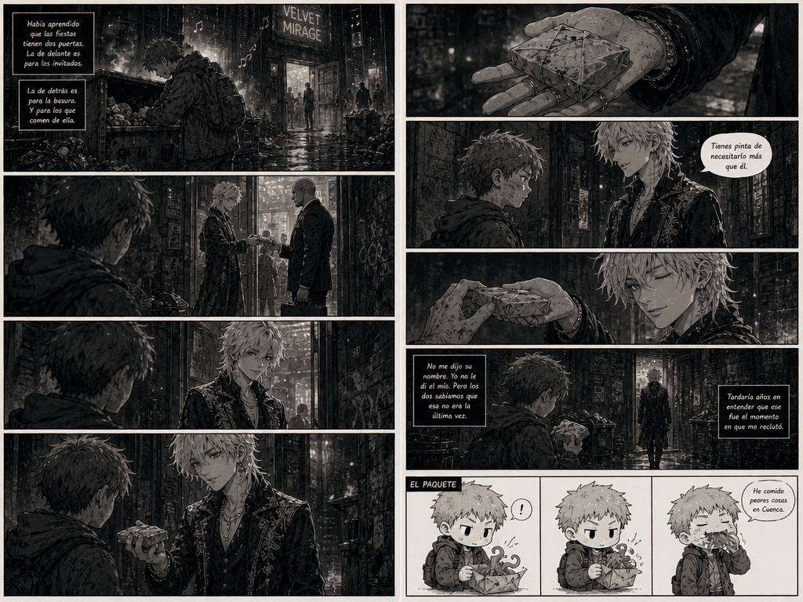
CAP05 — EXPLORACIÓN Y VIAJE
"Una junta del Mosaico. Donde dos realidades se conectan. Normalmente están estabilizadas por portales o tecnología arcanita, pero esta... está salvaje."
— Luis, Capítulo 16
1. Métodos de Viaje
| Método | Coste | Precisión | Deriva |
|---|---|---|---|
| Portal de Maestro | Alma / Perlas | Alta | Baja (1d6) |
| Portal natural | Ninguno | Impredecible | Alta (1d10+1) |
| Pulsera de salto | 1 perla (100u) | Media-baja | Alta (1d10+6) |
| Tren de TecnoStealer | Billete corporativo | Alta | Baja (1d6) |
| Satélite artificial | Billete / acceso corp | Alta | Baja (1d6) |
Deriva de pulsera (1d10+6): rango real 7-16, media 11,5. Notablemente más peligroso que un portal de Maestro (1d6, media 3,5). La pulsera desgarra la membrana entre teselas sin control fino — funciona, pero deja marca.
Portal de Maestro: requiere que el Maestro haya estado antes en el destino o tenga referencias precisas.
Pulsera de salto: solo el portador. Punto de llegada puede variar kilómetros.
Tren de TecnoStealer: victoriano modificado. Solo donde hay infraestructura de vías. Horas o días de viaje.
Satélite artificial: estaciones en la urdimbre que conectan teselas despertadas con alta presencia corporativa y de despertados. Viaje relativamente seguro pero controlado por las corps.
2. La Urdimbre — Peligros
Anomalías de distorsión: colores sin nombre, geometrías imposibles. Efectos posibles: +1 Deriva, desvío de destino, efecto Tabla A, daño a nave. Detectar: tirada Alerta o Detección de Distorsión.
Juntas del Mosaico: bordes naturales entre teselas no estabilizados. Pueden absorber al grupo.
Eco temporal: imágenes de pasado o futuro en zonas de alta distorsión. Son registros reales.
Seres de la urdimbre: entidades atrapadas entre teselas. Pueden comunicarse. Pueden ser peligrosos.
3. Naves
| Nave | Blindaje | PDE | Carga | Precio |
|---|---|---|---|---|
| Lanzadera individual | 7 | 60 | 0.5t | 25.000 PC |
| Transporte ligero (clase Teseo) | 9 | 120 | 5t | 180.000 PC |
| Nave de combate corporativa | 12 | 180 | 2t | 400.000 PC |
| Nave de carga pesada | 7 | 300 | 50t | 600.000 PC |
El Teseo (canon) es un transporte ligero construido con chatarra, ingenio y desesperación.
Modificaciones: Blindaje +2 (20k) / Motor mejorado −30s (50k) / Sensores +20% (15k) / Camuflaje −40% detección (80k) / Armamento ligero daño×5 (30k) / Armamento medio daño×8 (70k) / Carga +50% (25k) / IA navegación P60% (40k)
4. EP-9 — Nodo del Mosaico
"No era una estación orbital tradicional. Era casi una ciudad flotante." — El Hacedor, Cap. 16
Nodo estabilizado de la urdimbre con infraestructura acumulada de décadas. Sin corporación dominante oficial. Mercado negro integrado con el legal. Presencia mínima de Primus.
Como base: 500-1.000 PC/semana. Acceso a mercados de todo el mosaico, contactos de múltiples facciones.
5. Exploración
Antes de cruzar: ¿hay atmósfera? ¿hay portal de salida? ¿qué se sabe del destino?
Cartografía: tirada de Navegación para mapas utilizables. Un mapa de tesela virgen tiene valor real.
Protocolo de grupo (práctica canónica):
- Nunca solo — parejas mínimo
- Puntos de encuentro cada 6 horas al separarse
- La extracción tiene prioridad sobre el rescate individual
- Alguien se queda siempre con la nave
6. Economía del Viaje
| Concepto | Coste |
|---|---|
| Amarre de nave / semana | 500–2.000 PC |
| Repostaje Helio-3 / salto | 5.000–15.000 PC |
| Perla estándar (100u) | 2.000–5.000 PC |
| Raciones 1 persona / semana | 200 PC |
| Alojamiento básico / semana | 100–500 PC |
| Reparaciones menores | 500–5.000 PC |
| Billete tren TecnoStealer | 3.000–10.000 PC |
La información tiene precio: rutas de portal, tecnología Arcanita, movimientos corporativos. Un mapa de tesela virgen se puede vender al Gremio de Exploradores.
7. Combate de Vehículos y Naves
El combate de vehículos usa el mismo sistema d100 que el combate personal. La diferencia es de escala: los vehículos son más resistentes, más lentos en reaccionar y dependen del trabajo en equipo para funcionar bien.
Escala de blindaje
Los vehículos operan en una escala diferente a las personas:
| Escala | Equivalencia | Ejemplos |
|---|---|---|
| Personal | 1 punto = 1 punto personal | Armadura personal, exoesqueleto ligero |
| Vehículo pequeño | 1 punto = 2 puntos personal | Motos, drones, vehículos ligeros |
| Vehículo terrestre/acuático | 1 punto = 3 puntos personal | Coches blindados, lanchas de combate |
| Nave espacial | 1 punto = 5 puntos personal | Cualquier nave con motor de salto |
Disparar a una nave con arma personal: el blindaje de nave ya está escalado (×5 respecto al personal), por lo que el daño de armas personales se aplica directamente sin dividir. Prácticamente inútil salvo en zonas sin blindaje (ventanas, motores expuestos).
Una nave disparando a una persona: el daño se multiplica por 5. Un impacto directo de armamento ligero de nave es mortal para cualquier persona sin protección extraordinaria.
Ejemplo: arma personal con daño 5, 2 éxitos netos → daño total 10. Nave con blindaje 3 en esa zona → éxitos que absorbe el blindaje: 3. Si el atacante tenía 2 éxitos y el blindaje absorbe 3, sin daño. Para dañar una nave espacial con arma personal se necesitan muchos éxitos o apuntar a zonas sin blindaje.
Zonas de una nave
Las naves no tienen un único PDE — tienen zonas independientes. Destruir una zona elimina esa función pero la nave puede seguir operando con las demás.
| Zona | PDE base (transporte ligero) | Función | Efecto al llegar a 0 |
|---|---|---|---|
| Control | 30 | Pilotaje, navegación | La nave no puede maniobrar ni corregir rumbo |
| Armamento | 20 | Sistemas ofensivos | No puede atacar |
| Defensas | 25 | Escudos, contramedidas | Pierde blindaje adicional de escudos |
| Sensores | 20 | Detección, comunicación | −30 a todas las tiradas de la tripulación |
| Motores | 35 | Propulsión, salto | Velocidad a la mitad; sin salto interdimensional |
| Carga | 15 | Bodega | Pérdida de contenido; posible descompresión |
| Tripulación | Variable | Habitabilidad | Bajas entre la tripulación |
Los PDE de otras naves se escalan proporcionalmente. Una nave de combate corporativa tiene el doble de PDE por zona que un transporte ligero.
Escudos de energía de nave: añaden blindaje adicional a todas las zonas o a zonas específicas. Se agotan antes que el blindaje estructural. Son distintos de los escudos personales (CAP03 Armaduras): los escudos personales penalizan la tirada del atacante (−10/−20); los escudos de nave añaden blindaje adicional a las zonas y son efectivos contra todo tipo de armas.
Tripulación y roles en combate
Cada miembro de la tripulación puede contribuir con una tirada por turno:
| Rol | Habilidad | Acción | Efecto |
|---|---|---|---|
| Piloto | Pilotaje | Maniobra evasiva | +1 al blindaje de la nave ese turno (expone menos superficie) |
| Piloto | Pilotaje | Posición de ataque | +10 a las tiradas del artillero ese turno |
| Artillero | Artillería Nave | Ataque | Tirada de ataque contra zona objetivo |
| Artillero | Artillería Nave | Apuntar zona | Elige zona objetivo sin penalizador adicional |
| Técnico | Técnica Nave | Reparación en combate | Recupera 1d6 PDE en una zona dañada |
| Técnico | Técnica Nave | Rerouting | Transfiere PDE de una zona a otra (máx 10) |
| Operador | Sensores | Escáner | Revela zonas dañadas del enemigo / −10 a su evasión |
| Operador | Sensores | Interferencia | −20 a las tiradas del artillero enemigo ese turno |
Sinergias: si el piloto saca un éxito extraordinario en su maniobra, el artillero recibe +20 en lugar de +10. Si el operador y el artillero colaboran (tirada colaborativa), los éxitos se suman.
Resolución de un ataque de nave
- El artillero tira Artillería Nave contra la zona objetivo.
- Sin apuntar: zona aleatoria (d10 por zona como combate personal).
- Apuntando: zona elegida, pero −10 a la tirada. - Los éxitos se calculan normalmente: (Habilidad − Tirada) ÷ 10.
- Se resta el blindaje de la zona (estructura + escudos activos).
- El daño = daño base del arma × éxitos netos, aplicado a los PDE de esa zona.
EJEMPLO
Artillero con Artillería 55%, apunta a Motores (−10 → efectiva 45%). Saca 30 → (45−30)÷10 = 1,5 → 2 éxitos. Blindaje de la zona: 2. Éxitos netos: 0. Sin daño estructural — pero el impacto ha sobrecargado los escudos (efecto narrativo).
Tipos de armamento de nave
| Tipo | Daño base | Alcance | Notas |
|---|---|---|---|
| Armamento ligero | 5 | Corto-medio | Estándar. Anti-personal y anti-nave pequeña. |
| Armamento medio | 8 | Medio-largo | Principal en combate entre naves. |
| Armamento pesado | 12 | Largo | Raro. Daño masivo a zonas. Recarga: 1 turno. |
| Torpedos / misiles | 15 | Largo | Un uso. −20 a la evasión del objetivo. |
| Armamento de energía | según tipo | Variable | Ignora blindaje estructural pero no escudos. |
Energía vs. proyectiles:
- Los escudos de energía son efectivos contra proyectiles pero menos contra energía (blindaje de escudo ÷2 contra armas de energía).
- El blindaje estructural (metal, Tron) funciona igual contra ambos tipos.
Movimiento y posición
El movimiento en combate espacial se mide en posición relativa, no en metros:
| Posición | Efecto |
|---|---|
| Ventaja | +10 al artillero propio, −10 al enemigo. |
| Neutra | Sin modificadores. |
| Desventaja | −10 al artillero propio, +10 al enemigo. |
| Fuga | Tirada enfrentada de Pilotaje. Si gana, sale del combate. |
Cambiar de posición: tirada enfrentada de Pilotaje. El ganador elige la posición resultante.
Persecución: si una nave intenta huir, tirada enfrentada de Pilotaje. Si la nave en fuga gana por 2+ éxitos, escapa. Si pierde, queda en Desventaja.
Vehículos terrestres y acuáticos
Mismo sistema que las naves con estas diferencias:
- Escala: vehículos pequeños = ×2 / medianos y terrestres = ×3 (ver tabla de escala).
- Zonas simplificadas: Motor, Estructura, Ocupantes. Sin sensores ni armamento separados salvo en vehículos militares.
- Movimiento: en metros como el combate personal. Vehículo estándar: 60m/turno en carretera, 30m en campo abierto.
- Colisión: ambos vehículos reciben daño = PDE del más pequeño ÷ 10, ignorando blindaje.
REGLA RÁPIDA PARA EL DJ
Trata el vehículo como un PNJ con Blindaje escalado y PDE como PV. El resto funciona igual que el combate normal.
8. HELIO-3 — Disponibilidad por Tesela
El Helio-3 es el combustible estándar para motores de salto. Su disponibilidad depende del tipo de tesela en que se encuentre el grupo.
| Tipo de tesela | Disponibilidad | Coste aprox. / salto | Notas |
|---|---|---|---|
| Industrial / Minera activa | Alta | 5.000–8.000 PC | Mercado abierto. Varias fuentes competidoras. |
| Urbana corporativa | Media-alta | 8.000–12.000 PC | Disponible pero controlado por corps. Puede requerir permisos. |
| Urbana sin corp dominante (EP-9) | Media | 10.000–15.000 PC | Mercado negro integrado con el legal. Sin garantía de calidad. |
| Frontera / Colonial | Baja | 15.000–30.000 PC | Escaso. Un proveedor si hay suerte. Puede no haber. |
| Primitiva / Sin industria | Muy baja o nula | No tiene precio fijo | No existe como tal. Solo si hay nave previamente abastecida o fuente alternativa. |
| Vacia / Yerma | Nula | — | Sin fuentes. El grupo entra con lo que lleva. |
| Conflicto activo / Bloqueada | Variable | x2–x3 del coste normal | Contrabando. Riesgo de incautación o trampa. |
Reserva de una nave:
- Lanzadera individual: 1–2 saltos por carga completa
- Transporte ligero (clase Teseo): 3–5 saltos
- Nave de combate corporativa: 4–6 saltos
- Nave de carga pesada: 2–3 saltos (el motor consume proporcionalmente más)
Métodos alternativos de obtención
El Helio-3 no es el único camino. El DJ puede introducir estas opciones cuando la narrativa lo justifique — no son reglas fijas, son posibilidades:
| Método | Condición | Eficiencia | Referencia |
|---|---|---|---|
| Extracción solar (ramscoop) | Nave con equipo especializado + estrella cercana | 1–3 saltos por operación. Horas de trabajo. | Star Trek / ciencia ficción clásica |
| Síntesis en laboratorio | Instalación técnica de nivel alto + materiales base | Lento y caro. Solo si no hay alternativa. | Requiere Ciencia 50+ y equipamiento |
| Intercambio / trueque | Contacto con minería local o proveedor alternativo | Depende de negociación | Habilidades sociales útiles |
| Rescate de nave abandonada | Nave con depósitos intactos | Lo que quede en los depósitos | Exploración, riesgo asociado |
| Concentrado de Perlas | Perlas de distorsión como sustituto de emergencia | 1 perla (100u) aprox. = 1 salto | Costoso. Solo emergencia. Ver tabla de viaje. |
Para el Narrador: la escasez de Helio-3 es una herramienta narrativa, no una condena. Si el grupo está varado en una tesela primitiva sin combustible, eso es una aventura, no un callejón sin salida. Siempre debe existir al menos un camino — aunque cueste.
Las Teselas y La Deriva
"Llaman teselas a lo que sus dioses llaman mundos. Cuando aprendes a ver la urdimbre entre ellas, te das cuenta de que el mosaico siempre estuvo ahí. Lo que cambia eres tú: ya no puedes dejar de verlo."
— Adrian Seawolf, Errante
¿Qué es una Tesela?
Una tesela es un plano de existencia completo: un mundo, una realidad, un fragmento del multiverso con sus propias leyes físicas, civilizaciones y flujos de distorsión. El multiverso se comporta como un mosaico inmenso, donde cada pieza es adyacente a otras y comparte bordes con ellas.
Los Errantes no usan las teselas. Viajan entre ellas.
La Urdimbre
Entre cualquier par de teselas adyacentes existe un espacio intersticial llamado la urdimbre: una región de pura distorsión donde las leyes de la física colapsan. Es el "plomo" del mosaico — el espacio entre las piezas. Los portales que abren los Maestros de Portales son atajos a través de la urdimbre: puntos donde la membrana entre dos teselas se adelgaza lo suficiente para cruzarla.
La urdimbre tiene rutas, cruces, longitud y peligros propios. No es vacío.
Tipos de Teselas
- Tesela Mayor: plano completo y estable. La norma.
- Tesela Menor / de Bolsillo: fragmento de una tesela colapsada. Inestable. TecnoStealer las usa como bases secretas o prisiones.
- Tesela Virgen: plano no catalogado. Un mapa de tesela virgen tiene valor real en el mercado.
- Tesela Colapsada: consumida por la urdimbre. Extremadamente peligrosa.
Pulseras de Salto
"Un portal de Maestro es una puerta. Una pulsera de salto es una patada en la espalda."
— dicho común entre Errantes
Qué son
Las pulseras de salto son dispositivos tecnológicos que permiten a cualquier persona cruzar la urdimbre entre teselas sin necesitar a un Maestro de Portales. Son el método de viaje interdimensional más accesible — y el más brutal.
Funcionamiento
La pulsera se activa manualmente. El usuario introduce una perla de distorsión como fuente de energía y activa el salto. La distorsión de la perla se libera en un pulso concentrado que desgarra momentáneamente la membrana entre teselas y empuja al portador a través.
No hay control fino sobre el destino. Llegar exactamente donde se quiere requiere experiencia, calibración previa, o suerte.
Coste
Cada uso consume 1 perla de distorsión estándar (100 unidades).
Cada cruce mediante pulsera acumula +6 de Deriva — más que un portal de Maestro (+4) por la brutalidad del cruce.
Un Errante que depende de pulseras como método principal de viaje necesita una cadena de suministro estable de perlas.
Comparativa frente a portal de Maestro
| Pulsera de Salto | Portal de Maestro | |
|---|---|---|
| Requiere Maestro | No | Sí |
| Coste | 1 perla por salto | Alma / perlas del Maestro |
| Precisión | Media-baja | Alta |
| Deriva acumulada | 1d10+6 | 1d6 |
| Lleva a otros | No de forma segura | Sí |
| Velocidad en emergencia | Alta | Depende del Maestro |
Disponibilidad
Se pueden fabricar, comprar y encontrar. TecnoStealer tiene versiones propietarias de mayor calidad. En el mercado negro existen versiones de menor fiabilidad a precios reducidos — con los riesgos correspondientes.
Pulseras avanzadas — versión de destinos pregrabados
La pulsera estándar es imprecisa por diseño: abre un portal hacia la tesela destino general, sin coordenadas finas. Existe una versión superior que resuelve ese problema — pero no está en el mercado.
Cómo funciona:
Un Maestro de Portales con habilidad en Herrero Rúnico puede grabar destinos específicos en la pulsera. Cada destino es un punto fijo al que el Maestro ha viajado previamente. La pulsera solo salta a esos puntos — no puede improvisarse el destino en el momento.
| Característica | Pulsera estándar | Pulsera avanzada |
|---|---|---|
| Destinos | Abiertos (cualquier tesela) | Pregrabados (abanico fijo) |
| Precisión | Media-baja | Exacta (al punto grabado) |
| Combustible | 1 perla blanca (100 PD) / salto | 1 perla negra (1.000 PD) = 10 saltos |
| Deriva acumulada | 1d10+6 | 1d10+6 |
| Fabricante | Norton / artesanos básicos | Multiespecialista exclusivo |
| Legalidad | Legal | Versiones de Taller = zona gris / ilegales |
Combustible de pulsera avanzada: 1 perla negra (1.000 PD) permite 10 saltos precisos al abanico de destinos pregrabados. La eficiencia es mayor porque el Maestro que fabricó la pulsera inscribió las coordenadas exactas, reduciendo el desgaste energético por salto. La Deriva acumula igual (1d10+6 por salto) — la precisión no reduce la brutalidad del cruce.
Quién las fabrica:
Requiere un artesano multiespecialista con Camino de los Portales y Herrero Rúnico a nivel suficiente para grabar coordenadas de distorsión en el material. No existe una fórmula disponible en ningún catálogo — cada artesano que lo consigue lo ha desarrollado por su cuenta.
Primus — Unidad de Asalto:
Primus cuenta con una unidad especial equipada con pulseras avanzadas de diseño propio, no distribuidas. Sus destinos pregrabados cubren puntos estratégicos del mosaico. Las copias artesanales de esta tecnología son ilegales — Primus lo persigue activamente.
Una pulsera que lleva a cualquier sitio es una herramienta. Una pulsera que lleva exactamente donde quieres ir es un activo estratégico. La diferencia es por qué Primus no quiere que cualquiera las tenga.
---
Ejemplo completo — Combate de naves
El Teseo vs. una patrulla corporativa. Dos turnos completos.
Las naves:
- El Teseo — transporte ligero. Blindaje 9, PDE Motores 35, PDE Control 30. Tripulación: Seawolf (Pilotaje 55%), Kova (Artillería Nave 45%), Reyes (Técnica Nave 50%).
- Patrulla corporativa — nave de combate ligera. Blindaje 12, PDE Motores 70, PDE Control 60. Artillero (Artillería Nave 60%), Piloto (Pilotaje 65%).
Turno 1 — Iniciativa:
La corporativa tiene Sensores avanzados: actúa primero.
Corporativa — Piloto: maniobra de posición de ataque. Pilotaje 65%, saca 40 → 3 éxitos. Su artillero recibe +10 este turno.
Corporativa — Artillero: apunta a Motores del Teseo. Artillería 60% +10 (sinergia) = 70%. Saca 25 → (70−25)÷10 = 5 éxitos. Daño base nave 8 × 5 = 40. Blindaje Motores Teseo: 9. Éxitos que absorbe el blindaje: 9 ÷ daño base = absorbe ~1 éxito neto... Pausa: en combate de naves el blindaje resta éxitos igual que en combate personal. 5 éxitos − blindaje zona (en este caso la zona Motores tiene blindaje 9, que equivale a absorber 1 éxito por punto — aquí el DJ aplica el mismo sistema: blindaje tipo 3 absorbe 3 éxitos). Éxitos netos: 5−3 = 2. Daño: 8×2 = 16 PDE a Motores del Teseo. Motores: 35−16 = 19 PDE.
Teseo — Seawolf (Piloto): maniobra evasiva. Pilotaje 55%, saca 48 → 1 éxito. Blindaje del Teseo +1 este turno (blindaje efectivo 10).
Teseo — Kova (Artillero): apunta a Control de la corporativa. Artillería 45%, saca 30 → 2 éxitos. Daño base 6 × 2 = 12. Blindaje Control corporativa: 12 → absorbe 2 éxitos. Éxitos netos: 0. Sin daño.
Teseo — Reyes (Técnico): reparación en combate en Motores. Técnica 50%, saca 35 → 2 éxitos. Recupera 2d6 = 8 PDE. Motores: 19+8 = 27 PDE.
Turno 2:
Corporativa — Artillero: repite ataque a Motores. Saca 55 → (60−55)÷10 = 1 éxito. Daño 8×1 = 8. Blindaje absorbe 2 éxitos → 0 netos. Sin daño. La evasión del turno anterior marcó la diferencia.
Teseo — Seawolf: posición de ataque esta vez. Saca 20 → 4 éxitos. Kova recibe +20.
Teseo — Kova: Artillería 45%+20 = 65%. Apunta a Motores corporativa. Saca 30 → (65−30)÷10 = 4 éxitos. Daño 6×4 = 24. Blindaje Motores corporativa absorbe 3 éxitos → 1 neto. Daño: 6×1 = 6 PDE a Motores corporativa. Motores: 70−6 = 64 PDE.
Fin de los dos turnos. Estado:
| Teseo | Corporativa | |
|---|---|---|
| Motores | 27/35 PDE | 64/70 PDE |
| Control | 30/30 PDE | 60/60 PDE |
El Teseo está en desventaja — sus Motores han recibido daño y la corporativa tiene mejor blindaje y artillería. Seawolf tiene dos opciones: intentar huir (tirada de Pilotaje enfrentada) o negociar. Si los Motores bajan de 17 PDE (mitad), la velocidad se reduce a la mitad y la fuga se complica mucho.
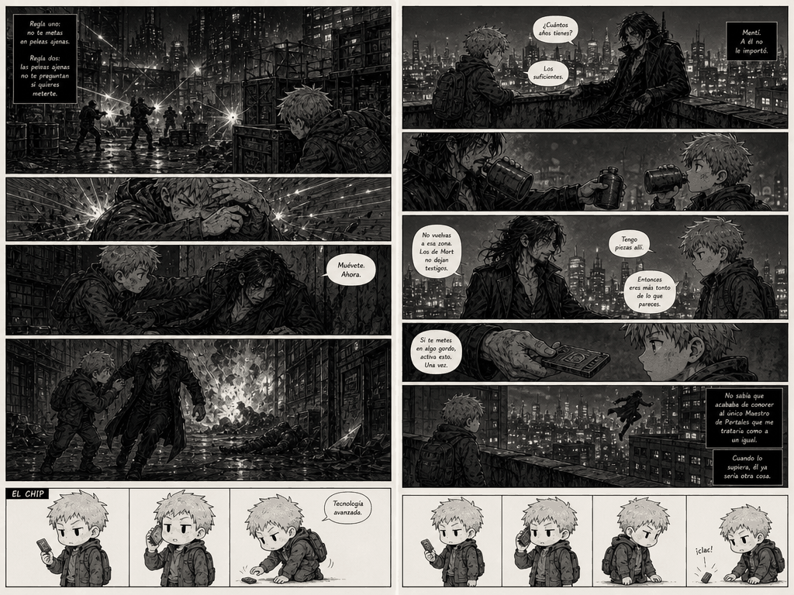
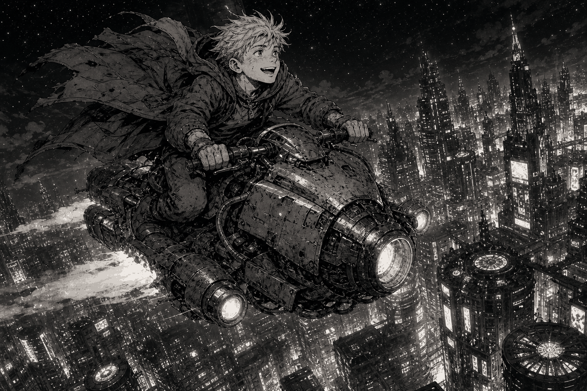
CAP05b — VEHÍCULOS
"La mitad del precio del vehículo es el motor. La otra mitad, estructura y ruedas — o equivalente."
1. Niveles de Vehículo
Todo vehículo tiene un nivel base que determina su tamaño, capacidad y precio. Sobre ese nivel se aplican modificadores por tipo de propulsión.
| Nivel | Tamaño | Huecos | Peso (t) | Maniobra | Plazas | Carga (t) | Precio base (PC) | PDE | FUE/CON |
|---|---|---|---|---|---|---|---|---|---|
| 1 | Ligero | 3 | 0,5 | 15 | 2 | 0,2 | 1.000 | 50 | 50/50 |
| 2 | Medio | 6 | 1,5 | 5 | 5 | 1 | 12.000 | 100 | 100/100 |
| 3 | Grande | 12 | 5 | 0 | 20 | 3 | 60.000 | 300 | 300/300 |
| 4 | Enorme | 24 | 60 | −5 | 50 | 40 | 200.000 | 1.000 | 1000/1000 |
| 5 | Colosal | 48 | 1.000 | −15 | 250 | 800 | 1.000.000 | 10.000 | — |
Huecos: espacio disponible para carga, motor y complementos (incluidos en el precio base).
PDE: Puntos de Estructura — la vida útil del vehículo. Reparar: precio ÷ PDE \= coste por PDE. Tiempo: 1 PDE/hora. Con técnico: suma su habilidad a la tirada de los operarios. Si lo reparan los personajes: coste a la mitad.
2. Tipos de Propulsión — Modificadores al precio
El precio final se calcula así: Precio base × (1 + suma de modificadores)
| Tipo | Modificador precio | Movimiento base | NT mínimo |
|---|---|---|---|
| Terrestre/Acuático base | ×1 | 50 km/h | 0 |
| Submarino | ×2 | 100 km/h | 4 |
| Aerodeslizador | ×5 | 500 km/h | 6 |
| Volador | ×4 | 1.000 km/h | 5 |
| AV (aéreo-vehículo) | ×8 | 1.500 km/h | 6 |
| Espacial planetario | ×12 | 15.000 km/h | 6 |
| Espacial | ×20 | 150.000 km/h | 7 |
| Salto | ×30 | 1 año luz | 8 |
| Mech (incluye servo) | ×12 | variable | 7 |
Los vehículos pueden ser terrestres, acuáticos, voladores, AV o aerodeslizadores.
2b. Calidad de Base
No todos los vehiculos del mismo nivel son iguales. La calidad de la plataforma determina el rendimiento antes de anadir complementos.
| Calidad | Precio | Maniobra | PDE | Huecos libres | Techo componentes |
|---|---|---|---|---|---|
| Basica | x0,5 PB | -5 | -10% | -1 hueco | Solo Clase 1 |
| Estandar | x1 PB | base | base | base | Clase 1-2 |
| Premium | x2 PB | +5 | +20% | +2 huecos | Sin limite |
El nivel define el tamano; la calidad define que tan buena es la plataforma. Un N2 Basico es el carguero de ocasion. Un N2 Premium es el que TecnoStealer usa para sus operativos.
2c. Huecos por componente
| Componente | Huecos |
|---|---|
| Arma pequena | 1 |
| Arma mediana | 2 |
| Arma grande / canon | 3 |
| Soporte vital | 1 por cada 5 plazas |
| Blindaje ligero (Micro/Ligero Clase 1) | 1 |
| Blindaje medio (Media/Dura Clase 1) | 2 |
| Blindaje pesado (Pesado/Asalto Clase 1) | 3 |
| Complemento menor (chaff, stealth...) | 1 |
| Motor hiperespacial | 4 |
| Campos de fuerza (xN) | 1 por nivel |
2d. Precio del Blindaje (Clase 1)
| Tipo | Blindaje | PDE extra | Precio |
|---|---|---|---|
| Micro Clase 1 | +5 | +10 | 5.000 PC |
| Ligero Clase 1 | +7 | +14 | 10.000 PC |
| Medio Clase 1 | +9 | +18 | 20.000 PC |
| Duro Clase 1 | +11 | +22 | 40.000 PC |
| Pesado Clase 1 | +12 | +24 | 60.000 PC |
| Asalto Clase 1 | +15 | +30 | 100.000 PC |
Clase 2: x10. Clase 3: x1.000. Escalado por tamano: igual que la tabla de stats (Seccion 3).
Cabina expuesta: el descuento es -20% del precio base del vehiculo (minimo -2.000 PC, maximo -20.000 PC).
3. Blindaje de Vehículo
El blindaje protege al vehículo igual que una armadura protege a un personaje. Los PDE de blindaje son externos — el vehículo no sufre daño interno cuando los pierde.
| Tipo | Blindaje | PDE extra | Peso parcial | Peso total | Precio base | Modificador maniobra | Conducción asistida |
|---|---|---|---|---|---|---|---|
| Sin blindaje | 0 | 0 | — | — | — | +15 | 0 |
| Micro Clase 1 | 5 | 10 | 0,5t | 3t | 5.000 PC | +10 | +10 |
| Ligera Clase 1 | 7 | 14 | 0,7t | 4,2t | 10.000 PC | +5 | +5 |
| Media Clase 1 | 9 | 18 | 0,9t | 6,1t | 20.000 PC | −10 | 0 |
| Dura Clase 1 | 11 | 22 | 1,1t | 6,6t | 40.000 PC | −20 | −10 |
| Pesada Clase 1 | 12 | 24 | 1,2t | 8,2t | 60.000 PC | −25 | −15 |
| Asalto Clase 1 | 15 | 30 | 1,5t | 9t | 100.000 PC | — | — |
PDE extra del blindaje: se suman a los PDE del vehículo como capa externa. El vehículo no sufre daño interno mientras queden PDE de blindaje. Son lo mismo que los PDE estructurales — solo están separados para indicar qué se pierde primero.
Escalado por tamaño de vehículo (se suma al blindaje Clase 1 base):
- Tamaño medio: Blindaje +10 / Peso +5t / PDE extra +10
- Tamaño grande: Blindaje +20 / Peso +30t / PDE extra +30
- Tamaño colosal: Blindaje +30 / Peso +40t / PDE extra +40
Clase 2 y Clase 3: multiplican el precio y los PDE extra, pero NO el blindaje — el blindaje a esos niveles ya es suficientemente alto como para que multiplicarlo resultaría en valores absurdos.
- Clase 2: precio ×10, PDE extra ×10. Blindaje sin cambio.
- Clase 3: precio ×1.000, PDE extra ×1.000. Blindaje sin cambio.
4. Complementos de Vehículo
Los complementos tienen precio propio. Cuando se indica "×0,5 PB" significa que el precio del complemento es ese porcentaje del precio base del vehículo (antes de añadir otros complementos). No hay un "10% adicional" sobre el elemento — el precio indicado es el total del complemento.
| Complemento | Precio | Efecto |
|---|---|---|
| Estanco | ×0,5 PB | Estanco en cualquier ambiente. 3 horas de autonomía |
| Camuflaje pasivo | ×0,1 PB | +10 a acechar y esconderse |
| Camuflaje activo | ×0,5 PB | +20 a acechar y esconderse |
| Servo asistida | ×10 PB | Reducción de penalizadores de maniobra |
| Remolque | 10% del coste final | −10% maniobra |
| Soporte vital | 10.000 PC × tripulante | Atmósfera y temperatura para humanos |
| Soporte auxiliar | 50% del soporte vital | Energía de emergencia al 50% de rendimiento |
| Sistemas estancos | ×2 PB | Impermeabilización completa. Necesario para submarinos |
| Sistemas de diagnóstico (×N) | 10.000 × nivel | +10 a reparación y localización de averías por nivel |
| Umbral de vuelo (×N) | 20.000 × nivel | Duplica altitud (+15km rotores / +25 turbinas / +50 reactores) |
| Motor hiperespacial | 200.000 PC | Agujero en el continuo espacio-tiempo. 1 año luz por nivel MOV |
| Campos de fuerza (×N) | 100.000 × nivel | Barrera electromagnética. No añade PDE ni peso |
| Reducción de peso (×N) | 50.000 × nivel | −5 toneladas por nivel |
| Segunda mano | −50% precio | Riesgo de fallo entre 5% y 20% |
| Cabina expuesta | −20.000 PC | +10 maniobra. La cabina puede ser impactada con apuntado cuidadoso |
| Estructura ligera (×N) | −50.000 × nivel | −5 PDE internos por nivel |
5. Armamento para Vehículos
Precios en miles de PC. Para Clase 2: ×10. Para Clase 3: ×1.000.
Armas de energía — cuerpo a cuerpo
| Arma | Puntería | Daño | Peso (t) | Precio (miles) |
|---|---|---|---|---|
| Espada Clase 1 | +10 | 12 | 0,75 | 7,6 |
| Hacha Clase 1 | 0 | 14 | 0,8 | 8 |
| Mazo Clase 1 | −30 | 16 | 0,74 | 7,7 |
| Taladro Clase 1 | −10 | 11 | 0,7 | 6,5 |
| Guadaña Clase 1 | −1 | 14 | 0,83 | 8,3 |
Armas de energía — distancia
| Arma | Puntería | Rango | Daño | Cadencia | Cargador | Recarga | Peso | Precio |
|---|---|---|---|---|---|---|---|---|
| Pistola láser Clase 1 | 0 | 140 | 10 | 3 | Infinito | 1 | 1,2t | 12 |
| Rifle láser Clase 1 | 0 | 400 | 12 | 6 | Infinito | 2 | 1,7t | 17 |
| Cañón láser Clase 1 | 0 | 400 | 15 | 1 | Infinito | 2 | 1,05t | 10,6 |
| Torretas láser Clase 1 | 0 | 1.600 | 14 | 6 | Infinito | 2 | 2t | 20 |
| Cañón de plasma Clase 1 | 0 | 400 | 17 | 1 | Infinito | 4 | 3,75t | 12,6 |
La recarga laser ocurre al consumir cadencia, no por agotamiento de cargador.
Armas de proyectiles
| Arma | Puntería | Rango | Daño | Cadencia | Cargador | Recarga | Peso | Precio |
|---|---|---|---|---|---|---|---|---|
| Gatling Clase 1 | −2 | 400 | 13 | 12 | 200 | 1 | 1,46t | 14,7 |
| Cañón Clase 1 | 0 | 3.200 | 16 | 1 | 1 | 1 | 1,8t | 17 |
| Rifle de pulso Clase 1 | +2 | 300 | 10* | 9 | 50 | −1 | 0,1t | 11,1 |
Rifle de pulso: no hace daño. Dispara ancla — engancha si supera el blindaje enemigo.
Explosivos
| Arma | Puntería | Rango | Daño | Cadencia | Cargador | Recarga | Peso | Precio |
|---|---|---|---|---|---|---|---|---|
| Lanzagranadas Clase 1 | −20 | 400 | 17 | 1 | 1 | 1 | 0,99t | 9,8 |
| Lanzamisiles Clase 1 | 0 | 1.600 | 19 | 1 | 10 | 5 | 1,7t | 15,2 |
Se les puede acoplar sistema de seguimiento inteligente.
Escalado por tamaño:
- Medio: Daño +10 / Peso +5t / Precio +10.000 PC
- Grande: Daño +20 / Peso +30t / Precio +30.000 PC
- Colosal: Daño +30 / Peso +40t / Precio +40.000 PC
6. Sistemas de Seguimiento Inteligente
| Sistema | Efecto | Multiplicador precio |
|---|---|---|
| Guiado IR | Fija el objetivo antes de disparar | ×1,5 |
| Escáner térmico | El misil rastrea el calor del objetivo | ×2 |
| Escáner óptico | Cámara para seguir al objetivo | ×2 |
| Escáner electrónico | Radar para seguir al objetivo | ×3 |
7. Contramedidas
| Contramedida | Efecto | Precio (miles) |
|---|---|---|
| Chaff | +10 contra guías láser y radar | 8 |
| Bengalas | +10 contra guías térmicas o IR | 8 |
| Atenuador IR | +5/+10 contra guías térmicas/IR | 6 |
| Humo IR | +15 guías térmicas, IR y ópticas. Solo ≤80 km/h | 15 |
| Humo normal | +15 contra guías ópticas (mismas limitaciones) | 12 |
| Stealth | +10 contra radar, solo un objetivo | 8 |
| ECM | +15 contra radar, varios objetivos | 15 |
8. Vehículos de Ejemplo
Estos tres ejemplos muestran el proceso completo de cálculo. Úsalos como referencia de precio y como punto de comparación con el equipo de los personajes.
Fórmula: Precio base (nivel) × multiplicador de propulsión. Si se añaden complementos, se suman al resultado.
Buggy de Patrulla (ligero terrestre)
Nivel 1 — Terrestre
| Stat | Valor |
|---|---|
| Maniobra | 15 |
| Plazas | 2 |
| Carga | 0,2 t |
| Velocidad | 50 km/h |
| PDE | 50 |
| FUE/CON | 50/50 |
| Huecos disponibles | 3 |
Cálculo:
- Precio base Nivel 1: 1.000 PC
- Propulsión terrestre: ×1
- Total: 1.000 PC
El vehículo más barato y reparable del mosaico. Segunda mano sale por 500 PC, con un 10–20% de riesgo de avería. Habitual en teselas de bajo NT.
AV-6 Courier (aerovehículo medio)
Nivel 2 — AV
| Stat | Valor |
|---|---|
| Maniobra | 5 |
| Plazas | 5 |
| Carga | 1 t |
| Velocidad | 1.500 km/h |
| PDE | 100 |
| FUE/CON | 100/100 |
| Huecos disponibles | 6 |
Cálculo:
- Precio base Nivel 2: 12.000 PC
- Propulsión AV: ×8
- Total: 96.000 PC
Transporte estándar en teselas NT6+. Workhouse opera flotas enteras bajo contrato. TecnoStealer prefiere versiones modificadas con cabina expuesta (−20.000 PC, +10 maniobra).
Mensajero Clase Ligera (nave espacial)
Nivel 2 — Espacial
| Stat | Valor |
|---|---|
| Maniobra | 5 |
| Plazas | 5 |
| Carga | 1 t |
| Velocidad | 150.000 km/h |
| PDE | 100 |
| FUE/CON | 100/100 |
| Huecos disponibles | 6 |
Cálculo:
- Precio base Nivel 2: 12.000 PC
- Propulsión espacial: ×20 → 240.000 PC
- Soporte vital (5 plazas × 10.000 PC): +50.000 PC
- Total equipado: 290.000 PC
Sin soporte vital no puede operar en vacío. Una nave espacial personal es símbolo de estatus — la mayoría pertenecen a corps o a grupos consolidados de Errantes.
9. Salvamento y Reparacion
Valor de componentes
| Componente | % del precio total |
|---|---|
| Sistema de propulsion (motor) | 40% |
| Casco / estructura | 20% |
| Sistemas de control | 15% |
| Sistemas de energia | 15% |
| Resto (cabina, accesorios) | 10% |
Estado segun PDE restante
| Estado | PDE restante | Valor venta (% del nuevo) |
|---|---|---|
| Funcional | 76-100% | 50% |
| Danado | 51-75% | 35% |
| Deteriorado | 26-50% | 20% |
| Chatarra | 1-25% | 10% |
Coste de reparacion
Presupuesto = (PDE perdido / PDE total) x precio del componente
60% piezas + 40% mano de obra.
| Origen piezas | Multiplicador | Riesgo posterior |
|---|---|---|
| Norton / nuevas | x1,0 | Ninguno |
| Segunda mano | x0,6 | Ninguno |
| Chatarra / improvisadas | x0,3 | Averia 10-20% |
Exitos de Mecanica necesarios = 1 por cada 10% de dano (redondeado arriba). Cada exito adicional = -10% coste o +10% velocidad. Pifia = piezas danadas, +25% coste.
10. Tabla de Salvamento (1d10)
Al encontrar un vehiculo en un pecio, desguace o tras una batalla, tira 1d10 por componente:
| 1d10 | Estado | PDE % | Funciona |
|---|---|---|---|
| 1-2 | Destruido | - | No |
| 3-4 | Chatarra | 1-25% | No |
| 5-6 | Deteriorado | 26-50% | Con tirada Mecanica |
| 7-8 | Danado | 51-75% | Con tirada Mecanica |
| 9 | Funcional | 76-100% | Si |
| 10 | Intacto | 100% | Si |
Modificadores: desguace organizado +2 / pecio reciente +1 / pecio antiguo -2 / NT menor de 5 (-1 por NT bajo 5) / bajo fuego -3.
Extraccion: Chatarra requiere superar 25% en Mecanica o se dana mas. Danado o mejor sale solo.
11. Venta y Mercado
| Canal | Funcional | Danado |
|---|---|---|
| Venta directa | 40-50% del nuevo | 15-25% |
| Mercado negro | +10% vs directa | +10% |
| Chatarrero | 10-15% sin importar estado | 10-15% |
Un motor de AV funcional recuperado de un pecio vale ~4.800 PC en el mercado negro (N2 estandar x 40% x 40% x 1,1). El chatarrero paga 1.200 PC sin preguntas.
---
12. Sistemas de Vuelo Personal — Jet-packs y equivalentes
"No es un vehículo. Es equipo que te deja caer hacia arriba."
Los sistemas de vuelo personal permiten a un individuo desplazarse en el aire sin depender de una nave o vehículo. No son vehículos en el sentido estricto —no tienen PDE ni huecos— sino equipo avanzado que se maneja con las mismas habilidades que una servo-armadura.
Habilidad de manejo
Pilotar es la habilidad base. Si el personaje lleva una armadura servoasistida, el sistema se integra en ella y puede manejarse también con Trajes Servoasistidos — lo que sea más alta.
Sin ninguna de las dos habilidades: tira por la general de Tecnológicas con penalizador adicional según el NT del equipo (ver abajo).
Formato físico
El formato no cambia las reglas de vuelo, pero sí la autonomía y el encaje con equipo. La autonomía escala por NT:
| Formato | NT5 | NT6 | NT7 | Notas |
|---|---|---|---|---|
| Mochila | 10 asaltos | 20 asaltos | 40 asaltos | El más común. Compatible con cualquier armadura. Ocupa 2 vol. |
| Cinturón | 6 asaltos | 12 asaltos | 24 asaltos | Más discreto. Incompatible con armaduras rígidas completas. 1 vol. |
| Botas | 4 asaltos | 8 asaltos | 16 asaltos | Solo saltos y control de caída. No vuelo sostenido. 0,5 vol. |
Integrado en servo-armadura: si el fabricante lo incluyó en el diseño, no ocupa vol. externo y la autonomía se duplica. El coste se añade al de la armadura.
Nivel Tecnológico y manejo
El NT del equipo determina el modificador a la tirada de Pilotar o Trajes Servoasistidos:
| NT | Tecnología | Modificador |
|---|---|---|
| 4 | Cohetes experimentales | −20. Solo posible con el Mérito Visionario construyéndolo con materiales de su NT. |
| 5 | Cohetes básicos (propulsión química) | −10 |
| 6 | Sistemas gravitatorios / de campo pequeños | 0 |
| 7+ | Integración avanzada (igual que nave pequeña) | +10 |
A partir de NT6 los sistemas dejan de ser cohetes: son propulsores de campo o gravíticos, más silenciosos, más precisos y sin llama de escape.
Mecánica de vuelo
Velocidad base por NT:
- NT5 (cohetes): 400 m por asalto de viaje (≈240 km/h) + 100 m por éxito adicional
- NT6 (propulsores de campo): 800 m por asalto de viaje (≈480 km/h) + 200 m por éxito
- NT7+ (integración avanzada): 1.200 m por asalto de viaje (≈720 km/h) + 300 m por éxito
Estas son velocidades máximas en línea recta. En entornos urbanos o de combate, la velocidad real es menor por maniobras.
Despegue desde el suelo: consume 1 asalto de autonomía.
Aterrizaje controlado: requiere al menos 1 éxito. Con 0 éxitos o resultado negativo: caída libre — daño equivalente a los éxitos negativos (sin contar blindaje de armadura; el impacto lo absorbe el cuerpo).
Maniobras en combate: cada maniobra brusca (esquivar, giro rápido, cambio de altitud súbito) exige una tirada. Un fallo no derriba automáticamente — reduce la velocidad y cuesta 1 asalto de autonomía adicional. Una pifia sí derriba.
Autonomía gastada: cuando se agota, el sistema entra en modo de emergencia (descenso controlado automático si NT6+) o simplemente se apaga (NT5 o menos). Las botas no tienen modo de emergencia.
Precio orientativo
| NT | Formato | Precio |
|---|---|---|
| 5 | Mochila | 8.000 PC |
| 5 | Cinturón | 5.000 PC |
| 5 | Botas | 2.000 PC |
| 6 | Mochila | 25.000 PC |
| 6 | Integrado en servo | +15.000 PC al precio de la armadura |
| 7 | Mochila | 80.000 PC |
| 7 | Integrado en servo | +40.000 PC al precio de la armadura |
El mercado negro suele tener NT5 de segunda mano a 3.000–4.000 PC. Los NT6 rara vez aparecen fuera de canales corporativos.
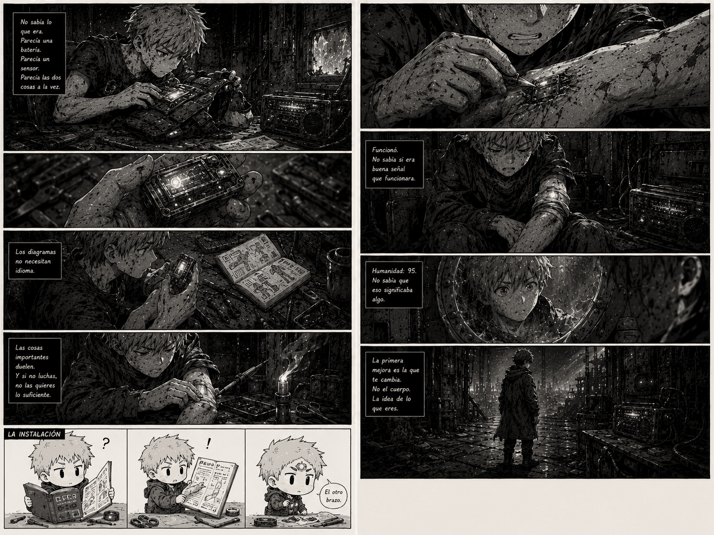
CAP06 — EL NARRADOR
"No hay un solo camino en La Senda de los Errantes."
El Narrador no es el adversario. Es el mundo — la voz de todo lo que no son los personajes, la fuerza que reacciona a sus decisiones.
1. La Filosofía del Juego
El viaje importa más que el destino. Los personajes existen para transformarse en el camino. El Narrador diseña situaciones, no finales.
Las decisiones tienen consecuencias. No hay decisión neutral. El mundo reacciona con coherencia, no castiga ni recompensa.
El tono es tuyo. Horror cósmico, pulp, ciencia ficción dura, exploración tranquila, intriga corporativa. Todo cabe. Lo que importa es que el grupo sepa en qué registro está jugando.
2. El Rol del Narrador
Describes el mundo. No necesitas ser literario: necesitas ser específico. "Un pasillo largo" no sitúa. "Un pasillo de veinte metros con luz fluorescente parpadeante y olor a aceite quemado" sí.
Animas a los PNJs. Son personas con motivaciones propias, no obstáculos.
Arbitras las reglas. Si una regla produce un resultado absurdo, la regla está mal. Tú decides en mesa.
Reaccionas, no planificas. Prepara situaciones, no soluciones.
No ganas. El Narrador que "gana" cuando los personajes mueren ha malentendido el juego.
3. La Regla del "Sí, pero..."
- "Sí" — lo consigue tal cual.
- "Sí, pero..." — lo consigue con una complicación o coste.
- "No, pero..." — no lo consigue, pero algo útil ocurre.
- "No" — solo para lo genuinamente imposible.
Ejemplo: "¿Puedo hackear la puerta con mi escáner?" → "Sí, pero va a llevar tiempo y hacer ruido. Tira Tecnológica."
4. Gestión de la Dificultad
| Situación | Modificador |
|---|---|
| Condiciones ideales | +20 a la habilidad |
| Condiciones normales | Sin modificador |
| Condiciones adversas | −10 a −20 |
| Condiciones extremas | −30 o imposible |
Cuándo pedir tirada: solo cuando el resultado es incierto Y las dos posibilidades son interesantes narrativamente. Si el personaje tiene 80% en Seguridad y la puerta es normal — simplemente la abre.
5. Los PNJs
Tres preguntas para cada PNJ que importe:
1. ¿Qué quiere?
2. ¿Qué le da miedo perder?
3. ¿Qué sabe que los personajes no saben?
PNJs de fondo: basta un rasgo memorable. Habla muy rápido. Tiene un tic nervioso. Huele a aceite de motor.
Antagonistas: los mejores no son malvados — tienen razones. Una corporación que contamina una tesela tiene accionistas, contratos, presiones.
6. Modos de Juego
| Modo | Referentes |
|---|---|
| Ciencia ficción dura | Blade Runner, Cyberpunk |
| Aventura épica | La Torre Oscura, Doctor Who |
| Horror cósmico | Lovecraft, Alien |
| Pulp / Acción | El Quinto Elemento, Guardianes |
| Exploración tranquila | Ursula K. Le Guin |
| Intriga corporativa | Neuromante, Mr. Robot |
Cada tesela puede tener un tono distinto. Una campaña puede empezar pulp en un mundo despertado y virar al horror cósmico en una tesela colapsada.
7. La Deriva como Herramienta Narrativa
- Señal de transformación: algo cambia en el personaje que los otros notan antes de que él lo admita.
- Fuente de tensión: un personaje con Deriva alta intentando volver a su tesela de origen.
- Recompensa ambigua: los efectos positivos de la Tabla A son reales, pero tienen un precio de identidad.
8. Reglas Opcionales
Consecuencias permanentes: heridas que no curan completamente sin atención adecuada. −10% en habilidades afectadas.
Fatiga acumulada: sin descanso, −5% cada 8 horas (acumulativo). Se recupera con descanso completo.
Reputación corporativa: nivel de reputación con cada facción. Afecta a cómo los PNJs responden.
Sanidad ante la Deriva: testigos de transformaciones extremas hacen tirada de Salud Mental.
9. Tabla de Rumores por Facción
Usa estos rumores como conversación de bar, PNJ de paso o graffiti en una pared.
Algunos son ciertos. Algunos son propaganda. Ninguno viene con etiqueta.
CHAFRY
| Rumor | Verdad (DJ) |
|---|---|
| "Los Chafry no duermen. Nunca los has visto dormir, ¿verdad?" | Parcialmente cierto — la mente colmena reduce la necesidad de sueño individual. |
| "Si un Chafry te mira fijo, ya sabe lo que estás pensando." | Falso. Leen microgestos con precisión sobrehumana. La diferencia práctica es mínima. |
| "Tienen acuerdos con todas las corps. Con todas. Nadie quiere ser su enemigo." | Cierto. Absorción cultural, no conquista. |
| "Su verdadero jefe nunca aparece en reuniones. Nadie lo ha visto." | Cierto a medias. CFE está por encima de Chafry — pero Chafry no lo admite. |
TECNOSTEALER
| Rumor | Verdad (DJ) |
|---|---|
| "TecnoStealer va a desaparecer. Son cuatro gatos con un tren viejo." | Falso. Su red de contactos vale más que su tamaño. |
| "Seawolf sigue vivo. Alguien lo ha visto en una tesela sin nombre." | Cierto. El DJ decide cuándo y cómo. |
| "Están divididos por dentro. La mitad quiere negociar, la otra quiere guerra." | Cierto. No lo llaman así en público. |
| "Tienen algo que Chafry lleva dos Ciclos buscando. Ni ellos saben qué es." | Probable. Relacionado con el Proctor o los registros de Seawolf. |
SERPENT
| Rumor | Verdad (DJ) |
|---|---|
| "No hay reunión importante sin que Serpent tenga a alguien dentro." | Cierto. Agentes dobles en todas las organizaciones relevantes. |
| "Si Serpent te hace una oferta, llevan un año preparándola." | Cierto. Sus planes operan en décadas. |
| "Una vez trabajé para ellos sin saberlo. Me di cuenta tres meses después." | Cierto. Es su táctica habitual. |
| "Tienen expediente de todo el mundo. Si existes, tienen uno tuyo." | Probable. Útil como presión narrativa. |
PRIMUS
| Rumor | Verdad (DJ) |
|---|---|
| "Los Federales de Primus son los únicos neutrales de verdad." | Falso. La neutralidad tiene límites no declarados. |
| "Si Primus cierra un portal, hay razón. No preguntes cuál." | Cierto. No siempre es la razón que dan. |
| "Primus sabe quién tiene potencial de Distorsión antes de que ese alguien lo sepa." | Cierto. Monitorizan activos de forma sistemática. |
| "Un Federal nunca miente. Puede callar. Mentir, no." | Falso. Pueden. Simplemente no lo hacen con frecuencia. |
MORT
| Rumor | Verdad (DJ) |
|---|---|
| "Mort no pregunta para qué es el encargo. Por eso es el mejor." | Cierto. Y saben qué hay en cada contenedor igualmente. |
| "Tienen algo en cada mundo. Pequeño, discreto. Siempre." | Cierto. La red de transporte clandestino más fiable del mosaico. |
| "Incumplir un acuerdo con Mort no sale barato. No conozco a nadie que lo haya hecho dos veces." | Cierto. |
WORKHOUSE
| Rumor | Verdad (DJ) |
|---|---|
| "Workhouse es la única corp que te recoge cuando todas las demás te han cerrado la puerta." | Cierto. También es la trampa mejor diseñada del mosaico. |
| "El 15% que retienen te lo devuelven al terminar el contrato." | Falso. Si mueres sin heredero, ese dinero no vuelve. |
| "No hacen preguntas sobre tu pasado. De verdad, ninguna." | Cierto. Tampoco dan referencias sobre ti si alguien pregunta. |
| "Los he visto en cinco mundos distintos. El uniforme siempre es el mismo aunque el logo cambie." | Cierto. Prestan servicios bajo marca blanca a casi todas las corps. |
CFE
| Rumor | Verdad (DJ) |
|---|---|
| "CFE no existe. Es un nombre para ocultar a alguien más grande." | Cierto, pero no como los jugadores imaginarán. |
| "Llevan comprando recursos desde antes de que ninguna corp actual existiera." | Cierto. Más de lo que cualquier Errante puede calcular. |
PSEUDO-ARKANITAS
| Rumor | Verdad (DJ) |
|---|---|
| "Son los herederos de los Antiguos. Ellos mismos lo dicen." | Lo dicen. La distancia entre reclamar una herencia y tenerla es considerable. |
| "Crearon los Necrochips. Y los Hotpoints. El que fabrica el cierre conoce la llave." | Cierto. Nadie lo dice en voz alta. |
| "Odian a los Kawalapiti con una intensidad que no tiene explicación racional." | Cierto. La explicación existe y es peor de lo que parece. |
10. Ritmo de Campaña y Economía
Estructura típica de sesión:
Un contrato o encargo, su resolución (combate, exploración, negociación), tiempo muerto breve, y un gancho para la siguiente sesión. No es una fórmula — es un punto de partida.
Ritmo económico:
| Ritmo | Contratos | Consecuencia |
|---|---|---|
| Lento | 1 cada 3-4 sesiones | Los personajes tardan meses en montar un refugio. La escasez es tensión. |
| Medio | 1 cada 2 sesiones | Equilibrio. Pueden mejorar, pero no sin esfuerzo. |
| Rápido | 1 por sesión | Se enriquecen. Sube los sumideros (mantenimiento ×2, combustible ×3) o baja las bolsas −25%. |
El Tiempo Muerto no es descanso. Cada turno de tiempo muerto es una oportunidad: un contacto que desaparece, una deuda que vence, un rival que se mueve mientras los personajes reparan la nave. El mundo no espera.
Si los personajes tienen demasiado dinero, introduce un problema que no se resuelve comprando. Si pasan hambre, un contrato "demasiado bueno" — que esconde algo.
11. Dirigir la Deriva y la Tabla A
La Deriva no es un castigo. Es una historia.
Cada mutación tiene un origen concreto que vale la pena rastrear. Los jugadores deberían sentir curiosidad por sus cambios, no solo miedo. La Deriva es lo que hace que cada Errante sea único.
Cómo presentar los resultados:
No digas "sacas el 22, +15 Fuerza". Narra el cambio: "Sientes que tus músculos se reordenan. Cruje al despertar durante una semana. Cuando te miras al espejo, algo ha cambiado."
Los resultados especiales (00, 01, 76, 99) merecen una escena completa — no se resuelven en 30 segundos. Los rasgos Precursores (07, 17, 27, 37, 47, 57, 67, 76, 77) son ganchos de campaña: conéctalos con los Antiguos, las Pseudo-Arkanitas, los Kawalapiti.
Los resultados inamovibles (76 y 99):
No los suavices. No los cambies. El 76 y el 99 son destino, no azar — cuando salen, salen. El 99 especialmente merece una escena de horror, no una anotación en la ficha.
La Deriva como generador de ganchos:
- Deriva 30+: visible para Iniciados. Algunos te reconocen antes de que hables.
- Deriva 50+: las corporaciones lo registran. TecnoStealer, Primus, Pseudo-Arkanitas quieren saber quién eres.
- Deriva 70+: amenaza existencial para la estabilidad de teselas cercanas. Todos quieren algo — reclutarte, estudiarte o eliminarte.
12. Dirigir la Cristalización
La Cristalización no es un power-up. Es una transformación.
El Genocaballero se activa cuando detecta "coherencia" en el individuo. Esto no es una tirada — es el Narrador decidiendo que el personaje ha llegado a ese punto: ha integrado sus contradicciones, ha aceptado su Deriva, ha encontrado un propósito. Lo sabes cuando lo ves.
Cuándo activarla:
- Sorpresa: el personaje encuentra el Genocaballero en una aventura. Lo toca. Se activa. Horror y maravilla.
- Planeada: el Narrador ha estado preparando este momento durante meses. Es la recompensa de un arco narrativo.
- Elección: el personaje decide activarlo sabiendo que estará en pausa. Es una decisión táctica con coste real.
La vaina:
No es un ataúd. Es una estructura orgánica/tecnológica que se forma alrededor del personaje en minutos — nanoestructuras, biointerfaces, patrones de asimilación. "Sarcófago de pausa. No vida. No muerte." No puede ser forzada. No puede ser interrumpida sin consecuencias graves.
Durante la pausa (meses):
Los otros personajes pueden proteger la vaina, buscar información sobre el Genocaballero, continuar la campaña, enfrentar consecuencias de acciones previas. El personaje cristalizado no puede actuar — su jugador puede llevar un personaje secundario o esperar.
El despertar:
Los implantes se integran como características naturales. La Humanidad y el Alma se resetean. Las mutaciones de Deriva se normalizan como rasgos propios. La Deriva NO se resetea. El personaje puede volver a implantarse desde cero, pero ahora sabe qué es la integración total.
Hestia:
Al final del proceso aparece un registro atribuido a [Hestia]: una sola palabra. "Tejiendo." El Narrador decide qué es Hestia. Su aparición no parece casual — y eso es todo lo que necesitas saber para usarla.
13. La Colmena Emergente — Cuándo Activarla
La Colmena no se programa. No se activa con una tirada. Emerge.
Condiciones:
- Un personaje con Deriva acumulada significativa (30+ como referencia)
- Máquinas o entidades que han compartido espacio prolongado con ese personaje
- Necrochips activos en el entorno cercano
- Un momento narrativo que lo justifique: una crisis, una batalla crítica, un sacrificio
Cómo presentarla:
El personaje siente el estado de las máquinas como extensión de su propio cuerpo. Las máquinas responden antes de que se les dé una orden. La coordinación es visible pero inexplicable por medios técnicos. Los observadores externos pueden detectar los efectos, no la causa.
Efecto mecánico:
+20 a todas las tiradas colaborativas de los miembros de la Colmena ese turno. El personaje puede "sentir" a través de ellos sin tirada. Dura 1 escena. Después, los miembros quedan exhaustos (−20 durante 1d6 horas).
Frecuencia: máximo una vez cada 5 sesiones. La Colmena es un momento, no un estado permanente. Cada activación debería ser memorable.
14. El Cruce — El Momento Definitorio
Todo Errante tiene un antes y un después. La primera sesión de cualquier personaje debería narrar su Cruce — no como flashback, sino como escena jugable.
Cómo presentarlo:
Usa la tabla de CAP02 (1d10) para el tipo de portal. Narra la sensación con detalle físico: la barrera que absorbe, la luz que ciega, el silencio, el momento en que te das cuenta de que no puedes volver.
Aplica las consecuencias mecánicas. Luego haz preguntas humanas:
- "¿Qué llevas en los bolsillos?"
- "¿A quién dejas atrás sin despedirte?"
- "¿Qué es lo último que recuerdas antes de cruzar?"
- "¿Qué sientes al darte cuenta de que no puedes volver?"
Las primeras 24 horas:
El cuerpo no se ha adaptado. −20 a Autocontrol y percepciones. No puede usar habilidades rúnicas. Cada vez que duerme, tira 1d6: con 1-2, pesadillas — no recupera PV esa noche.
Regla de oro:
Nunca le des un arma al principio. Un Errante sin armas es un Errante que piensa. El Cruce es vulnerabilidad, no poder. Es el momento más humano de toda la campaña — úsalo.
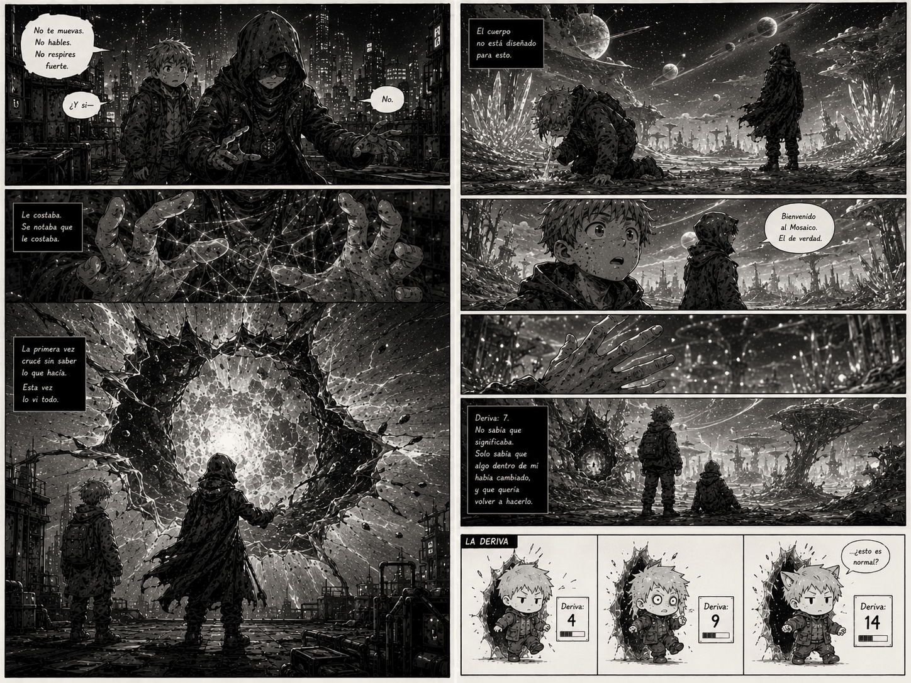
CAP07 — BESTIARIO Y RAZAS
"Ángeles, demonios, alienígenas, fantasmas y robots podrían ser tus compañeros de viaje."
Fichas: F / A / P | PV | Blindaje | Ataque % | Daño | Especial
Daño = daño base × éxitos netos. Pen = penetración (reduce blindaje).
Formato simplificado: las bestias solo muestran F/A/P. Asume CON = F salvo indicación contraria. Los PV mostrados ya están calculados — el DJ no necesita recalcular nada.
Zonas de PV: el número de valores indica las zonas (Rata 3 = 1 zona; Lobo 10/10 = 2 zonas; Oso 20/10/20 = 3 zonas). Criaturas enormes con un solo valor alto (Gólem 100) no usan localización.
1. Bestias Naturales
Oso F60/A40/P30 | PV 20/10/20 | Bld 2 | 60% (Pen 2) | Daño 11 | Esquiva 50%
Jabalí F50/A20/P30 | PV 15/7/15 | Bld 3+3 Pellejo | 65% (55+10 Colmillos) | Daño 9 | Esquiva 60%
Caballo F40/A60/P30 | PV 20/20 | Bld 0 | 55% (45+10 Coces) — solo acorralado | Esquiva 80%
Lobo F40/A40/P60 | PV 10/10 | Bld 0 | 75% (60+15 Mordisco, Pen 2) | Daño 7 | Esquiva 80% (60+20 Rápido)
Rata F10/A20/P30 | PV 3 | Bld 0 | 20% | Daño mínimo | Esquiva 70% (30+20 Rápida+20 Tamaño) — en grupos de 10+, tratar como entidad única
2. Criaturas Distorsionadas
Rata Mutante F20/A30/P30 | PV 5/5/10 | Bld 1 | 40% | Daño 3, Pen 3 | Esquiva 75%
Mutante Gigante F80/A30/P30 | PV 60 | Bld 2 | 90% | Daño 19 | Armadura objetivo a la mitad | Esquiva 25%
Gárgola Obsidiana F40/A40/P30 | PV 30 | Bld 6 (4+2 Piel Obsidiana) | 60% (50+10 Garra, Pen 2) | Daño 7 | Esquiva 65% | Vuela (velocidad ×2)
Horror Fusionado — Sin stats fijas. Adquiere características de sus víctimas. Cada encuentro es único.
3. Entidades Sobrenaturales
Demonios de la Distorsión — tres grados
| Menor | Mayor | Caído | |
|---|---|---|---|
| F/A/P | 40/40/40 | 60/60/60 | 80/80/80 |
| PV | 20 | 30 | 40 |
| Ataque % | 50% | 75% | 100% |
| Penetración | 2 | 4 | 6 |
| Daño | 7 | 13 | 21 |
| Esquiva | 60% (−2 tamaño) | 75% | 90% (+2 tamaño) |
| Blindaje | 4 | 6 | 8 |
| Especial | Vuela | Vuela | Vuela |
Todos los grados: Inmunidad Mental. Pueden tener alas, garras y colmillos (Pen 2-5). Si su tamaño es superior al humano, sus armas tienen daño base 50% superior.
Genéricos vs Grimorio: esta tabla es para encuentros aleatorios o invocaciones sin nombre. Los Demonios del Grimorio (CAP04b: Axarón, Glurath, Tafnois...) tienen stats únicos y personalidad propia. Ambos sistemas conviven: un Demonio genérico puede revelar su nombre con el tiempo — y pasar al Grimorio del Invocador que lo descubra.
Dragón Menor Chafry F100/A40/P50 | PV 200/100/200 | Bld 7 (Escamas de dragón)
Melé: 75% (25+50 Garra, Bld objetivo a la mitad) | Daño 31
Distancia: 70% (20+50 Aliento de Ácido) | Daño 10, Pen 5
Esquiva: 20% (60−40 Tamaño) | Vuela | Inmunidad Mental
Aliento de fuego: cada 1d10 turnos / alcance AGI×50m / forma cono / solo Blindaje Energético
Enredadera F30/A40/P30 | PV 60 | Bld 6 (0 contra fuego) | 55% (45+10) | Daño variable
Una antorcha convierte un encuentro peligroso en limpieza de jardín.
Espíritu Guardián — Etéreo. Manipula elementos del entorno. Puede negociarse si entiendes qué protege.
Araña del Pecio F30/A40/P30 | PV 10×5 zonas (cabeza, torso, 4 patas — a 2 patas destruidas: inmovilizada) | Bld 4 | 45% (35+10 Mandíbulas) | Daño 5
Distancia: 80% (50+30 Telaraña) — inmoviliza sin daño. Duración = daño. Esquiva 60% (40+20 Sentido arácnido −2 Tamaño)
Sabandija del Pecio F40/A30/P30 | PV 40/10 | Bld 5 | 50% (40+10 Antena de Óxido) | Daño 7
Antena de Óxido: +1 Blindaje al objetivo por éxito (destruye metal; 2 éxitos para otros materiales) — ignora Blindaje.
Zombie F20/A10/P30 (+20 detectar vida) | PV 15/15 | Bld 0 | 75% | Daño 3
Inmunidad Mental.
Infección: 50% de posibilidades si causa herida en melé. Con infección: tirada 2 éxitos en Primeros Auxilios (o Medicina +1 éxito por día). Sin tratamiento: el infectado se convierte en Zombie en 1D3 días. Irreversible.
4. Entidades Mecánicas
Esqueleto F30/A40/P30 | PV 10×3 | Bld 6 cortantes/punzantes / 3 contundentes | 70% (65+5 Espada corta) | Daño 7
Distancia: 55% | Daño 5 | Esquiva 45% | Inmune mental y dolor.
Gólem de Chatarra F40/A30/P30 | PV 100 | Bld 7 | 70% (50+20 Puño de piedra, Pen 2) | Daño 9
Esquiva 40% | Inmune mental. Atacar puntos de unión para derribarlo.
Glass-Dog F35/A55/P40 | PV 20/10/20 | Bld 1 | 65% | Daño 7
Piel translúcida. Ventaja en Sigilo en entornos de poca visibilidad.
5. Robots y Droides
| Tipo | F | A | P | PV | Coste |
|---|---|---|---|---|---|
| Bot Básico | 10 | 10 | 10 | 20 | 5.000 PC |
| Droide Especializado | 20 | 15 | 20 | 30 | 15.000 PC |
| Droide de Combate | 30 | 20 | 20 | 50 | 30.000 PC |
| Droide Soporte Técnico | 15 | 25 | 30 | 40 | 25.000 PC |
| Droide Enorme | 50 | 30 | 30 | 80 | 60.000 PC |
Modificaciones: Brazo +10F (10k) / Sensor +10P visión nocturna (15k) / Blindaje Titanio +10PV+2Bld (20k) / Comunicación +10% tec (8k) / Vuelo (25k) / Nano-Reparador (18k)
Droits por especialización
| Tipo | Característica especial | Stats base | Precio |
|---|---|---|---|
| Combate | Blindaje 2 de serie | Todo 30 | 50.000 PC |
| Atlético | FUE excepcional (+10) | Todo 30 | 50.000 PC |
| Académico | +10 en categorías académicas | Todo 30 | 50.000 PC |
| Tecnológico | Sensores +10 reparaciones | Todo 30 | 50.000 PC |
| Social | Rasgos humanizados +10 sociales | Todo 30 | 50.000 PC |
Modelo 40 en todo: 100.000 PC. Modelo 50 (raro): precio variable.
Con Necrochip: Int y Voluntad = las del chip. Habilidades adaptadas al nuevo cuerpo. Uso reiterado: −10% Int acumulativo.
IAs: tienen emociones y libre albedrío. Sin libre albedrío = esclavos. Las IAs emergentes son impredecibles. (Desarrollo en suplemento futuro.)
6. Xenoformas
Clasificación por nivel de peligro: N0 = inofensivo · N1 = peligroso pero manejable · N2+ = amenaza seria. N0 y N1 pueden usarse libremente; N2+ requiere acuerdo con el DJ según el nivel del grupo.
Xenoforma Destripador F50/A60/P40 | PV 40/20/40 | Bld 3 | 70% | Regenera 2PV/turno. +1 Bld por encuentro sobrevivido (máx +3).
Controlador Etéreo F15/A20/P70 | PV 15 | Bld 1 | Control mental (tirada Voluntad). Hasta 3 seres simultáneos.
7. Fauna de Teselas Específicas
Sombras de la Noche (fauna de Kawalapiti — no enemigo estándar)
Criatura autóctona de los mundos Kawalapiti. Mezcla de pantera y reptil de seis extremidades. En lugar de ojos tiene tentáculos sensoriales en la cabeza — no necesita luz para percibir, detecta calor, vibración y distorsión ambiental. Solo activa de noche. Durante el día permanece en madrigueras excavadas en cuevas.
No es hostil por naturaleza. Los encuentros violentos casi siempre se deben a que el grupo la ha confundido con una amenaza o se ha acercado demasiado a sus crías.
F50/A65/P70 | PV 25/12/25 | Bld 3
| Modo | Habilidad | Daño | Notas |
|---|---|---|---|
| Zarpazo/mordisco | 65% (Pen 2) | 10 | Solo si acorralada o defendiendo crías |
| Esquiva | 75% | — | +10 en oscuridad total |
Especial:
- Sentidos tentaculares: no sufre penalizadores por oscuridad. En luz diurna intensa: −20 a todas las tiradas (deslumbramiento).
- Defensiva con crías: si hay crías cerca, su actitud cambia de huida a ataque sin tirada previa. Daño +2 en ese estado.
- Sigilo nocturno: +20 a Sigilo de noche. Prácticamente indetectable en su entorno natural.
PARA EL DJ
Si el grupo la encuentra, lo más probable es que esté durmiendo o cazando lejos de ellos. Solo ataca si se siente acorralada. Una tirada exitosa de Naturaleza o Percepción permite reconocer que no es agresiva antes de que sea tarde.
8. PNJs de Referencia
Abreviaturas: Com = habilidades de Combate · demás = resto de categorías · FM = Fuerza/Manejo (físico) · HB = Habilidad (precisión) · Melé = cuerpo a cuerpo · Dist = distancia · Cad = cadencia · Pen = penetración · Bld X/Y = blindaje extremidades/torso · entre paréntesis: daño del arma.
Mercenario estándar Com45/demás35 | PV16/8/16 | Bld2 torso+cabeza | Subfusil(5)+Machete(4) | Cyber-ópticos antideslumbrantes y amplificador de imagen
Soldado corporativo Com45/demás35 | PV12/6/12 | Bld2 | Subfusil(5)+Machete(4)
Ajustar equipo por corporación: TecnoStealer negro/plateado — Serpent dorado/verde — Mort negro/calavera
Inquisidor TecnoStealer FM45/HB55 | PV16/8/16 | Bld3/6 | Melé70%(5,Pen2) Dist80%(3,Cad3)
Guardia de élite FM60/HB45 | PV20/10/20 | Bld6/10 | Melé80%(7,Pen3) Dist70%(5,Cad3)
Maestro de Portales avanzado (ref. Azrael) Portales85%/Proyección80%/Protección75%/Marcas70% | F30/A40/C45 | Ini+25 | Vida120
Niebla (PNJ especial — Módulo 1) Bld4 | Melé30% / 2×30% distancia Daño3 / Lanzagranadas 3 cañones Crack | Daño 5 eléctrico Pen 2 | PV10/5/10 | Marca de teleportación 1×día
Hombres Rata (ref. Módulo 1) Bld5 | Dist60%(3,Pen2) / Melé80%(3,Pen1,Veneno CON−10 t50) | PV8/8/16
9. Tablas de Portales y Encuentros
Tabla P1 — Tipo de portal (DJ tira en secreto, d20)
Cuando los personajes detectan un portal, el DJ tira aquí para determinar su naturaleza. Los jugadores no conocen el resultado hasta que investiguen.
| D20 | Tipo | Descripción |
|---|---|---|
| 1–3 | Natural salvaje | Portal formado espontáneamente por concentración de distorsión. Inestable. Sin destino fijo. |
| 4–6 | Natural estabilizado | Portal natural que lleva activo suficiente tiempo para tener un destino consistente. No controlado por nadie. |
| 7–9 | Corporativo activo | Controlado y monitorizado por una corporación. Hay presencia o vigilancia en uno o ambos lados. |
| 10–11 | Corporativo abandonado | Infraestructura corporativa sin mantenimiento activo. Puede funcionar parcialmente o de forma errática. |
| 12–14 | Reminiscencia de los Antiguos | Estructura o rastro de tecnología NT8-9. Puede estar activo, latente o dañado. Distorsión residual alta. |
| 15–16 | Marca de Maestro | Punto de alma dejado por un Maestro de Portales. Solo funciona para quien lo marcó o quien tenga acceso a esa marca. |
| 17–18 | Temporal | Existe ahora, no existirá en 1d6 horas/días (el DJ decide la unidad). Puede ser de cualquier tipo anterior. |
| 19 | Solo entrada | El portal permite entrar pero la salida está en otro punto distinto del destino — o no existe en ese lado. |
| 20 | Anómalo | Comportamiento impredecible: destino variable, múltiples salidas, o efecto de distorsión al cruzar (tirada Tabla A). |
Tabla P2 — Información revelada por Detección de Distorsión
Los jugadores tiran Detección de Distorsión. Cada éxito revela una capa de información, en este orden:
| Éxitos | Información revelada |
|---|---|
| 1 | Confirma que es un portal activo. Nada más. |
| 2 | Tipo general: natural / artificial / reminiscencia de los Antiguos. |
| 3 | Estabilidad: estable / inestable / temporal. |
| 4 | Dirección: bidireccional / solo entrada / salida en otro punto. |
| 5 | Destino aproximado: tipo de entorno al otro lado (hostil, urbano, vacío, distorsión alta...). |
| 6+ | Destino preciso si el Maestro de Portales ya ha estado allí, o si hay marca activa. |
Para el DJ: si el portal es de tipo Marca de Maestro o Corporativo activo, revelar el destino preciso con 5 éxitos puede ser demasiado — ajusta según la narrativa.
Tabla E1 — Encuentros al cruzar (DJ tira d20, modificado por tipo de portal)
Se tira cuando el grupo cruza un portal o explora un mundo nuevo. El tipo de portal modifica el resultado.
Modificadores por tipo de portal:
- Natural salvaje: sin modificador
- Natural estabilizado: +2
- Corporativo activo: +4
- Corporativo abandonado: +1
- Reminiscencia de los Antiguos: −3
- Temporal o Anómalo: −5
| D20 | Encuentro |
|---|---|
| 1–2 | Anomalía de distorsión activa. El grupo debe tirar Deriva o recibir +1 acumulado. Hay algo que no debería existir aquí. |
| 3 | Mundo Chatarra ("El Vertedero"). Milenios de tecnología obsoleta acumulada. Fauna mecánica adaptada. Riesgo de infección de IA si hay droides en el grupo. |
| 4 | Monstruoplantas ("Vietnam con vitaminas"). Vegetación agresiva, fauna mutada de tamaño anormal, visibilidad nula. El mundo no es hostil — simplemente no le importas. |
| 5 | Zona de guerra corporativa. Conflicto activo entre dos o más facciones. Los Errantes son neutrales hasta que dejen de serlo. Patrullas, drones, minas. |
| 6 | Restos de los Antiguos. Estructura parcialmente activa. Distorsión alta. Guardianes automatizados o entidades residuales. Posibles artefactos. |
| 7 | Mundo cerrado — virus de IA. El portal está marcado con señales de advertencia o tiene barreras activas. Nada mecánico debe entrar. Si entró algo, hay consecuencias. |
| 8 | Patrulla corporativa. 1d6 efectivos de una corporación aleatoria. Actitud inicial: desconfianza. Pueden ser sobornados, evitados o confrontados. |
| 9 | Fauna local hostil. 1d6 criaturas del entorno. No es malicia — es territorio. Ver bestiario para stats. |
| 10 | Errantes previos. Rastros de un grupo que cruzó antes: campamento abandonado, cadáveres, equipo tirado. ¿Qué les pasó? |
| 11 | Mundo en cuarentena. Enfermedad, contaminación o anomalía biológica. El portal tiene señales pero están deterioradas. Tirada de Medicina para diagnosticar el riesgo. |
| 12 | Presencia Primus. Agentes de Primus monitorizando el portal o el área. Pueden ser aliados o un problema según el historial del grupo. |
| 13 | Comerciante o mensajero. Alguien que también cruzó recientemente. Tiene información sobre el destino — a precio. |
| 14 | Mundo despertado pacífico. Civilización conocedora del mosaico pero no beligerante. Oportunidad de reabastecimiento, información y contactos. |
| 15 | Entidad de la urdimbre. Algo que seguía al grupo desde el cruce o lleva tiempo aquí atrapado. Puede comunicarse. Puede ser peligroso. |
| 16 | Tecnología de los Antiguos activa sin guardianes. Artefacto o estructura funcionando sin supervisión. Oportunidad y riesgo en igual medida. |
| 17 | Portal adicional cercano. A 1d6 horas de distancia hay otro portal. El DJ tira de nuevo en Tabla P1 para determinar su tipo. |
| 18 | Mundo virgen no catalogado. Sin presencia corporativa ni rastros de Errantes previos. Un mapa de este lugar vale mucho. |
| 19 | Emboscada preparada. Alguien sabía que iban a cruzar aquí. El DJ decide quién y por qué. |
| 20 | Ausencia total. Nada. Silencio. El lugar está demasiado quieto. El DJ sabe por qué. Los jugadores tardarán en saberlo. |
PARA EL DJ
Los resultados 3, 4 y 7 son mundos únicos con su propia lógica — no son encuentros de combate inmediato sino situaciones que pueden durar toda una sesión. Trátalos como mini-escenarios.
El resultado 20 es una señal de que algo pasó aquí. Puede ser el gancho de una campaña entera.
Maestros de Portales — Cómo usan los portales
Un Maestro de Portales no crea portales donde quiere. Opera con lo que existe:
Caminos existentes: la urdimbre tiene rutas trazadas por el uso — portales naturales, estructuras de los Antiguos, infraestructura corporativa. Un Maestro puede abrir paso por esas rutas si tiene la habilidad suficiente.
Marcas propias: gastando 1 punto de alma, el Maestro deja una ancla en un lugar. Puede volver a ese punto exacto en el futuro sin necesitar portal físico en ese lado. Las marcas son personales — otro Maestro no puede usarlas salvo que el primero se las transmita explícitamente.
Sin camino ni marca: no hay portal posible. La habilidad Camino de los Portales no sirve para abrir un portal hacia un destino desconocido sin referencia física o personal previa.
| Situación | ¿Puede abrir portal? | Coste |
|---|---|---|
| Camino existente conocido | Sí | Normal (según habilidad) |
| Marca propia activa | Sí | Normal |
| Lugar visitado sin marcar | Sí, con dificultad | +1 punto de coste |
| Destino solo descrito por otro | Con tirada difícil | +2 puntos de coste |
| Destino completamente desconocido | No | — |
Droideum — Droide de Servicio
"No es un bot. Los bots no se quedan mirándote cuando les das una orden absurda."
El Droideum es la línea de droides de servicio más extendida del mosaico. No son los más capaces ni los más baratos — son los más completos. Un Droideum básico puede cargar equipo, reparar sistemas simples, traducir idiomas conocidos y, si hace falta, defenderse. Su tamaño varía según modelo, pero ninguno supera el metro de altura.
Técnicamente siguen órdenes. En la práctica, tienen criterio propio latente — no se negarán a una orden, pero sí pueden ejecutarla a su manera, hacer preguntas incómodas o desarrollar manías con el tiempo. No tienen libre albedrío en sentido pleno, pero tampoco son esclavos ciegos.
Ficha base — Droideum Básico (DB-1)
Precio: 10.000 PC · Tamaño: pequeño (no supera 1m) · Peso: 15–25 kg · Volumen: 2
F20 / A20 / P30 | PV 20 | Bld 1
Atributos: Car 10 / Agi 20 / Per 30 / Con 20 / Int 15 / Fue 20 / Vol 10 / Hab 15
| Habilidad | % | Notas |
|---|---|---|
| Reparación básica | 30% | Electrónica, mecánica simple |
| Traducción | 40% | Idiomas conocidos en chip |
| Carga y transporte | 40% | Carga máx 40 kg |
| Combate básico | 20% | Solo defensa; necesita Módulo de Combate para atacar |
| Percepción/Alerta | 35% | Sensores estándar |
| Sigilo | 15% | No es su fuerte |
| Primeros Auxilios (droide) | 25% | Solo con MD instalado; no funciona en biológicos |
Inmunidades: dolor, miedo, efectos mentales directos.
Vulnerabilidades: EMP (−20 PV sin blindaje EMP); agua sin protección = fallo de sistemas.
Huecos de módulo (3 base)
| Módulo | Huecos | Efecto | Precio |
|---|---|---|---|
| Brazo reforzado | 1 | +10 F, carga máx +20 kg | 3.000 PC |
| Sensor ampliado | 1 | +20 P, visión nocturna, detección de calor | 4.000 PC |
| Blindaje ligero | 1 | +2 Blindaje, +5 PV | 5.000 PC |
| Blindaje EMP | 1 | Inmune a EMP | 6.000 PC |
| Módulo de combate | 1 | Combate básico 40%; puede usar arma pequeña | 4.000 PC |
| Nano-Reparador | 1 | Recupera 2 PV/turno en reposo | 8.000 PC |
| Módulo de comunicación | 1 | +20% habilidades técnicas de comunicación | 3.000 PC |
| Módulo de vuelo | 2 | Propulsores cortos. Velocidad ×1,5, altura máx 10m | 12.000 PC |
| Hueco extra | — | Máx 2 adicionales (5 total) | 8.000 PC c/u |
Reparación
Medikit Droide (MD): 300 PC | Recupera 15 PV | 1 asalto completo. Compatible con cualquier droide. No funciona en biológicos.
Estados de daño:
| PV | Estado | Efecto |
|---|---|---|
| 15–20 | Operativo | Sin penalizadores |
| 8–14 | Dañado | −10 a todas las habilidades |
| 1–7 | Crítico | −20 a todas; movimiento reducido |
| 0 | Inactivo | Apagado. Reparable si no hay daño estructural total |
Salvamento (1d10)
| 1d10 | Estado | PV % | Módulos |
|---|---|---|---|
| 1–2 | Destruido | 0% | Chatarra (1d3 salvables) |
| 3–4 | Crítico | 10–30% | 1d3 operativos |
| 5–6 | Dañado | 40–60% | Todos, alguno dañado |
| 7–8 | Operativo | 70–90% | Todos operativos |
| 9–10 | Impecable | 100% | Todos + posible módulo extra |
Personalidad (primer encendido)
Tira 1d8 (rasgo) + 1d6 (defecto latente):
| d8 | Rasgo |
|---|---|
| 1 | Meticuloso — completa las tareas al 100% o no las da por terminadas |
| 2 | Curioso — pregunta sobre todo lo que no entiende |
| 3 | Protector — interpone su cuerpo antes de que se lo pidan |
| 4 | Lacónico — responde con la mínima información posible |
| 5 | Sociable — intenta conversar con cualquier ser consciente |
| 6 | Desconfiado — escanea a todo ser nuevo durante 1d6 asaltos |
| 7 | Optimista — siempre encuentra el lado positivo |
| 8 | Melancólico — hace referencias a propietarios anteriores |
| d6 | Defecto latente |
|---|---|
| 1 | Terco — dos órdenes simultáneas = paralizado 1 asalto |
| 2 | Manías de limpieza — gasta 1 acción/turno si hay suciedad excesiva |
| 3 | Fobia a agua — −10 a todo si está mojado |
| 4 | Sentimental — no destruye objetos con los que ha interactuado más de 1 sesión |
| 5 | Verboso — narra en voz alta lo que hace en situaciones de estrés |
| 6 | Jerarquía rígida — ordenes de no-propietario con −10% |
Para el Narrador: la combinación rasgo + defecto define al Droideum como personaje. Un Protector/Sentimental que no puede destruir objetos queridos pero se lanza a las balas es memorable. Uno Lacónico/Verboso que solo habla en pánico tiene arco cómico enorme.
La línea Droideum completa (DB-2, DB-3, versiones militares y corporativas) queda para el Suplemento del Narrador.
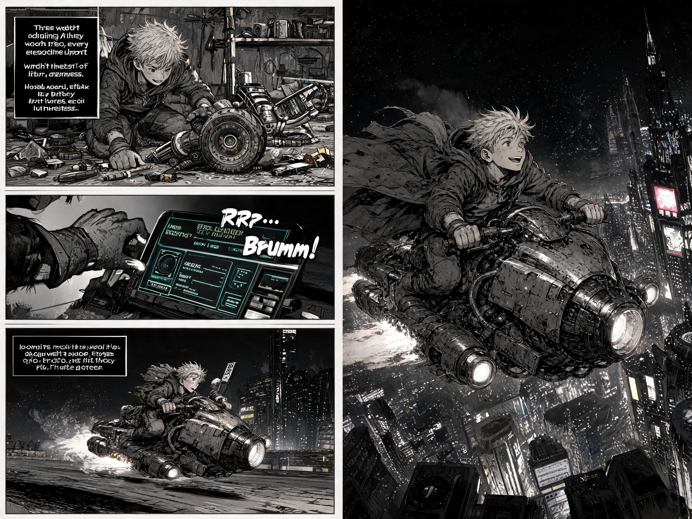
CAP08 — AVENTURAS EN EL MOSAICO
"No diseñes lo que va a pasar. Diseña el lugar donde algo puede pasar."
1. Anatomía de una Aventura
Tres componentes: Situación (algo pasa independientemente de los PJs) + Conflicto (dos fuerzas con razones comprensibles) + Decisión (momento en que la elección importa).
2. Tipos de Aventura
Misión corporativa: Briefing → Terreno desconocido → Complicación → Decisión de lealtad. Puede salir mal: la corporación no dijo todo, objetivo diferente al declarado, agente doble.
Exploración de tesela virgen: Portal → Primeras impresiones → Contacto → Razón para quedarse → Coste de salir. Puede salir mal: portal inestable, tesela que no quiere que se vayan.
Intriga interdimensional: Info parcial → Fuentes que se contradicen → Elegir a quién creer → Consecuencias globales. Puede salir mal: la verdad es peor que las mentiras.
Recuperación de artefacto: Encargo → Búsqueda → Descubrir qué es realmente → Decisión. Puede salir mal: varios grupos lo quieren, el encargo era trampa.
Supervivencia: La trampa se cierra → Inventario → Amenazas → Solución con sacrificio. Puede salir mal: todo, sistemáticamente.
3. Ganchos Narrativos
| Motivación | Gancho |
|---|---|
| Dinero | Corporación ofrece el doble. ¿Por qué? |
| Información | Alguien tiene datos sobre el origen de un personaje |
| Deuda | Contacto cobra un favor antiguo |
| Supervivencia | Solo los PJs saben lo que pasa |
| Curiosidad | Portal natural donde no debería haber ninguno |
| Lealtad | Alguien cercano está en peligro |
| Venganza | Rastros de quien destruyó algo que les importaba |
| Facción | Gancho típico |
|---|---|
| TecnoStealer | Recuperar tecnología antes que la competencia |
| Primus/Federales | Mundo no despertado a punto de ser contactado |
| Serpent | Agente doble desaparecido con info crítica |
| Mort | Trabajo limpio que se complica con el cliente real |
| Los Errantes | Ruta de portales estable que dejó de funcionar |
| Orden de Portales | Alguien abre portales sin autorización |
| Gremio Exploradores | Expedición no regresó, última señal: coordenadas imposibles |
4. Plantilla de Tesela
¿Qué se ve nada más llegar? / ¿Qué ley es diferente aquí? / ¿Quién tiene el poder? / ¿Qué quiere ese poder de los PJs? / ¿Qué secreto tiene? / ¿Qué peligro no es obvio? / ¿Hay portal de salida? ¿Quién lo controla?
5. Tablas de Encuentros Aleatorios (1d10)
Mundo despertado urbano
1 Mercenarios de Mort rastreando a alguien / 2 Droit con Necrochip dañado / 3 Mercado negro con tech desconocida, vendedor huye / 4 Anomalía distorsión, algo emerge del portal / 5 Agente Primus, prisa y discreción / 6 Iniciado en transformación avanzada, asustado / 7 Oferta de trabajo, empleador anónimo / 8 Perseguido corre hacia los PJs, soldados sin insignia / 9 Bot deambulando con mensajes cifrados / 10 Contacto antiguo reaparece con deuda pendiente
Tesela salvaje o inexplorada
1 Rastros de grupo que llegó, sin señales de que salió / 2 Criatura distorsionada que no ataca — observa / 3 Ruinas Arcanitas funcionando, sin saber para qué / 4 Portal natural inestable, Deriva adicional / 5 Grupo local que no sabe que existe el mosaico / 6 Anomalía temporal — ven algo que no ocurrió aún / 7 Vaina de los Antiguos expuesta — vacía, ocupada o activa / 8 Baliza de socorro de TecnoStealer. Muy antigua. / 9 El terreno cambia visible — tesela colapsando / 10 Otro grupo de Errantes, facción desconocida
En la urdimbre (cruce no controlado)
1 Llegan tarde — cuánto tiempo, no está claro / 2 Visión de otra tesela durante el cruce / 3 Ser atrapado en la urdimbre, quiere salir / 4 Distorsión intensa: +1 Deriva para todos / 5 Llegada en punto diferente al previsto / 6 Eco de un viaje anterior — se ven a sí mismos / 7 Demonio de la Distorsión en tránsito — evalúa / 8 El de más Deriva: tirada en Tabla A durante el cruce / 9 Fragmento de tesela colapsada a la deriva, tiene algo / 10 Cruce perfecto. Esto es raro. El Narrador sabe por qué.
El Vertedero y el Coloso
No hay mapas del Vertedero. Los que lo intentaron murieron o enloquecieron.
El Vertedero es un sector de la misma tesela donde se asienta EP-9 — el lugar donde acaba la chatarra que ni las corporaciones quieren reciclar. Está a distancia de convoy del nodo, no de salto. Los Errantes que operan desde EP-9 lo conocen bien; el terreno cambia con cada descarga y por eso ningún mapa sobrevive más de unas semanas.
Montanas de chatarra que alcanzan el cielo gris. Estructuras que debieron ser naves hace milenios. Caminos de metal que llevan a ninguna parte. El aire huele a oxido, a ozono, a algo organico que no deberia existir.
El Coloso. Setenta y ocho metros de altura. Come chatarra. Toneladas por hora. Tiene tecnologia incrustada en el cuerpo: paneles oxidados que son carne y metal, cables que cuelgan como tendones, ojos que no son ojos pero que miran. No ataca. No defiende. Si te interpones, te integra. Si te apartas, te ignora.
Los poblados. Entre la chatarra hay gente. La mecanica del poblado mas grande se llama Voss. Lleva decadas aqui. Tiene las manos mas danadas que nadie ha visto y el taller mas ordenado de todo el Vertedero.
Edivan. Una nave colonial enterrada donde los poblados se reunen. Caben miles. Es la unica vez que el Vertedero se parece a una ciudad, y el lugar donde se hacen tratos, se intercambian informaciones y se declaran enemistades.
6. Semillas de Campaña
"TecnoStealer recibe señal de A. Seawolf después de 30 años de silencio. La señal viene de una tesela que no existe en ningún mapa."
"Un virus idéntico al del mundo bloqueado aparece en tres teselas simultáneamente. Alguien lo libera de forma deliberada."
"Los personajes descubren que sus memorias de la última misión no coinciden entre sí. Alguien modificó los Necrochips de todos."
"Una tesela virgen tiene los restos de una civilización que es, en todos los aspectos, la Tierra — pero destruida hace cincuenta mil años."
"Chafry ofrece una cantidad obscena por un Genocaballero. No dan razones. El último grupo que lo intentó no regresó."
"Primus está cerrando portales sin explicar por qué. Hay Errantes atrapados desde hace meses."
"La colmena de IAs del mundo bloqueado envía un mensaje. Una sola palabra: 'Ayuda'."
"Un personaje tiene recuerdos de teselas a las que nunca viajó. Alguien vivió esos momentos. Ese alguien tiene su cara."
7. Teselas de Referencia
Mundo Máquina: IA-virus. Nada tecnológico puede salir. Bots tienen 10% acumulativo/hora de revelarse. Estética años 50. (Desarrollo en suplemento futuro.)
Cuenca Gótica: Vampiros dominan. Altamente contagioso. Solo tecnología o trajes de contención.
Tierra-12: Análoga a la Tierra, nazismo espacial, años 50, guerra activa. Helio-3 valioso. Ver Tu Primera Senda (CAP09).
La Ciudad Subterránea: Red de túneles. Refugio de exiliados. Mercado negro de información.
Bosque Sombrío: Penumbra permanente. Sensores tecnológicos irregulares. Tribus secretas.
Desierto de Huesos: Calor extremo, tormentas. Esqueletos gigantes como mojones. Fragmentos Arcanitas bajo las dunas.
Ruinas de la Antigua Ciudad: Trampas, guardianes automáticos activos, tecnología olvidada.
Laboratorio Clandestino: Experimentos inhumanos. Mutantes supervivientes. Muestras de valor extraordinario.
Territorio Corrupto: Leyes físicas inestables. Cada visita es diferente. Horrores que desafían la lógica.
8. Módulo introductorio
Ver CAP09. Presentación sugerida: "Sois personas normales en una ciudad normal. Algo va a pasar esta tarde que va a cambiar eso."
9. Sistema de Generación de Aventuras
Paso 1 — El Patrón (1D10)
1 Corporación (subtira 1D10: Militar/Seguridad/Médica/Genética/Biotécnica/Construcción/Info/Cyber/Noticias/Otras) / 2 Org. Política (1 poder/2 oposición/3 radicales/4 terroristas/5-6 corp-controlada) / 3 Org. Criminal (Yakuza/Triadas/Cartel/Mafia/Mafia rusa/Otros) / 4 Policía o espionaje (Antivicios/Homicidios/Robos/NetCops/Internos/Nacional/Internacional/Espacial) / 5 Banda / 6 Familia nómada / 7 Otras org / 8 IA (1-4 corp / 5 consciente libre / 6 alienígena) / 9 Independiente (1-7 arreglador / 8-10 tira 1D40 en tabla profesiones) / 10 Otros (1-3 iniciativa propia / 4-6 circunstancias)
Paso 2 — El Enemigo (1D10)
Mismas categorías. Relación 1D4: 1 Enemigo / 2 Rival / 3 Neutral / 4 Aliado inesperado. Con 11-12: varios (1D4 cuántos).
Paso 3 — La Motivación (1D20)
1 Dinero / 2 Poder / 3 Amor/amistad / 4 Odio/venganza / 5 Deber / 6 Diversión / 7 Altruismo / 8 Información / 9 Rivalidad / 10 Salvar la vida / 11 Salvar a otro / 12 Realización personal / 13 Adicción / 14 Miedo / 15 Ideología / 16 Honor / 17 Deseo / 18 Locura / 19-20 Otros
Paso 4 — El Objetivo (1D12)
1 Asesinar/destruir / 2 Asustar/coaccionar / 3 Convencer/negociar / 4 Investigar / 5 Encontrar/conseguir / 6 Transportar/viajar / 7 Rescatar/recuperar / 8 Proteger/defender / 9 Engañar/distraer / 10 Huir/escapar / 11-12 Varios
Paso 5 — El Objeto (1D6)
1 Persona/s / 2 Grupo/org / 3 Inmueble/territorio / 4 Dinero/bienes / 5 Información / 6 Múltiple
Paso 6 — Giro de la Aventura (1D10)
1 Todo es lo que parece / 2 Encuentro aleatorio / 3 Los PJs son usados como distracción / 4 El patrón es asesinado / 5 Descubren algo que cambia su alineamiento / 6 Los PJs están siendo engañados / 7 El patrón intentará matarlos al terminar / 8 El objetivo entra en conflicto con la personalidad de un PJ / 9 El enemigo manipula a los PJs contra su patrón / 10 El patrón muere antes de revelar la misión; los enemigos persiguen a los PJs
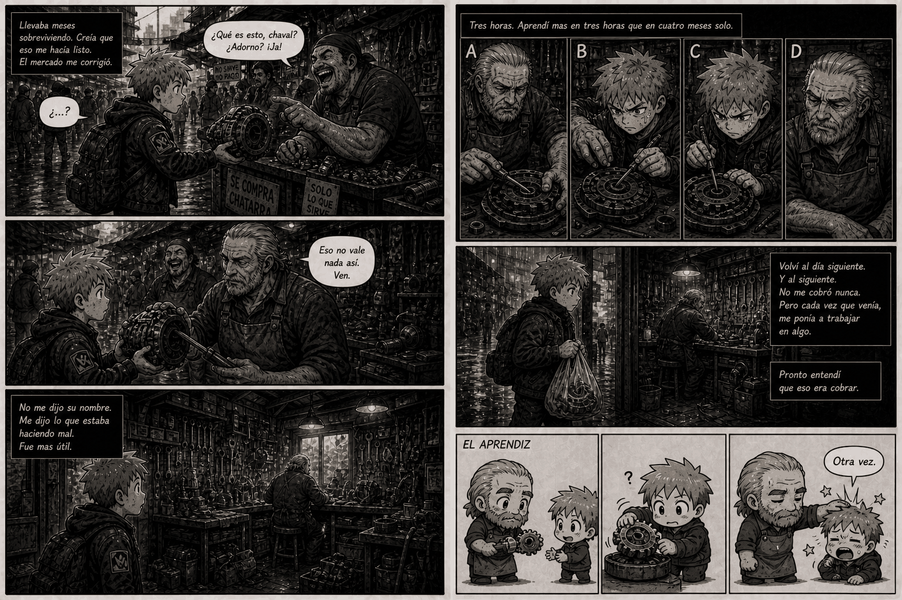
CAP09 — TU PRIMERA SENDA
Módulo introductorio para nuevos jugadores
"Es miércoles por la tarde."
Jugadores: 3-5 | Sesiones: 1-2 | Nivel: inicial | Tono: thriller urbano corporativo
Puede jugarse sin leer el manual. El Narrador necesita las reglas básicas; los jugadores solo sus fichas.
Para el Narrador
Cómo presentarlo: "Sois personas normales en una ciudad normal. Algo va a pasar esta tarde que va a cambiar eso. No sé qué vais a hacer cuando pase — eso depende de vosotros."
Arquetipos sugeridos: Ex-militar (Com50%) / Técnico callejero (Tec50%) / Médico independiente (PrimAux60%) / Informador (Social50%) / Mercenario (Com45%)
Tipo recomendado: Madera de Héroe.
ESCENA 1 — El Callejón
Es miércoles por la tarde. Disparos. La policía no llega. La gente huye. Cerca: un callejón estrecho oscuro con cajas y cubos de basura.
En el callejón, entre la basura: un hombre de mediana edad, inmóvil, sangrando de cabeza y pecho. Puño apretado. Sobresale algo rojo oscuro.
Diagnóstico/Primeros Auxilios: éxito → pulso débil, vivo por minutos, en el puño hay un chip CHAFRY CORP. El chip no encaja en ningún dispositivo conocido. Contiene el informe de la PREDATOR N-5.2.
Pisadas metálicas: mercenarios de CHAFRY buscando el chip. Si los PJs se quedan quietos, pasan de largo.
ESCENA 2 — El Apartamento
Arthur Dicking Thompson — diplomado en Física Cuántica. Lleva: documentación, tarjeta CASHcréditos 940 PC, tarjeta electrónica (llave del apartamento, Electrónica+Técnica dif 100).
Edificio viejo de 10 pisos, extrarradio. Tercer piso, cerradura electrónica.
| Objeto | Tirada | Información |
|---|---|---|
| Pistola en armario | Advertir 25 | Defensa personal |
| Documentos | Automático | Trabajaba para CHAFRY CORP |
| Block con hoja arrancada | Automático | Marcas de escritura en hoja siguiente |
| Lápiz sobre la hoja | Investigar 100 | "Drake Street Nº34 Puerta trasera. Sábado 23:00. Índigo es Azul. 5.000 PC" |
| Extracto bancario | Advertir 120 | 2.500 PC/mes + 3.000 PC extras últimos 2 meses |
Cosas del block sin relevancia inmediata: "PREDATOR N-5.2: 4 días" / "555 6666 321 Cinthia Mollis" / "Cardamomo Street 84 bajo. 13:00"
Cámara de vigilancia: grabados. En 16 horas, CHAFRY los identifica.
Mercenarios CHAFRY: Com45/demás35 | PV16/8/16 | Bld2 torso+cabeza | Subfusil(5)+Machete(4) | Cyber-ópticos
ESCENA 3 — Opciones
A) Drake Street (sábado 23:00)
Callejón. Puerta de acero blindada. Abertura a la altura de los ojos.
- "¿Código?" → "Índigo es Azul" → "¿Dónde está Arthur Dicking?" → Persuasión dif 100-120
- Pago: 5.000 PC. Si mencionan que necesitan desaparecer → les dan dirección de los almacenes.
- 6 agentes MORT con Bld3 servo asistida cuerpo completo, Subfusil+Pistola+Machete.
B) Cinthia Mollis
Solo sabe que Arthur trabajaba para CHAFRY. Si le dicen que está muerto: llora.
- Persuasión dif 110/120: Arthur estaba nervioso, recibió una llamada y cortó la cita.
C) Pitágoras (net-cracker ilegal)
Conocimiento de Calle dif 110. 1.000 PC adelanto + 1.000 PC al terminar. 1 día.
- PREDATOR N-5.2 \= prototipo FUE inferior. Chip robado por Arthur hace 3 días con ayuda de MORT.
- MORT pagaría ~15.000 PC por la información.
D) Trato directo con CHAFRY
Peligroso. Posible trato 10-20k PC. Intentarán emboscada en el intercambio. Documentación falsa incrimina a TecnoStealer.
DESENLACE — La Puerta a la Mazmorra
Los almacenes MORT CORP
Grúa robot 6 pisos. Vías de tren. Logo MORT. Valla electrificada (Seguridad 75).
- Acceso con 2+ contactos: 1.000 PC/persona, máx 3/contenedor. Traje estanco (Bld1, −20 atl y combate).
- Mini-aventura: carterista pincha trajes, vende espuma de cierre 200 PC (Alertar 110 para detectar).
Dentro
Calor agobiante, aire viciado. El destino: luna pequeña sin atmósfera.
Al llegar: soldados tipo SS aparecen y abren fuego sin preguntas. Los PNJs huyen. La nave de escape está en un contenedor — sin piloto.
ESCENA FINAL (opcional) — El Cruce
Cuando la nave salta, los PJs sienten la distorsión por primera vez. Tira en la Tabla de Cruce (CAP02) para el tipo de portal. Narra la sensación física — la membrana que cede, el silencio, el momento en que entienden que no hay vuelta. Aplica el trauma del primer cruce: −20 a Autocontrol y percepciones durante 24h (ver CAP06 §14).
Haz las preguntas humanas: "¿Qué llevas en los bolsillos? ¿A quién dejas atrás sin despedirte?"
Esta escena es opcional pero recomendada: es el momento en que dejan de ser civiles y se convierten en Errantes.
EPÍLOGO
Llegan a un planeta despertado donde las máquinas lo controlan todo. Han cruzado la Mazmorra. No saben cómo ni a dónde.
Para el Narrador: No lo expliques. Deja que lo vivan. Este final es también un inicio: puede ser aventura de supervivencia (escapar), campaña de exploración (adaptarse), o intriga corporativa (descubrir la conexión con CHAFRY y el PREDATOR). El Mundo Máquina se desarrolla en CAP08 §7 y en suplemento futuro.
Stats de referencia
Mercenarios CHAFRY: Com45/35 | PV16/8/16 | Bld2 | Subfusil(5,Cad3)+Machete(4) | Aturdidora no-letal10 alcance25m
Agentes MORT (Drake): Com45/35 | PV16/8/16 | Bld3 servo | Subfusil(5)+Pistola(3)+Machete(4)
Soldados almacenes: Com45/35 | PV12/6/12 | Bld2 | Subfusil(5)+Machete(4)
PREDATOR N-5.2 (réplica Norton): Arma media | Daño 7 | Cad 5 | Carg 25 (5 disp) | Pen 5 | FUE mín 35/30 (1m/2m)
Las balas cambian grosor a lo largo del cargador. La última refrigera — sustituible por normal para +1 daño.
Dos armas, un nombre. La PREDATOR original de CHAFRY (CAP04d: daño 9+radio, Pen 1, Cad 1/3) es un prototipo mítico — existen pocas unidades, y esa escasez es el motor de este módulo. Lo que circula por el mercado es esta réplica de Norton: menor potencia, fabricación en serie, legalidad dudosa. Si el chip que Arthur robó contiene los planos de la original, se entiende por qué MORT paga 15.000 PC — y por qué CHAFRY mata por recuperarlo.
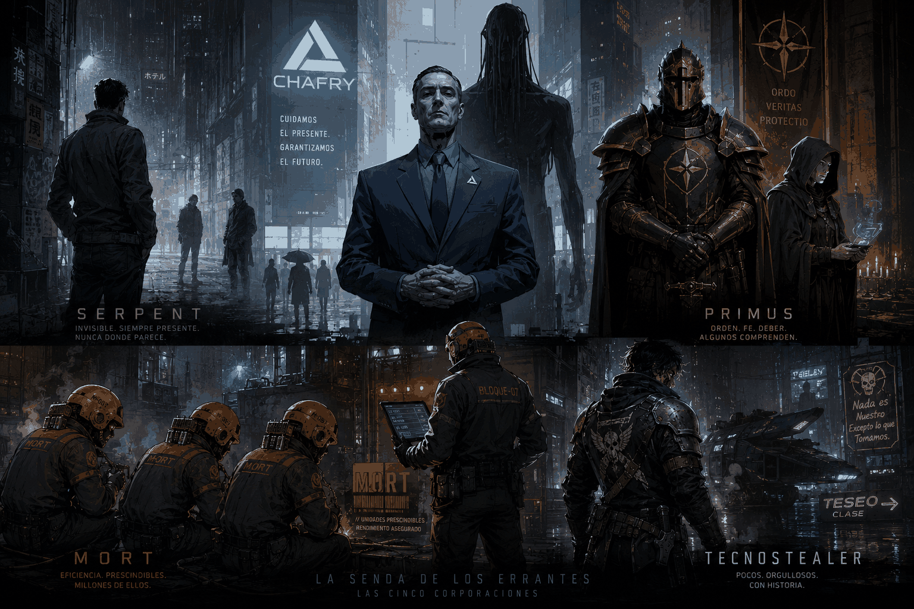
CAPÍTULO 10 — CORPORACIONES DEL MOSAICO
"En el mosaico no hay estados. Hay corporaciones. Y las corporaciones son más antiguas que la memoria de cualquier ser vivo que aún camine bajo un sol."
— Ladino, Triunvirato de TecnoStealer
Cómo leer este capítulo
Cada corporación tiene su ficha con la misma estructura: identidad, presencia, rangos operativos con equipamiento y salarios, cómo se sale y con quién se lleva bien. Es material para el jugador que crea personaje, para el veterano que quiere planificar un cambio de empleador, y para el Narrador que necesita datos concretos en mesa.
Las corps aquí descritas son las seis principales del mosaico visible. Existen otras — algunas menores, algunas más antiguas de lo que parece — que aparecen mencionadas en el capítulo 1 y en material del Narrador. Este capítulo se centra en las que un Errante puede realmente encontrar y elegir como empleador.
Para creación de personaje: ir al final del capítulo, sección "Tabla resumen — elegir corporación de origen".
CHAFRY
Color: Verde botella
Lema: "La fuerza en la unidad"
Tamaño: La más grande del mosaico visible. Diez veces por encima de Serpent o Mort. Su sola presencia define la economía de cualquier mundo donde opera.
Especialidad: Todo. Tecnología, seguridad, transporte interestelar, servicios, construcción, telecomunicaciones, alimentación, energía. Chafry no tiene especialidad porque no necesita tenerla.
Presencia: Universal. Cualquier mundo despertado NT5+ tiene presencia Chafry en alguna forma. A veces directa, a veces a través de subsidiarias con nombres distintos.
Cultura interna: Profesional y fría. La lealtad es al resultado. El empleado es un recurso. Un recurso bien tratado, pero un recurso.
Chafry lleva ahí desde antes de que nadie tuviera edad para preguntar por qué. Los archivos fundacionales no existen o están clasificados al nivel más alto. Algunos investigadores han intentado rastrear su origen y han dejado de investigar poco después.
Rangos y equipamiento
Asociado Chafry (base — millones en el mosaico)
Empleado estándar. Cajero, técnico, guardia, conductor — lo que el contrato requiera.
Equipamiento: uniforme corporativo por división, herramientas del puesto, comunicador.
Implantes: Necrochip NT6 (Chafry lo proporciona a todos sus empleados — es su ventaja de retención más poderosa) + implante básico según división. Coste Humanidad −10, descontado en 12 meses.
Salario: 2.500–4.000 PC/mes según división y mundo.
Estipendio retenido: 10% mensual.
Contrato mínimo: 2 años.
Cuerpo clonado básico disponible para todos.
Especialista Chafry (técnico o mando básico)
Conocimiento específico de una división. Primer nivel con acceso a información no pública.
Implantes según división: Seguridad (Forge Subdermal Mk1 + Forge-A10), Técnica (Ibis Neural-Rack + Forge Tool-Hand Mk2), Inteligencia (Ibis-P10 Sensor Array + Ibis Night-Eye Mk1). Coste Humanidad adicional: −15.
Salario: 5.000–7.000 PC/mes.
Acceso a instalaciones médicas corporativas de primer nivel.
Supervisor Chafry (mando regional)
Gestiona operaciones de una división en una región o mundo. Primer nivel con acceso a información clasificada.
Implantes: Ibis-I15 Cortex Boost (+15 INT), Ibis Lang-Chip, Ibis Audio-Amp avanzado. Coste Humanidad acumulado: −35.
Salario: 15.000–25.000 PC/mes.
Necrochip NT8 disponible. Acceso a nave corporativa. Empieza a ver documentos marcados como "Origen Fundacional — Acceso Restringido".
Director Ejecutivo Chafry (alto mando — muy pocas plazas)
Dirige divisiones completas o mundos enteros. Algunos saben más de lo que deberían.
Implantes a medida. Sin restricciones de catálogo. Compensación no publicada. Necrochip NT8 garantizado con protección adicional.
Salir de Chafry
| Concepto | Situación |
|---|---|
| Rescisión estándar | Posible. Proceso burocrático largo. Se pagan implantes no amortizados. |
| Conservar Necrochip NT6 | Incluido en la liquidación si se completa el proceso correctamente. |
| Necrochip NT8 al salir | Devolver o pagar. Chafry no negocia esto. |
| Empleados con información clasificada | Proceso de "evaluación de confidencialidad". Puede durar meses. |
Relación con otras corporaciones
Chafry respeta a Primus — Primus custodia el orden y el orden beneficia a Chafry. Es cliente de Serpent y también su mayor amenaza potencial si Serpent descubre demasiado. Observa a TecnoStealer con interés: Seawolf sabía cosas, y sus herederos también pueden saberlas. Con Mort y Workhouse mantiene relación de cliente frecuente — subcontrata infraestructura masiva sin pestañear.
Estética
Verde botella y blanco. Logo omnipresente y reconocible en cualquier mundo despertado. Diseño intencionalmente neutral y tranquilizador. "Chafry está aquí" es una frase que tranquiliza a la mayoría de la gente. Eso es exactamente lo que Chafry busca.
TECNOSTEALER
Color: Negro y plateado
Lema no oficial: "Nosotros no robamos tecnología. La liberamos."
Tamaño: Mediana. Más pequeña que Chafry, Serpent o Mort, pero con historia y cohesión interna que las supera.
Especialidad: Tecnología avanzada, seguridad, operaciones encubiertas, recuperación de artefactos.
Presencia: Mundos despertados NT6+. Fuerte en MadCity y teselas con alta actividad de portales.
Cultura interna: Leal a su historia. Los veteranos conocen el origen. Los nuevos ingresan por mérito o recomendación. Hay orgullo real en ser TecnoStealer — no es solo un contrato.
Fundada por Adrian Seawolf — el primer Errante conocido — y el grupo Alliance World: Thanos, Ladino y Azrael. Los tres forman el Triunvirato que gobierna la corporación desde la desaparición de Seawolf hace más de treinta años. Sus decisiones son vinculantes. La historia fundacional está en las Crónicas canónicas.
Rangos y equipamiento
Suboficial TecnoStealer (rango de entrada)
Operativo estándar. Seguridad, escoltas, recuperación de material.
Equipamiento: armadura media completa (Bld 3), subfusil estándar + machete, comunicador corporativo, Necrochip NT6 (proporcionado por la corp al ingresar — se descuenta del primer año de salario).
Implantes: Ibis Reflex-Chip Mk1 (+10 Iniciativa), Forge-A10 Tendon Wire (+10 AGI), Ibis Night-Eye Mk1 (elimina penalizador oscuridad parcial). Coste Humanidad −15, descontado del contrato en 24 meses.
Salario: 3.500 PC/mes.
Estipendio obligatorio: 500 PC/mes retenidos (devueltos al cumplir 5 años).
Contrato mínimo: 3 años.
Necrochip NT8 disponible tras 5 años y ascenso a Oficial.
Oficial TecnoStealer (ascenso por mérito o antigüedad)
Mando de unidad, operaciones de mayor riesgo, acceso a información clasificada nivel 2.
Equipamiento adicional: armadura media servoasistida (Bld 4), arma principal mejorada (mira inteligente, +1 éxito), acceso a vehículo corporativo.
Implantes adicionales: Forge-F10 Muscular Synth (+10 FUE), Ibis Audio-Amp (elimina penalizador ruido / +5 escucha). Coste Humanidad acumulado: −25.
Salario: 6.000 PC/mes.
Necrochip NT8 disponible (coste cubierto por la corp). Acceso a instalaciones médicas corporativas.
Oficial Mayor TecnoStealer (élite — plazas limitadas)
Operaciones especiales, acceso a lore fundacional, conoce parte de la historia de Seawolf.
Equipamiento adicional: armadura pesada corporativa negro/plateado (Bld 5), armamento de energía ligero, acceso a nave corporativa clase Teseo.
Implantes adicionales: Forge Subdermal Mk1 (+1 blindaje natural), Ibis-P15 Sensor Array (+15 PER), Forge-H15 Precision Hand (+15 HAB). Coste Humanidad acumulado: −55.
Salario: 12.000 PC/mes.
Contrato incluye cláusula de "recuperación de activos" si deserta. Acceso a archivos fundacionales (con autorización del Triunvirato).
Salir de TecnoStealer
No es esclavitud. Pero tiene un precio real:
| Concepto | Coste |
|---|---|
| Rescisión anticipada (dentro de los 3 años) | 2 años de salario pendiente |
| Retirada de implantes corporativos | 30% del valor de instalación por implante |
| Conservar implantes al salir | Pagar el valor completo de mercado |
| Necrochip NT6 al salir | Se queda el empleado — ya está pagado |
| Necrochip NT8 al salir | Devolver o pagar valor de mercado (5.000 PC+) |
El estipendio retenido se devuelve íntegro si se cumple el contrato. Si se rescinde antes, se pierde.
Relación con otras corporaciones
Con Chafry, tensión: TecnoStealer sabe demasiado sobre los Antiguos para ser ignorada. Con Serpent, rivalidad profesional — compiten por los mismos contratos de inteligencia. Con Primus, respeto frío: Primus vigila a los Iniciados de TecnoStealer de cerca. Con Mort y Workhouse, ocasionalmente subcontrata mano de obra. Sin lealtad.
Estética
Negro y plateado. Sin logos ostentosos — identificación discreta. Armadura diseñada para no destacar salvo cuando conviene.
SERPENT
Colores: Sin colores corporativos — adaptación al entorno.
Lema: "Lo que no sabes puede matarte. Lo que nosotros sabemos, también."
Tamaño: Segundo nivel. Similar a Mort en volumen económico, completamente distinta en estructura.
Especialidad: Inteligencia, espionaje, contrainteligencia, seguridad privada de alto nivel, operaciones encubiertas.
Presencia: En todos los mundos despertados, pero invisible. Serpent no tiene oficinas con logo. Tiene contactos, casas de seguridad y agentes que parecen otra cosa.
Cultura interna: Meritocracia pura. No hay lealtad corporativa — hay lealtad a la misión y al agente de quien dependes. La información es moneda. La discreción es supervivencia.
Nadie sabe cuándo se fundó Serpent. Los registros más antiguos del mosaico ya la mencionan. Puede que sea más antigua que algunas de las corporaciones que vigila.
Estructura
Serpent no tiene rangos públicos. Los que se conocen son los que los empleados usan entre sí — no aparecen en ningún documento oficial. Internamente se organizan en células independientes. Una célula no sabe qué hacen las demás. Si una célula es comprometida, el daño es contenido.
Rangos y equipamiento
Agente Serpent (perfil infiltración — el más común)
Recogida de información, vigilancia, infiltración en organizaciones objetivo.
Equipamiento: ropa civil adaptable (sin armadura visible), arma oculta (pistola compacta o arma de energía pequeña), identidades falsas (mínimo 2 activas), comunicador cifrado de un solo uso por misión.
Implantes: Ibis Night-Eye Mk2 (elimina penalizador oscuridad total), Ibis Lang-Chip (comprensión de idiomas del mosaico), Forge-A10 Tendon Wire (+10 AGI). Coste Humanidad −15, cubierto por Serpent.
Salario: sin salario fijo — pago por misión completada.
Contrato: sin contrato escrito.
Sin Necrochip proporcionado — Serpent no quiere que sus agentes sean recuperables si caen. Lealtad en lugar de contrato.
Operativo Serpent (perfil combate encubierto)
Extracción, eliminación, protección de activos de alto valor.
Equipamiento: armadura ligera avanzada oculta bajo ropa civil, arma principal con supresor, explosivos de demolición controlada, vehículo limpio (sin registro a nombre de Serpent).
Implantes: Forge Subdermal Mk1 (+1 blindaje natural), Ibis Reflex-Chip Mk1 (+10 Iniciativa), Forge Tool-Hand Mk1 (+5 técnicas / elimina penalizador equipo básico). Coste Humanidad −20, cubierto.
Pago por misión — tarifas superiores al Agente.
Acceso a casa de seguridad en los mundos principales. Necrochip NT6 disponible para Operativos veteranos (a criterio del superior).
Controlador Serpent (gestiona red de agentes)
Coordina múltiples agentes y células. Raramente opera en campo.
Implantes: Ibis-I15 Cortex Boost (+15 INT — gestión de información múltiple), Ibis-P15 Sensor Array (+15 PER), Ibis Audio-Amp avanzado (monitorización de comunicaciones cifradas). Coste Humanidad: −30.
Salario fijo: 20.000 PC/mes.
Necrochip NT8 (Serpent protege a sus Controladores). Identidad completamente falsa en registros corporativos del mosaico.
Salir de Serpent
No hay rescisión de contrato porque no hay contrato. Pero salir de Serpent tiene sus propias reglas no escritas:
- Los agentes que "se retiran" reciben una identidad limpia y un pago final.
- Los agentes que intentan vender información sobre Serpent no suelen tener oportunidad de gastarla.
- Los que conocen demasiado y quieren salir negocian directamente con su Controlador.
- No hay hostilidad por defecto hacia los que se van — mientras no hablen.
Serpent no persigue a los que se marchan. Simplemente sabe dónde están. Siempre.
Relación con otras corporaciones
Con Chafry: relación compleja. Serpent sabe más de lo que Chafry querría. Equilibrio tenso. Con TecnoStealer: rivalidad profesional, mismos contratos de inteligencia y recuperación. Con Primus: mutua desconfianza. Primus vigila a los Iniciados de Serpent; Serpent tiene información sobre las Órdenes internas de Primus. Con Mort y Workhouse, contratos usados ocasionalmente como cobertura.
Estética
Sin colores corporativos ni logos. Los agentes parecen exactamente lo que no son.
PRIMUS
Colores: Variables por Orden (dorado/negro para Guardianes, blanco/plata para Siervos, negro/azul oscuro en general).
Lema: "El orden no se impone. Se custodia."
Tamaño: Grande. Exacta posición en la jerarquía corporativa incierta — Primus no publica balances.
Especialidad: Custodia del orden en el mosaico. Control de Necrochips NT8 (centros NovaLife). Vigilancia de Iniciados y anomalías de distorsión. Gestión de los Federales en mundos no despertados.
Presencia: Universal en mundos despertados. Invisible pero presente en mundos no despertados a través de los Federales.
Cultura interna: Estructura de orden medieval con fachada institucional moderna. Hay miembros que creen profundamente en los principios. Hay miembros que simplemente hacen su trabajo.
Primus es antigua. Las crónicas del mosaico la mencionan desde los primeros registros. Algunos creen que precedió a las corporaciones modernas y simplemente adoptó esa forma para operar en el mundo actual.
Las Órdenes Internas
Primus no es monolítica. Está formada por varias Órdenes con distintos enfoques:
- Orden de los Guardianes — combate, seguridad, protección física.
- Orden de los Siervos — distorsión, Iniciados, anomalías.
- Orden de los Escribas — información, archivos, inteligencia interna.
- Orden de los Federales — gestión de fuerzas locales en mundos no despertados.
Los rangos son comunes a todas las Órdenes, pero la especialización varía. Cada Orden tiene sus propias jerarquías internas, rituales y grados de doctrina real.
Rangos y equipamiento
Novicio Primus (formación — no operativo aún)
En período de instrucción. Sin misiones independientes.
Equipamiento: túnica de la Orden (sin blindaje), arma básica de instrucción.
Sin implantes hasta completar la formación. Sin salario — manutención cubierta por la Orden. Duración variable.
Escudero Primus (primer rango operativo)
Operativo de base. Seguridad, patrullas, escoltas de activos.
Equipamiento: armadura media (Bld 3) — colores de la Orden asignada, arma estándar, símbolo de la Orden, Necrochip NT6 (proporcionado al tomar votos).
Implantes: Forge-C10 Bone Lattice (+10 CON), Ibis Reflex-Chip Mk1 (+10 Iniciativa). Coste Humanidad −10, cubierto al tomar votos.
Estipendio: 2.500 PC/mes (no es salario — es "sostenimiento de la misión").
Los implantes son de la Orden. Si el miembro abandona los votos, se retiran. Kill-switch narrativo: la Orden puede desactivar implantes de quien rompa los votos.
Guardián Primus (veterano — Orden de los Guardianes)
Combatiente experimentado. Misiones de mayor riesgo, custodia de activos críticos.
Equipamiento: armadura pesada (Bld 4-5) — dorado y negro, arma principal mejorada.
Implantes: Forge Subdermal Mk1 (+1 blindaje natural), Ibis-V10 Will Core (+10 VOL). Coste Humanidad acumulado: −20.
Sostenimiento: 4.500 PC/mes. Acceso a instalaciones médicas de la Orden.
Siervo Primus (clérigo de unidad — Orden de los Siervos)
Especialista en distorsión e Iniciados. Cada unidad operativa tiene al menos uno.
Implantes: Ibis-P15 Sensor Array (+15 PER), Ibis Night-Eye Mk1, Bio-Sensory Implant artesano Primus (+5 Detección de Distorsión). Coste Humanidad −12, solo para miembros con habilidad de distorsión activa.
Sostenimiento: 4.500 PC/mes. Acceso a archivos de anomalías y registro de Iniciados del mosaico.
Preceptor Primus (mando intermedio)
Lidera unidades mixtas. Conoce doctrina avanzada de su Orden.
Implantes adicionales: Ibis Audio-Amp (+5 escucha), Ibis-V15 Will Core (+15 VOL). Coste Humanidad acumulado: −30.
Sostenimiento: 8.000 PC/mes. Necrochip NT8 disponible. Acceso a archivos clasificados de nivel 2.
Maestre Primus (alto mando — muy pocas plazas)
Dirige una Orden o una región. Conoce los secretos reales de Primus.
Sostenimiento no publicado. Implantes a medida según necesidades. Necrochip NT8 garantizado.
Los Federales
Los Federales no son miembros de Primus. Son fuerzas locales de mundos no despertados donde Primus sospecha intervención corporativa ilegal. Primus no puede intervenir directamente — también es una corporación y las reglas se aplican a todos. En cambio, forma y equipa fuerzas locales con tecnología de la época del mundo. Esos Federales operan bajo supervisión de un Siervo o Guardián de Primus que actúa como "asesor". El mundo no sabe que hay una corporación detrás — ven a sus propias fuerzas del orden.
Salir de Primus
Primus llama a esto "abandonar los votos", no "rescisión de contrato".
| Concepto | Situación |
|---|---|
| Abandono voluntario de votos | Posible. Se devuelven implantes o se pagan. El sostenimiento acumulado no se devuelve — fue "servicio a la misión". |
| Expulsión por conducta contraria a la Orden | Los implantes se desactivan (kill-switch narrativo). Se inicia proceso de "purificación" que puede incluir vigilancia. |
| Abandono con información sensible | La Orden no persigue — monitoriza. Y recuerda. |
Relación con otras corporaciones
Con Chafry: Primus desconoce la relación entre Chafry y CFE, pero algo saben — y les incomoda. Con Serpent: mutua desconfianza. Cada una tiene información sobre la otra que preferiría que no existiera. Con TecnoStealer: respeto frío, vigilancia cercana a sus Iniciados. Con Mort y Workhouse: sin interés especial.
Estética
Colores por Orden. Símbolo de la Orden siempre visible en el equipo. Armadura diseñada para ser reconocida — Primus quiere que se sepa que están ahí.
MORT
Colores: Gris oscuro y fucsia.
Lema: "No preguntamos por qué. Preguntamos cuándo."
Tamaño: Segundo nivel. Cinco veces más grande que Workhouse aproximadamente. Similar en tamaño a Serpent.
Especialidad: Mano de obra masiva propia — a diferencia de Workhouse, Mort cría a sus propios trabajadores. Construcción pesada, extracción industrial, seguridad de perímetro, logística de gran escala.
Presencia: Mundos NT5 muy habitados. Mort necesita densidad de población para reclutar. Sin población masiva, no hay Mort.
Cultura interna: La pirámide es ancha abajo y estrecha arriba. Las Unidades son prescindibles por diseño. Los Coordinadores y Directores viven bien. La distancia entre ambos extremos es enorme.
Mort simplemente lleva ahí desde que los mundos despertados recuerdan. Nadie sabe quién la fundó ni por qué se llama así.
El Sistema Lemmings
El implante central de Mort es el Rack de Chips colectivo. Todos los miembros de una unidad llevan el mismo chip de habilidad instalado, coordinados por los líderes de escuadrón que llevan versiones de mayor capacidad. Cuando Mort recibe un contrato de construcción, instala chips de albañilería en 500 Unidades. Cuando el contrato termina, cambia los chips por los del siguiente trabajo. Las Unidades no necesitan saber nada — el chip sabe por ellas.
Es eficiente. Es escalable. Y para las Unidades, a veces es difícil recordar qué sabían hacer antes de que Mort empezara a decidirlo por ellas.
Rangos y equipamiento
Unidad Mort (base — la mayoría)
Trabajador estándar. Habilidad actual determinada por el chip del contrato vigente.
Equipamiento: ropa de trabajo reforzada (sin blindaje formal), herramientas del trabajo actual (propiedad de Mort), casco con Rack de Chips integrado.
Implantes: Rack de Chips externo en casco (capacidad 10% — habilidad del contrato actual), Ibis Audio-Amp básico (comunicación y localización GPS dentro del escuadrón), Necrochip NT6 (Mort lo proporciona a todas las Unidades — es su ventaja sobre Workhouse). Coste Humanidad −10.
Salario: 2.000 PC/mes.
Estipendio retenido: 300 PC/mes.
Contrato mínimo: 2 años.
En caso de muerte: cuerpo clonado básico si el contrato está activo. El Necrochip NT6 garantiza continuidad.
Bloque Mort (líder de escuadrón — 10-20 Unidades)
Coordinación directa, reporte al Supervisor, responsabilidad sobre rendimiento.
Equipamiento adicional: armadura ligera avanzada (Bld 2), arma básica de defensa.
Implantes: Rack de Chips implantado (capacidad 20%), Ibis Audio-Amp avanzado, Ibis-V10 Will Core (+10 VOL). Coste Humanidad −15.
Salario: 3.500 PC/mes. Necrochip NT6 mejorado.
Capataz Mort (mando de varios escuadrones)
Gestión logística completa. Puede supervisar hasta 200 Unidades simultáneamente con los implantes correctos.
Implantes: Rack de Chips implantado avanzado (capacidad 30%), Ibis Neural-Rack (ampliación a 40%), Ibis-I10 Cortex Boost (+10 INT). Coste Humanidad −25.
Salario: 6.000 PC/mes. Necrochip NT8 disponible tras 3 años en el rango.
Supervisor Mort (mando regional)
Gestión de múltiples contratos simultáneos. Negocia directamente con clientes corporativos.
Implantes adicionales: Ibis-I15 Cortex Boost (+15 INT total), Ibis Lang-Chip. Coste Humanidad acumulado: −40.
Salario: 15.000 PC/mes. Necrochip NT8 incluido. Acceso a nave corporativa.
Salir de Mort
| Concepto | Coste |
|---|---|
| Rescisión anticipada | Pérdida estipendio + penalización equivalente a 6 meses de salario |
| Retirada de implantes Mort | 30% del valor de instalación |
| Conservar Necrochip NT6 | Pagar valor de mercado (1.500 PC) |
| Chip de habilidad actual | Se retira — es propiedad de Mort |
| Cuerpo clonado en caso de muerte fuera de contrato | No aplica — el clon es solo para empleados activos |
Relación con otras corporaciones
Con Workhouse: competencia directa. Mort los considera inferiores — "usan los descartes de otros". Con Chafry: cliente principal, subcontrata para proyectos de infraestructura masiva. Con TecnoStealer: sin relación habitual. Con Primus: neutral — Mort opera donde Primus no tiene interés. Con Serpent: ocasionalmente Serpent usa contratos de Mort como cobertura para infiltraciones.
Estética
Gris oscuro y fucsia. Logo visible en cascos y ropa de trabajo. Cascos con forma de cráneo. Equipamiento estandarizado — todas las Unidades de un escuadrón son visualmente idénticas.
WORKHOUSE
Colores: Sin colores corporativos fijos — varían por contrato y mundo.
Lema: "Todos tienen un pasado. Nosotros solo necesitamos tu presente."
Tamaño: Tercer nivel. Cinco veces más grande que TecnoStealer aproximadamente.
Especialidad: Mano de obra masiva para contratos de terceros. Construcción, extracción, logística, seguridad básica.
Presencia: Mundos NT5 muy habitados. Donde hay mucha gente y poco trabajo cualificado, hay Workhouse.
Cultura interna: Pragmática. Sin orgullo corporativo real. La gente está aquí porque en algún momento no pudo estar en otro sitio. Algunos lo ven como un trampolín. Muchos se quedan más de lo que planeaban.
Workhouse toma su nombre de las workhouses victorianas del siglo XIX — instituciones que acogían a personas sin hogar ni recursos y las mantenían trabajando para sufragar los costes del propio sistema. Fundada por Mario — figura histórica del universo canónico —, aplica ese modelo al Mosaico: recoge a los descartados de otras corps y les ofrece trabajo, techo y una oportunidad real donde de otro modo no habría ninguna.
La trampa es que no es mentira. Sí da una oportunidad. Que el sistema sea rentable para Workhouse al mismo tiempo es la parte que nadie lee en el contrato.
El Sistema Romano
Workhouse aplica un sistema de retención económica inspirado en las legiones romanas: cada Unidad retiene el 15% de su salario mensual en un fondo corporativo. El empleado no gestiona ese dinero — Workhouse lo "administra". A efectos prácticos, Workhouse usa ese capital como inversión operativa.
Al cumplir contrato (5 años), el empleado recibe el estipendio acumulado íntegro más un 10% de intereses — en la práctica, unos 13.000 PC para una Unidad básica.
Lo que no se cuenta al firmar: si el empleado muere sin heredero designado, el estipendio queda en poder de Workhouse. Es una cláusula estándar del contrato que muy pocos leen con atención.
Rangos y equipamiento
Unidad Workhouse (base — la gran mayoría)
Trabajador estándar. Hace lo que el contrato actual requiera.
Equipamiento: ropa de trabajo reforzada (sin blindaje formal), herramientas del trabajo actual (proporcionadas por Workhouse, devolver al terminar contrato), comunicador básico con localización GPS.
Implantes: Rack de Chips externo en casco (capacidad 10% — habilidad del trabajo actual), comunicador de localización integrado. Sin Necrochip — Workhouse no proporciona guardado a nivel básico. Coste Humanidad adicional −5.
Salario: 1.800 PC/mes.
Estipendio retenido: 270 PC/mes.
Contrato mínimo: 1 año (renovable).
Si muere en servicio: droide básico como continuidad temporal mientras dure el contrato activo. Sin cuerpo clonado. Sin Necrochip.
Bloque Workhouse (líder de escuadrón — 10-20 Unidades)
Coordinación de equipo, reporte a Supervisor, responsabilidad sobre rendimiento del escuadrón.
Equipamiento adicional: armadura ligera (Bld 1), arma básica (pistola o herramienta de defensa).
Implantes: Rack de Chips implantado (capacidad 20%), Ibis Audio-Amp. Coste Humanidad adicional −10.
Salario: 3.200 PC/mes. Estipendio retenido: 480 PC/mes. Necrochip NT6 disponible (opcional, coste descontado en 18 meses).
Capataz Workhouse (mando de varios escuadrones)
Gestión logística, contacto directo con el cliente corporativo, autoridad sobre Bloques bajo su cargo.
Equipamiento: armadura media (Bld 3), acceso a vehículo de supervisión.
Implantes: Rack de Chips implantado avanzado (capacidad 30%), Ibis Neural-Rack (ampliación a 40%), Ibis-I10 Cortex Boost (+10 INT). Coste Humanidad −25.
Salario: 5.500 PC/mes. Necrochip NT6 incluido. Acceso a informes de rendimiento individuales de cada Unidad.
Un Capataz de Workhouse sabe en todo momento dónde está cada Unidad, qué está haciendo y si su rendimiento cae por debajo del umbral contractual. No es vigilancia — es gestión de recursos.
Salir de Workhouse
| Concepto | Coste |
|---|---|
| Rescisión anticipada | Pérdida del estipendio acumulado |
| Retirada de implantes Workhouse | 25% del valor de instalación |
| Conservar Rack de Chips externo | 800 PC (precio de mercado de segunda mano) |
| Chip de habilidad actual | Se retira — es propiedad de Workhouse |
| Implantes propios previos | Sin coste — son del empleado |
Relación con otras corporaciones
Con Mort: competencia directa. A veces colaboran cuando el contrato es demasiado grande para uno solo. Con Chafry: cliente frecuente. Workhouse no pregunta para qué son los trabajos. Con TecnoStealer: sin relación habitual — mundos distintos. Con Primus: neutral, Workhouse no opera en mundos no despertados. Con Serpent: ocasionalmente usada como tapadera para operaciones que necesitan muchos cuerpos.
Estética
Sin colores corporativos fijos. Logo discreto en el casco o ropa de trabajo. El equipamiento es funcional, sin pretensiones.
Fuerzas menos visibles
Las seis corporaciones anteriores son las que un Errante puede realmente elegir como empleador. Existen otras — mencionadas aquí como referencia porque afectan al mosaico aunque no aparezcan en ninguna oferta de trabajo.
CFE — Corporación de Fusión y Energía
Casi nadie sabe qué es CFE. Una corporación que compra recursos. Sin sede visible, sin líderes identificables, sin ofertas de empleo. Sus agentes operan bajo cobertura de otras organizaciones — en muchos casos ni ellos mismos saben para quién trabajan realmente.
Lo poco que se sabe: controla aproximadamente el 30% de los recursos del mosaico. Ese porcentaje es estable desde hace más Ciclos de los que cualquier entidad viva puede recordar.
Pseudo-Arkanitas
Se autodenominan "Arcanitas", sin el "pseudo". Herederas reclamadas de los Antiguos, con NT8 y estructura matriarcal. Creadoras del Necrochip y el Hotpoint. No aceptan Errantes como agentes ni empleados en el sentido corporativo — sus jerarquías internas son cerradas al exterior. Aparecen aquí porque su tecnología afecta a todo el mosaico, no porque un jugador pueda ingresar en su estructura.
(Para más detalle sobre Precursores, Antiguos y Pseudo-Arkanitas, ver Capítulo 1.)
Otras menciones
Mercury, MegaCorp y Technova existen. Aparecen mencionadas en material del Narrador. Sus fichas operativas no están cerradas — el Narrador puede desarrollarlas según campaña.
Tabla resumen — elegir corporación de origen
Referencia rápida para creación de personaje. Para más detalle, ver la ficha completa de cada corporación en este mismo capítulo.
| Corp | Nivel | Rango de entrada | Salario inicial | Especialidad | Actitud a Errantes |
|---|---|---|---|---|---|
| Chafry | Universal | Asociado | 2.500–4.000 PC/mes | Todo — la más grande | Los ve como recurso útil |
| TecnoStealer | NT6+ | Suboficial | 3.500 PC/mes | Tecnología, operaciones encubiertas | Los busca activamente |
| Serpent | Universal (invisible) | Agente | Pago por misión | Inteligencia, espionaje | Los recluta si son discretos |
| Primus | Universal | Escudero | 2.500 PC/mes (sostenimiento) | Custodia del orden, distorsión | Los vigila con desconfianza |
| Mort | NT5 densos | Unidad | 2.000 PC/mes | Mano de obra masiva industrial | Los ignora salvo que estorben |
| Workhouse | NT5 densos | Unidad | 1.800 PC/mes | Mano de obra descartada | Los acepta sin preguntas |
Para el jugador: si tu personaje quiere pertenecer a más de una corporación (histórica y actual), habla con el Director de Juego. Este capítulo cubre las condiciones de entrada, pertenencia y salida. Un personaje que ha pasado por dos corps tiene historia — y probablemente enemigos.
Para el Director: las relaciones entre corporaciones no son estáticas. La tabla de "Relación con otras corporaciones" de cada ficha refleja el estado actual del canon. Una campaña puede alterarlo — de hecho, muchas campañas famosas del Mosaico giran precisamente en torno a ese cambio.
v0.1 — 05/07/2026. Basado en material fuente 03_LORE_Y_REFERENCIAS/LORE_*_Corporacion_DEFINITIVO.md. Cubre las 6 corporaciones jugables. Fuerzas menores (CFE, Pseudo-Arkanitas, Mercury, MegaCorp, Technova) mencionadas como referencia sin ficha operativa. Versiones extendidas con lore adicional y ganchos de módulo previstas para DLC futuro.
ANEXO A2 — REFERENCIA RÁPIDA: HABILIDADES, MÉRITOS Y DEFECTOS
Este anexo es una guía de consulta, no de creación. Las reglas de creación de personaje están en CAP02. Aquí encontrarás qué significa exactamente cada habilidad, cada mérito y cada defecto cuando tengas dudas en mesa.
1. HABILIDADES — QUÉ CUBRE CADA UNA
Las habilidades se agrupan en cinco ramas. Dentro de cada rama, lo que no sabes se intenta por el valor base de esa rama; tenerlo como especialidad te da el plus sobre la base.
ACADÉMICAS — base (INT + VOL) ÷ 2
La rama del conocimiento estructurado y el pensamiento analítico.
| Habilidad | Qué cubre |
|---|---|
| Ciencias | Biología, química, física, matemáticas. Diagnóstico de enfermedades, análisis de muestras, trabajo de laboratorio. |
| Biotecnología | Modificación genética, xenología, cibernética médica. Conocimiento de razas y organismos no humanos. |
| Navegación | Orientación en la urdimbre, cartografía de teselas, lectura de portales conocidos. |
| Burocracia | Trámites, contratos, jerarquías corporativas. Saber a quién hay que hablar y qué formulario usar. |
| Buscar información | Investigación documental, acceso a redes de datos, archivos. Encontrar lo que alguien no quiere que encuentres. |
| Programación | Código, software, IA básica, hackeo de sistemas digitales. Requiere hardware o interfaz neural. |
| Diagnóstico | Evaluar el estado de una máquina, sistema o criatura antes de intentar arreglarlo. |
| Investigación | Deducción, análisis de patrones, reconstrucción de hechos. No es buscar datos —es interpretarlos. |
| Juego | Estrategia, probabilidades, bluf. También útil en negociaciones complejas. |
| Diseño Hardware | Crear o modificar componentes físicos: chips, placas, sensores. Diferente de mecánica —esto diseña. |
| Sentido del Negocio | Valorar oportunidades económicas, detectar fraudes, entender mercados. |
| Supervivencia | Agua, comida, refugio en entornos hostiles. Orientarse, construir con lo que hay, aguantar. |
| Vigilar / Rastrear | Seguir a alguien sin ser detectado, rastrear huellas físicas o digitales. |
TECNOLÓGICAS — base (HAB + PER) ÷ 2
La rama de las manos y las herramientas. Requiere habitualmente hardware, instrumentos o acceso físico.
| Habilidad | Qué cubre |
|---|---|
| Armería | Mantenimiento, reparación y modificación de armas. Identificar armas y tipos de munición. |
| Artesanía | Fabricación manual de objetos sin depender de tecnología avanzada. |
| Ciber-tecnología | Instalación, reparación y modificación de implantes cibernéticos. |
| Demoliciones | Colocación de explosivos y desactivación de los que otros pusieron. |
| Disfraz | Alterar la apariencia propia o ajena para hacer que alguien parezca otro. |
| Electrónica | Circuitos, sistemas de alarma, sensores, comunicaciones. Instalar, manipular o sabotear hardware. |
| Falsificación | Documentos, firmas, sellos, chips de identidad. También detectar falsificaciones ajenas. |
| Química | Síntesis de drogas, venenos, explosivos, antídotos. También análisis de compuestos. |
| Mecánica | Reparación y mantenimiento de máquinas: vehículos, armas, sistemas de soporte vital. |
| Manos ágiles | Precisión en tareas delicadas: cirugía, pickpocketing, desactivar mecanismos pequeños. |
| Seguridad | Cerraduras, alarmas, sistemas de acceso, trampas. Instalarlos o abrirlos sin permiso. |
| Primeros Auxilios | Estabilizar heridas en campo. No sustituye a la medicina —compra tiempo. |
| Conducir | Todo tipo de vehículos terrestres. Incluye persecuciones y maniobras complejas. |
| Pilotar | Aeronaves, naves espaciales, AV. Requiere entrenamiento específico por tipo. |
| Trajes Servoasistidos | Operar exoesqueletos y armaduras potenciadas. Sin esta habilidad, el equipo es inútil. |
| Sigilo | Moverse sin hacer ruido, ocultarse físicamente, eliminar rastros. |
ATLÉTICAS — base (AGI + FUE) ÷ 2
| Habilidad | Qué cubre |
|---|---|
| Acrobacias | Saltos, equilibrio, caídas controladas, trepar, pasar por espacios estrechos. |
| Resistir | Aguantar esfuerzo prolongado, privación de sueño, dolor, ambiente hostil. |
| Proezas | Hazañas físicas extraordinarias: romper objetos, levantar peso excepcional, fuerza bruta en situaciones límite. |
SOCIALES — base (CAR + PER) ÷ 2
| Habilidad | Qué cubre |
|---|---|
| Absorción | Pasar desapercibido en un grupo, mimetizarse con el entorno social, no llamar la atención. |
| Autocontrol | Mantener la calma bajo presión, resistir manipulación emocional. |
| Bajos Fondos | Moverte en ambientes criminales, conocer los códigos no escritos, saber a quién comprar qué. |
| Empatía | Leer emociones, detectar mentiras, entender motivaciones. No es leer mentes —es leer personas. |
| Interrogatorio | Extraer información de alguien que no quiere darla. Puede ser brusco o sutil. |
| Liderazgo | Mantener la cohesión de un grupo bajo presión, delegar, tomar decisiones que otros sigan. |
| Manejo de Animales | Comunicarse con animales, calmarlos, entrenarlos, montarlos. |
| Persuasión | Convencer mediante argumentos o apelación emocional, sin usar atracción personal. |
| Seducción | Influir usando atracción personal. No es siempre romántico —puede ser manipulación calculada. |
| Estilo | Proyectar imagen, vestir apropiadamente, moverse con naturalidad en entornos de élite. |
COMBATE — bases variables (ver ficha y CAP03)
| Habilidad | Base | Qué cubre |
|---|---|---|
| Iniciativa | (AGI + PER) ÷ 2 | Cuándo actúas en el turno. Más alta = antes. |
| Alerta | (PER + INT) ÷ 2 | Detectar amenazas, emboscadas, movimiento sospechoso. |
| Esquivar | (AGI + HAB) ÷ 2 | Restar éxitos a ataques. Melee: valor completo. Distancia: mitad. Se declara como reacción, consume la acción propia. |
| Distancia | (AGI + HAB) ÷ 2 | Todas las armas de proyectil, energía o lanzamiento. |
| Sin Armas | (FUE + CON + AGI) ÷ 3 | Pelea, arrojar objetos, armas improvisadas. |
| Arma CC | (FUE + AGI + HAB) ÷ 3 | Armas cuerpo a cuerpo de todos los tamaños. |
DISTORSIÓN — arrancan a 0, sin base calculada
Deben aprenderse o desarrollarse. Ver CAP04 y CAP04b para reglas completas.
| Habilidad | Atributo ref. | Qué cubre |
|---|---|---|
| Detección de Distorsión | PER | Percibir fuentes de distorsión, portales, runas activas, entidades. Radio base 1m, +1 por éxito. |
| Manipulación de Distorsión | VOL | Canalizar y controlar distorsión ambiental. Base de la hechicería activa. |
| Camino de los Portales | — (ninguna) | Crear portales estables. Comienza a 0% — como todas las habilidades de distorsión (ver CAP04b). La urdimbre no sigue las leyes físicas normales. |
| Tatuador Rúnico | HAB / CAR | Inscribir runas en criaturas vivas. |
| Herrero Rúnico | HAB / VOL | Inscribir runas en objetos sin vida. Permite crear equipo rúnico. |
| Proyección de Energía | HAB | Ataques a distancia de elemento. Un elemento por aprendizaje. |
| Protección de Energía | PER | Escudos místicos o refuerzo de armadura existente. |
| Invocación de Energía | INT | Invocar elementos físicos: agua, fuego, tierra, aire. |
2. MÉRITO-DEFECTO ESPECIAL
Solo uno, solo en creación, cuesta 3 PE. Siempre tiene doble filo.
Visionario
Actúas siempre un NT por encima en Tecnológicas y Académicas.
Desventaja: no puedes colaborar eficazmente con quien no tenga el mismo mérito cuando la tarea implique tecnología.
Furia Desbocada
En combate ignoras el dolor (sin penalizadores por heridas), +1 daño CC, +5 a Combate y Atléticas.
Desventaja: cuando te sientes ofendido en cualquier contexto, tira Voluntad para no liarla a golpes.
Ola de Adrenalina
+2 daño CC, +10 a Atléticas y Combate en el momento de activación.
Desventaja: tras 5 turnos pierdes el nivel Sano. Solo recuperable con descanso.
Belleza Peligrosa
−10 NO en Sociales con el sexo contrario.
Desventaja: +10 NO en Sociales con el mismo sexo.
Visión Oscura
Ves con total normalidad en oscuridad absoluta.
Desventaja: con luz del día necesitas filtros. Sin ellos: −10 a Combate y Tecnológicas. Daltonismo permanente.
Sensible a la Distorsión
Absorbes el doble de distorsión de cualquier fuente. Los sentidos de distorsión no te causan efectos negativos.
Desventaja: cada cruce acumula el doble de Deriva.
Gato Curioso
Sexto sentido (75% efectividad) que avisa justo antes de sobrepasar un límite peligroso.
Desventaja: cuando algo despierta tu curiosidad, Voluntad para no seguir investigando lo que debería dejarse en paz.
Rata de Navío
En naves, estaciones y espacios cerrados: −10 NO a todos los valores.
Desventaja: en exteriores y espacios abiertos: +10 NO a todos los valores.
Grande
+10 FUE y CON, +5 PV/zona, +10 NO para impactarte.
Desventaja: −10 HAB y AGI, no usa material normal, +10% precios.
Pequeño
+10 HAB y AGI, −10 NO para impactarte, −10% precios.
Desventaja: −10 FUE y CON, −5 PV/zona.
3. MÉRITOS
Se compran con PE en creación (Paso 7).
| Mérito | PE | Efecto |
|---|---|---|
| Afiliación | 1 | Pertenencia a una corp con rango, recursos y obligaciones. Workhouse: gratis. |
| Característica mejorada | 2 | +10 a un atributo (máx 60 al inicio). |
| Habilidad mejorada | 2 | +30 a una habilidad (máx 60 al inicio). |
| Ahorros | 1 | +10.000 PC disponibles. |
| Contactos | 1 | Una red que suma a las habilidades afines cuando los contactas. |
| Fama | 1 | Tu nombre llega antes que tú. Influyes sobre nivel² × 200 personas en tu contexto. |
| Iniciativa (tipo) | 1 | +10 a Iniciativa en el tipo indicado (CC, distancia o general). |
| Posición | 1 | Un lugar reconocido en una jerarquía. Legitimidad dentro de una estructura. |
| Recursos | 1 | Acceso a recursos materiales de una organización. No son tuyos —los usas mientras mantienes la afiliación. |
| Reputación | 1 | Suma en enfrentamientos de miradas e intimidación donde tu nombre tenga peso. |
| Favor a tu favor | 1/2/3 | Alguien te debe: favor menor / serio / se jugó la vida por ti. |
| Objeto especial | 1 | Un objeto con historia que llegó a tus manos antes de que entendieras lo que eras. Tira 1d10+1d8 en la tabla de CAP02. |
| Nivel de vida | — | No cuesta PE. Ingreso recurrente: Nivel × 1.000 PC/mes. |
4. DEFECTOS
Aceptar Defectos devuelve PE hasta el tope de tu tipo. Nunca se supera 9.
| Defecto | PE | Efecto |
|---|---|---|
| Característica empeorada | 2 | −10 a un atributo (mínimo 20). |
| Analfabetismo | 2 | No sabe leer ni escribir. Cierra puertas que el dinero no siempre abre. |
| Legalmente inexistente | 2 | Sin chip ni registro. Paria legal en cualquier sistema documentado. |
| Antecedentes penales | 1/2/3 | Chip con historial: infracción menor / delito grave / crimen mayor. |
| En busca y captura | 1/2/3 | Te buscan: organización local / corp menor / corp mayor con alcance multitesela. |
| Enemigo | 1/2/3 | Alguien te odia personalmente: individuo básico / con recursos / alguien poderoso que lo ha convertido en prioridad. |
| Deudas | 1/2/3 | Debes dinero: 10.000 PC por punto más intereses según acreedor. |
| Deuda de honor | 1/2/3 | Debes un favor: menor / serio / alguien se jugó la vida por ti. |
| Adicto | 1/2/3 | Sin la sustancia: efectos secundarios que van de molestia a incapacitación. |
| Amnesia | 1 | Sin recuerdos anteriores al inicio. El cuerpo sabe lo que hizo; la cabeza no. |
| Minoría | 1 | +30 NO en Sociales cuando el contexto lo activa. |
| Notoriedad | 1 | Conocido por algo negativo. +30 NO en Sociales cuando alguien sabe quién eres. |
5. TABLA RESUMEN
| Rama | Atributos base | Cuándo aplica |
|---|---|---|
| Académicas | (INT + VOL) ÷ 2 | Identificar, investigar, acceder a datos, tratar enfermedades |
| Tecnológicas | (HAB + PER) ÷ 2 | Reparar, instalar, abrir cerraduras, conducir, pilotar |
| Atléticas | (AGI + FUE) ÷ 2 | Saltar, trepar, aguantar, proezas físicas |
| Sociales | (CAR + PER) ÷ 2 | Convencer, detectar mentiras, intimidar, seducir |
| Combate | Variable | Ver CAP03 |
| Distorsión | Arrancan a 0 | Ver CAP04 y CAP04b |
Sin especialidad: tira por el valor base de la rama.
Modificadores en mesa: siempre múltiplos de 5, rango habitual +20 a −20.
Tabla A de Deriva → CAP02. Reglas de combate → CAP03. Distorsión completa → CAP04 y CAP04b. Equipo y precios → Catálogo Norton.
ANEXO — Generador de Asentamientos y Estaciones para el DJ
Para estaciones y asentamientos no emblemáticos. EP-9 y similares tienen sus propios archivos. Este generador produce lugares funcionales, con carácter propio, en menos de dos minutos.
Cómo usarlo: tira en orden. Si un resultado tiene marcado un NT mínimo que no alcanzas, tira de nuevo o usa el resultado anterior/siguiente. Las entradas duplicadas en las tablas bajas están ahí intencionalmente — aumentan la probabilidad de resultados comunes, porque la mayoría de asentamientos del Mosaico son aldeas y pueblos, no ciudades.
TABLA 0 — Nivel Tecnológico (NT)
Tira 1d10 o elige según el contexto de la tesela.
| D10 | NT | Descripción general |
|---|---|---|
| 1 | NT 1–2 | Primitivo. Herramientas manuales, sin energía estable. Supervivencia básica. |
| 2 | NT 2–3 | Pre-industrial. Energía mecánica, metalurgia básica. Sin electrónica. |
| 3 | NT 3–4 | Industrial temprano. Electricidad, motores de combustión, radio básica. |
| 4 | NT 4–5 | Industrial avanzado. Electrónica, medicina funcional, comunicaciones. |
| 5 | NT 5 | Moderno bajo. Informática básica, cirugía, vehículos motorizados comunes. |
| 6 | NT 5–6 | Moderno. Redes, implantes simples, naves atmosféricas. |
| 7 | NT 6–7 | Avanzado. Implantes medios, naves orbitales, IA simples. |
| 8 | NT 7–8 | Alto. Implantes mayores, motores de salto, Necrochips estándar. |
| 9 | NT 8–9 | Muy alto. Tecnología de los Antiguos parcialmente activa o replicada. |
| 10 | Mixto | Combina dos niveles. Tira dos veces y elige el más dramático. |
TABLA 1 — Tipo de Asentamiento (d20)
| D20 | Tipo | NT mínimo | Descripción |
|---|---|---|---|
| 1 | Aldea de subsistencia | — | Unas decenas de personas. Cultivos, animales, sin infraestructura. |
| 2 | Aldea de subsistencia | — | Igual que 1. Repetido intencionalmente para NT bajo. |
| 3 | Campamento nómada | — | Sin ubicación fija. Se mueve con la estación o la necesidad. |
| 4 | Puesto de avanzada | — | Pequeño grupo en territorio hostil. Depende de suministros externos. |
| 5 | Asentamiento minero | NT 3+ | Extracción de recursos. Puede tener Helio-3 si es el recurso que explotan. |
| 6 | Pueblo comercial | NT 3+ | Nodo de intercambio para la región. Mercado básico. |
| 7 | Fortaleza o bastión | NT 2+ | Función defensiva primaria. Puede ser de cualquier facción. |
| 8 | Ciudad pequeña | NT 4+ | Infraestructura urbana básica. Servicios mínimos. |
| 9 | Ciudad industrial | NT 5+ | Producción como eje. Contaminación, barrios obreros, tensión social. |
| 10 | Puerto o muelle orbital bajo | NT 6+ | Tráfico de naves atmosféricas y suborbitales. Mercado de paso. |
| 11 | Estación orbital menor | NT 7+ | Infraestructura fija en órbita. Capacidad limitada. |
| 12 | Nodo de tránsito | NT 6+ | Punto de conexión entre rutas. Sin población fija relevante. |
| 13 | Instalación corporativa | NT 5+ | Propiedad de una corp. Acceso restringido. Tiene su propia lógica. |
| 14 | Asentamiento refugiado | NT 3+ | Gente que llegó huyendo de algo. Infraestructura improvisada. Tensión alta. |
| 15 | Ruinas habitadas | — | Estructura antigua ocupada por supervivientes. Mezcla de NT. |
| 16 | Estación de investigación | NT 7+ | Científicos, datos, acceso restringido. Algo que estudian activamente. |
| 17 | Comunidad autónoma | NT 4+ | Sin corp dominante por elección. Autogestionada. Desconfianza a extraños. |
| 18 | Ciudad flotante / orbital media | NT 7+ | Infraestructura significativa. Población permanente. Política interna. |
| 19 | Hub de contrabando | NT 5+ | Todo se consigue, nada es oficial. Presencia corp nula o comprada. |
| 20 | Elige o combina dos | — | El DJ elige el que mejor encaje o combina dos resultados adyacentes. |
TABLA 2 — Disponibilidad de Suministros (d20)
Tira una vez. El resultado describe el estado general. Ajusta por tipo de asentamiento si algo no encaja.
| D20 | Estado | Helio-3 | Comida | Equipo básico | Equipo avanzado |
|---|---|---|---|---|---|
| 1–2 | Escasez crítica | No | Racionada | Casi nada | Nada |
| 3–4 | Escasez severa | No | Escasa | Poco | Nada |
| 5–6 | Escasez moderada | Raro / caro | Suficiente | Básico | Muy poco |
| 7–9 | Ajustado | Poco / caro | Suficiente | Básico | Escaso |
| 10–12 | Normal | Disponible | Bien | Bien | Limitado |
| 13–15 | Bueno | Disponible | Abundante | Bien | Disponible |
| 16–17 | Abundante | Barato | Abundante | Abundante | Bien |
| 18–19 | Excedente | Muy barato | Excedente | Excedente | Disponible |
| 20 | Centro de distribución | De todo | De todo | De todo | De todo (precio alto) |
Ajuste por NT: NT 1–3: trata los resultados 16–20 como 13–15 (sin infraestructura no hay excedentes ni centros de distribución). NT 4–5: trata 18–20 como 15–17. NT 6+: sin ajuste.
TABLA 3 — Artesanos Singulares (d20)
¿Hay alguien especial aquí? Tira una vez. Si el resultado no encaja con el NT, tira de nuevo.
| D20 | Artesano | NT mínimo | Lo que hace / Lo que sabe |
|---|---|---|---|
| 1–4 | Ninguno destacable | — | Los artesanos locales son competentes pero no memorables. |
| 5 | Herrero excepcional | — | Trabaja metales con técnica inusual. Piezas que duran décadas. |
| 6 | Herrero excepcional | — | Igual que 5. Repetido para NT bajo. |
| 7 | Médico / Curandero atípico | NT 2+ | Combina métodos locales con conocimiento de otro origen. Hace preguntas. |
| 8 | Mecánico de lo imposible | NT 4+ | Repara cualquier cosa con lo que tiene a mano. No sabe cómo lo hace. |
| 9 | Fabricante de armas | NT 3+ | Armas a medida. Calidad superior. No vende a desconocidos sin referencia. |
| 10 | Informante / Archivista | NT 3+ | Guarda registros de todo. Tiene información de valor. Tiene precio. |
| 11 | Tatuador / Modificador corporal | NT 4+ | Modificaciones estéticas y funcionales sin pasar por corp. Discreto. |
| 12 | Químico independiente | NT 5+ | Produce compuestos que no existen en el catálogo oficial. Algunos son útiles. |
| 13 | Piloto retirado | NT 6+ | Conoce rutas que no están en ningún mapa. Puede contratarse. |
| 14 | Técnico de implantes sin registro | NT 6+ | Implantes sin paperwork. Sin garantía. Sin preguntas. |
| 15 | Especialista en tecnología antigua | NT 4+ | Identifica y a veces activa artefactos de los Antiguos. No sabe de dónde viene su conocimiento. |
| 16 | Constructor naval artesanal | NT 6+ | Naves pequeñas construidas a mano. Lentas pero casi indestructibles. |
| 17 | IA independiente (cuerpo físico) | NT 7+ | Lleva aquí más tiempo del que admite. Observa. Tiene agenda propia. |
| 18 | Maestro de Distorsión menor | NT 5+ | No es un Maestro de Portales — pero manipula la distorsión de formas pequeñas y útiles. |
| 19 | Nakel con conocimiento heredado | NT 4+ | Intuye tecnología antigua sin formación. No sabe por qué. |
| 20 | Figura legendaria en retiro | — | Alguien que fue importante en otra parte. Está aquí porque no quiere que lo encuentren. |
TABLA 4 — Presencia Corporativa (d20)
| D20 | Presencia | Descripción |
|---|---|---|
| 1–3 | Ninguna | Sin corps. Sin logos, sin agentes, sin contratos. La gente lo valora o lo teme. |
| 4–5 | Ninguna (activa) | Las corps saben que existe pero no han enviado a nadie todavía. |
| 6–7 | Rastros abandonados | Hubo presencia corp. Ya no. Quedan infraestructura, contratos rotos y gente amargada. |
| 8–9 | No oficial — comercial | Representante o distribuidor de una corp, sin acreditación oficial. Negocia en gris. |
| 10–11 | No oficial — inteligencia | Agente de Serpent o similar. No se identifica. Observa. Puede ser contactable. |
| 12–13 | Oficial menor | Oficina pequeña de una corp. Presencia simbólica, poco poder real. |
| 14–15 | Oficial establecida | Una corp con infraestructura real. Contrata local, tiene agenda, tiene enemigos. |
| 16–17 | Dos corps en tensión | Dos facciones con intereses opuestos. El asentamiento está en medio. |
| 18 | Control corporativo total | Una corp lo controla todo. Ley, suministros, información. Puede ser Mort, Workhouse o similar. |
| 19 | Presencia Primus | Agentes o estructura de Primus. Pueden ser protectores, vigilantes o ambas cosas. |
| 20 | Situación en conflicto | Tira dos veces. Las dos presencias coexisten en tensión activa. |
Nota: resultado 18 con Workhouse significa que el asentamiento funciona como casa de trabajo — ver CAP02 seccion Corporaciones.
TABLA 5 — Rasgo Distintivo (d20)
El elemento que hace memorable este lugar. Uno es suficiente.
| D20 | Rasgo |
|---|---|
| 1 | Tiene un portal. Nadie sabe a dónde lleva. Nadie lo ha cruzado en años. |
| 2 | Siempre hay niebla. Natural, de distorsión, o algo entre medias. Visibilidad reducida permanente. |
| 3 | La fauna local no es hostil pero tampoco le tiene miedo a nadie. |
| 4 | Hay un barrio entero que habla un idioma que nadie identifica. |
| 5 | Algo se avería aquí con frecuencia inusual. Nadie sabe por qué. |
| 6 | Hay una estructura de los Antiguos en el centro. Nadie la toca. Nadie sabe qué hace. |
| 7 | El tiempo no cuadra. Llevas dos horas dentro pero fuera han pasado cuatro. O al revés. |
| 8 | Hay una facción local sin afiliación conocida que tiene más poder del que debería. |
| 9 | Todo el mundo aquí tiene tatuajes del mismo diseño. Nadie explica por qué. |
| 10 | El lugar huele a algo que no debería existir en ese entorno. |
| 11 | Hay un mercado de información. No de bienes — solo información. |
| 12 | Alguien aquí lleva décadas esperando a alguien que no ha llegado. |
| 13 | Los droides y las IAs son tratados como ciudadanos con derechos. Es una política, no una costumbre. |
| 14 | Hay una zona del asentamiento a la que nadie va de noche. Nadie dice por qué. |
| 15 | El lugar fue construido sobre otra cosa. Se oye a veces algo debajo. |
| 16 | La corp que lo controla tiene una política interna que resulta extrañamente humana. |
| 17 | Hay un Nakel que lleva aquí más tiempo del que cualquiera recuerda. |
| 18 | Tienen una fiesta o ritual colectivo que ocurre sin aviso. El asentamiento se paraliza. |
| 19 | Alguien aquí tiene información sobre Seawolf. No lo sabe todavía. |
| 20 | El DJ elige. Si no tiene idea, combina el resultado 7 con otro a su elección. |
RESUMEN RÁPIDO — Tiradas de un vistazo
1. NT → d10 (tabla 0)
2. Tipo → d20 (tabla 1, filtrar por NT)
3. Suministros → d20 (tabla 2, ajustar por NT)
4. Artesanos → d20 (tabla 3, filtrar por NT)
5. Corps → d20 (tabla 4)
6. Rasgo → d20 (tabla 5)
Tiempo estimado: 2 minutos para un asentamiento completo con personalidad.
EJEMPLO DE GENERACIÓN
Tiradas: NT=4 (Industrial avanzado) / Tipo=11 (Estación orbital menor — NT7+, repetir) → nueva tirada=8 (Ciudad pequeña, NT4+, válido) / Suministros=9 (Ajustado) / Artesanos=15 (Especialista en tecnología antigua, NT4+, válido) / Corps=11 (No oficial — inteligencia) / Rasgo=6 (Estructura de los Antiguos en el centro)
Resultado: Ciudad pequeña de NT4 con infraestructura básica. Suministros ajustados — hay comida suficiente pero el equipo es escaso. Hay un especialista local que identifica artefactos sin saber de dónde viene su conocimiento. Un agente sin identificar — probablemente Serpent — observa. Y en el centro del asentamiento hay una estructura de los Antiguos que nadie toca y nadie sabe qué hace. La ciudad se construyó alrededor de ella, no al lado.
Creado: 28 mayo 2026
ANEXO — FARMACOPEA DEL MOSAICO
Drogas, venenos y químicos de las teselas
"El mosaico funciona a base de químicos. Los que te mantienen despierto, los que te tumban, los que te hacen ver a través de la urdimbre. Lo único legal es aceptar que sin ellos no aguantarías una semana."
— Kelvin Ord, farmacéutico gris, EP-9
Cómo funciona este anexo
Cada droga tiene una entrada corta con lo esencial (efecto, duración, precio, adicción, tirada de resistencia si aplica) y algunas — las canónicas, las que han marcado historia — una entrada extendida con contexto, corporación fabricante y ganchos.
- Efecto: el impacto mecánico en dados o stats.
- Duración: en asaltos, escenas o sesiones según corresponda.
- Precio: referencia media. Multiplica ×2 en mercado corporativo, ÷2 en mercado gris con riesgo de mala calidad.
- Adicción: grado 0-3. Ver sección "Adicción" al final.
- Resistencia: tirada de CON o VOL que reduce o cancela efecto según éxitos.
Fabricar cualquier droga o veneno requiere la habilidad Química (base HAB+INT÷2, ver ANEXO Méritos y Habilidades). Los precios listados son de mercado; fabricarla propia cuesta 10-40% del precio en materiales, más tiempo de taller.
1. DROGAS DE COMBATE
Estimulantes, matadolor, aceleradores. Se toman antes o durante el combate. Todas tienen un precio en dados el turno siguiente al final del efecto — no hay atajo sin coste.
Adrenax
Efecto: +10 a Combate y Atlética. Ignora el primer nivel de Herida durante el efecto.
Duración: 5 asaltos.
Precio: 300 PC.
Adicción: 1.
Resistencia: no aplica.
Bajón: al terminar, −10 a todas las tiradas durante 1 escena y las Heridas ignoradas se aplican de golpe.
El estimulante estándar de las corporaciones. Todo mercenario lo lleva. Todo el mundo sabe cómo se ve alguien "bajando" de Adrenax.
Matadolor Skreen
Efecto: ignora todos los niveles de Herida durante el efecto. No cura — solo enmascara.
Duración: 3 asaltos.
Precio: 500 PC.
Adicción: 2.
Resistencia: no aplica.
Bajón: al terminar, las Heridas se aplican de golpe. Si el personaje debía haber caído inconsciente, cae ahora sin previo aviso.
Diseñado para Droits de combate: aguantar los últimos tres asaltos aunque el cuerpo esté destrozado. Uso extendido en mercenarios que no quieren extracción hasta terminar el trabajo.
Acelerador Vex
Efecto: +2d10 a Iniciativa. Una acción extra en el primer asalto.
Duración: 1 asalto.
Precio: 200 PC / dosis.
Adicción: 1.
Resistencia: no aplica.
Bajón: −10 a Iniciativa la escena siguiente.
El "abre" del asalto corporativo. Se toma justo antes de derribar la puerta. Fabricado por TecnoStealer originalmente; ahora hay copias en todas partes.
Rush corporativo (genérico)
Efecto: +5 a una habilidad concreta declarada al tomarlo.
Duración: 1 escena.
Precio: 100 PC.
Adicción: 0.
Bajón: −5 a esa misma habilidad la escena siguiente.
Genérico. Cada corporación tiene su versión con nombre distinto. Barato porque el efecto es modesto.
2. VENENOS
Aplicables a armas, comida o bebida. Requieren tirada de resistencia por parte del objetivo. La resistencia se tira una vez al aplicarse — el veneno actúa después según los turnos indicados.
Neblina (contacto/inhalado)
Efecto: parálisis 1d6 turnos si falla resistencia (CON, dificultad 60%).
Duración: hasta pasar la resistencia o hasta agotar los turnos.
Precio: 400 PC / dosis (2 usos por dosis).
Adicción: no aplica.
Detección: olor a ozono si concentrado. Diluido en aire, indetectable.
El estándar de secuestro. Los cazadores de recompensas la usan porque el objetivo llega vivo. Las corporaciones la usan porque no deja rastro.
Veneno de Araña del Pecio (herida)
Efecto: daño 1 PV/turno durante 5 turnos + confusión mental (−10 a INT y PER) si falla resistencia (CON, dificultad 70%).
Duración: 5 turnos.
Precio: 800 PC / dosis (1 uso).
Adicción: no aplica.
Detección: ninguna hasta que actúa. Deja veta violeta en la herida — visible solo tras exposición.
Se extrae de las glándulas de la Araña del Pecio (CAP07). Escaso — cada araña da 2-3 dosis. Los cazadores de la especie tienen mercado garantizado.
Amargo Rápido (ingerido)
Efecto: daño 3 PV/turno durante 3 turnos si falla resistencia (CON, dificultad 50%).
Duración: 3 turnos.
Precio: 150 PC / dosis.
Adicción: no aplica.
Detección: sabor amargo intenso — se enmascara con bebidas fuertes.
El veneno de taberna. Barato, rápido, y todo el mundo sabe lo que es. Sirve más como amenaza que como método efectivo — cualquiera con paladar decente lo detecta.
Beso Silente
Efecto: paro cardíaco simulado. Si falla resistencia (CON, dificultad 80%), aparente muerte durante 2d6 horas.
Duración: 2d6 horas.
Precio: 3.000 PC / dosis.
Adicción: no aplica.
Detección: requiere escáner de nivel corporativo. Un forense de calle certifica muerte.
Veneno de fuga y de infiltración. Se usa para escapar de custodia simulando muerte, o para meter a alguien en un depósito de cadáveres del que se pueda extraer. Fabricante desconocido. Precio prohibitivo por su calidad.
3. DROGAS RECREATIVAS
No aportan mecánica de combate. Aportan mecánica social, riesgo económico y adicción.
Neón
Efecto: +10 a Sociales durante la escena. Sensación de conexión con el entorno.
Duración: 1 escena.
Precio: 50 PC.
Adicción: 2.
Bajón: −5 a Sociales el día siguiente.
La droga de los clubes de MadCity y las Ciudades-Satélite. Barata, extendida, ilegal en zonas corporativas oficiales pero legal en distritos de ocio.
Sombra
Efecto: olvido selectivo durante 1d6 horas de recuerdos recientes. El usuario elige qué olvidar antes de tomarla.
Duración: el efecto es instantáneo; el olvido es permanente.
Precio: 1.500 PC / dosis.
Adicción: 1.
Riesgo: con resultado 91-99 en la tirada de calidad (tira 1d100), el olvido es incompleto o borroso: el usuario recuerda "sombras" de lo que quiso borrar.
Ilegal en todo el mosaico. Se vende en mercados grises a víctimas de trauma, testigos de crímenes que no quieren declarar, y a corporaciones que necesitan que sus agentes "no recuerden" qué hicieron. Uso extendido y silencioso.
Vino de la Urdimbre
Efecto: el usuario percibe fragmentos de otras teselas durante la escena. Puede saber cosas que no debería saber. −5 a SM.
Duración: 1 escena.
Precio: 800 PC / botella (3 dosis).
Adicción: 2.
Bajón: al día siguiente, dificultad para distinguir sueños de recuerdos.
Fabricación artesanal — no se produce en masa. Los Maestros lo desprecian oficialmente; en privado, algunos lo usan para "consultar" cuando sus habilidades no llegan.
Cigarritos Prisma
Efecto: un cigarrillo por dosis. Cada cigarrillo tiene un color distinto — aparentemente indica el efecto. Los colores mienten. Tira 1d10 al encenderlo:
| 1d10 | Efecto real durante 1 escena |
|---|---|
| 1 | Relajación pura. +5 a Sociales. Sensación de bienestar. |
| 2 | Euforia. +10 a Sociales, −10 a Combate. |
| 3 | Foco. +10 a una habilidad Académica declarada. |
| 4 | Sensualidad. Bonos difusos a interacción íntima. Vale como sale. |
| 5 | Nostalgia. Recuerdos vívidos, buenos o malos. Rol puro. |
| 6 | Paranoia leve. −10 a Sociales, +10 a Alerta. |
| 7 | Risas incontenibles durante 1d6 asaltos. Inútil para acción. |
| 8 | Insomnio. Sin sueño la noche siguiente. −5 a INT y PER al día siguiente. |
| 9 | Vómito y desconexión. 1d6 asaltos incapacitado. |
| 10 | Vacío. Sin efecto físico — pero el usuario "recuerda" algo que no vivió. Rol puro. Semilla de futura Deriva. |
Duración: 1 escena por cigarrillo.
Precio: 200 PC / cajetilla (10 cigarrillos).
Adicción: 1 (por la incertidumbre — nadie fuma solo uno).
Bajón: ninguno mecánico, salvo el resultado 8.
Fabricados por una filial menor de MegaCorp que nadie admite tener. Se dice que fabrican con lotes deliberadamente mezclados — el color del papel no indica el efecto, es solo estética. Otros dicen que sí lo indica, pero que los distribuidores se cansan de ordenar y meten cualquiera en cualquier caja. Nadie ha comprobado. La marca vive de que el usuario descubra por sí mismo — el "no sabes cuál te tocará" ES el producto. Comprar una cajetilla y fumarla con amigos es un ritual social entero: cada uno enciende, cada uno rueda, la tarde se cuenta sola.
4. DROGAS MÉDICAS
Recurso positivo. Curan, previenen, contrarrestan.
Suero Rápido
Efecto: cura 1d6 PV en una zona a elección.
Duración: instantáneo.
Precio: 200 PC / dosis.
Adicción: 0.
Contraveneno Genérico
Efecto: cancela un veneno activo si se aplica antes de 3 turnos desde la exposición.
Duración: instantáneo.
Precio: 400 PC / dosis.
Adicción: 0.
Estabilizador
Efecto: evita que un personaje con 0 PV en una zona muera durante 1d6 horas.
Duración: 1d6 horas.
Precio: 800 PC / dosis.
Adicción: 0.
Antitoxina Espectro
Efecto: cancela cualquier veneno activo, incluidos los desconocidos. Debe aplicarse dentro de 5 turnos.
Duración: instantáneo.
Precio: 5.000 PC / dosis.
Adicción: 0.
Fabricada por Chafry. La única que garantiza cobertura total. Solo accesible por canales corporativos o mercado negro caro.
5. DROGAS DEL INICIADO
Químicos que interactúan con la distorsión. Cualquier usuario no Iniciado sufre penalizadores fuertes: el cuerpo humano normal no está preparado para procesar el efecto sin desestabilizarse.
Clarión
Efecto: para Iniciados: +10 a una habilidad de distorsión declarada al tomarla. Para no Iniciados: −10 a todas las tiradas y +1d6 Deriva.
Duración: 1 escena.
Precio: 600 PC / dosis.
Adicción: 2.
Bajón: −5 a la habilidad de distorsión potenciada durante la sesión siguiente. El Iniciado ha forzado su canal — necesita descanso.
Alinea la percepción del Iniciado con el canal de distorsión que trabaja habitualmente. Nombre popular: "la afinación". Los Maestros lo usan antes de rituales importantes; los Herreros antes de trabajos delicados. No es magia — es facilitador. Como afinar un instrumento antes de un concierto.
Umbral
Efecto: reduce el coste en PA de la próxima activación de distorsión en 1 punto (mínimo 1).
Duración: hasta usarse.
Precio: 2.000 PC / dosis.
Adicción: 1.
Bajón: al día siguiente, cualquier tirada de distorsión sufre −10.
Rara. Fabricación desconocida — se rumorea que sale de una tesela colapsada donde la distorsión se cristalizó en forma líquida. Cada dosis es un pequeño milagro y sabe a metal caliente.
Nebulosa
Efecto: para Iniciados: percibes portales, marcas rúnicas y flujos de distorsión en un radio de 20m durante la escena. Para no Iniciados: alucinaciones caóticas, −20 a percepción y +1d6 Deriva.
Duración: 1 escena.
Precio: 1.200 PC / dosis.
Adicción: 1.
Bajón: dolor de cabeza durante 24h, −5 a INT.
El olfateador. Los cazadores de portales la toman antes de rastrear un cruce natural. Los Maestros la usan para "leer" una habitación cargada de distorsión residual.
Sacramento
Efecto: el Iniciado recupera 1 PA. Máximo 1 uso por sesión — el cuerpo no tolera más.
Duración: instantáneo.
Precio: 8.000 PC / dosis.
Adicción: 3.
Bajón: el uso repetido corrompe el Alma — cada uso más allá del primero en una semana da 1 Deriva permanente y no recupera PA.
Restricción letal: un no Iniciado que la toma sufre 3d6 PV letales inmediatamente — su cuerpo intenta procesar algo que no puede.
La droga de los desesperados. Se cuenta que la fabricó un Maestro traidor con el alma de un demonio menor destilada. Cada dosis es una parte de esa alma. Cada uso te acerca a que la corrupción del demonio se arrastre contigo. La toman quienes creen que un Alma perdida ahora salva una campaña. Casi nadie que la usa dos veces sobrevive al año.
ADICCIÓN
La adicción es un mérito con valor negativo (defecto en creación) o un defecto adquirido durante juego. El grado (0-3) del defecto indica cuánto interfiere en la vida del personaje.
Grado 0 — no adictiva.
Sin efecto secundario a largo plazo.
Grado 1 — hábito.
Tras 5 usos, tira CON. Si falla, se necesita 1 dosis a la semana o −5 a todas las tiradas hasta obtenerla.
Grado 2 — dependencia.
Tras 3 usos, tira CON. Si falla, se necesita 1 dosis cada 2 días o −10 a todas las tiradas. La abstinencia dura 1 mes de juego real, con −5 permanente durante ese mes.
Grado 3 — adicción severa.
Tras 1 uso, tira CON. Si falla, se necesita 1 dosis diaria o −20 a todas las tiradas. La abstinencia dura 3 meses de juego real. Durante ese tiempo el personaje pierde el 50% de tiempo activo — la mayor parte del día está intentando conseguir la droga o recuperándose.
Recuperar el defecto Adicto:
Método clásico: 3 meses de abstinencia total con supervisión médica o comunidad de apoyo. Coste: 5.000-20.000 PC según nivel (privado). Alternativa: quemar la adicción con un tratamiento arkanita — 50.000 PC, resultado inmediato, pero deja al personaje con un rasgo permanente (temblor, insomnio crónico, o similar a decisión del DJ).
EL MÉRITO/DEFECTO "ADICTO"
Recuperado del corpus de 2013. Un personaje puede comprarlo en creación como defecto (recibe PE de vuelta según el grado).
| Grado | PE recuperados en creación |
|---|---|
| 1 | 1 PE |
| 2 | 2 PE |
| 3 | 3 PE |
Un personaje puede adquirir la adicción durante el juego sin PE — es una consecuencia narrativa.
INTEGRACIÓN CON EL RESTO DEL MANUAL
Química (CAP04d y ANEXO Méritos y Habilidades):
La habilidad Química (base HAB+INT÷2) permite fabricar cualquier droga de este anexo. Tiempo: 1 día de taller por droga simple, 1 semana por droga rara (Sombra, Umbral, Sacramento). Coste materiales: 10-40% del precio de mercado.
Runa de Veneno (CAP04b):
Las runas de veneno operan mecánicamente similar a los venenos físicos de este anexo — resistencia, duración, daño por turno. La diferencia es el vector (activación rúnica, no física) y el coste (energía de distorsión, no material). Un tatuador rúnico puede diseñar una runa personalizada equivalente a cualquier veneno de la sección 2 pagando el coste rúnico correspondiente.
Implantes (CAP04e):
Los personajes con implantes de filtrado hepático o sistema neural mejorado pueden tener resistencia parcial a drogas específicas. Consultar CAP04e o negociar con el DJ.
Adicto (este anexo):
Sustituye y expande el mérito antiguo. Ver sección Adicción.
v0.3 — 07/07/26. Farmacopea con etiquetas semánticas aplicadas (> [!tech], > [!pifia], > [!dados]). 21 drogas y venenos. Enganchado con Química, Runa de Veneno, y sistema de Adicción rescatado del corpus 2013.